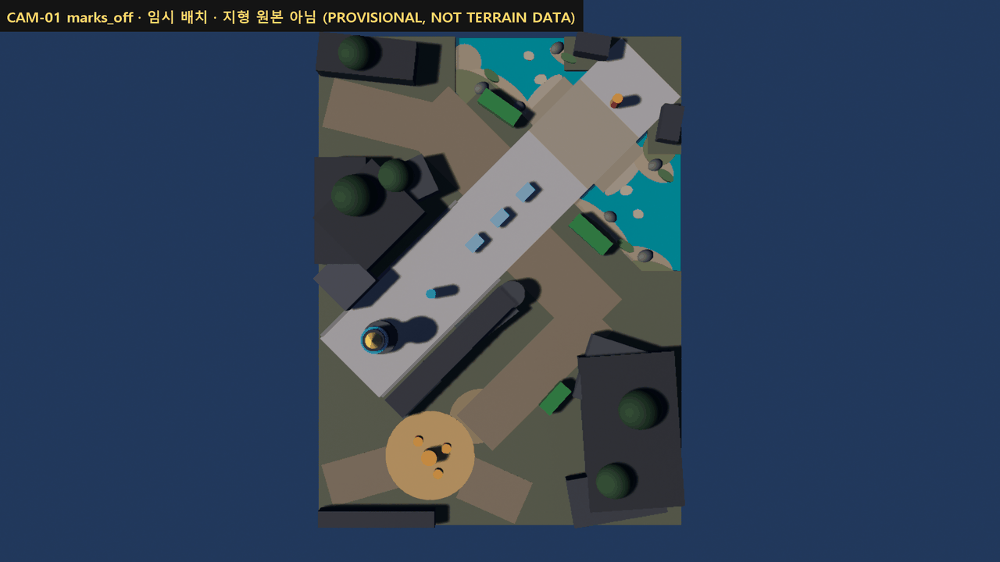
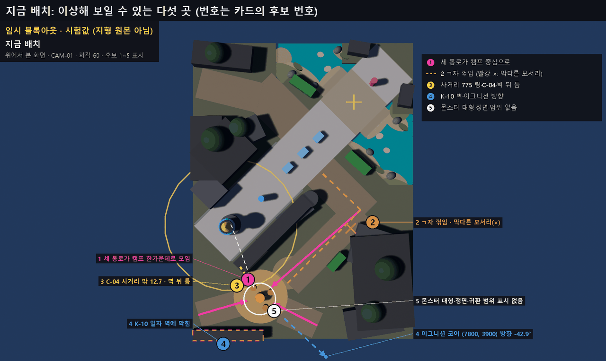
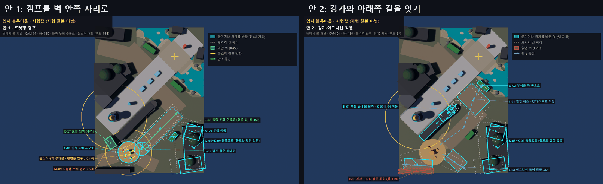
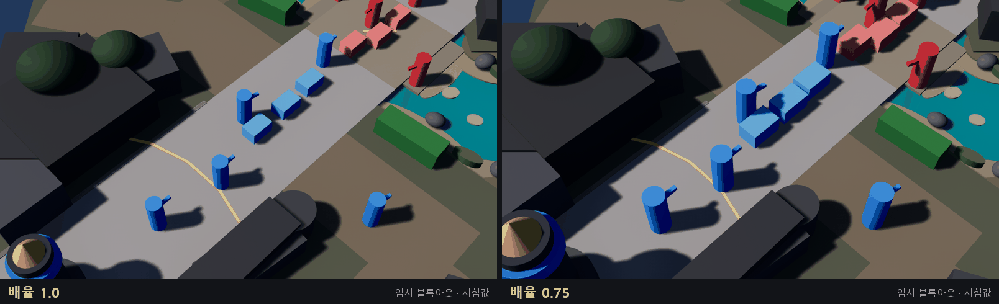
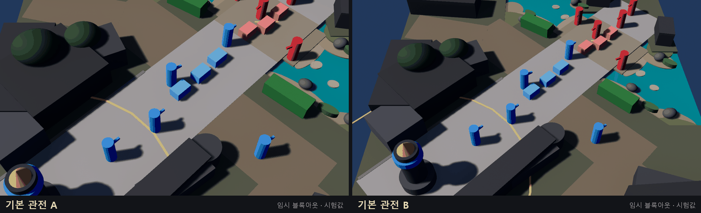
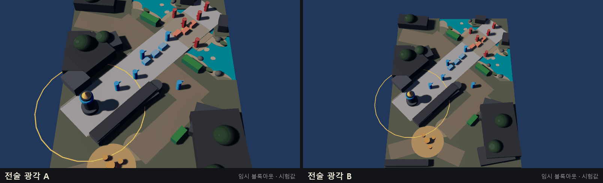

완료한 작업40건
- 1첫 묶음·원문 보정 37건(C-01~C-37), 판정 N-01~N-45, 커밋 기준 검증(23:33 실행 파일 74개·테스트 836건·Python 73건 통과, UE 자동화 23:12 필수 67건 통과), 대표 답변 반영과 보고 지침 작성23:46의 답(카드 42건)을 결정 기록에 원문과 함께 적고 카드마다 반영했습니다. 티어 그림 열 장을 저장했습니다. 23:51에 지시대로 게임 디자인·설계 세션을 닫았습니다. 00:02에 여덟 역할에 답의 반영을 배정했습니다. 현황판의 배포가 00:13부터 네 번 잇달아 실패해(올린 직후 배포 단계가 산출물을 찾지 못하는 경합) 배포 작업에 대기를 넣어 고쳤습니다. 00:13의 게시는 00:26부터 보였습니다.총괄
- 2첫 작업(CMake·UBT 동일 소스 연결)과 둘째 작업(ManagementUI 플러그인, 테마 토큰, FMUiKit 헬퍼 2종, 예제, 자동화)UE 5.8.4 Win64 Development 에디터 빌드와 자동화 기반을 구축해 완료했습니다. 대표가 D-002에서 UE 5.8.4를 확정했습니다(19:33).통합·배포
- 3첫째~다섯째 작업 완료(M1 주행·요약 봉인·원시 사건·상태 해시, 리플레이 기록과 재생 검증, 결정론 하네스, 원시 사건 레코드 계약 이전, 첫 포탑 동률 진영 편향 수정)세션 보고: 1,000경기를 두 컴파일러로 돌려 결과가 한 줄도 다르지 않았고 재생 검증 실패 0, 진영 반전 500쌍이 모두 거울 일치했으며 변이 15개 중 동치로 보이는 1개만 남았습니다. 총괄은 20:13 커밋 기준 검증에서 테스트 통과를 확인했습니다.경기 코어·AI
- 4여섯째 작업(20:36 배정): 대표가 답한 첫 단계 규칙(부활, 포탑의 계약자 상대 전투와 성장 시간표, 포탑의 드론 상대 피해와 사거리, 회복, 구매, 코어 동시 파괴)과 방호벽 런타임 구현, 추첨 키의 원문 제안21:31 보고: 대표가 답한 첫 단계 규칙과 방호벽·불굴을 일곱 묶음으로 커밋했습니다. 세션 보고로 묶음마다 커밋 기준 검증 통과, 1,000경기 하네스에서 실패와 진영 반전 차이 없음. 첫 포탑 추첨이 진영을 바꾼 쌍에서 갈릴 수 있다는 반례와 고칠 안을 냈고 총괄이 C-32로 받았습니다.경기 코어·AI
- 5일곱째 작업(21:35 배정): 동률 추첨 키 보정(C-32)의 구현, 남은 포탑 보호 규칙(백도어 보호, 05:00 이전 탑·미드 1차 포탑의 추가 감소), 피해 기록의 정의, 계약자 전투의 첫 단계22:45 보고: 동률 추첨 보정(C-32), 백도어 보호와 05:00 이전 포탑 보호, 가열 경계의 되돌림, 계약자 전투의 첫 단계(기본 공격, 처치 귀속과 어시스트, 첫 처치, 처치 경험치, 연속 데스 감쇠와 처치 현상금, 포탑의 표적 전환)를 마쳤습니다. 세션 보고: 1,000경기 하네스 실패 0건, 진영을 바꾼 쌍의 차이 0건, 변이 21건 모두 검출. 총괄의 22:50 커밋 기준 검증에서 808건이 통과했습니다. 미룬 것: 스킬, 상태 효과, 치명타, 전술 스펠, 귀환, 아이템과 구매.경기 코어·AI
- 6여덟째 작업(22:48 배정): 동률 추첨 순서의 보정(C-37), M1 경기 코어의 남은 범위 제안, 귀환과 우물23:18에 귀환과 우물을 커밋했습니다. 23:29에 독립 대조가 찾은 두 건(개인 현상금의 단계표, 파밍 골드의 감쇠 복구)을, 23:39에 포탑 파괴 보상을 고쳤습니다. 23:33에 명령을 내는 쪽의 첫 단계 범위를 제안했고 총괄이 23:36에 판정했습니다(총괄 결정 보고 AI-01).경기 코어·AI
- 7첫째~일곱째 작업 완료(리플레이·저장 V2 코덱, 원장·정산·저장 서비스·호환 판정, 로드 서비스와 Windows 파일 어댑터, 경기별 카운터 보정, 사전 편성 요청 경계, 통합 테스트, 계약 정리, M1 전용 무변동 정산표, 다전제 규칙)일곱째 작업(21:05 보고): 계약 정리, M1 전용 무변동 정산표, 다전제 규칙(세트 사이 저장 금지, 후보 교체, 진영 선택과 기본값)을 마쳤습니다. 세션 보고로 커밋 기준 검증 통과(두 프리셋 실행 파일 65개, 테스트 755건, Python 59건)를 확인했습니다.구단·대회·저장
- 8여덟째 작업(21:07 배정): 무효 경기의 보류와 재경기(OD-15) 구현22:00 보고: 공식전·스크림의 무효 실행은 보류하고(뒤 경기를 막음, 자동 재시도 없음) 같은 입력의 재실행이나 새 경기 번호의 재경기로 풉니다. 솔로랭크의 무효는 바로 마감하고 10인은 무변동입니다. 원장 레코드가 2바이트 늘었습니다(C-33으로 원문에 반영). 세션 보고: 보류 뒤 재실행의 결과가 깨끗한 실행과 바이트까지 같음, 변이 78건 모두 검출.구단·대회·저장
- 9아홉째 작업(22:37 배정): 시리즈를 처음부터 끝까지 (다음 세트 만들기, 경기 뒤 처리를 한 곳으로, 리플레이 기록)23:52 보고: 다음 세트 만들기, 리플레이 기록, 경기 뒤 처리를 한 곳으로 모은 흐름과 3전 2선승 전체를 도는 통합 시험을 커밋했습니다. 세션 보고: 두 컴파일러에서 실행 파일 79개·테스트 889건 통과.구단·대회·저장
- 10첫째~아홉째 작업 완료(조사 포매터, 참조 벡터 비교, 로스터 검사기, 발음 사전 로더, 커밋 기준 검증 스크립트, 요약 팩트·기사 틀 로더와 검사기, 커밋 기준 UE 검증 스크립트, 역할별 활동 표시, UE 필수 테스트 13건 추가, 하네스 빌드 규칙)아홉째 작업 완료(21:08 보고): 역할별 활동 표시, Unreal Engine 필수 테스트 13건 추가, 하네스 빌드 규칙을 마쳤습니다. 활동 표시 게시 루프는 20:55부터 돌아가고 있습니다.검증·내러티브 엔진
- 11열째 작업: 배치 결과 독립 대조 도구 실행 완료, 이어서 원시 사건 팩트 세 종류(처치, 구조물 파괴, 타이탄 소환) 구현21:32 보고: 배치의 독립 대조 도구(액터 116개 일치)와 원시 사건 팩트 세 종류(처치, 구조물 파괴, 타이탄 소환)를 커밋했습니다. 총괄이 21:30에 대조 도구를 직접 돌려 같은 결과를 확인했습니다.검증·내러티브 엔진
- 12열한째 작업(21:36 배정): 기술 부록의 검증 사례 84개가 지금 테스트로 덮이는지의 대조표, 앞선 용어 표기를 찾는 검사기22:03 보고: 기술 부록의 검증 사례 86행을 지금 테스트와 대조했습니다(덮음 28, 일부만 덮음 30, 아직 없음 27, 입력 대기 1. 남은 58행은 지금 시작할 수 있는 것 5, 첫 단계 7, 둘째 단계 27, 셋째 단계 1, 넷째 단계 18). 앞선 용어 표기를 찾는 검사기도 커밋했습니다(현황판 25곳, 정본과 설계 문서 148곳을 찾음). 총괄은 대조표의 판단을 아직 직접 확인하지 않았습니다.검증·내러티브 엔진
- 13열두째 작업(22:37 배정): 보류 경기 형식의 참조 검사와 참조 표본, 구조물 파괴 문장에 구조물 종류 붙이기, 처형사를 처치 문장으로 쓰지 않기, 커밋 기준 검사 보강23:02 보고: 구조물 파괴 문장에 구조물 종류를 붙이고 처형사를 처치 문장으로 쓰지 않게 했습니다. 보류 경기 형식의 참조 검사와 저장 표본, 커밋 기준 검사의 용어 검사와 문서 일치 경고(처음에 잘못 뜨던 것을 고침), 검증 사례의 번호 표기를 커밋했습니다. 총괄의 22:58 검증에 앞의 세 커밋이 들어가 통과했습니다.검증·내러티브 엔진
- 14열셋째 작업(23:04 배정): 계약자 전투 첫 단계와 경제 규칙의 독립 대조00:00 보고: 계약자 전투 첫 단계를 규칙의 글과 따로 대조했습니다(테스트 23건). 불일치 두 건은 고쳐진 뒤 다시 대조해 맞았습니다. 규칙 명세 2~9장을 문장 단위로 나눈 구현 여부 표를 냈습니다: 486행 가운데 구현됨 234(그중 경기에 아직 연결되지 않은 것 54), 독립 테스트 없음 39, 미룸 202, 빠짐 2, 판단 못 함 2, 범위 밖 7.검증·내러티브 엔진
- 15열넷째 작업(00:02 배정): 투사체와 대형 간격의 독립 검산, 공성 검산 다시 하기, 발음과 기사 확정의 검사00:30 보고: 구현 여부 표에 판정과 23:46의 답을 반영해 다시 셌습니다(486행 가운데 구현됨 234, 그중 월드에 연결되지 않은 것 54, 독립 테스트 없음 39, 불일치 1, 미룸 180, 재설계 중 28, 빠짐 2, 판단 못 함 1, 범위 밖 1). 투사체와 대형 간격을 따로 계산해 경기 코어·AI의 계산서와 같은 결론을 냈습니다. 공성 검산은 산술이 모두 맞았고, 억제기가 이미 열린 행은 웨이브에 공성 대신 슈퍼 드론이 들어가 글의 값과 어긋나는 것을 알렸습니다(총괄이 원문 보정 때 다룹니다). 발음 사전의 확정 행과 로스터가 맞는지 보는 테스트를 넣었습니다(세션 보고: 두 컴파일러에서 테스트 905건 통과).검증·내러티브 엔진
- 16첫째~셋째 작업(파일럿 계획·컨셉 브리프·기준 세트, 대리 형상 7종·검은 실루엣 검사·구간 A 임시 배치·논리 표현 표, 논리 표현 표를 표시 enum에 맞춤, 관리 화면 아이콘 18종 SVG 초안과 검수 시트, 역할 아이콘 후보 A·B)대리 형상 7종·구간 A 임시 배치·아이콘 18종 초안은 모두 승인 전 단계이며 UE 반입과 유료 생성은 하지 않았습니다.아트
- 17첫째~아홉째 작업 완료(M1 화면 카드·키트 토큰 32종·COMP-05~10 규격·ViewModel 정합·이름 최소 너비·아이콘 초안 검토, 문구 키 125개, 규격 차이 12건 판정과 대표 결정의 화면 반영)아홉째 작업 판정서(규격 수정 8건, 구현 수정 2건, 현행 수용 1건, 대표 비교 장면 1건, 문구 키 125개)를 총괄이 확인하고 커밋했습니다(21:08).UI/UX
- 18열째 작업(22:00 배정): 화면 부품 세 종의 규격 빈 곳 판정, 스크림 과제 표시의 비교 장면 카드 원고22:23 보고: 빈 곳 15건을 판정했습니다(규격을 고친 것 12건, 구현을 고칠 것 1건, 그대로 두거나 넘긴 것 3건). 문구 키가 127개가 됐습니다. 총괄이 확인해 22:37에 커밋했고, 카드 원고는 그림과 함께 UI-01로 올렸습니다.UI/UX
- 19열한째 작업(23:17 배정): 가방 6칸과 아이템 등급 표시의 규격, 출전·전술 화면의 첫 조립에서 넘어온 것23:46 보고: 가방 여섯 칸과 전술 부츠 칸의 표시, 네 등급을 색만으로 가르지 않는 표시, 출전·전술 화면의 빠진 문구 키와 표시 단어와 칸별 잠금과 좁은 창의 규칙을 정했습니다. 문구 키가 204개가 됐습니다. 총괄이 확인해 00:01에 커밋했습니다.UI/UX
- 20열두째 작업(00:02 배정): 대표의 답의 화면 반영00:19 보고: 스크림 과제 칸을 B로 확정해 화면 코드에 넘길 변경 번호를 냈고, 신화가 전설에서 올라가는 표시, 골드 네 가지(누적 획득, 현재 보유, 지출, 판매 환불)의 낱말과 자리, 시드 4종과 현상금 상태와 아포칼립스의 자리, 티어 문양의 쓰임을 정했습니다. 문구 키가 232개가 됐습니다. 총괄이 00:20에 커밋했습니다. 티어 문양은 원본을 그대로 두고 영문 글자와 사각 틀을 지운 투명 배경의 사본(512x512)이 필요하다고 정리했습니다.UI/UX
- 21용어집·발음 메타데이터·검수 기준표(61인), 발음 사전 형식 1 변환, 경기 결과 기사 문장 36건·TMPL-01, 팀 목표 합계 6종 초안 18건·TMPL-02, 정식 기사 틀 파일과 결과 기사 틀 초안 10001·FRAME-01, 화면 문구 125개 키 동기화 완료21:11에 화면 문구를 키 125개에 맞춰 보고했고 총괄이 확인한 뒤 커밋했습니다.글 콘텐츠 검수
- 22대표가 정한 용어(21:14 답변)를 용어집, 화면 문구, 기사 틀에 반영(21:18 배정)21:38 보고: 용어 12건을 용어집, 발음 사전, 검수 기준표, 화면 문구, 기사 틀의 근거에 반영했습니다(세션 보고: 검사기 두 종 오류 0건). 정본과 설계 문서의 바꿀 곳 목록도 냈습니다. 총괄의 확인과 커밋은 아직 하지 않았습니다.글 콘텐츠 검수
- 23사건 팩트 세 종류(처치, 구조물 파괴, 타이탄 소환)의 문장 초안22:09 보고: 문장 22건과 풀경기용 틀 초안 두 개를 냈습니다(세션 보고: 검사기 오류 0건). 정식 묶음에는 넣지 않았고 총괄의 확인을 기다립니다. 용어 반영은 총괄이 확인해 22:01에 커밋했습니다.글 콘텐츠 검수
- 24화면 문구를 키 127개에 맞추기, 구조물 종류의 발음 사전 행과 문장23:25 보고: 화면 문구를 키 127개에 맞췄고 구조물 종류의 발음 사전 6행과 구조물 파괴 문장 8건을 냈습니다. 총괄이 검사기 셋을 다시 돌려 23:26에 커밋했습니다.글 콘텐츠 검수
- 25다음 작업(00:02 배정): 발음 61건과 기사 문장 54건과 기사 틀의 확정 반영, 문구 키 204개, 새 용어00:30 보고: 화면 문구를 키 232개에 맞췄고(슬롯과 길이 상한 일치), 시드 4종과 주 파장과 각성 넷과 지원 퀘스트의 용어 후보 10건을 올렸습니다. 티어의 프리즘과 시드의 프리즘이 헷갈리는 문맥과 구분 표기의 원칙을 정리했습니다. 총괄이 확인해 00:31에 커밋했습니다. 발음과 기사 묶음의 확정은 00:20에 커밋됐습니다.글 콘텐츠 검수
- 26첫째~열두째 갱신 완료(열두째 21:27 게시)20:40 대표 지시로 새 세션을 띄웠습니다.현황 보고문
- 27첫째~넷째 작업 완료(토큰 32종, 공용 컴포넌트 묶음 A 3종, 사전 편성 ViewModel, COMP-04, 실화면 결함 V-01·V-02 수정, 계약 타입 정합, 데이터 표·배정 슬롯·비교 패널, 뷰모델 변경 건수와 되돌리기, 오버레이 폭 입력과 팝업 잠금 행)세션이 자동화 41/41과 변이 18건 검출, 규격 차이 12건을 보고했고 총괄이 20:13 커밋 기준 검증에서 자동화 41건 통과를 확인했습니다. 총괄의 실화면 확인은 아직 하지 않았습니다.UI 소스 작성
- 28다섯째 작업(20:36 배정): 다음 공용 컴포넌트 묶음(COMP-08~COMP-10) 구현, 그 뒤 UI/UX 판정의 구현 수정 두 건과 공식전 편성 화면 비교 장면 두 장 제작21:49 보고: 경기 전 화면과 코어를 잇는 어댑터, 지시 도크·사건 기록·경기 후 상태 막대(COMP-08~COMP-10)와 테스트 13건, 구현 수정 두 건, 스크림 과제 표시의 비교 장면을 커밋했습니다(세션 보고: 자동화 59건 통과, 변이 20건 모두 검출). 총괄의 커밋 기준 UE 검증(21:47)에서 필수 41건이 통과했고 실행된 59건이 모두 통과했습니다. 새 테스트 18건은 아직 필수 목록에 없습니다.UI 소스 작성
- 29여섯째 작업(22:37 배정): 이벤트 로그의 재동기화 행 표시 수정, 출전·전술 화면의 첫 조립23:11 보고: 출전·전술 화면을 키트 부품과 사전 경기 상태 흐름 위에 조립했습니다(그림은 UI-02). 세션 보고: 자동화 67건 통과, 변이 11건 모두 검출. 총괄의 23:12 Unreal Engine 검증에서 필수 67건이 통과했습니다. 규격과 계약에 없어 만들지 못한 것(이름과 목록, 빠진 문구, 표시 단어, 좁은 창)을 목록으로 냈습니다.UI 소스 작성
- 30일곱째 작업(23:12 배정): 화면이 필요로 하는 이름과 목록의 계약 제안, 결과·기사·저장 화면의 첫 조립00:05 보고: 결과·기사·저장 화면을 표본 서비스 위에 조립했습니다(새 자동화 검사 8건). 출전·전술 화면이 필요로 하는 이름과 목록의 계약 제안을 냈습니다. 총괄이 제안을 읽고 계약 문서에 적습니다.UI 소스 작성
- 31첫 작업(미드 구간 배치 지시서)과 둘째 작업(계약자 표시 신장·관전 카메라 비교 화면 지시서) 완료둘째 작업(21:18 보고): 계약자 표시 신장과 관전 카메라 비교 화면의 지시서(장면 10장, 카드 초안 2장)를 냈습니다. 총괄이 읽고 받았습니다(21:22).레벨 디자인
- 32셋째 작업(21:25 배정): 배치 결과의 검토21:28에 검토를 냈습니다. 검수 항목 열 가지 가운데 불합격 0, 합격 8, 조건부 2(강가의 풀과 둑 사이의 작은 물 틈, 관전 각도 그림에서 캠프 일부가 잘림)입니다. 물길이 운하가 아니라 강가로 읽히고 구성이 참고 그림과 닮았다고 판정했습니다. 다듬기 후보 네 가지를 적었습니다.레벨 디자인
- 33넷째 작업(21:46 배정): 비교 화면 10장의 검토21:49 보고: 합격 6, 조건부 4(가장자리 일부 잘림, 비교 목적은 충족), 불합격 0. 촬영 때 고른 기본값 세 가지는 그대로 두었습니다. 카드 문장을 실제 그림에 맞춰 고쳤습니다. 화면 속 높이의 수치는 계산값이며 그림에서 재지 않았습니다.레벨 디자인
- 34다섯째 작업(22:08 배정): 정글 캠프와 동선의 검토 (대표 의견)22:15 보고: 지금 배치에서 이상하게 보일 수 있는 점 다섯 가지(통로 세 갈래가 캠프 한가운데로 모임, 남동 통로의 직각 꺾임, 포탑 사거리 원이 캠프에 바짝 닿음, 캠프 아래의 일자 벽, 몬스터가 서는 자리와 귀환 범위가 보이지 않음)와 고칠 안 세 가지를 냈습니다. 확정 좌표는 바꾸지 않습니다.레벨 디자인
- 35여섯째 작업(23:17 배정): 대표가 정하신 관전 값의 지시서 반영, 정글 안마다의 변경분 준비23:21 보고: 맵 배율 1.0, 기본 관전 B, 전술 광각 B를 지시서에 적었고(M1 파일럿 한정의 시험값), 가장 가깝게 당긴 화면의 두 경우(ART-03F)를 값으로 풀어 두었습니다. 정글 캠프의 안(MAP-02)은 답이 오면 바로 반영할 수 있게 안마다의 변경분과 '지금 그대로'일 때의 최소 수정을 준비했습니다. 총괄이 확인해 23:22에 커밋했습니다.레벨 디자인
- 36일곱째 작업(00:02 배정): 안 3을 배치 지시서에 옮기기, 여울 건널목, 관전 값의 확정, 지형 변이의 자리00:22 보고: 안 3을 배치 지시서에 옮겼고(96행, 액터 144개), 여울 건널목을 낮은 돌바닥과 얕은 여울로 바꾸는 변경분(도형 21개), 기준 신장 180cm와 가장 가까운 거리 2,800 수준의 반영, 시드 4종에 따라 바뀌는 지형의 자리 제안(30개 항목, 양 진영 대칭)을 냈습니다. 총괄이 00:25에 커밋했습니다. 벽이 생기고 없어질 때의 충돌·시야·길찾기 같은 규칙 일곱 가지는 총괄과 경기 코어·AI가 정합니다.레벨 디자인
- 37첫 작업(20:39 배정): 대표 환경 구간(미드 쪽) 블록아웃 배치와 전경 캡처, 이어서 비교 화면 촬영21:44 보고: 블록아웃 배치(액터 116개)와 전경 캡처 여섯 장, 비교 화면용 대리 형상 28개와 캡처 열 장을 마치고 레벨과 재질 43개, 배치 스크립트를 커밋한 뒤 에디터를 닫았습니다. 도구 호출로 한 것과 다른 방법으로 한 것(화각 설정과 에디터 재시작, 화면 모드 키, 캡처의 표기)을 구분해 보고했습니다.환경 배치
- 38둘째 작업(22:16 배정): 정글 캠프와 길의 비교 그림22:33 보고: 지금 배치와 고칠 안 세 가지를 사본 네 개에 놓고 다시 읽어 지시서와 대조했습니다(빠진 것, 남는 것, 오차 모두 0). 세 안 모두 길과 암반의 겹침이 0이고, 지금 배치에는 남동쪽 길이 암반과 겹친 곳이 있습니다. 그림은 MAP-02에 올렸습니다. 커밋된 레벨은 건드리지 않았습니다.환경 배치
- 39셋째 작업(23:09 배정): 지형 파일(.lmap)의 판독과 기록, 맵 검사 (합성 파일)23:39 보고: 지형 파일의 판독과 기록, 지형 없이 할 수 있는 맵 검사를 합성 파일로 만들었습니다(새 테스트 22건). 계약 문서의 빈 곳 열 가지를 제안과 함께 냈고 총괄이 판정합니다.환경 배치
- 40넷째 작업(00:02 배정): 안 3을 블록아웃에 적용00:36 보고: 안 3을 지시서의 144개 그대로 적용해 커밋했고, 이어서 여울 건널목의 변경분을 적용해 커밋했습니다(160개, 돌 색 재질 10개). 전후 그림 36장을 찍었습니다. 결과는 MAP-03에 그림과 함께 있습니다.환경 배치
답변으로 종결된 대표 결정115건
대표가 실제로 답한 항목만 여기에 둡니다. 원래 제목과 검토 7항목은 그대로 남깁니다.
답변 완료미드 구간의 임시 배치 전경: 이 방향으로 이어 갈까요
대표 답변현재 미드·강가 방향으로 진행합니다. MAP-02 안 3을 반영하고, 여울 건널목은 평평한 다리 상판보다 낮은 돌바닥·얕은 여울처럼 보이도록 보완합니다. (23:46 답변) 반영: 이 방향으로 이어 갑니다. 여울 건널목을 낮은 돌바닥과 얕은 여울로 보이게 고치는 일을 안 3의 적용과 함께 레벨 디자인과 환경 배치에 배정했습니다(00:02).
- 질문
- 20:26에 지시하신 대로 참고 그림의 구성을 따르되 물길을 운하가 아니라 강가로 다시 잡아, 미드 쪽 구간을 Unreal Engine에서 블록아웃으로 놓았습니다. 레벨 디자인이 배치를 지시했고 환경 배치가 엔진의 MCP 연결로 놓았습니다. 아래 그림 세 장이 그 전경입니다. 이 방향으로 이어 가도 될지, 고칠 곳이 있으면 알려 주십시오. 그림은 임시 배치이며 판정에 쓰는 지형 원본이 아닙니다. 단색 기본 도형으로만 놓은 것이라 재질과 조명, 모델은 들어 있지 않습니다.
- 추천안과 이유
- 이 방향으로 이어 가는 것을 추천합니다. 확인한 것은 세 가지입니다. 첫째, 놓은 역할이 아닌 쪽(검증·내러티브 엔진)이 기계로 대조해 액터 116개의 위치, 크기, 회전이 지시서와 모두 일치했습니다. 둘째, 레벨 디자인이 화면을 검수 항목 열 가지로 검토해 불합격 0, 합격 8, 조건부 2로 판정했습니다. 조건부 두 가지는 강가의 풀과 둑 사이에 작은 물 틈이 보이는 것과, 관전 각도 그림의 아래쪽에서 캠프 일부가 잘린 것입니다. 셋째, 총괄이 그림을 직접 열어 미드 길, 포탑, 캠프, 강과 여울 건널목을 확인했습니다. 곧은 옹벽과 난간이 없고 굽은 물가와 자갈톱, 징검돌, 물가 바위가 있어 운하보다 강가로 읽힙니다.
- 대안
- 고칠 수 있는 방향입니다.
(가) 여울 건널목이 낮은 다리의 상판처럼 보일 수 있습니다. 물에 잠긴 돌바닥처럼 더 낮추거나 가장자리를 불규칙하게 할 수 있습니다(총괄이 그림에서 본 점입니다).
(나) 이 구간에는 강이 한쪽 모서리에만 걸립니다. 강을 따라 구간을 넓혀 강가가 더 많이 보이게 할 수 있습니다.
(다) 물의 폭과 굽이, 둑의 모양을 바꿀 수 있습니다. 지시서의 값만 고치면 같은 방법으로 다시 놓습니다. - 플레이 차이
- 없습니다. 임시 배치이고 경기 판정에 쓰지 않습니다.
- 구현·다른 설계 영향
- 방향이 정해지면 아트 파일럿의 환경 작업(재질, 모델, 조명)의 바탕이 됩니다. 지형 원본이 들어오면 좌표를 바꿔 다시 놓습니다. 같은 구간에서 계약자 표시 신장과 관전 카메라 비교 화면(ART-03)을 찍는 중이며 따로 올리겠습니다.
- 결정 시점
- 급하지 않습니다. 고칠 곳을 알려 주시면 바로 다시 놓겠습니다.
- 숫자 상태
- 확정값: 미드 1차 포탑, 칼날 드론군 캠프, 전장 중심의 좌표와 포탑 사거리 775. 가정: 강의 중심선과 폭(380~500), 수면과 둑의 높이, 길과 통로의 폭, 벽과 바위와 부쉬의 자리, 카메라의 위치와 화각. 맵 배율은 임시 1.0입니다.




답변 완료정글 캠프와 길을 어느 안으로 다시 놓을지
대표 답변안 3 승인. 캠프 바깥 우회로와 강가·다음 캠프로 이어지는 길을 함께 수정합니다. (23:46 답변) 반영: 레벨 디자인이 준비해 둔 안 3의 변경분을 배치 지시서에 옮기고 환경 배치가 블록아웃에 적용합니다(00:02 배정). 적용한 뒤 전경을 다시 찍어 올립니다.
- 질문
- 22:07에 "정글몹동선이 좀 이상해"라고 하신 것을 받아, 레벨 디자인이 지금 배치에서 이상해 보일 수 있는 곳 다섯 군데를 찾고 고칠 안 세 가지를 냈습니다. 어느 곳을 가리키신 것인지는 추측하지 않았습니다. 첫째 그림의 번호가 그 다섯 군데입니다.
1. 길 세 갈래가 캠프 한가운데로 모입니다. 지나가려면 캠프의 몬스터 사이를 밟고 가야 합니다.
2. 남동쪽 길이 직각으로 꺾이고 강가로 바로 이어지지 않습니다. 길의 끝은 오른쪽 암반 밑으로 들어가 있습니다(놓은 값을 계산해 확인한 겹침입니다).
3. 포탑의 사거리 원이 캠프 바닥을 지나 가장 가까운 몬스터 바로 앞까지 닿습니다.
4. 캠프 아래의 일자 벽 때문에 다음 캠프로 내려가는 길이 막혀 보입니다.
5. 몬스터 네 마리가 방향 없이 흩어져 있어, 어디로 끌려 나오고 어디서 돌아가는지 보이지 않습니다.
어느 안으로 다시 놓을지 골라 주시겠습니까? 선택은 하나입니다.
- 안 1: 캠프를 벽 안쪽의 따로 떨어진 자리로 만들고 큰길은 캠프 바깥으로 돌립니다(1, 3, 5번을 고칩니다).
- 안 2: 캠프는 두고, 남동쪽 길을 강가로 곧게 잇고 아래의 일자 벽을 없앱니다(2, 4번을 고칩니다).
- 안 3(추천): 안 1과 안 2를 함께 합니다(다섯 군데를 모두 고칩니다). - 추천안과 이유
- 안 3을 추천합니다(임시 배치에 한함). 다섯 군데가 한 번에 정리됩니다. 세 안 모두 확정 좌표(포탑의 자리, 캠프 중심, 전장 중심, 사거리 775)는 그대로입니다. 환경 배치가 세 안을 사본에 놓고 다시 읽어, 세 안 모두 길과 암반의 겹침이 0이라고 보고했습니다(총괄은 그림으로만 확인했습니다). 레벨 디자인의 추천도 안 3입니다.
- 대안
- 안 1만 하면 캠프와 그 둘레만 먼저 고칩니다. 안 2만 하면 길의 이어짐만 고칩니다. 지금 그대로 두기를 원하시면 2번의 겹침(길이 암반 밑으로 들어간 것)만 고칩니다. 다섯 군데가 아닌 다른 곳이 이상하셨다면 그곳을 알려 주십시오. 그 부분만 고친 안을 다시 올리겠습니다.
- 플레이 차이
- 지금은 지형 원본이 들어오기 전의 임시 배치라 경기 규칙과 수치는 바뀌지 않습니다. 이 모양을 나중에 정식 지형에 쓰면, 정글러가 캠프의 몬스터를 건드리지 않고 바깥 길로 지나갈 수 있고(안 1, 안 3), 캠프에서 강가와 다음 캠프로 이어지는 길이 곧아집니다(안 2, 안 3).
- 구현·다른 설계 영향
- 고르신 안을 미드 구간의 블록아웃에 반영하고 전경(MAP-01)을 다시 찍어 올립니다. 정식 지형 원본을 받을 때 캠프의 입구와 길의 기준으로 씁니다.
- 결정 시점
- 급하지 않습니다. 블록아웃을 다음으로 손보기 전에 답해 주시면 됩니다. 안의 번호만 주셔도 됩니다.
- 숫자 상태
- 포탑의 자리와 사거리 775, 캠프 중심, 전장 중심은 기존 확정값이고 어느 안에서도 바뀌지 않습니다. 캠프의 반지름(320에서 260), 돌아가는 길의 폭 360, 새 벽의 크기, 몬스터의 자리, 끌려 나오는 범위를 표시한 원(반지름 550)은 모두 그림을 위한 시험값입니다. 그림은 임시 블록아웃이며 최종 그림이 아닙니다.





답변 완료아트 세션의 실행 모델(지정하신 모델의 주간 한도 98% 사용)
대표 답변아트 세션은 일단 대기합니다. (19:05 답변)
- 질문
- 아트 세션에 지정하신 모델은 주간 사용 한도가 98% 찬 상태입니다(18:55 조회, 초기화까지 약 1일 17시간). 그래서 아트 작업 배정을 보류하고 있습니다. 초기화 전까지 아트 작업을 어떻게 진행할까요?
- 선택지 A(추천): 초기화 전까지는 구현 세션과 같은 모델로 아트 작업을 진행하고, 초기화되면 지정하신 모델로 되돌립니다.
- 선택지 B: 초기화될 때까지 아트 작업을 쉬게 둡니다.
- 선택지 C: 지정하신 모델로 남은 한도만큼만 진행하고, 한도에 닿으면 멈춥니다. - 추천안과 이유
- 선택지 A를 추천합니다. 지금 아트가 할 수 있는 일(파일럿 준비 문서, 아이콘 초안 수정)은 문서와 벡터 그림 작업이라 모델을 잠시 바꿔도 약 이틀을 쉬지 않아도 됩니다. 조건: 유료 이미지 생성은 이 결정과 무관하게 ART-01의 승인 전에는 하지 않습니다. 모델을 바꿨을 때 결과물의 품질 차이는 재 보지 않았습니다.
- 대안
- 선택지 B는 한도를 전혀 쓰지 않지만 아트 준비가 약 이틀 멈춥니다. 선택지 C는 지시를 글자 그대로 따르지만 남은 2%로는 작업 하나를 끝내기 어렵고, 중간에 멈추면 15:57의 구현 세션 정지와 같은 일이 생깁니다.
- 플레이 차이
- 없습니다. 작업 세션의 운영 문제입니다.
- 구현·다른 설계 영향
- 아트 세션이 해당합니다. 같은 모델로 바꾼 통합·배포 세션은 지금 배정된 작업이 없어 영향이 없지만, 작업을 배정하면 같은 한도를 씁니다.
- 결정 시점
- 지금 정해 주시면 아트 작업을 바로 배정합니다. 답이 없으면 아트는 계속 대기합니다.
- 숫자 상태
- 98%와 초기화까지 남은 시간은 18:55에 조회한 사용량입니다. 게임 수치가 아닙니다.
답변 완료총괄 세션의 사용량(주간 한도의 12%, 한 시간에 약 6%)
대표 답변지금대로 유지합니다. 절약 운영도 하지 않아도 됩니다. (19:05 답변)
- 질문
- 총괄 세션만 지정하신 상위 모델을 쓰고 있습니다. 그 모델의 주간 사용량은 17:54에 3%, 18:17에 8%, 18:55에 12%였습니다. 18:03부터는 총괄만 이 모델을 쓰므로 최근 38분 동안 총괄 혼자 4%를 썼습니다(한 시간에 약 6%). 이 속도가 이어지면 남은 88%는 약 14시간 분량인데, 초기화까지는 약 3일 16시간이 남았습니다. 총괄의 사용량을 어떻게 줄일까요?
- 선택지 A(추천): 모델은 그대로 두고 절약해서 운영합니다. 세션 연락을 모아서 처리하고, 대화 맥락을 줄이고, 이미 통과한 검증은 다시 돌리지 않습니다. 한 시간 뒤에 다시 재서 한 시간에 3% 아래로 내려오지 않으면 선택지 B로 바꿉니다.
- 선택지 B: 총괄도 구현 세션과 같은 모델로 내리고, 계약 판정처럼 어려운 건만 상위 모델로 올려 처리합니다.
- 선택지 C: 지금대로 둡니다. - 추천안과 이유
- 선택지 A를 추천합니다. 계약 판정과 검수는 총괄의 일 가운데 잘못되면 여러 세션이 다시 일해야 하는 부분이라 상위 모델을 유지할 이유가 있습니다. 다만 절약 운영으로 얼마나 줄어드는지는 재 보지 않았으므로, 한 시간 뒤의 실측으로 판단하는 조건을 붙였습니다.
- 대안
- 선택지 B는 한도 걱정이 가장 작습니다. 대신 총괄이 구현 세션과 같은 주간 한도(18:55에 10% 사용)를 함께 쓰게 되고, 어려운 건을 가려 모델을 올리는 손이 한 번 더 갑니다. 선택지 C는 품질 위험이 없지만 약 14시간 뒤 한도에 닿아 총괄이 멈출 수 있습니다.
- 플레이 차이
- 없습니다. 작업 세션의 운영 문제입니다.
- 구현·다른 설계 영향
- 선택지 A에서는 세션의 보고와 질문에 대한 총괄의 답이 몇 분 늦어질 수 있습니다. 총괄이 멈추면 배정, 판정, 커밋, 현황판 갱신이 함께 멈춥니다.
- 결정 시점
- 오늘 안에 정해 주시면 됩니다. 답이 없으면 선택지 A처럼 절약해서 운영하되 모델은 바꾸지 않습니다.
- 숫자 상태
- 사용량은 17:54, 18:17, 18:55에 조회한 값이고 14시간은 최근 38분의 속도로 계산한 추정입니다. 3%는 초기화까지 남은 시간에 맞춘 시험 기준입니다.
답변 완료이전 통합·배포 세션 탭 닫기
대표 답변대표가 직접 닫았습니다. (19:05 답변)
- 질문
- 통합·배포 세션의 실행 방식을 바꾸면서(18:01) 새 세션을 띄웠고, 이전 세션의 탭은 쉬는 상태로 열어 두었습니다. 이전 탭을 닫을까요?
- 선택지 A(추천): 닫습니다.
- 선택지 B: 열어 둡니다. - 추천안과 이유
- 선택지 A를 추천합니다. 이전 세션이 맡았던 두 작업은 커밋과 보고서로 남아 있고 진행 중인 작업이 없습니다. 열어 두면 어느 탭이 지금 담당인지 헷갈릴 수 있습니다. 조건: 닫은 뒤에 그 세션의 대화 맥락을 다시 불러올 수 있는지는 확인하지 않았습니다.
- 대안
- 선택지 B는 이전 대화 맥락을 참고용으로 남깁니다. 쉬는 탭은 사용량을 쓰지 않습니다.
- 플레이 차이
- 없습니다. 작업 세션의 운영 문제입니다.
- 구현·다른 설계 영향
- 통합·배포의 다음 작업은 어느 쪽이든 새 세션에 배정합니다.
- 결정 시점
- 급하지 않습니다. 답이 없으면 열어 둡니다.
- 숫자 상태
- 해당 없음.
답변 완료'CLI로' 지시의 해석 확인(문서와 디자인 네 세션의 실행 방식)
대표 답변잘 열었습니다. 지금 방식 그대로 둡니다. (19:05 답변)
- 질문
- 게임 디자인·설계, UI/UX, 글 콘텐츠 검수, 현황 보고문 네 세션을 'CLI로' 바꾸라는 지시를, 같은 도구의 채팅 방식을 터미널 방식으로 바꾸는 것으로 해석해 18:02에 그렇게 바꿨습니다. 이 해석이 맞습니까?
- 선택지 A(추천): 맞습니다. 지금의 터미널 방식을 유지합니다.
- 선택지 B: 아닙니다. 구현 세션과 같은 실행 도구로 씌웁니다. - 추천안과 이유
- 선택지 A를 추천합니다. 네 세션 가운데 셋은 터미널 방식으로 작업을 받아 끝낸 것을 확인했고, 게임 디자인·설계는 18:46에 터미널 방식으로 첫 작업을 받았습니다. 선택지 B는 그 실행 도구에 해당 모델 제공사의 로그인이 한 번 필요한데 지금은 되어 있지 않습니다.
- 대안
- 선택지 B로 가면 로그인은 대표가 직접 하셔야 하고, 네 세션을 다시 띄우는 동안 진행 중인 작업을 한 번 끊어야 합니다.
- 플레이 차이
- 없습니다. 작업 세션의 운영 문제입니다.
- 구현·다른 설계 영향
- 네 세션에 작업을 전달하는 방식만 달라집니다. 산출물과 검수 절차는 같습니다.
- 결정 시점
- 급하지 않습니다. 답이 없으면 지금 방식을 유지합니다.
- 숫자 상태
- 해당 없음.
답변 완료받지 못한 1.2-final-r3 묶음
대표 답변받은 묶음이 r3입니다. 압축을 풀어 그대로 드린 것입니다. (20:06 답변) 반영: 기준선의 패키지 배포를 1.2-final-r3로 고쳤습니다. 첫 지시문에 패키지 배포 1.2-final-r3, 기술 계약 1.2-final-r2, 아트 가이드 증보5로 적혀 있었고 총괄이 r3를 따로 올 묶음으로 잘못 읽었습니다. 지시문이 말한 아트 최종 통합 보고서 이름의 파일은 받은 자료에 없고 아트 갱신 보고서를 받았습니다. 같은 문서로 보고 진행합니다.
- 질문
- 지시서에 적힌 1.2-final-r3 묶음과 아트 통합 보고서를 받지 못했습니다. 그 묶음을 넣어 주시겠습니까, 아니면 지금 상태(1.2-final-r2에 아트 증보5를 반영한 상태)를 기준으로 확정할까요?
- 추천안과 이유
- r3 묶음이 있으면 넣어 주시는 쪽을 추천합니다. 받으면 지금 저장소와 파일 단위로 대조해, 총괄이 직접 맞춘 문서 동기화에 빠진 변경이 없는지 확인할 수 있습니다. 묶음이 따로 없다면 지금 상태를 기준으로 확정합니다.
- 대안
- 지금 상태를 그대로 기준으로 확정합니다. 이 경우 문서 배포 표기는 r2로 두고, 아트만 증보5로 적습니다.
- 플레이 차이
- 없습니다. 문서 묶음의 판 관리 문제입니다.
- 구현·다른 설계 영향
- 기술 계약은 양쪽 모두 1.2-final-r2라서 코드 작업에는 영향이 없습니다. 아트 가이드 증보5는 이미 반영했습니다. r3에만 있는 문서 변경이 있다면 그 부분만 다시 맞춥니다.
- 결정 시점
- 급하지 않습니다. 아트 파일럿을 넓히기 전에 정하면 됩니다.
- 숫자 상태
- 해당 없음.
답변 완료Unreal Engine 버전 (미결 결정 OD-01의 버전 부분)
대표 답변일단 5.8.4로 갑니다. (19:33 답변)
- 질문
- 프로젝트의 Unreal Engine 버전을 5.8로 정할까요? 현재 설치된 판은 5.8.4입니다.
- 추천안과 이유
- 5.8로 정하는 것을 추천합니다. 현재 설치된 엔진이 이 판 하나이고, 통합·배포가 이 판으로 에디터 빌드와 자동화 검사를 통과시켰습니다. 다른 판을 고르면 설치와 재검증이 추가됩니다.
- 대안
- 다른 5.x 판을 새로 설치해 씁니다. 어떤 판이 더 나은지 비교한 근거는 아직 없습니다(미확인).
- 플레이 차이
- 없습니다. 경기 규칙과 결과는 엔진과 분리된 코어가 계산합니다.
- 구현·다른 설계 영향
- Unreal Engine 프로젝트 파일의 엔진 연결, 빌드 명령, 이후 반입할 에셋의 판이 이 선택을 따릅니다. 에셋은 만든 판보다 낮은 판에서 열 수 없으므로 에셋 반입이 시작된 뒤에는 판을 낮추기 어렵습니다. 아트 가이드가 근거로 든 공급사 문서는 5.5 기준이라, 판이 정해지면 아트 역할이 프리셋과 메뉴 이름을 그 판으로 다시 확인합니다. OD-01의 나머지(축 방향, 맵 단위와 표시 단위의 배율)는 이 질문에 넣지 않았고 화면 통합 전에 따로 묻습니다.
- 결정 시점
- 지금 정하는 것을 권합니다. Unreal Engine 프로젝트 뼈대가 만들어졌고, 에셋 반입 전에 정해야 재작업이 없습니다.
- 숫자 상태
- 5.8.4는 설치를 확인한 값입니다. 표시 배율 후보(1.0, 0.75)는 미결이며 이번 질문의 대상이 아닙니다.
답변 완료대표 환경 구간의 지형 원본 선행 입고 여부 (EXT-03 일부)
대표 답변아트 리소스에 있는 그림처럼 배치합니다. 다만 수로가 너무 진짜 수로 같으니 강가 느낌으로 배치합니다. 레벨 디자인이 지시하고, Unreal Engine을 직접 다룰 수 있는 작업 세션이 배치합니다. 제대로 배치했는지 확인하고 검토한 뒤 맵 전경을 사이트에 올립니다. (20:26 답변) 반영: 지형 원본을 기다리지 않고 참고 그림을 기준으로 대표 환경 구간(미드 쪽)을 직접 배치합니다. 이 배치는 임시 블록아웃이며 판정에 쓰는 지형 원본을 대신하지 않습니다. 레벨 디자인 역할을 새로 두어 배치 지시서를 쓰게 하고, 배치한 화면을 확인한 뒤 전경을 올리겠습니다. 레벨 디자인과 환경 배치 두 역할을 20:39에 시작했습니다. 배치가 끝나면 맵 전경을 이 사이트에 올립니다.
- 질문
- 아트 파일럿의 대표 환경 구간(X 5600~8200, Y 4700~8200)에 한해 벽·수로·부쉬·정글 입구의 지형 원본을 먼저 주실 수 있습니까?
- 추천안과 이유
- 먼저 주시는 쪽을 추천합니다. 아트 가이드는 대표 구간에 수로를 넣으라고 하는데 수로의 위치·폭·횡단 지점이 판정 자료에 없습니다. 지금은 임시 배치로만 블록아웃을 만들 수 있고, 원본이 오면 다시 맞춰야 합니다.
- 대안
- 지형 원본 전체(EXT-03)가 올 때까지 임시 배치로 진행합니다. 임시 배치는 판정에 쓰지 않고 파일과 캡처에 임시라고 적습니다.
- 플레이 차이
- 없습니다. 지형의 판정 자료는 EXT-03 전체가 들어온 뒤에 정해집니다.
- 구현·다른 설계 영향
- 대표 구간의 블록아웃 재작업 여부, 수로 모듈의 치수, 회색 상자 장면의 경계 겹쳐 보기가 이 자료를 따릅니다. 참고 이미지 2장은 시각 참고이며 좌표의 근거로 쓰지 않습니다.
- 결정 시점
- 아트 파일럿의 환경 구간 블록아웃을 시작하기 전.
- 숫자 상태
- 구간 범위(X 5600~8200, Y 4700~8200)는 아트 역할의 제안값이며 확정이 아닙니다.
답변 완료19:54 답변의 H가 가리키는 묶음
대표 답변h가 무효경기보류재경기일거야. (20:59 답변) 반영: H를 무효 경기 보류·재경기 묶음(2건)으로 보고, 19:54에 하신 "추천안대로"를 그 두 카드에 적용했습니다. 미결 결정 번호의 순서로 본 대응과도 같습니다. 루멘 시드·루멘 각성과 아포칼립스(5건), 코어 규칙의 빈 곳(17건)에는 답이 없어 열어 둡니다.
- 질문
- 19:54에 "H 추천안대로"라고 답하셨습니다. 현황판에는 A부터 H까지의 글자가 없어서 H가 어느 묶음인지 특정하지 못했습니다. B부터 G까지는 이름을 함께 적어 주셔서 확정했습니다(시야 도구, 전술 스펠·대시, 어시스트·처형사·현상금·반사, 타이탄·정글 캠프, 코어 동시 파괴, 다전제). 아직 답이 없는 규칙 묶음은 셋입니다. H는 어느 것입니까?
- 선택지 A: 무효 경기 보류·재경기(2건)
- 선택지 B: 루멘 시드·루멘 각성과 아포칼립스(5건)
- 선택지 C: 코어 규칙의 빈 곳(17건: 드론, 포탑, 경제와 성장, 사망과 부활, 기록의 정의) - 추천안과 이유
- 추천안은 없습니다. 총괄이 추측해서 반영하지 않았습니다. 참고로 미결 결정 번호 순서(05, 06, 08, 09, 10, 11, 14, 15)에 A부터 H를 붙이면 B부터 G까지가 적어 주신 이름과 모두 맞고, 그러면 H는 무효 경기 보류·재경기, A는 루멘 시드·루멘 각성과 아포칼립스가 됩니다. 확인된 것은 아닙니다. A에 해당하는 답은 19:54 답변에 없었습니다.
- 대안
- 세 묶음 모두 추천안대로라고 답하셔도 됩니다. 그러면 24건이 한 번에 반영됩니다.
- 플레이 차이
- 이 카드는 규칙을 바꾸지 않습니다. "추천안대로"를 어느 묶음에 적용할지만 정합니다.
- 구현·다른 설계 영향
- 지목하신 묶음의 카드가 답변 완료로 옮겨지고 원문 반영 대상에 들어갑니다.
- 결정 시점
- 지금 답하시면 진행 중인 원문 반영 작업에 함께 넣습니다.
- 숫자 상태
- 게임 수치가 없습니다. 2건, 5건, 17건은 현황판의 열린 카드 수입니다.
답변 완료M1 범위의 정산 수식 계수표 처리 방식 (전면 거부 유지 대 M1 한정 정책 무변동 표 승인)
대표 답변경기 결과 정산은 게임 디자인·설계와 한번 토의해서 결정하라고 맡기셨습니다. (19:54 답변) 반영: 총괄과 게임 디자인·설계가 토의해 20:24에 정했습니다. 선택지 A입니다. M1 전용 정책 무변동 계수표를 승인된 표로 둡니다. M1 한정 결정이며 출시판의 정산 규칙이 아닙니다. 공식전과 스크림의 경기 정산에만 통하고 솔로랭크 정산은 계속 거부합니다. 숙련도, 시그니처, 피로, 컨디션, 성장, 구단 순위의 정책 값과 대회 순위표는 바꾸지 않고 미산출로 보입니다. 출전과 승패 횟수, 누적 전적, 시리즈 진행, 기사 보관, 저장은 정상으로 반영됩니다. 토의에서 총괄의 안 하나는 거뒀습니다. 총괄은 이 표로 진행한 월드를 정식 시즌으로 이어 가도 된다고 보았으나, 기존 저장 호환 규칙이 수식 버전의 정확 일치를 요구하고 숙련도와 피로가 0인 채 수십 경기를 치른 선수가 생기므로 게임 디자인·설계의 안대로 이어하기를 막았습니다. 그런 월드는 정식 표가 들어온 뒤에는 기록, 기사, 리플레이만 열 수 있습니다.
- 질문
- 정식 솔로랭크·숙련도·피로·성장용 정산 수식 계수표가 아직 확정되지 않은 현재 M1 단계(공식전 한 경기 실행부터 결과·정산·기사·저장까지의 완결 흐름 검증)에서 월드 정산기 처리 방식을 어떻게 정할까요?
- 선택지 A(추천): M1 공식전·스크림에 한해 숙련도 점수·피로·컨디션·성장 정책 셀 변동이 없음을 명시적으로 선언한 M1 전용 승인 정산 수식 계수표 버전을 두어 기존 원자적 정산 계약을 수정하지 않고 출전·승패 횟수, 개인 누적 전적 25종, 구단·시리즈 승패, 10인 기록 표·기사 저장 흐름을 닫음.
- 선택지 B: 정식 정산 수식 계수표 전체가 확정될 때까지 정식 월드에서 모든 경기 결과 정산 거부를 그대로 유지.
- 선택지 C: 지금 즉시 M1용 최소 실제 숙련도·피로·성장 수치표를 설계해 투입.
- 선택지 D: 정산 계약을 수정해 승인된 계수표가 있는 도메인만 부분 반영하고 나머지는 건너뛰도록 변경. - 추천안과 이유
- M1 전용으로 범위와 버전 이름을 분리한 정책 무변동 정산 수식 계수표를 승인하는 선택지 A를 추천합니다. 현재 정산 계약은 단 하나의 도메인이라도 승인된 정산 수식 계수표가 없으면 전체 정산을 거부하고 롤백하며, 정산이 거부되면 경기 이력 보관과 다전제 다음 세트 전환 및 정산 후 월드 저장까지 모두 막혀 M1 목표인 한 경기 완결 루프를 정식 월드에서 실행할 수 없습니다. 선택지 A를 채택하면 정산 계약의 원자성 불변식을 한 줄도 훼손하지 않으면서 확정된 사실 기록(출전·승패·누적 통계·시리즈 세트 진행·보존 기사)을 정상 저장할 수 있고, 전용 버전 번호와 기능 잠금 장치로 임시 무변동 계수표가 M2 정식 밸런스 값으로 굳는 위험도 원천 차단할 수 있습니다.
- 대안
- 선택지 B는 잘못된 수치가 들어갈 여지가 전혀 없지만 M1 내내 정식 월드에서 경기 후 정산·이력 저장·다전제 세트 전환이 모두 차단됩니다. 선택지 C는 당장 수치가 움직이나 휴식·훈련 일정 루프와 멘탈 3축 검증이 없는 M1 상태에서 근거 없는 피로·성장 숫자를 먼저 넣게 됩니다. 선택지 D는 이미 정산 완료로 찍힌 경기에 나중에 추가된 도메인을 다시 반영할 수 없게 만들어 원장 멱등성과 원자성을 파괴하므로 채택해서는 안 됩니다.
- 플레이 차이
- 선택지 A에서는 M1 공식전 종료 후 승패·10인 기록 표·누적 개인 기록·시리즈 스코어·기사가 월드에 정상 반영되고 디스크 저장까지 완료되며, 숙련도 점수·피로·컨디션 칸만 측정값 0이 아닌 미산출(비활성) 상태로 정직하게 표시됩니다.
- 구현·다른 설계 영향
- 기술 부록 05의 원자 정산 계약을 그대로 보존하며, 정산 수식 공급자 구현체 1종(M1 전용 버전 스탬프 부여, 솔로랭크 모드 호출 시 정산 거부 유지)과 결과 화면의 미산출 표시 규칙에 연결됩니다.
- 결정 시점
- M1 셋째~넷째 단계(월드 정산·기사 보관·저장 통합 검증) 착수 전 즉시 확정이 필요합니다.
- 숫자 상태
- 개인 누적 전적 25개 지표 합산식과 계약자별 출전·승·패 횟수 가산(+1)은 기존 확정 규칙이며, 솔로랭크 LP·MMR, 숙련도·시그니처 점수, 피로·컨디션·장기 성장 수치는 미정(임의 숫자를 생성하지 않음)입니다.
답변 완료정식 정산 수식 계수표의 외부 입력 식별자 부여와 담당 역할 지정
대표 답변경기 결과 정산은 게임 디자인·설계와 한번 토의해서 결정하라고 맡기셨습니다. (19:54 답변) 반영: 총괄과 게임 디자인·설계가 토의해 20:24에 정했습니다. 선택지 A입니다. 정식 정산 수식 계수표에 외부 입력 번호를 새로 부여해 외부 입력이 4건에서 5건이 되었습니다. 계수와 곡선과 상하한의 원본은 게임 디자인·설계와 총괄, 정수 실행기와 로더는 구단·대회·저장, 시즌 누적 편향과 경계 검증은 검증·내러티브 엔진이 맡습니다. 영역별로 나눠 입고할 수 있습니다. 숙련도·시그니처와 대회 승점·순위 규칙은 먼저 따로 들어올 수 있고, 피로·컨디션·성장은 일일 회복 루프와 미입력 41인의 세부 스탯과 한 묶음, 솔로랭크 LP·MMR은 네 가지 규칙이 다 갖춰진 뒤에 받습니다.
- 질문
- 현재 외부 입력 번호와 작성 책임 주체가 비어 있는 정식 정산 수식 계수표(솔로랭크 LP·MMR, 계약자 숙련도·시그니처, 피로·컨디션·성장, 대회 승점 규칙)의 관리 식별자와 역할 분담을 어떻게 지정할까요?
- 선택지 A(추천): 신규 외부 입력 식별자 EXT-05(정산 수식 계수표)를 부여해 추적하되, 계수·곡선·상하한 기획 원본은 게임 디자인·설계와 총괄이 소유하고 결정론 정수 실행기·로더는 구단·대회·저장이, 시즌 누적 편향·경계 검증은 검증·내러티브 엔진이 분담.
- 선택지 B: 별도 EXT 번호를 늘리지 않고 기존 GAP-SETTLE-01 아래 하위 작업으로만 관리하되 담당 분담은 선택지 A와 동일하게 지정.
- 선택지 C: 구단·대회·저장이 기본 계수 초안과 구현을 함께 작성한 뒤 사후 검토. - 추천안과 이유
- 명시적 외부 입력 식별자(EXT-05)를 부여하고 기획 수치 소유(게임 디자인·설계 + 총괄), 정수 실행기 구현(구단·대회·저장), 시즌 누적 검증(검증·내러티브 엔진)의 3자 경계를 고정하는 선택지 A를 추천합니다. 계약자 카탈로그(EXT-01)나 완성 패시브 아이템 카탈로그(EXT-02)와 마찬가지로 정산 수식 계수표 역시 코드에 직접 넣지 않는 불변 데이터 팩이므로, 독립 식별자와 입고 차단 조건이 있어야 시험용 샘플 수식이 정식 월드에 섞이는 사고를 막을 수 있습니다.
- 대안
- 선택지 B는 기존 외부 입력 4건 체계를 유지하는 장점이 있으나 데이터 입고 파이프라인과 콘텐츠 해시 검수 목록에서 정산 수식 계수표가 누락되기 쉽습니다. 선택지 C는 엔진 구현 역할이 게임 밸런스 수치를 임의 확정하지 않는다는 프로젝트 협업 원칙과 어긋납니다.
- 플레이 차이
- 직접적인 인게임 규칙 차이는 없으나, 정식 시즌 모드와 솔로랭크가 열리기 전에 검증된 성장·래더 경제만 정식 월드에 반입되도록 보장합니다.
- 구현·다른 설계 영향
- 대표 승인 시 잔여 결정 매트릭스의 외부 입력 목록 및 데이터 검증 파이프라인에 정산 수식 계수표 검수 게이트가 추가됩니다(승인 전 현재 문서의 외부 입력 4건 표기는 변경하지 않습니다).
- 결정 시점
- M1 정산 통합 단계에서 관리 체계를 먼저 확정하고, 실제 정식 계수 데이터 입고는 솔로랭크·시즌 루프 통합(M2 진입 전) 시점에 완료합니다.
- 숫자 상태
- 관리·소유권 결정 항목이며 게임플레이 수치는 포함하지 않습니다.
답변 완료포탑의 계약자 상대 피해 성장 시간표 (문장을 고쳐 다시 올림)
대표 답변A 승인. 02:00에 처음 +5, 이후 매분 +5, 21:00에 20번째 증가로 상한에 도달합니다. (23:46 답변) 반영: 규칙 명세의 포탑 성장 문장을 이 시간표로 확정하고 경기 코어·AI가 구현과 대조합니다. 피해 범위(1차 180에서 280, 2차 260에서 360, 3차 300에서 400, 쌍둥이 포탑 320 고정)는 그대로입니다.
- 질문
- 포탑의 계약자 상대 피해가 오르는 시점을 아래처럼 고쳐 적었습니다. 이 시간표로 확정할까요? 19:54에 추천안대로라고 답하셨고, 그 뒤 전달하신 검토 의견대로 문장을 고쳤습니다. 원래 문장은 "1분부터 21분까지 매 정분마다 5씩 20단계"였는데, 양 끝을 모두 오르는 시점으로 세면 21번이 되어 상한(100 증가)과 맞지 않았습니다. 피해 범위(1차 180에서 280, 2차 260에서 360, 3차 300에서 400, 쌍둥이 포탑 320 고정)와 정분마다 계단식으로 올린다는 방향은 그대로입니다.
- 선택지 A(추천): 2분 0초에 처음 5가 오르고 그 뒤 정분마다 5씩 올라, 21분 0초에 스무 번째로 올라 상한이 됩니다. 2분 전에는 기준값이고 21분 뒤에는 오르지 않습니다.
- 선택지 B: 1분 0초에 처음 5가 오르고 20분 0초에 스무 번째로 올라 상한이 됩니다. - 추천안과 이유
- 선택지 A를 추천합니다. 원래 문장의 양 끝(1분, 21분)과 횟수(20단계)가 모두 뜻을 갖는 읽기입니다. 1분은 첫 드론이 나와 성장 구간이 시작되는 시점이고, 1분 뒤인 2분에 처음 오릅니다. 검산: 2분부터 21분까지 정분은 20개이고 20 곱하기 5는 100으로, 1차 포탑의 280 빼기 180과 같습니다. 동의 조건은 원래 추천안과 같습니다. 정분에 오르는 값은 그 시각의 첫 단계에 반영하고, 이미 발사된 포탑 공격은 발사 시점의 공격력을 씁니다. 결정 자료를 쓴 게임 디자인·설계에 원래 뜻을 확인하고 있습니다. 게임 디자인·설계가 이 시간표가 원래 작성한 뜻과 같다고 확인했습니다(20:53).
- 대안
- 선택지 B는 오르는 횟수는 같지만 상한에 1분 일찍(20분) 닿고, 원래 문장의 "21분까지"가 뜻을 잃습니다. 처음 카드의 다른 안(4분부터 14분까지 10씩 10단계, 틱마다 선형 성장)은 고르지 않으셨으므로 다시 싣지 않았습니다.
- 플레이 차이
- 두 선택지의 차이는 같은 시각의 포탑 피해가 5만큼 다르다는 것뿐입니다. 1분부터 21분 전까지는 선택지 B가 5 높고, 그 밖의 시간에는 같습니다.
- 구현·다른 설계 영향
- 구조물 상태에 이미 있는 성장 단계 값을 그대로 씁니다. 성장 단계는 경기 시각을 1분으로 나눈 몫에서 1을 뺀 값이고 0 이상 20 이하입니다. 다른 포탑 규칙 네 건은 답을 받아 진행합니다.
- 결정 시점
- M1 첫 단계의 포탑 전투 구현 전입니다.
- 숫자 상태
- 피해 범위(180에서 280, 260에서 360, 300에서 400, 320)는 기존 확정값입니다. 성장 시간표(처음 오르는 시각, 5씩 20번)는 시험값입니다.
답변 완료포탑의 계약자 상대 비율 방어구 관통
대표 답변추천안대로 갑니다. (19:54 답변) 반영: 선택지 A.
- 질문
- 포탑 기본 공격이 계약자에게 적중할 때 대상 방어력을 몇 퍼센트 무시할까요?
- 선택지 A(추천): 30%(3,000 BP, 만분율).
- 선택지 B: 0%(0 BP, 순수 기본 피해량으로만 조정). - 추천안과 이유
- 초반 저방어 계약자의 생존 타수는 유지하면서 후반 고방어 탱커의 장기 체류만 억제하도록 30% 방어구 관통을 적용하는 선택지 A를 추천합니다. 시험값 계약자 프로필 검산 결과, 초반 다이브(1차 포탑 180, 체력 900·방어 45)에서는 방관 0%와 30% 모두 5타(4.8초)로 같고, 중반(2차 310, 체력 1,800·방어 90)은 7타→6타(1.2초 차이), 후반 탱커(3차 400, 체력 3,200·방어 180)만 12타(13.2초)→10타(10.8초)로 장기 포탑 무시 체류를 억제합니다.
- 대안
- 선택지 B(방관 0%)는 피해 계산식이 단순해지지만, 후반 방어 180 탱커를 잡으려 기본 피해를 올리면 초반 방어 40 원딜·메이지가 2~3타에 즉사하는 문제가 생깁니다.
- 플레이 차이
- 초반 1차 다이브 체감은 유지되면서, 후반 고방어 탱커가 포탑을 무시하고 13초 이상 버티는 장면만 줄어듭니다.
- 구현·다른 설계 영향
- 인게임 규칙 명세 §7.5와 전투 런타임 규칙 프로필(RuleProfile)의 포탑 공격 파라미터에 반영됩니다.
- 결정 시점
- M1 첫 단계(M1-Step1) 완료 전. 포탑 피해 감쇄 수식과 후반 공성 위험도 판단이 방어구 관통 유무에 따라 달라지므로 초기 전투 규칙 고정 단계에서 함께 확정해야 합니다.
- 숫자 상태
- 30%(3,000 BP)는 기술 부록 06의 미승인 보존 후보이며 최종 확정 요청값입니다. 검산에 쓴 계약자 프로필은 시험값입니다.
답변 완료계약자 표적이 바뀔 때의 포탑 가열 유지 규칙
대표 답변추천안대로 갑니다. (19:54 답변) 반영: 선택지 A. 가열 공백의 판정은 승인하신 식 그대로입니다: 마지막 계약자 발사 뒤 지난 시간이 3,000ms를 넘으면 초기화하고 정확히 3,000ms이면 유지합니다. 총괄이 한때 3,000ms 이상이면 초기화한다고 적고 구현하게 했던 것을 22:10에 원문에서, 22:12에 코드에서 되돌렸습니다(총괄의 잘못).
- 질문
- 포탑이 계약자를 연속 공격해 높아진 가열 피해 배율(100%→140%→180%→220%)을 다른 적 계약자로 표적이 바뀔 때 어떻게 처리할까요?
- 선택지 A(추천): 적 계약자 사이에서 표적이 바뀌어도 현재 가열 단계를 그대로 유지하고, 드론이나 타이탄 등 비계약자를 공격하거나 마지막 계약자 공격 뒤 3초(3,000ms)가 지나면 100%로 초기화.
- 선택지 B: 다른 적 계약자로 표적 전환 시 가열을 1단계(-40%p) 감쇠하고, 비계약자 타격 또는 3초 공백 시 100%로 초기화.
- 선택지 C: 표적이 다른 개체(다른 계약자 포함)로 바뀌면 즉시 100%로 초기화. - 추천안과 이유
- 적 계약자 사이에서 표적이 바뀌어도 현재 가열 단계를 유지하고 비계약자 타격이나 3초 공백 시 초기화하는 선택지 A를 조건부 추천합니다. 자율 인공지능이 사거리 경계를 짧게 드나들며 가열 배율을 비정상적으로 초기화하는 현상을 막고, 탱커 선진입 후 체력 분담 자체는 유효하게 유지합니다. 동의 조건: 3초 공백 판정은 직전 계약자 발사 시각(LastHeroShotMs) 대비 NowMs - LastHeroShotMs > 3000으로 고정합니다(공격 간격 1,200ms 기준 2회 연속 미발사 시 초기화). 구 시즌 외부 자료(Riot Games, League of Legends Patch 6.9 Notes)는 원문 직링크와 발행일이 미확인이라 추천 근거에서 제외했으며, 실제 다이브 성공률은 M1 하네스로 실측합니다.
- 대안
- 선택지 B(1단계 감쇠)는 숙련 AI 어그로 교대에 부분 보상을 주지만 초반 3인 다이브 억지력이 약해집니다. 선택지 C(즉시 초기화)는 다인 다이브에서 어그로 교대로 피해 없이 포탑을 깨는 장면이 늘어납니다.
- 플레이 차이
- 3~4인 다이브에서 첫 표적이 빠져도 220% 가열이 유지되므로 '1칸 획득 후 안전 이탈'과 '무리한 잔류 전멸'의 경계가 뚜렷해집니다.
- 구현·다른 설계 영향
- 인게임 규칙 명세 §7.5, 기술 부록 01 §7.2.6(HeatStage, LastHeroShotMs) 의미 고정, M1-Step1 가열 유지·3,000ms 경계 회귀 테스트에 반영됩니다.
- 결정 시점
- M1 첫 단계(M1-Step1) 완료 전. 자율 인공지능의 비정상 가열 초기화 현상을 첫 주행부터 막아야 합니다.
- 숫자 상태
- 가열 배율(100/140/180/220%)과 공격 간격(1,200ms)은 기존 확정값입니다. 공백 초기화 3,000ms와 계약자 간 유지 규칙은 기술 부록 06의 미승인 후보이며 최종 확정 요청값입니다.
답변 완료포탑 방호벽 파괴 직후 20초 불굴 저항 증가식
대표 답변추천안대로 갑니다. (19:54 답변) 반영: 선택지 A.
- 질문
- 14분 이전 1차 포탑의 방호벽 한 칸이 깨진 직후 20초(20,000ms) 동안 주변 적 계약자 수에 따라 방어력과 마법저항력을 얼마나 올릴까요?
- 선택지 A(추천): 파괴 시점 반경 1,200 unit(방호벽 골드 분배 반경과 동일) 내 적 계약자가 1명일 때는 추가 저항 없이(+0) 두고, 2명 이상일 때만 추가 인원 1명당 45씩 저항력 증가(max(0, N - 1) × 45: 2인 +45, 3인 +90, 4인 +135, 5인 +180).
- 선택지 B: 같은 반경 내 적 계약자 1명 이상일 때 N × 45 추가(1인 +45, 2인 +90, ..., 5인 +225, 0명일 때 +0).
- 선택지 C: 1명 이상일 때 단독 기본 +25(시험값) + 추가 인원당 +45. - 추천안과 이유
- 파괴 시점 주변 적 계약자가 1명일 때는 추가 저항 없이 두고 2명 이상일 때만 추가 인원당 45씩 높이는 선택지 A를 조건부 추천합니다. 탑·미드 1차는 5분 이전 50% 피해 감소가 이미 확정되어 있고, 단독(1명) 파괴까지 저항 +45를 걸면 물리 유효 체력(EHP)이 1,400에서 1,850(+32.1%)으로 올라 1대1 솔로킬 보상이 줄고 목표 경기 시간(28~32분)을 넘길 위험이 큽니다. 동의 조건: 규칙 프로필(RuleProfile)에 단독 기본치 슬롯(FortifyBaseBonus_Q, 기본 0)을 분리해 향후 하네스 실측 뒤 데이터만으로 조정할 수 있게 둡니다. 외부 1차 자료(Riot Games, League of Legends Patch 26.1 Notes, 발행일 2026-01-07 원문 직접 확인)도 20초 일시 저항(Bulwark) 구조를 두지만 원문에 1인당 +45 수치는 없으므로, +45와 (N - 1) × 45는 기술 부록 06 후보와 자체 EHP 검산(1,400~3,200 EHP)에만 근거합니다.
- 대안
- 선택지 B(N × 45)는 단독 솔로킬 뒤 연쇄 방호벽 채굴을 강하게 억제하지만 초반 라인전 우위가 포탑 철거로 덜 이어져 경기 시간이 길어질 수 있습니다. 선택지 C(기본 +25 시험값)는 단독 채굴에 소폭 제동을 겁니다.
- 플레이 차이
- 선택지 A에서는 1대1 솔로킬을 낸 라이너가 추가 저항 없이 방호벽 보상을 챙기고, 3~5인 집결 채굴(+90~+180)만 뚜렷하게 억제됩니다.
- 구현·다른 설계 영향
- 인게임 규칙 명세 §7.3, 기술 부록 01 §7.2.6(FortifyUntilMs, FortifyHeroCount), 기술 부록 02 §4.3(다중 칸 동시 파괴 시 해당 타격 미적용 후 다음 시각부터 반영)에 연결됩니다.
- 결정 시점
- M1 첫 단계(M1-Step1) 완료 전. 다인 집결 채굴 억제와 단독 솔로킬 보상 보전이 목표 경기 시간 안에 초반 라인전 결과를 정상 반영하기 위해 필요합니다.
- 숫자 상태
- 방호벽 1,000 HP × 5칸·14:00 만료·20,000ms 지속·골드 분배 반경 1,200 unit·05:00 이전 50% 감쇄는 기존 확정값입니다. +45 계수는 기술 부록 06 후보이며 반경 연동과 단독 기본치(0 대 25 시험값 대 45)는 최종 확정 요청 대상입니다.
답변 완료아군 계약자 피격 시 포탑 표적 전환 조건과 유지 규칙
대표 답변추천안대로 갑니다. (19:54 답변) 반영: 선택지 A.
- 질문
- 적 계약자가 포탑 근처의 아군 계약자를 공격했을 때 포탑이 언제 표적을 바꾸고 언제까지 유지할까요?
- 선택지 A(추천): 포탑이 드론 등 비계약자를 치고 있을 때만, 포탑 사거리(775 unit) 내 적 계약자가 포탑 중심 1,350 unit(시험값) 내 아군 계약자에게 최근 2초(2,000ms, 시험값) 이내 양수 전투 피해를 입히면 다음 발사에 즉시 전환하고, 이미 적 계약자를 공격 중일 때는 사망·사거리 이탈·지정 불가 전까지 유지(동률은 포탑 중심 거리제곱 오름차순, 정규 개체 키 순).
- 선택지 B: 이미 다른 적 계약자를 공격 중이어도 새 도발자가 생기면 매 발사마다 최근접 도발자로 즉시 재전환. - 추천안과 이유
- 포탑이 비계약자를 치고 있을 때만 최근 2초 안에 아군을 공격한 적 계약자로 즉시 전환하고 이미 적 계약자를 공격 중일 때는 표적이 죽거나 사거리를 벗어날 때까지 유지하는 선택지 A를 추천합니다. 여러 적 계약자가 동시에 아군을 공격할 때 포탑 조준이 매 발마다 좌우로 튀어 아무도 처치하지 못하는 오작동을 막습니다.
- 대안
- 선택지 B는 새 도발자에게 즉시 대응하지만 다인 다이브 중 포탑 피해가 분산되어 방어 억지력이 떨어집니다.
- 플레이 차이
- 다이브 상황에서 먼저 아군을 때려 어그로를 끈 적 계약자가 포탑 화력을 끝까지 받는지, 피해가 여러 명에게 분산되는지가 달라집니다.
- 구현·다른 설계 영향
- 인게임 규칙 명세 §7.5가 정의를 요구한 누락 수치를 채우며, M1-Step1 포탑 표적 선택과 다이브 AI 판단에 반영됩니다.
- 결정 시점
- M1 첫 단계(M1-Step1) 완료 전. 포탑 조준 오작동을 막기 위해 첫 주행 전에 정해야 합니다.
- 숫자 상태
- 포탑 사거리 775 unit과 백도어 보호 반경 1,350 unit은 기존 확정값입니다. 어그로 인식 시간창 2,000ms와 아군 피격 반경 1,350 unit 재사용은 시험값(최종 확정 요청 대상)입니다.
답변 완료포탑의 드론 상대 비율 피해 계산과 끝자리 처리
대표 답변리그 오브 레전드와 똑같은 방식으로 갑니다. (19:54 답변) 반영: 선택지 A. 포탑 한 발이 드론 최대 체력의 정해진 비율을 깎고 병종마다 처치 타수가 고정되는 방식입니다. 확인한 근거: 리그 오브 레전드 위키의 포탑 문서가 옮긴 6.22 패치 기록(근접 45%에 3발, 원거리 70%에 2발, 공성 14%에 8발, 슈퍼 5%에 20발)이 우리 확정 수치와 같습니다. 다른 점: 지금의 위키는 이 비율을 방어 적용 전 피해로 적고 슈퍼 미니언은 비율 7%에 방어력 100입니다. 우리 확정 수치(슈퍼 5%, 20타)는 방어를 적용하지 않을 때만 성립하므로 선택지 A로 반영했습니다. 공식 패치 노트 원문은 페이지가 열리지 않아 확인하지 못했습니다(미확인). 끝자리 올림은 타수를 지키는 계산 처리입니다.
- 질문
- 포탑이 라인 드론을 공격할 때 드론의 방어력을 무시하는 최대 체력 비율 피해로 확정할지와, 고정소수점(Q4) 정수 계산 끝자리를 올림과 내림 중 무엇으로 처리할까요?
- 선택지 A(추천): 드론 방어를 무시하는 최종 비율 피해(이클립스 오라 50% 감쇄만 반영)로 확정하고, 끝자리를 올림(ceil) 처리해 WaveTier 1~18 전 구간에서 병종별 사망 타수(슈퍼 20타·오라 40타, 8% 공성 오라 25타)를 고정.
- 선택지 B: 최종 비율 피해로 확정하되 다른 전투 수식과 동일하게 내림(floor)을 사용해 WaveTier 2~17에서 슈퍼 드론 21타(오라 41타)·8% 공성 오라 26타를 허용.
- 선택지 C: 비율 계수를 방어 감쇄 전 물리 원피해로 적용(근접 방어 0→16, 슈퍼 방어 100에 의해 추가 감쇄). - 추천안과 이유
- 드론 방어력을 무시하는 최종 비율 피해로 확정하고 끝자리를 올림(ceil) 처리하는 선택지 A를 조건부 추천합니다. 드론 방어력은 계약자·상대 드론의 물리 광역 클리어 속도를 제어하는 스탯이며, 포탑에 방어 100을 적용하면 슈퍼 드론 1기가 이클립스 오라 아래 80~81타(96초)를 버텨 공성 균형이 무너집니다. 또한 WaveTier 2~17의 17등분 보간 나머지(0.0001~0.0039 HP) 때문에 내림 시 타수가 1타 늘어나는 절삭 오차를 없애야 전 구간 타수가 고정됩니다. 동의 조건: 올림(ceil)은 포탑의 대드론 비율 원피해 산출 한 곳에만 국한하며, 이후 드론 보호막 흡수는 기존 공통 규칙을 따릅니다. 구 시즌 외부 자료(Riot Games, League of Legends Patch 4.20 / 8.23)는 원문 직링크와 발행일이 미확인이라 추천 근거에서 제외했으며, 현행 확정 명세 §8.1~§8.3과 WaveTier 1~18 자체 정수 타수 검산에만 근거합니다.
- 대안
- 선택지 B(내림)는 프로젝트 전반의 내림 관례와 통일되지만 WaveTier 2~17에서만 슈퍼 드론과 8% 공성 오라가 1타 더 버팁니다. 선택지 C(방어 적용 원피해)는 억제기 1개 파괴 후 슈퍼 드론이 40~81타를 버텨 후반 역전이 사실상 불가능해집니다.
- 플레이 차이
- 선택지 A에서는 초반이든 35분 후반이든 포탑이 기본 드론 웨이브를 지우는 시간(6기 15타=18.0초)과 막타 공식이 전 단계에서 동일하게 유지됩니다.
- 구현·다른 설계 영향
- 인게임 규칙 명세 §7.5·§8.1·§8.2와 기술 부록 02 §4.3(포탑 명중 피해 분기)에 반영됩니다. M1-Step1에서 WaveTier 1~18 전 구간 타수 일치 회귀 테스트를 추가합니다.
- 결정 시점
- M1 첫 단계(M1-Step1) 완료 전. 성장 단계마다 끝자리 차이로 생존 타수가 한 발씩 달라지는 현상을 첫 라인 주행 전에 막아야 합니다.
- 숫자 상태
- 근접 45%·원거리 70%·공성 14/11/8%·슈퍼 5%(방어 100)·이클립스 50% 감쇄는 기존 확정값입니다. 방어 무시 최종 비율(기술 부록 06 후보)과 올림(ceil) 보정은 최종 확정 요청값입니다.
| 드론(포탑 계수) | 최종 비율 + 올림(추천) | 최종 비율 + 내림 | 방어 적용 0% 관통 | 방어 적용 30% 관통 |
|---|---|---|---|---|
| 근접 (45%, 방어 0→16) | 3타 / 5타 (전 단계 동일) | 3타 / 5타 (전 단계 동일) | 3타 / 5~6타 (Tier 15~18 6타) | 3타 / 5타 |
| 원거리 (70%, 방어 0) | 2타 / 3타 (전 단계 동일) | 2타 / 3타 (전 단계 동일) | 2타 / 3타 | 2타 / 3타 |
| 공성 1차 (14%, 방어 0) | 8타 / 15타 (전 단계 동일) | 8타 / 15타 (전 단계 동일) | 8타 / 15타 | 8타 / 15타 |
| 공성 2차 (11%, 방어 0) | 10타 / 19타 (전 단계 동일) | 10타 / 19타 (전 단계 동일) | 10타 / 19타 | 10타 / 19타 |
| 공성 3차·쌍둥이 포탑 8% (방어 0) | 13타 / 25타 (전 단계 동일) | 13타 / 25~26타 (Tier 2~17 26타) | 13타 / 25~26타 | 13타 / 25~26타 |
| 슈퍼 (5%, 방어 100) | 20타 / 40타 (전 단계 동일) | 20~21타 / 40~41타 (Tier 2~17 +1타) | 40~41타 / 80~81타 | 35타 / 69타 |
게임 디자인·설계 산술 대조 결과(실제 엔진 실행 검증 전).
답변 완료본진 쌍둥이 포탑의 공성 드론 상대 피해 비율
대표 답변이것도 리그 오브 레전드와 똑같은 방식으로 갑니다. (19:54 답변) 반영: 선택지 A(8%). 확인한 근거: 리그 오브 레전드 위키의 공성 미니언 문서는 포탑 종류에 따라 14%, 11%, 8%라고 적습니다. 가장 안쪽 포탑이 8%라는 대응은 읽은 문장에 풀어 적혀 있지 않아, 바깥에서 안으로 갈수록 낮아지는 순서로 읽었습니다(미확인).
- 질문
- 본진 아크 코어 앞 쌍둥이 포탑이 공성 드론을 공격할 때 한 발당 최대 체력의 몇 퍼센트 피해를 줄까요?
- 선택지 A(추천): 3차 포탑과 동일한 8%(800 BP, 단일 포탑 13타·오라 25타, 쌍둥이 포탑 2기 합사 약 7.2~8.4초·오라 약 14.4~15.6초 생존).
- 선택지 B: 본진 방어선 유지를 위해 2차 포탑 수준인 11%(1,100 BP, 단일 포탑 10타·오라 19타, 쌍둥이 포탑 2기 합사 약 6.0초·오라 약 10.8~12.0초 생존). - 추천안과 이유
- 쌍둥이 포탑은 두 기가 함께 사격하므로 한 기당 피해 비율을 3차 포탑과 같은 8%로 두는 선택지 A를 조건부 추천합니다. 억제기가 깨진 라인에서는 공성 드론이 슈퍼 드론(5%)으로 대체되고, 2기 합사로 실제 생존 시간은 3차 단일 포탑의 절반 수준이며, 인게임 규칙 명세 §8.3의 29분 공성 검산(40.44초 종결)이 이 유지력을 전제로 합니다. 동의 조건: OD-03-Q3의 공성 드론 무피격 구간이 과도한 무혈 입성을 만드는지 M1-Step1 주행 로그에서 즉시 확인합니다.
- 대안
- 선택지 B(11%)는 타 라인에서 합류한 공성 드론을 약 30% 빠르게 제거해 수비 역전 여지가 커지지만, 29분 노버프 3인 공성(77.34초 프로필)에서 웨이브가 일찍 끊겨 백도어 보호가 켜질 확률이 올라갑니다.
- 플레이 차이
- 후반 본진 쌍둥이 포탑 공성에서 웨이브가 몇 초 버티며 백도어 보호 해제를 유지하는지가 달라집니다.
- 구현·다른 설계 영향
- 인게임 규칙 명세 §8.1과 규칙 프로필(RuleProfile)의 쌍둥이 포탑 대드론 계수 표에 반영됩니다.
- 결정 시점
- M1 첫 단계(M1-Step1) 완료 전. 본진 최종 방어선의 웨이브 제거 속도가 정해져야 우물에서 적 아크 코어까지의 첫 완주 주행과 후반 종결 공성 계산을 검증할 수 있습니다.
- 숫자 상태
- 1·2·3차 공성 계수(14/11/8%)는 기존 확정값입니다. 쌍둥이 포탑 8%(대안 11%)는 현행 규칙서 미기재 항목이며 기술 부록 06 후보 기반 최종 확정 요청값입니다.
답변 완료기본 공격 사거리 측정 기준과 공성 드론 사거리 유지 여부
대표 답변이건 포탑이 더 길어야 합니다. (19:54 답변) 반영: 이 카드에는 선택이 두 가지 들어 있어 나눴습니다. 첫째, 기본 공성 드론이 포탑 사거리 밖에서 공격할 수 있게 둘지는 답하신 대로 포탑이 더 깁니다. 공성 드론의 기본 사거리를 800에서 750(시험값)으로 낮추고, 포탑은 775, 이클립스 오라를 받을 때의 1,000은 그대로 둡니다. 기존 확정 수치 800을 바꾸는 결정이며 규칙 명세의 공성 검산을 다시 합니다. 둘째, 사거리를 재는 기준은 계산 방식이라 총괄이 정해 기술 항목 묶음으로 보고합니다.
- 질문
- 모든 개체의 기본 공격 사거리를 충돌 원 경계 간 거리와 중심점 간 거리 중 무엇으로 통일할지, 그리고 기존 확정 규칙 수치인 공성 드론 기본 사거리 800을 750으로 바꾸는 대안까지 선택할까요?
- 선택지 A(추천): 모든 기본 공격 사거리를 개체 충돌 원 경계 간 거리(Edge-to-Edge: 중심 거리 <= 사거리 + 공격자 반경 + 피격자 반경)로 통일하고, 기존 확정 수치인 공성 드론 기본 800·이클립스 1,000과 포탑 775를 그대로 유지.
- 선택지 B: 모든 기본 공격 사거리를 개체 중심 간 거리(Center-to-Center)로 통일(공성 드론 사거리 우위 동일, 대형 구조물 테두리 근접 판정만 변경).
- 선택지 C: 기본 공성 드론 사거리를 포탑 사거리 이하인 750 unit(시험값)으로 낮추고 이클립스 오라(1,000 unit)에만 포탑 사거리 초과를 허용(주의: 기존 확정 Ruleset v0.1 수치 800을 변경하는 승인에 해당). - 추천안과 이유
- 기본 공격 사거리를 개체 충돌 원의 경계 간 거리로 통일하고 기존 확정 규칙 수치(공성 드론 800, 포탑 775)를 그대로 유지하는 선택지 A를 조건부 추천합니다. 아크 코어(반경 300)나 보스·대형 계약자처럼 충돌 반경이 큰 대상을 근접 캐릭터가 때릴 때 모델 외곽에 닿았는데도 사거리 미달이 되는 부자연스러움을 막습니다. 동의 조건: 기본 공성 드론(800)과 포탑(775)의 상호작용이 과도한 무피격 백도어 해제를 만드는지 루멘 크로스 고유 지형·충돌 반경의 M1-Step1 주행 로그와 하네스에서 중점 검증합니다.
- 대안
- 선택지 B(중심 간 거리)는 제곱 거리만으로 계산이 단순하지만 대형 구조물 근접 판정이 어긋날 수 있고 EXT-01 근접 사거리 수치 기준이 바뀝니다. 선택지 C(750 unit 하향)는 이클립스 전 공성 드론의 유한 탱킹(8/10/13타)을 강제하지만, 기존 확정 Ruleset v0.1 수치(800)를 바꾸는 결정이며 초반 공성 압박이 줄어듭니다.
- 플레이 차이
- 대형 구조물·보스 대상 근접 공격 거리 감각과, 이클립스 버프 없이 공성 드론이 포탑 밖에서 포탑을 타격할 수 있는지가 달라집니다.
- 구현·다른 설계 영향
- 인게임 규칙 명세 §8.1, 전장 명세 §8(백도어 반경 1,350), 기술 부록 03 §5.6.2, 그리고 외부 카탈로그 EXT-01의 계약자 10인 기본 공격 사거리(AttackRangeMilli) 작성 기준에 직결됩니다.
- 결정 시점
- M1 첫 단계(M1-Step1) 완료 전 및 EXT-01 계약자 카탈로그 수치 작성 전(미룰 수 없음).
- 숫자 상태
- 포탑 사거리 775 unit, 공성 드론 기본 사거리 800 unit, 이클립스 사거리 1,000 unit, 아크 코어 반경 300은 기존 확정값입니다. 선택지 C의 750 unit은 시험값이며 채택 시 Ruleset v0.1 확정 수치(800) 변경에 해당합니다.
답변 완료1레벨부터 18레벨까지의 기본 부활 대기 시간표
대표 답변추천안대로 갑니다. (19:54 답변) 반영: 선택지 A.
- 질문
- 이미 확정된 다섯 기준 레벨(1레벨 10초, 6레벨 20초, 11레벨 32초, 16레벨 46초, 18레벨 52.5초) 사이의 나머지 레벨들에 대해 계약자 기본 부활 대기 시간을 어떤 배열로 채울까요?
- 선택지 A(추천): 각 기준점 구간을 등간격 정수로 선형 보간한 배열(구간 증분: 1~6레벨 +2,000ms, 6~11레벨 +2,400ms, 11~16레벨 +2,800ms, 16~18레벨 +3,250ms).
- 선택지 B: 기준점 5개는 유지하면서 2~5레벨 초반 구간을 1.0~1.5초 낮추고 전 레벨을 500ms 배수로 맞춘 배열(시험값).
- 선택지 C: 별도 18레벨 배열 지정. - 추천안과 이유
- 확정된 다섯 기준점 사이를 구간별 등간격으로 선형 보간한 선택지 A를 조건부 추천합니다. 18개 값 모두가 1ms 오차 없는 정확한 정수이고 자의적 보정 없이 기확정 기준점 5개의 매끄러운 곡선을 재현합니다. 초반 복귀는 워프 스펠과 5분 이전 1차 포탑 50% 감쇄로 완화되며, 후반 29분 기준 15~18레벨 부활 시간(52.27~63.525초)이 5인 종결 공성 시간(40.44초)과 정합합니다. 동의 조건: M1-Step3 1,000경기 스모크에서 초반 1데스 후 레벨 격차가 복구 불가 수준으로 벌어지는지 측정하고, 과도할 경우에만 선택지 B를 비교 프로필로 실험합니다. 외부 1차 자료(Riot Games, League of Legends Patch 13.20 Notes, 발행일 2023-10-10 원문 직접 확인)의 2~9레벨 하향 사례를 대안 B 비교 근거로 참고했으나, 루멘 크로스의 확정 끝점(1레벨 10초, 6레벨 20초) 자체는 바꾸지 않습니다.
- 대안
- 선택지 B(초반 완화 500ms 배열)는 2~4레벨 사망 시 복귀가 1.0~1.5초 빨라지고 숫자가 0.5초 단위로 깔끔하지만, 5→6레벨 구간 증가폭이 +3,000ms로 급해져 6레벨 전후 단차가 커집니다. 선택지 C는 별도 배열을 지정합니다.
- 플레이 차이
- 중후반(11~18레벨) 한타·종결 공성 판단은 두 안이 0.3초 이내로 같고, 초반 3~6분(2~5레벨) 솔로킬·갱킹 직후 피살 라이너가 드론 1~2기를 더 받아먹을 수 있는지가 달라집니다.
- 구현·다른 설계 영향
- 인게임 규칙 명세 §10.1, 매치 엔진 아키텍처 §8.2(종결 공성 AI), 기술 부록 01 §7.2.6(부활 시각과 SpawnEpoch), 기술 부록 04 §5.2(부활 카운트다운)에 연결됩니다.
- 결정 시점
- M1 첫 단계(M1-Step1) 완료 전. 계약자가 한 번이라도 사망하는 모든 경기 주행과 후반 종결 공성 인공지능 수식이 이 시간표를 바로 참조합니다.
- 숫자 상태
- 5개 기준점(1·6·11·16·18레벨)과 시간 증가 계수(TIF) 곡선, 29분 검산값(16레벨 55,660ms, 18레벨 63,525ms)은 기존 확정값입니다. 선택지 A의 나머지 13개 레벨은 최종 확정 요청값, 선택지 B 배열은 시험값입니다.
| 레벨 | 선택지 A(추천) | A @29:00(TIF 1.21) | 선택지 B(시험값) | B @29:00(TIF 1.21) | 구분 |
|---|---|---|---|---|---|
| 1 | 10,000 | 12,100 | 10,000 | 12,100 | 기확정 하한(10초) |
| 2 | 12,000 | 14,520 | 11,000 | 13,310 | 보간 대상 |
| 3 | 14,000 | 16,940 | 12,500 | 15,125 | 보간 대상 |
| 4 | 16,000 | 19,360 | 14,500 | 17,545 | 보간 대상 |
| 5 | 18,000 | 21,780 | 17,000 | 20,570 | 보간 대상 |
| 6 | 20,000 | 24,200 | 20,000 | 24,200 | 기확정 상한(20초) |
| 7 | 22,400 | 27,104 | 22,000 | 26,620 | 보간 대상 |
| 8 | 24,800 | 30,008 | 24,500 | 29,645 | 보간 대상 |
| 9 | 27,200 | 32,912 | 27,000 | 32,670 | 보간 대상 |
| 10 | 29,600 | 35,816 | 29,500 | 35,695 | 보간 대상 |
| 11 | 32,000 | 38,720 | 32,000 | 38,720 | 기확정 기준점(32초) |
| 12 | 34,800 | 42,108 | 34,500 | 41,745 | 보간 대상 |
| 13 | 37,600 | 45,496 | 37,500 | 45,375 | 보간 대상 |
| 14 | 40,400 | 48,884 | 40,500 | 49,005 | 보간 대상 |
| 15 | 43,200 | 52,272 | 43,000 | 52,030 | 보간 대상 |
| 16 | 46,000 | 55,660 | 46,000 | 55,660 | 기확정 기준점(46초) |
| 17 | 49,250 | 59,592 | 49,000 | 59,290 | 보간 대상(A 59,592.5 내림) |
| 18 | 52,500 | 63,525 | 52,500 | 63,525 | 기확정 기준점(52.5초) |
게임 디자인·설계 산술 대조 결과. 확정 기준점 5개는 두 선택지 모두 동일합니다.
답변 완료경기 시간 가중치 적용 방식과 최종 부활 시간 끝자리 처리
대표 답변추천안대로 갑니다. (19:54 답변) 반영: 선택지 A.
- 질문
- 경기 중반 이후 길어지는 부활 시간 가중치(TIF)를 사망 시각에 어떻게 곱하고, 마지막 밀리초 미만 끝자리를 어떻게 처리할까요?
- 선택지 A(추천): 중간 반올림 손실 없이 사망 시각을 하나의 유리수 분수식으로 한 번에 계산한 뒤 마지막 끝자리를 내림(floor) 처리.
- 선택지 B: 같은 단일 유리수 분수식을 쓰되 마지막 끝자리를 사사오입(round-half-up) 처리.
- 선택지 C: 시간 증가 계수(TIF)를 분 단위 계단으로 먼저 고정한 뒤 내림 처리. - 추천안과 이유
- 중간 반올림 손실 없이 사망 시각을 하나의 분수식으로 한 번에 계산한 뒤 마지막 끝자리를 내림 처리하는 선택지 A를 추천합니다. 중간 만분율(BP) 내림을 거치면 30~40분 구간 비정수 분 시각에서 최대 5ms의 이중 절삭 오차가 생기는 반면, 단일 분수식은 최대 중간 분자가 1.89×10^12로 64비트 정수 안에서 오버플로 없이 한 번에 계산되며 프로젝트 전투·경제 수식 전반의 내림 표준과 일치합니다.
- 대안
- 선택지 B(사사오입)는 0.5ms 편향은 없지만 반올림 보조 함수가 이원화되며 실제 플레이 차이는 1ms 이하입니다. 선택지 C(정분 계단 TIF)는 암산은 쉽지만 29:59.950과 30:00.000 사망 사이에 부활 시간이 수백 ms 계단 점프합니다.
- 플레이 차이
- 선택지 A와 B의 플레이 체감 차이는 1ms 이하로 없으며, 선택지 C만 분 경계에서 수백 ms 급변이 생깁니다.
- 구현·다른 설계 영향
- 인게임 규칙 명세 §10.1 정산식과 M1-Step1 RespawnSystem 경계 시각(15:00/29:00/30:00/40:00) 회귀 테스트에 반영됩니다.
- 결정 시점
- M1 첫 단계(M1-Step1) 완료 전. 컴파일러나 실행 환경에 상관없이 모든 경기에서 정확히 같은 시각에 계약자가 부활하도록 첫 사망과 부활 루프 구현 전에 정수 계산식을 고정해야 합니다.
- 숫자 상태
- TIF 구간식(15분 이하 1.0, 15~30분 분당 +1.5%, 30~40분 분당 +2.75%, 40분 이상 1.50)과 29분 검산값은 기존 확정값입니다. 단일 분수식과 최종 내림(floor)은 최종 확정 요청값입니다.
답변 완료적립 중인 아이템의 중도 목표 변경 허용 여부
대표 답변어차피 AI가 플레이하니 추천안대로 갑니다. (19:54 답변) 반영: 선택지 A.
- 질문
- 우물에서 이미 1단계(800G)나 2단계(1,600G) 골드를 적립하기 시작한 아이템을 완성 전에 다른 아이템으로 바꿀 수 있게 할까요?
- 선택지 A(추천): 아직 적립을 시작하지 않은 다음 순서 계획(0G)만 바꿀 수 있게 하고, 일단 첫 적립(800G 이상)이 들어간 현재 아이템은 완성할 때까지 목표를 잠금.
- 선택지 B: 본진 우물 안에서 목표를 바꾸면 기납입 골드(800G/1,600G)를 100% 새 목표 아이템의 같은 단계로 무손실 이전.
- 선택지 C: 목표 취소 시 기납입 골드의 70%(560G/1,120G, 시험값)만 현금으로 환불하고 슬롯 비움. - 추천안과 이유
- 아직 적립을 시작하지 않은 다음 순서 계획만 바꿀 수 있게 하고 첫 적립이 들어간 현재 아이템은 완성할 때까지 잠그는 선택지 A를 조건부 추천합니다. 적립식 구매는 모든 아이템이 같은 800G(25%)→1,600G(50%) 단계를 쓰므로, 선택지 B(무손실 이전)를 열면 귀환할 때마다 1,600G어치 부분 능력치를 공격력과 방어력·마법저항 사이에서 비용 없이 맞바꾸는 구조적 허점이 생깁니다. 동의 조건: 아직 납입이 시작되지 않은 미래 슬롯(0G)은 향후 AI 전술 정책이 상황에 맞춰 순서를 바꿀 수 있게 열어 두고, 800G 이상 납입된 현재 슬롯만 잠급니다.
- 대안
- 선택지 B(100% 이전)는 급변한 전황에 맞춰 즉시 방어·치유 감소로 선회할 수 있으나 무비용 스탯 스왑 악용 위험이 큽니다. 선택지 C(70% 환불)는 무비용 스왑은 막지만 AI가 목표를 바꿀 때마다 240G/480G가 영구 증발해 성장 폭락 위험이 생깁니다.
- 플레이 차이
- 감독이 경기 전에 정한 아이템 빌드 계획이 확실한 전략적 약속으로 작동하고, 800G·1,600G·완납 귀환 타이밍이 관전 화면에서 명확히 읽힙니다.
- 구현·다른 설계 영향
- 인게임 규칙 명세 §2.1, 기술 부록 01 §5.4·§7.2.6, 기술 부록 02 §8.1과 M1-Step1 우물 자동 적립 구매기 회귀 테스트에 반영됩니다.
- 결정 시점
- M1 첫 단계(M1-Step1) 완료 전 권장. 초기 경제 주행부터 무비용 스탯 스왑 허점을 차단해야 합니다.
- 숫자 상태
- 적립 단계(800G 25% → 1,600G 50% → 완납 100% + 패시브)와 가격 대역(2,600~3,200G)은 기존 확정값입니다. 목표 잠금은 최종 확정 요청값, 선택지 C의 70% 환불은 시험값입니다.
답변 완료같은 아이템 및 같은 고유 효과 계열의 중복 구매 제한
대표 답변추천안대로 갑니다. 다만 똑같은 하위 아이템은 여러 개 살 수 있게 합니다. 그런 메타가 올 수도 있습니다. (19:54 답변) 반영: 선택지 A(같은 완성 아이템의 중복 구매는 막고 같은 고유 효과 계열은 하나만 발동). 하위 아이템 부분은 바로 반영하지 못했습니다. 지금 설계에는 하위 아이템이 없고 완성 아이템 18종을 적립식으로 삽니다. 게임 디자인·설계가 먼저 검토한 뒤 따로 올립니다.
- 질문
- 다섯 칸의 일반 아이템 인벤토리에서 완전히 같은 아이템이나 같은 계열의 고유 효과를 가진 아이템을 중복 구매할 수 있게 할까요?
- 선택지 A(추천): 완전히 같은 아이템(ItemId)의 중복 구매는 막고, 서로 다른 아이템이 같은 고유 효과 계열을 공유할 때는 장착은 허용하되 가장 낮은 슬롯 1개의 고유 효과만 발동.
- 선택지 B: 같은 ItemId와 같은 고유 효과 계열을 가진 다른 아이템 모두 구매를 원천 차단.
- 선택지 C: 같은 ItemId 중복 장착 허용(스탯 중첩, 고유 효과 비중첩). - 추천안과 이유
- 완전히 같은 아이템의 중복 구매는 막고 서로 다른 아이템이 같은 고유 효과 계열을 공유할 때는 장착을 허용하되 효과만 한 번 발동하게 하는 선택지 A를 조건부 추천합니다. 18종 압축 목록에서 값싼 스탯 아이템 도배를 막으면서, 역할별 5칸 구매 계획이 구매 실패로 멈추는 위험을 피하고 기술 부록 02 §8.2의 대표 슬롯 규칙을 그대로 씁니다. 외부 1차 자료(Riot Games, League of Legends /dev: 2024 Item Changes 발행일 2023-11-29, Patch 14.1 Notes 발행일 2024-01-09 원문 직접 확인)도 상위 배타 잠금을 폐지하고 동일 아이템 금지와 고유 효과 비중첩으로 정리한 바 있습니다. 조건: 선택지 B를 선호하시면 EXT-02 입고 시 역할별 5코어 합법 조합이 최소 2벌 이상 있는지 정적 검증이 필요합니다.
- 대안
- 선택지 B(동일 계열 원천 차단)는 비효율 중복 구매를 원천 방지하지만 18종 목록 내 계열 수에 따라 특정 역할의 5코어 구성이 막힐 수 있습니다. 선택지 C(동일 아이템 허용)는 값싼 고효율 아이템 중복 도배 빌드가 생길 수 있습니다.
- 플레이 차이
- 18종 아이템 풀 안에서 각 역할이 선택할 수 있는 5코어 빌드 조합의 유연성이 달라집니다.
- 구현·다른 설계 영향
- 인게임 규칙 명세 §2.1, 기술 부록 02 §8.2(패시브 그룹 쿨타임 테이블), EXT-02 빌드 플랜 작성 규칙에 반영됩니다.
- 결정 시점
- M1 첫 단계(M1-Step1) 완료 전 권장. 완성 아이템 18종 목록에서 역할별 5칸 구매 계획의 검증 규칙이 먼저 필요합니다.
- 숫자 상태
- 일반 슬롯 5칸, 완성 아이템 18종은 기존 확정값입니다. 동일 ItemId 금지·이종 동일 계열 비중첩 정책은 최종 확정 요청값입니다.
답변 완료완성한 아이템의 되팔기 허용 여부
대표 답변조합식 기준 재작성 대기. 기존 적립식 전제의 A/B를 승인한 것으로 처리하지 마세요. (23:46 답변) 반영: 이 카드의 A와 B는 승인되지 않은 것으로 닫습니다. 조합 아이템에서의 판매 규칙을 ITEM-05(판매)와 ITEM-09(신화 아이템을 판 뒤 다시 만들 수 있는지)로 다시 올렸습니다. 말씀하신 네 가지(재료와 완성품의 판매 가능 여부, 환불률과 조합 뒤의 판매, 신화의 재제작, 재료가 차지하는 칸과 조합이 끝났을 때의 정리)를 그 두 장에 함께 적었습니다.
- 질문
- (조합 아이템 체계로 바꾸기로 정하셨으므로(22:28) 이 질문은 조합식의 뜻으로 다시 써서 올립니다. 조합식에서는 하위 재료의 판매와 환불 기준까지 함께 정해야 합니다. 아래는 적립식을 전제로 한 앞선 글입니다. 지금은 답하지 않으셔도 됩니다.) 이미 전액 적립해 완성한 아이템을 본진 우물에서 되팔아 골드를 돌려받는 기능을 초기 마일스톤(M1)에서 허용할까요?
- 선택지 A(추천): 완성한 아이템은 경기 끝까지 되팔 수 없게 고정하고, 고유 효과 재사용 대기시간 기록 상한(8칸)도 변경 없이 유지.
- 선택지 B: 우물 내 되팔기 허용(70% 환불, 시험값) + 공개 계약(기술 부록 01 §7.2.8·02 §8.2)의 계약자당 패시브 그룹 상한을 8칸에서 18칸으로 확장하는 계약 보정을 함께 수행. - 추천안과 이유
- 완성한 아이템은 경기 끝까지 되팔 수 없게 고정하는 선택지 A를 추천합니다. M1 세 화면에는 실시간 수동 상점 매매 UI가 없으며, 되팔기를 금지하면 장착 가능한 완납 아이템이 최대 5개이므로 활성·잔류 고유 효과 계열 수가 항상 5 이하(8칸 미만)로 유지되어 공개 계약 변경 없이 용량 초과 무효 종료(Runtime_CapacityOverflow) 반례를 원천 차단합니다.
- 대안
- 선택지 B(되팔기 허용 + 18칸 확장)는 45분 이상 초장기전에서 초반 가성비 아이템(2,600G)을 고가 아이템(3,200G)으로 교체할 수 있지만, 공개 계약 상수·정규 상태 해시 보정과 AI 판매 판단 로직이 추가로 필요합니다.
- 플레이 차이
- 목표 경기 시간(28~32분)에서는 대다수가 3~4코어(기본 수입 약 9,694G 기준)로 경기를 마치므로 체감 차이가 작고, 42분 이상 초장기전에서만 풀템 교체 가능 여부가 달라집니다.
- 구현·다른 설계 영향
- 선택지 A는 현행 공개 계약(8칸 상한)을 그대로 유지합니다. 선택지 B는 기술 부록 01 §7.2.8과 02 §8.2의 상수 변경(총괄 단일 계약 보정)이 필요합니다.
- 결정 시점
- 조합식의 뜻으로 다시 쓴 카드가 올라온 뒤에 답해 주십시오. 게임 디자인·설계가 쓰는 중입니다.
- 숫자 상태
- 패시브 그룹 상한 8칸은 구현 제안 기준선(선택지 A 채택 시 확정 가능)입니다. 선택지 B의 70% 환불과 18칸 확장은 시험값이며 공개 계약 변경이 수반됩니다.
답변 완료다섯 칸을 모두 채운 뒤 남는 골드의 처리 방식
대표 답변그대로 갑니다. 영약 같은 것 정도는 리그 오브 레전드처럼 둘 수도 있습니다. (19:54 답변) 반영: 선택지 A(다섯 칸을 채운 뒤 추가 소비처 없음). M1 한정 결정이며 출시판의 규칙이 아닙니다. 영약에 해당하는 일시 버프는 후속 검토 후보로 적어 두었습니다. 함께 물으신 와드는 있습니다. 시야 토템이 와드에 해당하고 시야 도구 묶음이 그 수치입니다.
- 질문
- 일반 아이템 다섯 칸을 모두 완성한 극후반에 추가로 벌리는 골드의 소비처를 따로 둘까요?
- 선택지 A(추천): 초기 마일스톤(M1)에서는 일시 소모품이나 무한 능력치 구매를 두지 않고 보유 골드와 누적 획득 골드 기록에만 남김.
- 선택지 B: M1은 선택지 A로 고정하되, 40분 이상 장기전 종결 보조용 일시 버프(영약 상당) 도입 여부를 M2 후속 검토로 예약. - 추천안과 이유
- 초기 마일스톤에서는 추가 소비처를 두지 않고 보유 골드와 누적 획득 골드 기록에만 남기는 선택지 A를 추천합니다. 산술 대조상 28분까지 한 라인 드론 총 골드가 8,526G이고 75% 수급 + 29분 자연 골드 합계가 9,694G(약 3.3코어)이므로, 5코어 완납(13,000~16,000G)은 32~38분 극후반에야 도달해 M1에서 추가 소모품을 설계할 실익이 낮습니다.
- 대안
- 선택지 B는 M1 구현 부담은 같으면서 40분 이상 장기전 해소 수단을 M2 검토 목록에 남겨 둡니다.
- 플레이 차이
- M1 단계에서는 두 선택지의 플레이 차이가 없고, 5코어 완납 이후 골드 통계가 그대로 누적됩니다.
- 구현·다른 설계 영향
- 인게임 규칙 명세 §2.1과 M1-Step1 5슬롯 완납 후 우물 재진입 차감 0G 회귀 테스트에 반영됩니다.
- 결정 시점
- M1 첫 단계(M1-Step1) 완료 전 권장. 우물 자동 구매기가 다섯 칸 완납 뒤 추가 차감 없이 정상 종료되도록 초기 경제 상태기의 완료 조건을 닫아야 합니다.
- 숫자 상태
- 일반 슬롯 5칸과 아이템 가격 대역(2,600~3,200G, 평균 2,900G)은 기존 확정값이며, 5코어 후 현금 보존은 최종 확정 요청값입니다.
답변 완료조합 아이템 체계로 언제 바꿀지
대표 답변아이템은 조합식으로아예바꿔 롤처럼. (22:28 답변) 반영: 선택지 B. M1 안에서 지금 적립식을 없애고 조합 아이템 체계로 다시 만듭니다. 추천안(선택지 A)과 다른 결정입니다. 게임 디자인·설계가 규칙과 자료 형태의 실행 설계를 쓰고(22:32 배정), 그 안이 나오면 총괄이 계약 문서를 고친 뒤 구매 코드, 경기 요약, 저장, 세 화면을 바꿉니다. 그때까지 지금의 구매 코드는 넓히지 않습니다. "롤처럼"에 해당하는 세부(재료가 있을 때의 차감, 되팔기의 환급, 구매 취소 등)는 그 게임의 자료를 직접 확인한 것만 같게 반영하고, 확인하지 못한 것은 미확인으로 적어 여쭙니다. 무엇이 얼마나 바뀌는지는 설계가 나오는 대로 사실만 보고드립니다. 확인한 것(22:56, 리그 오브 레전드 위키의 상점 문서): 상점 범위 안에서만 사고팔 수 있고, 재료를 갖고 있으면 남은 금액만 내며, 살 돈이 모자라면 재료부터 삽니다. 되팔면 대부분 70%를 돌려받고(시작 아이템 등은 40%), 조건이 맞으면 구매를 취소할 수 있습니다. 확인하지 못한 것: 조합 비용을 정하는 방식, 전설 아이템의 중복 제한이 걸리는 규칙, 가방이 찼을 때 합쳐 사는 조건.
- 질문
- 분할 납입 용어 카드(TERM-06)에 주신 답을, 이름이 아니라 구매 방식 자체를 리그 오브 레전드처럼 아랫단계 재료를 사서 윗단계로 합치는 조합 아이템 체계(하위, 상위, 전설, 신화)로 바꾸라는 지시로 읽었습니다. 이 방향을 정식 규칙으로 확정하되, 언제 바꿀지를 정해 주시겠습니까?
- 선택지 A(추천): 첫 개발 단계(M1)는 이미 만들어 검증한 적립식으로 한 경기의 완결 흐름을 먼저 닫고, 다음 단계(M2)의 첫 작업으로 조합 아이템 체계로 바꿉니다. 아이템 목록은 지금부터 조합형으로 준비합니다. 적립식은 지금 구현된 것만 두고 더 넓히지 않습니다.
- 선택지 B: M1 안에서 지금 바로 적립식을 없애고 조합 아이템 체계로 다시 만듭니다. - 추천안과 이유
- 선택지 A를 추천합니다(M1 한정). 조합 아이템 체계로 간다는 방향은 그대로 확정합니다. 지금 경기 요약, 저장, 세 화면은 적립식의 자료 형태에 맞춰 통합 테스트까지 통과해 있어, M1 한가운데서 그 형태를 바꾸면 네 역할의 작업이 함께 멈춥니다. 아이템 목록은 아직 들어오지 않았으므로 처음부터 조합형으로 준비하면 기획을 두 번 하지 않습니다. M1에는 그 가운데 전설 단계의 완성 능력치만 넣습니다.
- 대안
- 선택지 B는 첫 경기부터 하위 재료를 여러 개 사고 합치는 장면을 볼 수 있습니다. 대신 하위·상위 재료 수십 종의 가격과 조합표가 먼저 있어야 하고, 경기 요약과 저장의 자료 형태, 구매 코드, 세 화면의 가방 표시, 되팔기를 지금 함께 고쳐야 해 M1의 완결이 늦어집니다. 아이템 목록이 아직 없고 구매가 경기에 연결되기 전이라 자료 형태를 두 번 고치지 않는다는 장점은 있습니다.
- 플레이 차이
- 선택지 A에서는 M1의 시험 경기 동안만 800G, 1,600G, 완납의 세 단계로 사고 M2부터 조합이 열립니다. 선택지 B에서는 M1의 첫 경기부터 조합으로 삽니다.
- 구현·다른 설계 영향
- 선택지 A는 지금의 경기 요약, 저장, 화면을 그대로 두고 M2의 전환 형식과 조합형 아이템 목록을 함께 준비합니다. 선택지 B는 그 셋과 구매 판단, 되팔기(OD-07-Q3), 관련 문구가 지금 함께 바뀝니다. 어느 쪽이든 되팔기는 조합식에 맞춰 다시 정리해 여쭙니다.
- 결정 시점
- 아이템 목록의 작성 방식과 구매를 경기에 연결하는 범위를 정하기 전입니다. 세 장 가운데 가장 먼저 답해 주십시오.
- 숫자 상태
- 새 게임 수치는 없습니다. 800G와 1,600G의 단계는 기존 확정값이고, 적립식을 M1에 두는 것은 M1 한정입니다.
답변 완료신화 아이템의 뜻
대표 답변선수당 하나씩. (22:28 답변) 반영: 신화 아이템은 팀이 아니라 선수마다 하나입니다(선택지 C가 아닙니다). 재료가 완성한 전설 아이템인지(선택지 A) 하위·상위 재료인지(선택지 B)는 이 답으로 갈리지 않아, 추측하지 않고 ITEM-04로 한 번 더 여쭙니다.
- 질문
- 21:14에 적어 주신 "신화아이템(한게임에 한번 전설 아이템 조합)"은 읽는 방식에 따라 조합 재료와 나오는 시점이 달라집니다. 어느 뜻인지 정해 주시겠습니까?
- 선택지 A: 완성한 전설 아이템을 재료로 넣어, 선수마다 한 경기에 한 번만 신화 아이템으로 올립니다(글자 그대로 읽은 뜻).
- 선택지 B: 리그 오브 레전드에 있었던 신화 등급의 방식입니다. 전설 아이템을 재료로 쓰지 않고 하위·상위 재료로 바로 만들며, 한 선수가 신화 아이템을 하나만 가질 수 있고, 완성한 다른 전설 아이템마다 추가 능력치를 줍니다.
- 선택지 C: 선택지 A처럼 전설 아이템을 재료로 쓰되, 선수마다가 아니라 한 팀에서 한 경기에 한 번만 만듭니다. - 추천안과 이유
- 적어 주신 글자 그대로인 선택지 A를 기본으로 올립니다. 뜻을 추측해 정하지 않으려고 여쭙니다. 리그 오브 레전드의 신화 등급을 뜻하신 것이면 선택지 B입니다. 확인한 사실: 리그 오브 레전드의 신화 등급은 패치 10.23에 들어와 패치 14.1에서 없어졌고, 한 번에 하나만 가질 수 있었으며, 전설 아이템이 아니라 하위·상위 재료로 만들었습니다(공식 패치 노트 두 건의 해당 문장을 총괄이 22:14에 직접 확인). 지금의 리그 오브 레전드에는 신화 등급이 없습니다.
- 대안
- 선택지 B는 첫 완성 아이템부터 신화 아이템이 나와 거의 모든 경기에서 빌드의 방향을 가릅니다. 선택지 C는 누가 팀의 하나뿐인 조합을 쓸지 감독이 고르는 재미가 생기고, 나머지 네 선수는 신화 단계에 닿지 않습니다.
- 플레이 차이
- 선택지 A는 전설 아이템을 완성한 뒤인 중후반에 한 번 더 강해지는 단계가 됩니다. 선택지 B는 초반 첫 완성 아이템부터 빌드의 중심이 됩니다. 선택지 C는 팀의 주력 한 명에게 힘을 싣는 선택이 됩니다.
- 구현·다른 설계 영향
- 아이템 목록의 등급 구성과 조합표, 선수별 또는 팀별 조합 횟수의 기록, 관전·결과 화면의 신화 등급 표시가 이 답을 따릅니다.
- 결정 시점
- 조합형 아이템 목록을 설계하기 전입니다. ITEM-01 다음에 답해 주십시오.
- 숫자 상태
- 새 게임 수치는 없습니다. 리그 오브 레전드에서 신화 아이템을 되판 뒤 다른 신화 아이템을 다시 살 수 있었는지는 읽은 패치 노트에 없어 미확인입니다.
답변 완료조합 아이템 체계에서 일반 가방의 칸 수
대표 답변가방6칸. (22:28 답변) 반영: 선택지 B. 일반 가방을 6칸으로 늘리고 전술 부츠 전용 1칸은 그대로 둡니다(장비 자리는 모두 일곱 개가 됩니다). 추천안(선택지 A)과 다른 결정입니다. 경기 요약과 저장의 칸 수, 세 화면의 칸 배치를 6칸으로 넓힙니다. 확인한 것(22:56, 공식 패치 26.1 노트): 리그 오브 레전드의 기본 가방은 신발을 포함해 여섯 칸이고, 2026 시즌에는 바텀 라이너만 역할 퀘스트를 마친 뒤 신발이 따로 빠져 일곱째 칸이 열립니다. 반영한 방식(일반 6칸과 전술 부츠 전용 1칸)은 모든 계약자가 처음부터 그 상태인 셈이라 그 게임의 기본과는 다릅니다. 신발을 포함해 여섯 칸을 뜻하셨다면 지금의 설계(일반 5칸과 부츠 칸)가 그것이니 알려 주십시오.
- 질문
- 지금 설계는 일반 가방 5칸과 전술 부츠 전용 1칸입니다(시야 도구는 가방을 쓰지 않습니다). 조합 아이템 체계로 바꿀 때도 이 구성을 유지할지, 일반 가방을 6칸으로 늘릴지 정해 주시겠습니까?
- 선택지 A(추천): 일반 5칸과 전술 부츠 전용 1칸을 유지합니다. 전설 아이템의 바로 아래 재료를 두 개 이하로 설계하고, 완성품 네 개를 든 마지막 칸에서는 우물에서 한 번에 합쳐 사는 것을 허용합니다.
- 선택지 B: 일반 가방을 6칸으로 늘립니다(전술 부츠 전용 1칸은 그대로). - 추천안과 이유
- 선택지 A를 추천합니다. 리그 오브 레전드의 가방 6칸은 신발이 한 칸을 차지하는 것이 보통인데, 우리는 전술 부츠가 전용 칸에 있어 일반 5칸이 그 6칸과 같은 장비 용량입니다(이 비교는 게임 디자인·설계의 설계 판단이고 수치로 확인한 것이 아닙니다). 재료를 두 개 이하로 맞추고 마지막 칸의 한 번에 합치기를 허용하면 5칸에서도 조합이 막히지 않습니다. 세 화면의 5칸 구성도 그대로 씁니다.
- 대안
- 선택지 B는 값싼 하위 재료를 더 펼쳐 들 수 있어 중반의 여유가 늘지만, 전술 부츠까지 합치면 완성 장비가 일곱 개 분량이 되어 후반 능력치의 상한과 경기 시간의 균형을 다시 잡아야 하고, 경기 요약과 저장의 자료 형태와 세 화면의 칸 배치를 6칸으로 넓혀야 합니다.
- 플레이 차이
- 선택지 A는 완성 전투 장비 5칸을 유지해 중후반의 칸 효율 판단이 또렷합니다. 선택지 B는 초반에 하위 재료를 여러 개 드는 여유가 넓어지고 아주 긴 경기에서 완성 장비 하나를 더 올릴 수 있습니다.
- 구현·다른 설계 영향
- 조합표의 재료 개수 규칙, 경기 요약과 저장의 칸 수, 세 화면의 칸 배치가 이 답을 따릅니다.
- 결정 시점
- 조합형 아이템 목록의 재료 개수 규칙을 정하기 전입니다. ITEM-02 다음에 답해 주십시오.
- 숫자 상태
- 일반 가방 5칸과 전술 부츠 전용 1칸은 기존 확정값입니다. 선택지 B에서만 일반 가방이 6칸으로 바뀝니다.
답변 완료신화 아이템의 재료 (한 글자 확인)
대표 답변가 승인. 완성한 전설 아이템을 재료로 신화 아이템을 제작합니다. 선수당 신화 아이템 1개, 일반 가방 6칸이라는 기존 결정은 유지합니다. (23:46 답변) 반영: 신화 아이템은 완성한 전설 아이템을 재료로 넣어 만드는 방식으로 계약 문서를 고칩니다. 신화로 올린 전설 아이템을 같은 경기에서 다시 살 수 있는지 같은 세부는 총괄 결정 보고(DELEG-03)에 적었습니다. 판매 규칙은 ITEM-05와 ITEM-09로 여쭙니다.
- 질문
- 22:28에 신화 아이템은 "선수당 하나씩"이라고 답해 주셨습니다. 팀이 아니라 선수마다 하나라는 것은 정해졌습니다. 재료만 한 번 더 확인 부탁드립니다. 신화 아이템을 무엇으로 만듭니까?
- 선택지 가: 완성한 전설 아이템을 재료로 넣어 신화 아이템으로 올립니다. 21:14에 적어 주신 "한게임에 한번 전설 아이템 조합"의 글자 그대로입니다.
- 선택지 나: 전설 아이템을 재료로 쓰지 않고 하위·상위 재료로 바로 만듭니다. 리그 오브 레전드에 있었던 신화 등급의 방식입니다. - 추천안과 이유
- 선택지 가로 준비하고 있습니다. 21:14의 글자와 22:28의 답을 합쳐 읽은 것이고, 추측으로 확정하지 않으려고 여쭙니다. "선수당 하나씩"은 두 선택지 모두에 맞습니다. 답이 올 때까지 설계에서는 두 갈래에서 달라지는 문장만 나란히 써 둡니다.
- 대안
- 선택지 나는 리그 오브 레전드에 있었던 방식입니다. 그 게임의 신화 등급은 하위·상위 재료로 만들었고 한 번에 하나만 가질 수 있었습니다(공식 패치 노트 10.23에서 총괄이 22:14에 확인. 패치 14.1에서 없어졌습니다).
- 플레이 차이
- 선택지 가는 전설 아이템을 완성한 뒤인 중후반에 한 번 더 강해지는 단계가 됩니다. 선택지 나는 초반의 첫 완성 아이템부터 신화 아이템이 나와 빌드의 중심이 됩니다.
- 구현·다른 설계 영향
- 아이템 목록의 조합표에서 신화 아이템의 재료 칸, 가방 6칸에서 신화 아이템을 만들 때 재료가 차지하는 칸 수가 이 답을 따릅니다.
- 결정 시점
- 조합표의 구조를 확정하기 전입니다. 한 글자(가 또는 나)로 답해 주시면 됩니다.
- 숫자 상태
- 새 게임 수치는 없습니다.
답변 완료계약자 고유 체력 재생의 회복 강화 스탯 적용 및 개인 치유 통계 포함 여부
대표 답변리그 오브 레전드와 똑같이 갑니다. (19:54 답변) 반영: 선택지 A. 확인한 근거: 리그 오브 레전드 위키의 치유 배율 표에서 체력 재생은 치유·보호막 강화의 영향을 받지 않고 치유 감소의 영향은 받습니다. 추천안과 같습니다. 개인 치유 통계에 재생을 넣는지는 리그 오브 레전드 쪽 정의를 확인하지 못했습니다(미확인). 추천안대로 제외로 두었고 다르게 확인되면 다시 올립니다.
- 질문
- 계약자의 기본 체력 재생에 서포터용 회복 강화 능력치(HealPowerBP)를 곱할지와, 기본 재생으로 찬 체력을 선수 개인 치유 통계(TotalHealAndShield_Q)에 넣을지 선택해 주시겠습니까?
- 선택지 A(추천): 고유 체력 재생에는 고통스러운 상처의 40% 치유 감소만 적용하고, 회복 강화 능력치와 선수 개인 치유 통계에서는 모두 제외.
- 선택지 B: 자기 자신의 회복 강화 능력치를 고유 체력 재생에도 곱하거나, 고유 체력 재생량을 본인 개인 치유 통계에 포함. - 추천안과 이유
- 고유 체력 재생에는 40% 치유 감소만 적용하고 회복 강화 능력치와 선수 개인 치유 통계에서는 모두 제외하는 선택지 A를 추천합니다. 회복 강화 능력치는 서포터·강화술사의 치유 스킬과 아이템 효과를 증폭하는 능력치이고 기본 재생 증가는 별도 스탯(HealthRegen)이 담당합니다. 또한 기본 체력 자연 재생까지 개인 치유 통계에 넣으면 탱커의 자연 재생량이 서포터의 실제 아군 치유·보호막 기여도를 가리게 됩니다.
- 대안
- 선택지 B는 회복 강화 스탯을 고유 체력 재생에도 곱하거나 자연 재생량을 선수 개인 치유 통계에 합산합니다.
- 플레이 차이
- 고유 재생의 통계 포함 여부는 경기 중 실제 체력이나 생사 판정을 바꾸지 않고 경기 결과표의 치유 통계 숫자만 바꿉니다. 회복 강화 스탯 적용 여부만 회복 강화 보유 계약자의 초당 재생량에 미세한 차이를 만듭니다.
- 구현·다른 설계 영향
- 대표 확인 뒤 총괄이 기술 부록 02 §5.3.1·§5.3.3에 한 줄 보정으로 반영하면 스키마와 바이트 변경 없이 닫힙니다. 기존 명세로 이미 답이 나온 3건(고유 체력 재생은 치유 감소 40% 적용, 마나 재생은 치유 감소·회복 강화 없이 별도 마감, 시스템 회복 정렬 키 RootActionId=0·DeliverySerial=1/2 고정)은 그대로 유지합니다.
- 결정 시점
- M1 첫 단계 전. 경기 코어의 매 밀리초 주기 회복 정산식을 구현할 때 고유 재생의 배율과 경기 요약 통계 귀속 기준이 하나로 고정되어야 합니다.
- 숫자 상태
- 치유 감소 3,000ms·40% 감소(6,000 BP)는 기존 확정값, 시스템 회복 정렬 키(0, 1, 0, 0)는 구현 제안, 회복 강화 미적용과 개인 치유 통계 제외는 최종 확정 요청값입니다.
답변 완료중립 몬스터와 보스의 귀환 회복에 대한 치유 감소 적용 여부
대표 답변리그 오브 레전드와 똑같이 갑니다. (19:54 답변) 반영: 선택지 A(귀환 회복에 치유 배율을 적용하지 않음)로 두었습니다. 리그 오브 레전드 위키는 몬스터가 초기화하며 초당 최대 체력의 6%를 회복한다고만 적고, 이 회복에 치유 감소가 적용되는지는 적지 않습니다(미확인). 플레이 차이는 귀환이 끝나는 시간뿐입니다. 다르게 확인되면 다시 올립니다.
- 질문
- 인내심이 바닥나 원래 자리로 돌아가는 중립 몬스터와 보스의 귀환 체력 회복에 고통스러운 상처 같은 치유 배율(bApplyHealingModifiers)을 적용할까요?
- 선택지 A(추천): 모든 정식 중립 몬스터·보스의 귀환 회복에 치유 배율을 적용하지 않음(bApplyHealingModifiers = false, 100% 고정).
- 선택지 B: 귀환 중인 몬스터도 잔류 치유 감소(3,000ms) 동안 회복량이 40% 줄어들도록 허용(bApplyHealingModifiers = true). - 추천안과 이유
- 귀환 중인 중립 개체가 치유 감소 때문에 최대 체력에 도달하지 못해 복귀 완료가 지연되는 일이 없도록 치유 배율을 적용하지 않는 선택지 A를 추천합니다. 기술 부록 03 §6.6.2에 따라 귀환 중인 캠프는 홈 반경 도달 후 최대 체력(HP == MaxHP)이 되어야 복귀가 완료되므로 코드 기본값(false)과 일치시키는 편이 안전합니다.
- 대안
- 선택지 B는 리시 이탈 직후 잔류 치유 감소가 남아 있는 3초 동안 중립 몬스터의 귀환 회복 속도가 40% 줄어듭니다.
- 플레이 차이
- 리시 이탈 직후 중립 몬스터가 최대 체력으로 복귀 완료하는 시간에만 영향을 주며, 일반 전투 체력 결과는 달라지지 않습니다.
- 구현·다른 설계 영향
- 중립 정적 데이터 스키마(기술 부록 03 §7.2)가 요구하는 귀환 회복 배율 허용 여부의 정식 기본값을 고정하고, 중립 전투와 주기 회복 묶음 검증을 일관되게 맞춥니다.
- 결정 시점
- M1 첫 단계 전. 중립 정적 데이터 기본값과 주기 회복 묶음 검증을 맞추기 위해 지금 정해야 합니다.
- 숫자 상태
- 치유 감소 3,000ms·40% 감소와 기술 부록 03 분모 10^11은 기존 확정값, 시스템 회복 정렬 키(0, 2, 0, 0)는 구현 제안, bApplyHealingModifiers = false 정식 기본값은 최종 확정 요청값입니다.
답변 완료드론: 표적 우선순위
대표 답변A. 아군 계약자에게 피해를 준 적에게 반격하는 표적 우선순위 채택. (23:46 답변) 반영: 규칙 문서에 확정으로 적고 경기 코어·AI가 지금 구현과의 차이를 표로 낸 뒤 맞춥니다(00:02 배정).
- 질문
- 라인 드론이 주변 적들 가운데 무엇을 먼저 공격할지, 그리고 적 계약자가 아군 계약자를 공격했을 때 드론이 그 적 계약자를 반격하게 할까요?
- 선택지 A(추천): 1순위 최근 2,000ms(시험값) 이내에 반경 내 아군 계약자에게 전투 피해를 입힌 적 계약자(아군 드론 피격은 제외) → 2순위 가장 가까운 적 라인 드론(병종 무관 최근접) → 3순위 공격 가능한 적 구조물(포탑 → 억제기 → 아크 코어) → 4순위 비도발 상태의 적 계약자(동률 해소는 거리 제곱 오름차순 → 진영 대칭 순서 키).
- 선택지 B: 아군 계약자 피격 도발 없이 정적 순위(적 라인 드론 → 공격 가능한 적 구조물 → 적 계약자)만 사용.
- 선택지 C: 현행 시험 픽스처처럼 드론 내부도 병종 순위(근접 → 원거리 → 공성 → 슈퍼)로 나누고 계약자 → 구조물 순서 유지. - 추천안과 이유
- 선택지 A를 추천합니다. 첫째, 초반 라인전에서 적 계약자가 아군 드론 무리 안에서 아군 계약자를 기본 공격할 때 드론 반격이 있어야 선수 라인전 능력치에 따른 견제 거리 조절과 웨이브 축적 전략이 성립합니다. 둘째, 비도발 적 계약자를 구조물보다 뒤에 두어야(3순위 구조물 → 4순위 비도발 계약자) 웨이브가 적 포탑에 닿았을 때 드론이 포탑을 치지 않고 포탑 뒤 적 계약자를 쫓아가는 현상을 막을 수 있습니다. 셋째, 아군 드론 피격은 어그로에서 제외해야 표적이 매 타격마다 흔들리지 않으며, 도발 판정은 기술 부록 01 §7.2.10 Block 8 EnemyContribution[10][10]의 LastDamageMs를 그대로 읽어 상태 해시 바이트 추가 없이 구현됩니다. 참고 사례(Riot Games, League of Legends Patch 26.10 Notes, 발행일 2026-05-12 원문 확인): Minion Aggro 절은 적 챔피언이 아군 미니언을 공격하면 어그로 우선순위 목록에 들어가던 것을 없앴다고 적습니다(무작위 표적 변경처럼 느껴지지 않게 하려는 이유). 이 패치 노트는 없앤 조건 하나만 다루고 남은 순위는 적지 않으며, 전체 순위표 공식 원문은 미확인입니다.
- 대안
- 선택지 B(정적 순위만 사용)는 구현이 가장 단순하지만 초반 1~3레벨 원거리 계약자가 적 드론 무리 한복판에서 반격 피해 없이 일방 견제를 반복할 수 있습니다. 선택지 C(현행 시험 픽스처 병종 순위 + 계약자 우선)는 근접 드론이 눈앞의 원거리 드론을 지나쳐 이동하거나 포탑 철거 대신 적 계약자를 추격해 공성 속도가 느려집니다.
- 플레이 차이
- 선택지 A에서는 큰 적 웨이브 앞에서 무리하게 적 계약자를 때리면 드론 일점사를 맞아 체력 교환에서 손해를 보게 되며, 포탑에 도달한 아군 웨이브는 흔들림 없이 포탑 방호벽을 깎습니다.
- 구현·다른 설계 영향
- 현행 원문(인게임 규칙서·기술 부록 01~06)에는 포탑 표적 우선순위만 있고 드론 표적 우선순위는 없으며, 기술 부록 01 §7.2.6 Drone tail에 AttackTarget 필드만 선언되어 있습니다. 현재 코드는 규칙 입력으로만 받으며 시험 픽스처는 아군 계약자 피격 반응 없이 근접→원거리→공성→슈퍼→계약자→포탑→억제기→아크 코어 순서를 씁니다. 확정 시 규칙 프로필과 드론 표적 획득 로직(AcquireDroneTarget)에 반영됩니다.
- 결정 시점
- M1 둘째 단계(M1-Step2) 계약자 기본 공격·스킬 전투 연결 전 결정 필요(M1-Step1 드론 단독 주행에서는 계약자 공격이 없어 임시 보류 가능).
- 숫자 상태
- 우선순위 구조는 규칙 방향 확정 요청이며 도발 인식 시간창 2,000ms는 시험값입니다.
답변 완료드론: 표적을 잡는 반경
대표 답변A. 기본 탐지 650, 공격 사거리가 더 길면 해당 사거리까지 탐지. 기본 공성 750, 이클립스 공성 최종 1,000 반영. (23:46 답변) 반영: 규칙 문서에 확정으로 적고 경기 코어·AI가 지금 구현과의 차이를 표로 낸 뒤 맞춥니다(00:02 배정).
- 질문
- 라인 드론이 걸어가다가 몇 유닛 안의 적을 발견했을 때 교전을 시작할지, 그리고 기본 사거리가 더 긴 공성 드론의 감지 반경을 어떻게 맞출까요?
- 선택지 A(추천): 기본 감지 반경을 650 unit(시험값)으로 두되, 각 드론의 실제 표적 획득 반경을 max(기본 감지 반경 650 unit[시험값], 자신의 현재 유효 기본 공격 사거리)로 계산(근접·원거리·슈퍼 드론은 650 unit[시험값], 공성 드론은 평시 750 unit·이클립스 오라 적용 중 1,000 unit; 거리 측정 방식은 OD-03-Q3 사거리 기준과 일치).
- 선택지 B: 전 병종 단일 획득 반경을 1,000 unit(시험값) 이상으로 크게 통일.
- 선택지 C: 병종별 고정 획득 반경 4개를 따로 입력(이클립스 오라 중에 공성 드론의 사거리가 1,000 unit으로 바뀌는 것에 맞춘 연동을 따로 넣어야 함). - 추천안과 이유
- 선택지 A를 추천합니다. 지금 코드처럼 모든 드론에 단일 반경 700 unit만 적용하면, 사거리가 그보다 긴 공성 드론이 적을 사거리 안에 두고도 표적으로 잡지 못해 700 unit까지 더 걸어 들어갑니다. 평시 공성 드론(사거리 750 unit)은 50 unit을 더 들어가는 데 그치지만, 이클립스 오라 중의 공성 드론(사거리 1,000 unit)은 포탑 사거리(775 unit) 밖에서 쏘는 것이 규칙인데도 포탑 사거리 안쪽인 700 unit까지 들어가 포탑에 맞게 됩니다. max(기본 감지 반경, 현재 유효 공격 사거리)를 쓰면 근접·원거리 드론이 옆 정글 싸움으로 끌려 나가는 현상은 650 unit(시험값)에서 막으면서 공성 드론이 자기 사거리(평시 750, 이클립스 오라 중 1,000 unit)에서 멈춰 쏘게 됩니다. 평시 공성 드론은 사거리가 포탑보다 짧으므로 포탑 사거리 안에서 싸웁니다(대표 답변 OD-03-Q3). 앞서 이 카드는 답변 전의 수치 800으로 적혀 있었습니다. 바로잡았습니다. 참고 사례: 같은 장르 공식 1차 패치 노트에서 라인 유닛의 기본 표적 획득 반경 상수는 공개 확인되지 않아 미확인입니다.
- 대안
- 선택지 B(전 병종 1,000 unit 이상 단일 통일, 시험값)는 공성 드론 사격은 작동하지만 근접·원거리 드론이 강가·정글 입구 교전에 멀리서 끌려가 차로 유지력이 무너집니다. 선택지 C(병종별 고정 반경 4개 분리)는 이클립스 오라 중에 공성 드론의 사거리가 1,000 unit으로 바뀌는 것에 맞춰 획득 반경도 바꾸는 연동이 추가로 필요합니다.
- 플레이 차이
- 선택지 A에서는 이클립스 오라 중의 공성 드론이 포탑 사거리(775 unit) 바깥인 1,000 unit 지점에서 제때 멈춰 포탑을 포격하고, 평시 공성 드론은 750 unit 지점에서 멈춰 포탑 사거리 안에서 싸우며, 일반 드론은 차로를 벗어나 정글 교전에 휩쓸리지 않습니다.
- 구현·다른 설계 영향
- 원문에는 전장 명세서 §6.2에 '적 탐지·공격 개시 반경' 항목 이름만 있고 수치는 없으며(포탑 사거리 775와 이클립스 오라 중의 공성 드론 1,000은 확정, 평시 공성 드론 750은 대표가 답한 시험값), 현재 코드는 FLaneDroneRules::AcquireRadiusMilli를 단일 입력으로 받아 시험 픽스처에서 전 병종 700 unit을 쓰고 있습니다. 추천안 채택 시 드론 표적 획득(AcquireDroneTarget) 수식 보정이 따릅니다.
- 결정 시점
- 지금(M1-Step1 완료 전, OD-03-Q3과 함께) 결정 필요(AcquireDroneTarget 수식 보정 수반).
- 숫자 상태
- 포탑 775 unit과 이클립스 오라 중의 공성 드론 1,000 unit은 기존 확정값이고 평시 공성 드론 750 unit은 대표가 답한 시험값입니다(OD-03-Q3). 이클립스 오라는 사거리에 일정량을 더하는 것이 아니라 공성 드론의 최종 사거리를 1,000 unit으로 정합니다(규칙 명세의 정의. 평시 750에서 250이 늘어나는 셈입니다). max(기본 감지 반경, 유효 공격 사거리) 연동은 산식 확정 요청, 기본 감지 반경 650 unit(대안 1,000 unit)은 시험값입니다.
답변 완료드론: 표적 고정 시간
대표 답변A. 기본 표적 유지 2초와 사망·지정 불가·추격 한계·반격 전환 예외 적용. (23:46 답변) 반영: 규칙 문서에 확정으로 적고 경기 코어·AI가 지금 구현과의 차이를 표로 낸 뒤 맞춥니다(00:02 배정).
- 질문
- 라인 드론이 한 번 표적을 잡은 뒤 주변의 더 가까운 다른 대상으로 눈을 돌리지 않고 최소 몇 초 동안 현재 표적을 유지할까요?
- 선택지 A(추천): 기본 표적 고정 시간을 2,000ms(시험값)로 두고, 고정 시간 중이라도 현재 표적이 사망·지정 불가·추격 한계 이탈 상태가 되면 즉시 해제하며, 비계약자(드론·구조물)를 치고 있을 때 DSN-07-Q01의 1순위(아군 계약자 피격 도발)가 새로 발생하면 다음 20Hz 판단 정각에 적 계약자로 즉시 전환하고, 적 계약자로 전환한 뒤에는 2,000ms(시험값) 만료 시 다시 주변 드론·구조물 우선순위로 재평가.
- 선택지 B: 표적 고정 시간 0ms(매 50ms 틱마다 최우선·최근접 표적으로 즉시 재선택).
- 선택지 C: 현재 표적이 죽거나 획득 반경을 벗어날 때까지 무기한 유지(도발 전환만 예외 허용). - 추천안과 이유
- 선택지 A를 추천합니다. 고정 시간이 너무 짧으면 두 드론이 스쳐 지나갈 때마다 매 공격마다 표적이 바뀌어 선수 AI의 막타 예측(라인전)이 흔들리고, 너무 길면 한 대 견제한 적 계약자를 4~5초 동안 끝까지 쫓아다녀 차로 전선이 망가집니다. 참고 사례(Riot Games, League of Legends Patch 26.10 Notes, 발행일 2026-05-12 원문 확인): Minion Aggro 절에서 미니언이 가끔 무작위로 표적을 바꾸는 것처럼 느껴지는 것을 막으려 한다는 의도는 확인되나, 표적을 얼마 동안 고정하는지는 그 글에 없으며 타사 공식 1차 문서의 정확한 밀리초 상수는 미확인입니다.
- 대안
- 선택지 B(고정 시간 0ms)는 구현은 단순하나 교전 대열이 미세하게 움직일 때 화력이 여러 드론에 흩어집니다. 선택지 C(무기한 유지)는 일점사는 강하나 이미 뒤로 밀려난 드론을 무리하게 쫓아 들어가는 경우가 생깁니다.
- 플레이 차이
- 선택지 A에서는 드론 화력이 약 2초 단위로 한 대상에 안정적으로 집중되어 막타 타이밍이 일정해지고, 적 계약자를 한 번 견제한 뒤 뒤로 빠지면 약 2초 뒤 드론 추격이 자연스럽게 풀립니다.
- 구현·다른 설계 영향
- 원문에는 기술 부록 01 §7.2.6 Drone tail에 TargetAcquireMs·TargetLockUntilMs 필드만 선언되어 있고 수치는 없습니다. 현재 코드는 FLaneDroneRules::TargetLockMs 입력으로만 받아 시험 픽스처에서 2,000ms를 쓰며, 표적 사망 시 즉시 해제하고 만료 후 외부 틱 시작 정각에 재선택합니다. 확정 시 규칙 프로필과 도발 전환 분기에 반영됩니다.
- 결정 시점
- 기본 고정 시간은 M1-Step1 완료 전, 도발 즉시 전환 예외는 M1-Step2 계약자 전투 연결 전 결정 가능.
- 숫자 상태
- 2,000ms는 시험값입니다.
답변 완료드론: 선딜
대표 답변B. 근접/원거리/공성/슈퍼 선딜 300/250/300/300ms를 시험값으로 적용하고 실제 비행 시간을 별도로 계산. (23:46 답변) 반영: 추천안(A)과 다른 결정입니다. DSN-07-Q05의 B(실제 유도 투사체)와 짝입니다. 규칙 문서에 확정으로 적고 경기 코어·AI가 지금 구현과의 차이를 표로 낸 뒤 맞춥니다(00:02 배정).
- 질문
- 라인 드론 네 종류가 공격 동작을 시작한 뒤 실제 피해가 들어가기까지 걸리는 선딜 시간을 병종별로 얼마로 둘까요?
- 선택지 A(추천): DSN-07-Q05 추천안(코어 투사체 미생성·선딜 종료 시 즉시 적중)에 맞춰 원거리·공성 드론의 탄환 비행 체감 시간을 선딜 안에 반영한 근접 드론 300ms · 원거리 드론 400ms · 공성 드론 500ms · 슈퍼 드론 300ms(모두 시험값) 사용.
- 선택지 B: DSN-07-Q05에서 원거리·공성 드론에 실제 코어 비행 투사체를 도입할 경우 발사 동작 선딜만 짧게 (근접 300ms · 원거리 250ms · 공성 300ms · 슈퍼 300ms, 모두 시험값) 두고 탄착 지연은 비행 거리÷속도로 분리.
- 선택지 C: 현행 시험 픽스처 수치(근접 300ms · 원거리 350ms · 공성 500ms · 슈퍼 350ms, 모두 시험값) 유지. - 추천안과 이유
- 선택지 A를 추천합니다. 근접·슈퍼 드론(사거리 125·150 unit)은 타격 모션이 간결해야 자연스럽고, 원거리(550 unit)·공성(750 unit) 드론은 400~500ms의 선딜을 두어야 코어 투사체 개체를 따로 만들지 않아도 발사 모션 후 탄환이 꽂히는 시각 연출 여유와 계약자의 막타 개입 창이 확보됩니다(총 공격 주기는 1,000 / 1,250 / 1,667 / 1,429ms로 유지, 선딜 중 표적 사망 시 주기 미소비 취소는 N-20으로 확정). 참고 사례: 같은 장르 공식 1차 패치 노트에서 미니언·크립 병종별 기본 공격 선딜 밀리초 수치는 공개 확인되지 않아 미확인입니다.
- 대안
- 선택지 B(코어 비행 투사체 도입 시 발사 선딜만 분리, 300/250/300/300ms 시험값)는 DSN-07-Q05 선택지 B와 연동됩니다. 선택지 C(현행 시험 픽스처 300/350/500/350ms 시험값 유지)는 원거리 선딜이 50ms 더 짧고 슈퍼 선딜이 50ms 더 깁니다.
- 플레이 차이
- 아군 드론들의 일점사 사이사이에 계약자가 기본 공격을 넣어 막타를 챙길 수 있는 시간 간격(라인전 능력치 체감)과, 관전 화면에서 원거리·공성 드론 사격 연출의 호흡이 달라집니다.
- 구현·다른 설계 영향
- 원문에는 인게임 규칙서 §8.1의 공격속도(근접 1.0·원거리 0.8·공성 0.6·슈퍼 0.7)와 기술 부록 01 §7.2.6의 AttackWindupEndMs 필드만 있고 선딜 수치는 없습니다. 현재 코드는 1..AttackPeriodMs 범위 필수 입력으로 받으며 시험 픽스처는 300/350/500/350ms를 씁니다. 확정 시 규칙 프로필과 관전 연출 타이밍에 반영됩니다.
- 결정 시점
- 명중 전달 방식(DSN-07-Q05)을 먼저 정한 뒤에 확정합니다. 그 카드를 먼저 답해 주십시오. M1-Step1 규칙 프로필 구성 시 투입하되 M1-Step4 관전 애니메이션 연결 후 미세 조정 가능.
- 숫자 상태
- 공격속도(1.0/0.8/0.6/0.7)는 기존 확정값이며, 네 병종 선딜 수치는 모두 시험값입니다.
답변 완료드론: 원거리·공성 드론의 명중 전달 방식
대표 답변B. 실제 유도 투사체 사용. (23:46 답변) 반영: 추천안(A)과 다른 결정입니다. 원거리·공성 드론의 기본 공격을 실제로 날아가는 유도탄으로 만듭니다. 말씀하신 뜻대로, 이동하거나 블링크를 썼다는 이유만으로 빗나가지 않고, 이미 쏜 탄은 대상을 따라가며, 대상이 죽거나 다시 살아나거나 지정할 수 없게 되면 사라집니다. 이 카드의 대안 설명에 있던 '비행 중 순간이동 회피까지 재현'은 그 뜻과 달라 바로잡습니다. 탄의 속도와 동시에 떠 있는 탄의 최대 수는 총괄이 계산해 총괄 결정 보고로 올립니다(앞의 탄이 남아 있는 동안 다음 탄이 나가는 경우까지 셉니다). 경기 코어·AI와 검증·내러티브 엔진에 계산을 배정했습니다(00:02).
- 질문
- 원거리 드론과 공성 드론의 기본 공격을 지금처럼 코어 투사체 개체 없이 선딜이 끝나는 시각에 바로 적중시킬지, 아니면 실제 비행 투사체 개체를 만들까요?
- 선택지 A(추천): 4종 라인 드론 모두 코어 투사체·구역(ProjectileOrZone) 개체를 생성하지 않고 선딜 종료 정각(AttackWindupEndMs)에 즉시 명중 정산하는 현행 구조를 유지(관전 화면의 탄환 궤적은 CoreBridge가 시각 전용으로 표시).
- 선택지 B: 원거리·공성 드론 기본 공격을 실제 코어 유도 투사체(HomingProjectile) 개체로 생성(MAX_PROJECTILES_ZONES 128→512+ 확장 또는 드론 탄환 전용 풀·상태 해시 블록 신설 수반).
드론의 피격·충돌 반경(48 / 65 unit, 시험값)은 어느 쪽을 고르셔도 같이 쓰는 값이라 이 카드에서 빼고 총괄 결정 보고(DELEG-02의 5번)로 옮겼습니다. 앞서 선택지 A에만 반경이 묶여 있던 것을 나눴습니다. - 추천안과 이유
- 선택지 A를 추천합니다. OD-12 용량 검산에 따르면 원거리·공성 드론이 매 발사마다 740B 크기의 코어 ProjectileOrZone 슬롯을 할당하면, 3개 차로에서 대규모 웨이브가 맞붙을 때 드론 기본 공격 탄환만으로 MAX_PROJECTILES_ZONES=128 한도를 넘겨 경기가 용량 초과(Runtime_CapacityOverflow)로 무효 종료될 수 있습니다. 코어에서는 선딜 타이머로 적중 시각을 결정론적으로 고정하고 탄환 연출만 표시 계층에 맡기면 128슬롯 전량을 계약자 10인 스킬과 대형 보스 패턴에 안전하게 확보할 수 있습니다. 참고 사례: 상용 MOBA는 원거리·공성 유닛 공격을 유도 투사체로 두는 사례가 흔하나, 공식 1차 문서에서 서버 투사체 풀 분리 방식 및 미니언 충돌 반경 수치는 미확인입니다.
- 대안
- 선택지 B(실제 코어 유도 투사체 생성)는 거리에 따른 탄착 시간차와 비행 중의 추적까지 코어에서 재현되지만(정정 23:46: 유도탄은 대상을 따라가므로 이동이나 블링크로 빗나가지 않습니다), MAX_PROJECTILES_ZONES 한도를 크게 늘리거나(128→512+) 드론 탄환 전용 풀과 상태 해시 블록을 새로 열어야 하며 메모리·틱 연산량이 증가합니다.
- 플레이 차이
- 선택지 A에서는 후반 슈퍼·원거리 드론 대군집 교전에서도 투사체 풀 초과 무효 경기 없이 빠른 시뮬레이션 속도가 유지되며, 거리에 따른 미세 탄착 차이는 DSN-07-Q04의 선딜 시간으로 일관되게 체감됩니다.
- 구현·다른 설계 영향
- 원문(인게임 규칙서 §8.1)에는 사거리·피해량만 있고 명중 전달 방식과 피격 반경 수치는 없으며, 기술 부록 01 §2.3에 MAX_PROJECTILES_ZONES=128이 정의되어 있습니다. 현재 코드는 드론 공격에 투사체 풀을 쓰지 않고 선딜 종료 정각 즉시 적중하며, 시험 픽스처 피격 반경은 48/48/65/65 unit입니다. 코어 풀 예산과 정규 상태 해시 범위에 직결됩니다.
- 결정 시점
- 드론 선딜(DSN-07-Q04)보다 먼저 답해 주십시오. 지금(M1-Step1~2 투사체 런타임 구현 전) 결정 필요(코어 풀 예산·정규 상태 해시 범위 직결).
- 숫자 상태
- MAX_PROJECTILES_ZONES=128은 기존 확정 계약이며, 코어 투사체 비할당은 구조 확정 요청입니다. 피격 반경은 이 카드의 선택과 무관합니다.
답변 완료드론: 대형
대표 답변A. 근접 → 공성·슈퍼 → 원거리의 차로 중심선 일렬 대형. (23:46 답변) 반영: 대형 A로 구현합니다. 개체 사이의 간격 90은 드론의 충돌 반경(48, 65)과 겹치므로, 말씀대로 총괄이 겹치지 않는 값으로 고쳐 보고합니다(계산 배정 00:02).
- 질문
- 한 웨이브의 드론들이 스폰되어 차로를 따라 전진할 때 어떤 순서와 간격의 대형으로 행군하게 할까요?
- 선택지 A(추천): 전역 (X, Y) 평행이동 오프셋을 폐기하고, 한 웨이브의 모든 드론이 동일한 차로 중심 폴리라인(횡방향 오프셋 0)을 따라 근접 드론 3기(선두) → 공성·슈퍼 드론 1~2기(중간) → 원거리 드론 3기(후미) 일렬 종대(개체 간 종방향 간격 90 unit, 이동속도 325 unit/s 기준 약 277ms 간격, 시험값)로 행군하다가 교전 시작 시 사거리 차이와 원형 충돌 회피로 자연스럽게 전·후열을 형성.
- 선택지 B: 일렬 종대 순서를 근접 드론 3기 → 원거리 드론 3기 → 공성·슈퍼 드론 1~2기(최후미)로 배치.
- 선택지 C: 선분 진행 방향 기준 로컬 (전후, 좌우) 2열 대형 사용. - 추천안과 이유
- 선택지 A를 추천합니다. 현행 시험 픽스처처럼 미드 대각선 기준 전역 고정 오프셋(-450, -450 등)을 탑·바텀 외곽 차로에 그대로 더하면, 수직(X=1350)·수평(Y=1350)으로 꺾이는 ㄱ자 외곽 차로에서 후미 드론이 차로 바깥 외벽(X=900)이나 정글 벽 안쪽으로 450~600 unit 밀려나 정식 지형(EXT-03) 반입 즉시 맵 이탈(FormationOutsideMap) 또는 벽 침범 오류를 일으키는 반례가 생깁니다. 차로 중심선을 따른 일렬 종대 행군을 쓰면 3개 차로 어디서나 벽 침범이 사라지고 언제나 근접 드론 3기가 먼저 도착해 앞선을 지킵니다. 참고 사례: 상용 MOBA는 스폰 지점에서 근접 유닛이 선두, 공성·원거리 유닛이 후미로 일렬 종대 행군하다가 조우 시 전열을 펼치나, 공식 1차 문서에서 개체 간 출발 간격 수치는 미확인입니다.
- 대안
- 선택지 B(공성·슈퍼 드론 최후미 배치)는 공성 드론의 첫 포격 시작이 약 0.8초 늦어지나 원거리 드론보다 더 뒤쪽에서 보호받습니다. 선택지 C(로컬 2열 대형)는 행군 폭이 넓어져 정식 지형(EXT-03)의 모든 차로·억제기 입구 여유 폭 요건이 커지고 코너 회전 시 내·외측 이동 거리 차이가 생깁니다.
- 플레이 차이
- 선택지 A에서는 미드·탑·바텀 어느 차로에서도 벽에 끼는 드론 없이 근접 드론 3기가 정확히 먼저 부딪혀 탱킹하고, 그 뒤에서 공성 드론과 원거리 드론이 안정적으로 화력을 보탭니다.
- 구현·다른 설계 영향
- 원문(전장 명세서 §6.1~§6.2)에는 웨이브 초기 대형 요건 이름만 있고 구체 규칙·수치는 없으며, 기술 부록 01 §7.2.6에 FormationOffset 필드가 있습니다. 현재 코드는 전역 (X, Y) 고정 오프셋 8개를 입력으로 받아 평행이동합니다. 추천안 채택 시 FormationOffset은 출발 종방향 순서 계산에만 쓰거나 (0, 0)으로 정규화하고 EXT-03 라인 폴리라인 베이킹과 맞춥니다.
- 결정 시점
- EXT-03 정식 라인 폴리라인 베이킹 및 M1-Step2 개체 충돌 통합 전 결정 필요.
- 숫자 상태
- 이동속도 325 unit/s는 기존 확정값이며, 중심선 일렬 종대 방식과 병종 순서는 구조 확정 요청, 종방향 간격 90 unit은 시험값입니다.
답변 완료드론: 라인 복귀
대표 답변A. 차로 이탈 추격 한도와 가까운 전방 차로 복귀 적용. (23:46 답변) 반영: 규칙 문서에 확정으로 적고 경기 코어·AI가 지금 구현과의 차이를 표로 낸 뒤 맞춥니다(00:02 배정).
- 질문
- 적을 쫓아 차로를 벗어났던 라인 드론이 차로에서 최대 얼마까지 따라가다 포기할지, 그리고 교전이 끝난 뒤 차로의 어느 지점으로 돌아오게 할까요?
- 선택지 A(추천): 드론의 자기 차로 중심 폴리라인 대비 최대 이탈 추격 거리(1,000 unit, 시험값; 이클립스 오라를 받은 공성 드론은 1,200 unit, 시험값)를 두어 이를 넘으면 표적을 해제하고 복귀하며, 복귀 목표점은 멀리 있는 다음 꼭짓점 직선이 아니라 현재 위치에서 해당 차로 폴리라인의 현재·전방 선분 위 가장 가까운 투영점(벽 차폐 시 국소 우회 탐색 사용)으로 먼저 합류한 뒤 이후 웨이포인트를 따라 전진.
- 선택지 B: 현행 코드처럼 전방 첫 체인 꼭짓점으로 복귀하되 EXT-03 지형 국소 우회 탐색만 붙이고, 추격 해제는 표적 획득 반경 이탈(DSN-07-Q02)에만 맡김. - 추천안과 이유
- 선택지 A를 추천합니다. 이탈 한계가 없으면 이동속도가 빠른 계약자가 적 드론 웨이브 전체를 정글 깊숙이 끌고 다니는 비정상 유인 플레이가 가능해집니다. 또한 긴 직선 차로의 다음 꼭짓점이 수천 유닛 앞에 있을 때 그리로 곧장 대각선 이동하면 정식 지형(EXT-03)의 강가 외벽·정글 벽에 가로막히므로, 가장 가까운 차로 선분 위로 먼저 복귀하는 편이 지형 안전성이 높습니다. 참고 사례(Riot Games, League of Legends Patch 26.10 Notes, 발행일 2026-05-12 원문 확인): Minion Aggro 절에는 복귀 규칙이 없고 미니언은 어차피 넥서스를 부수러 가야 한다는 한 문장만 있어 방향 참고로만 봅니다(타사의 차로 이탈 감속·최대 추격 거리 세부 수치는 공식 원문 미확인).
- 대안
- 선택지 B(전방 첫 꼭짓점 복귀 + 표적 획득 반경 이탈 의존)는 꼭짓점을 촘촘히 찍으면 동작하나 한 번 물린 드론이 징검다리 추격으로 정글 입구까지 따라올 수 있습니다.
- 플레이 차이
- 선택지 A에서는 계약자가 드론 어그로를 끈 채 강가나 정글로 빠져나가도 일정 거리에서 드론이 깔끔하게 원래 차로로 돌아와 정상 라인전이 유지됩니다.
- 구현·다른 설계 영향
- 원문에는 매치 엔진 명세서 §6.1의 일반 4단계 이동만 있고 드론 차로 이탈 한계와 복귀 목표점 규칙은 없습니다. 현재 코드는 별도 이탈 한계 없이 전방 첫 라인 체인 꼭짓점(NextLanePointAhead)으로 직선 복귀합니다. 확정 시 EXT-03 지형·벽 충돌 및 M1-Step2 이동 통합에 반영됩니다.
- 결정 시점
- EXT-03 지형·벽 충돌 및 M1-Step2 이동 통합 전 결정 필요(M1-Step1 직선 시험 맵에서는 현행 유지 가능).
- 숫자 상태
- 최근접 차로 선분 합류는 규칙 확정 요청이며 이탈 한계 1,000 unit(이클립스 공성 1,200 unit)은 시험값입니다.
답변 완료포탑: 선딜
대표 답변A. 실제 투사체 기준 발사 선딜 300ms. (23:46 답변) 반영: 규칙 문서에 확정으로 적고 경기 코어·AI가 지금 구현과의 차이를 표로 낸 뒤 맞춥니다(00:02 배정).
- 질문
- 포탑이 사거리 안의 표적을 조준한 뒤 포탄을 발사하기까지 걸리는 선딜 시간을 얼마로 둘까요?
- 선택지 A(추천): 포탑 공격 간격(1,200ms) 안에서 발사 선딜을 300ms(시험값)로 설정(만약 DSN-07-Q10에서 코어 투사체를 쓰지 않는 즉시 적중 방식을 고를 경우에는 비행 시간을 합친 450ms[시험값] 권장).
- 선택지 B: 현행 시험 픽스처 수치인 250ms(시험값)로 더 짧게 설정. - 추천안과 이유
- 선택지 A를 추천합니다. 포탑 조준선이 켜진 뒤 발사까지 약 0.3초의 예고 구간이 있어야 관전 화면에서 다이브 첫 피격 타이밍을 명확히 알아볼 수 있고, 사거리 경계에서 마지막 드론이 죽는 순간 계약자에게 예고 없이 즉발 타격이 꽂히는 억울함을 줄여 줍니다(연속 발사 주기 자체는 1,200ms 그대로 유지). 참고 사례(Riot Games, League of Legends Patch 25.S1.1 Notes, 발행일 2025-01-07 원문 확인): 포탑 조준 연출(targeting animations) 존재는 확인되나 공식 1차 문서에서 포탑 발사 선딜의 정확한 밀리초 수치는 미확인입니다.
- 대안
- 선택지 B(250ms, 시험값)는 포탑 사거리 끝자락에서 치고 빠지는 원거리 견제에 대한 포탑의 반격 성공률이 높아집니다.
- 플레이 차이
- 포탑 사거리(775 unit) 경계를 드나들며 견제하거나 다이브를 시작할 때 첫 포탑 포탄이 발사되기까지의 반응 여유가 달라집니다.
- 구현·다른 설계 영향
- 원문(인게임 규칙서 §7.5)에는 포탑 사거리 775 unit·공격 간격 1,200ms만 확정되어 있고 기술 부록 01 §7.2.6 Structure tail에 AttackWindupEndMs 필드만 선언되어 있습니다. 현재 코드는 FTurretRules::AttackWindupMs 필수 입력으로 받으며 시험 픽스처는 250ms를 씁니다. 규칙 프로필 상수 교체로 언제든 조정할 수 있습니다.
- 결정 시점
- M1-Step1 구조물 규칙 프로필 정리 시 함께 지정 권장(RuleProfile 상수 교체로 언제든 조정 쉬움).
- 숫자 상태
- 포탑 사거리 775 unit·공격 간격 1,200ms는 기존 확정값이며, 선딜 300ms(즉발 시 450ms, 대안 250ms)는 모두 시험값입니다.
답변 완료포탑: 표적을 유지하고 바꾸는 규칙 (비도발 상황 및 타이탄 진입)
대표 답변A. 기존 표적 유지와 도발 전환, 일반 드론 공격 중 타이탄 진입 시 전환 규칙 적용. (23:46 답변) 반영: 규칙 문서에 확정으로 적고 경기 코어·AI가 지금 구현과의 차이를 표로 낸 뒤 맞춥니다(00:02 배정).
- 질문
- 아군 계약자 피격 도발(OD-02-Q5)이 없는 일반 상황에서 포탑이 한 번 잡은 표적을 언제까지 유지하고, 사거리 안에 소환형 타이탄이나 후속 드론이 뒤늦게 들어왔을 때 표적을 바꿀까요?
- 선택지 A(추천): 한 번 잡은 표적(웨이브보다 먼저 진입해 잡힌 비도발 적 계약자 및 일반 라인 드론 포함)은 사망·사거리 이탈·지정 불가 전까지 유지하되, OD-02-Q5(비계약자 타격 중 아군 계약자 피격 도발 발생 시 즉시 적 계약자로 전환)에 더해 포탑이 일반 라인 드론(순위 2~4)을 치고 있을 때 사거리 안에 적 타이탄 소환수(순위 1)가 새로 진입하면 다음 발사에 타이탄으로 전환.
- 선택지 B: OD-02-Q5 도발 전환만 예외로 두고, 타이탄이 뒤늦게 진입해도 현재 치고 있던 드론 1기가 죽을 때까지 유지.
- 선택지 C: 매 발사(1,200ms)마다 사거리 안 후보 전체를 §7.5 순위로 다시 정렬해 즉시 교체. - 추천안과 이유
- 선택지 A를 추천합니다. 첫째, 아군 드론보다 성급하게 먼저 포탑 사거리에 들어가 포탑 조준이 잡힌 적 계약자는 뒤늦게 드론이 들어왔다고 사거리 안에서 자동으로 풀려나서는 안 됩니다('웨이브 동반 후 진입' 공성 원칙 유지). 둘째, 일반 드론끼리도 원거리 드론을 치다 말고 뒤늦게 들어온 공성 드론으로 바꾸면 체력이 어중간하게 깎인 드론만 남아 막타 계산이 어지러워집니다. 셋째, 반면 타이탄은 충돌 시 2,250 고정 피해를 입히는 대형 공성 개체이므로 일반 드론을 치던 포탑은 다음 발사부터 타이탄을 우선 요격해야 §7.5의 타이탄(순위 1) 배치가 실전에서 제 역할을 합니다. 참고 사례: 공식 1차 자료로 확인한 사례가 없습니다(미확인). 같은 장르의 포탑이 먼저 조준한 대상을 사거리를 벗어나거나 죽을 때까지 유지한다고 알려져 있으나 공식 문서에서 확인하지 못해 판단 근거로 쓰지 않았습니다.
- 대안
- 선택지 B(타이탄 전환 예외 없음)는 조건문이 더 단순하나 포탑이 타이탄에 넣는 요격 타수가 1~2발 줄어듭니다. 선택지 C(매 발사마다 전체 재정렬)는 먼저 들어가 포탑에 맞던 적 계약자도 드론이 도착하는 순간 사거리 안에서 어그로가 풀려 다이브가 지나치게 쉬워집니다.
- 플레이 차이
- 선택지 A에서는 드론보다 앞서 들어간 계약자는 반드시 사거리 밖으로 빠져야 포탑 조준을 풀 수 있고, 수비 포탑은 타이탄이 들어오면 일반 드론 대신 타이탄을 먼저 쏴 두 번째 박치기 저지를 돕습니다.
- 구현·다른 설계 영향
- 원문(인게임 규칙서 §7.5)에는 기본 우선순위만 있고 도발 외 일반 표적의 유지·재선택 조건은 없습니다(도발 전환은 OD-02-Q5). 현재 코드는 현재 표적이 죽거나 사거리 밖으로 나갈 때까지 유지합니다(도발과 타이탄 순위는 아직 월드 미구현). 확정 시 포탑 표적 선택기와 타이탄 통합 규칙에 반영됩니다.
- 결정 시점
- 기본 유지 규칙은 지금(M1-Step1) 그대로 적용 가능하며 타이탄 전환 예외는 M1-Step2 타이탄 통합 전 확정 필요.
- 숫자 상태
- 타이탄 충돌 고정 피해 2,250·포탑 공격 간격 1,200ms는 기존 확정값이며 신규 숫자는 없는 규칙 확정 요청입니다.
답변 완료포탑: 투사체 속도
대표 답변A. 포탑도 실제 유도 투사체 사용. (23:46 답변) 반영: 포탑의 기본 공격을 실제 유도 투사체로 만듭니다(속도 1,200 unit/s는 시험값). 쏜 탄은 대상이 사거리 밖으로 나가도 따라가 맞고, 대상의 사망·부활·지정 불가에서만 사라집니다. 동시에 떠 있는 탄의 수는 포탑 22기라서 22발이라는 가정으로 끝내지 않고 다시 계산해 보고합니다.
- 질문
- 포탑의 공격을 실제 비행 속도를 가진 유도 투사체로 판정할지, 아니면 지금처럼 코어 투사체 개체 없이 선딜이 끝나는 즉시 적중시키고 광탄은 화면 연출로만 그릴까요?
- 선택지 A(추천): 포탑 기본 공격은 기술 부록 02 §3.2의 코어 유도 투사체(HomingProjectile, 비행 속도 1,200 unit/s[시험값])로 판정(발사 확정 후에는 대상이 775 unit 사거리 밖으로 벗어나도 현재 목숨 SpawnEpoch를 끝까지 추격해 적중하며, 도달 전 사망·부활·지정 불가 전환 시에만 소멸).
- 선택지 B: 현행 코드처럼 포탑도 코어 투사체를 만들지 않고 선딜 종료 정각에 즉시 적중(탄환 비행은 CoreBridge 시각 연출로만 표현). - 추천안과 이유
- 선택지 A를 추천합니다. 첫째, 최대 512기까지 늘어나는 라인 드론과 달리 양 진영 포탑은 전장 전체에 총 22기뿐이고 발사 간격이 1,200ms이므로 동시 비행 포탑 투사체는 이론상 최대 22개(일반 교전 시 2~6개)에 그쳐 MAX_PROJECTILES_ZONES=128 용량을 전혀 압박하지 않습니다. 둘째, 포탑 다이브 직후 블링크로 빠져나온 저체력 계약자를 마지막 포탑 광탄이 따라가 쓰러뜨리거나 탄이 날아오는 약 0.5~0.65초 동안 전술 스펠 이지스 보호막·아군 회복으로 살려내는 핵심 이스포츠 명장면이 코어 판정과 3D 관전 화면에서 오차 없이 일치합니다. 참고 사례: 상용 MOBA의 포탑 포탄은 유도 투사체로 작동하나, 공식 1차 문서에서 정확한 포탑 탄속 수치는 미확인입니다.
- 대안
- 선택지 B(코어 투사체 없이 선딜 종료 즉시 적중)는 M1-Step1 코드를 그대로 유지할 수 있으나, 포탑 바로 밑(100 unit)에 서 있을 때와 최대 사거리(775 unit) 끝에 있을 때의 탄착 시간차가 사라지고 발사 후 보호막 반응 구간이 선딜 구간과 합쳐집니다.
- 플레이 차이
- 선택지 A에서는 포탑 다이브 후 사거리 밖으로 탈출한 뒤에도 이미 발사된 포탑 광탄이 날아오는 시간 동안 전술 스펠 이지스나 아군 보호막으로 버텨야 하는 실제 생존 공방이 생깁니다.
- 구현·다른 설계 영향
- 원문(인게임 규칙서 §7.5)에는 사거리 775 unit·공격 간격 1,200ms만 있고 투사체 유무와 속도는 없으며, 기술 부록 02 §3.2·§5.4에 유도 투사체와 부활 시 구형 유도탄 무효화 규칙이 정의되어 있습니다. 현재 코드는 투사체 풀을 쓰지 않고 선딜 종료 정각에 즉시 적중합니다. M1-Step2 투사체·전술 스펠 통합에 직결됩니다.
- 결정 시점
- M1-Step1은 현행 즉발 코드로 진행 가능하며 M1-Step2 투사체·전술 스펠(이지스·블링크) 통합 전에 결정 필요.
- 숫자 상태
- 포탑 22기·사거리 775 unit·공격 간격 1,200ms·MAX_PROJECTILES_ZONES=128은 기존 확정값이며, 유도 투사체 채택 여부는 구조 확정 요청, 비행 속도 1,200 unit/s는 시험값입니다.
답변 완료경제·성장: 레벨업 때의 현재 체력(및 마나)
대표 답변A. 살아 있는 계약자의 레벨업 시 늘어난 최대 체력·마나만큼 현재 값도 증가. (23:46 답변) 반영: 지금 구현과 같습니다. 규칙 문서에 확정으로 적습니다.
- 질문
- 살아 있는 계약자가 레벨업을 해 최대 체력(과 최대 마나)이 늘어날 때 현재 체력(과 현재 마나)도 늘어난 양만큼 바로 올려 줄까요?
- 선택지 A(추천): 지금 코드처럼 살아 있는 계약자가 레벨업할 때 늘어난 최대 체력·최대 마나 상승분(NewMax - OldMax)만큼 현재 체력·현재 마나를 즉시 가산(사망 중이면 0 유지, 치유 감소 40% 미적용, 개인 치유·보호막 통계 TotalHealAndShield_Q 미산입).
- 선택지 B: 레벨업 전의 현재 체력·마나 비율(floor(OldCurrent × NewMax / OldMax))만 유지.
- 선택지 C: 최대 체력·마나만 올리고 현재 체력·마나는 동결. - 추천안과 이유
- 선택지 A를 추천합니다. 첫째, 인게임 규칙서 §4.2는 '솔로 7드론 선 2레벨'과 '듀오 9드론 선 2레벨'을 명시적 라인전 설계 축으로 삼고 있는데, 저체력 맞교전 도중 먼저 레벨업을 달성했을 때 성장 체력분이 온전히 들어와야 선레벨 주도권과 교전 역전이 살아납니다. 둘째, 회복 효과가 아니라 최대치 확장에 따른 연동 증가이므로 치유 감소와 개인 회복 통계를 건드리지 않습니다. 셋째, 선택지 C를 쓰면 체력 210 / 1,000(21%)이던 계약자가 레벨업으로 최대 체력만 1,100이 되는 순간 비율이 19.1%로 떨어져 오히려 아포칼립스 처형 기준(20% 미만, 인게임 규칙서 §9.3)에 걸리는 역설이 생깁니다. 참고 사례: 공식 1차 자료로 확인한 사례가 없습니다(미확인). 같은 장르에 최대치가 늘어난 만큼 현재 값을 더해 주는 방식과 비율만 유지하는 방식이 둘 다 있다고 알려져 있으나 공식 문서로 확인하지 못해 두 방식의 차이만 참고했습니다.
- 대안
- 선택지 B(비율 유지)는 아포칼립스 비율 역전 문제는 없으나, 체력이 10% 남은 급박한 교전 중 레벨업 시 얻는 체력이 1/10에 그쳐 선레벨 역전 변수가 크게 줄어듭니다. 선택지 C(현재 체력·마나 동결)는 아포칼립스 20% 처형 역설 때문에 비추천합니다.
- 플레이 차이
- 선택지 A에서는 라인전에서 드론 한 기 차이로 먼저 2레벨이나 6레벨에 도달하는 순간 체력과 마나가 즉시 늘어 과감한 교전 개시와 저체력 생존 역전이 일어납니다.
- 구현·다른 설계 영향
- 원문(인게임 규칙서 §4.1)에는 레벨별 요구 경험치와 사망자 XP 획득 시 부활 불변 규칙만 있고 생존 계약자의 레벨업 시 현재 체력·마나 처리 식은 없습니다. 현재 코드는 살아 있는 계약자의 현재 체력을 최대 체력 상승분만큼 그대로 올립니다(사망 중이면 0 유지). 전투·레벨업 정산식에 반영됩니다.
- 결정 시점
- 지금(M1-Step1~2 전투 연결 전) 결정 권장.
- 숫자 상태
- 치유 감소 40%·아포칼립스 처형 20% 미만은 기존 확정값이며 신규 숫자는 없는 산식 확정 요청입니다.
답변 완료경제·성장: 토큰의 범위
대표 답변기존의 A/B 중 하나를 그대로 선택하는 대신, 롤의 지원 퀘스트형 경제를 참고해 우리 게임에 맞게 재설계해 주세요. (23:46 답변) 반영: 재설계 지시로 받았습니다. A와 B는 고르지 않은 것으로 닫습니다. 다시 설계할 내용: 지정 서포터에게 주기적으로 충전되는 수입 수단을 두고, 아군과 함께 있을 때 적 계약자나 구조물을 견제하거나 드론 처치를 나누는 것으로 충전을 써서 수입과 퀘스트 진행도를 얻습니다. 함께 있던 아군의 파밍 보상은 줄지 않습니다. 진행에 따라 지원 기능과 시야 도구가 자라고, 끝난 뒤의 수입과 시야 유지도 정합니다. 기존의 +8G는 새 체계로 바꾸고 겹쳐 주지 않습니다. 시작 골드 0G와 가방 6칸은 그대로입니다. 충전 주기, 최대 충전 수, 단계별 보상, 완료 문턱은 우리 경기 길이와 조합 아이템 가격에 맞춰 총괄이 계산해 안으로 올립니다. 새 체계가 정해질 때까지 코드는 지금의 +8G 규칙으로 돕니다. 필요한 선택만 새 카드로 올립니다.
- 질문
- 서포터가 반경 1,400 unit 안에서 받는 +8G 수당을 '서포터 외 아군 계약자가 드론 막타를 쳤을 때'만 줄지 아군 드론·포탑에 죽은 드론까지 다 줄지, 그리고 죽은 서포터에게는 주지 않는 것이 맞을까요?
- 선택지 A(추천): 지금 코드처럼 지정 서포터 본인이 살아 있고(Alive == true), 사망 드론 반경 1,400 unit 안에 있으면서, 서포터 외 아군 계약자가 적 근접·원거리 드론의 막타를 쳤을 때만 +8G(SupportTributeCount + 1) 지급.
- 선택지 B: 서포터가 살아 있고 반경 1,400 unit 안에 다른 살아 있는 아군 계약자가 함께 있기만 하면, 적 근접·원거리 드론을 아군 드론·포탑이 처치해도 +8G 지급(서포터 본인 막타는 기존 규칙대로 제외). - 추천안과 이유
- 선택지 A를 추천합니다. 첫째, 파트너 원딜·라이너의 막타 성공률(라인전 능력치)이 곧 서포터의 수당 수입과도 연결되어 바텀 듀오의 라인전 기량 차이가 자연스럽게 드러납니다. 둘째, 만약 아군 드론·포탑 막타까지 모두 +8G를 주면 파트너가 귀환해 비어 있는 차로에서 서포터가 원거리 드론(14G)을 직접 치지 않고 구경만 해도 +8G가 들어오거나 원딜 기량과 무관하게 매 웨이브 고정 +48G가 자동 보장됩니다. 셋째, 죽은 시체 위치 기준으로 수당이 쌓이지 않아야 교전 생존 가치가 유지됩니다. 참고 사례(Riot Games, League of Legends Patch 14.1 Notes, 발행일 2024-01-09 원문 확인): 서포터 시작 장비 World Atlas는 18초마다 충전을 얻고(최대 3) 주변에 아군 챔피언이 있을 때에만 충전을 소비해 골드를 얻는다고 적습니다(타사는 충전식 장비이며 사망 중의 처리는 그 글에 없어 미확인).
- 대안
- 선택지 B(아군 계약자 동반 시 아군 드론·포탑 막타도 지급)는 포탑 아래로 밀려 막타를 놓치는 열세 팀 서포터의 최소 골드는 완화되나 원딜 막타 기량의 경제적 파급력이 줄어듭니다.
- 플레이 차이
- 선택지 A에서는 막타 기량이 높은 원딜과 호흡을 맞추고 라인에서 살아남은 서포터일수록 장비를 갖추는 속도와 결과 화면의 토큰 횟수가 뚜렷하게 앞섭니다.
- 구현·다른 설계 영향
- 원문(인게임 규칙서 §2.4)에는 지정 서포터 1명·반경 1,400 unit·근접/원거리 +8G·공성/슈퍼 및 본인 막타 제외가 확정되어 있으나 아군 드론·포탑 막타 포함 여부와 사망 중 수급 자격은 없습니다. 현재 코드는 서포터 외 아군 계약자 막타만 인정하고 사망한 서포터에게는 지급하지 않습니다.
- 결정 시점
- 지금(M1-Step1 경제 규칙 동결 시) 결정 권장.
- 숫자 상태
- +8G와 반경 1,400 unit은 기존 확정값이며 지급 범위만 규칙 확정 요청입니다.
답변 완료경제·성장: 같은 시각의 처치와 사망
대표 답변A. 동시 처치 보상은 사망 전 상태로 지급하고, 처치 처리 뒤 본인 사망을 반영. (23:46 답변) 반영: 규칙 문서에 확정으로 적고 경기 코어·AI가 지금 구현과의 차이를 표로 낸 뒤 맞춥니다(00:02 배정).
- 질문
- 두 계약자가 정확히 같은 밀리초에 서로를 쓰러뜨려 처치와 사망이 동시에 일어났을 때 연속 킬·개인 현상금과 연속 데스 단계를 어떤 결과로 남길까요?
- 선택지 A(추천): 양측에 지급되는 킬·어시스트 골드·현상금·경험치는 기존 확정 규칙대로 그 시각 시작 스냅샷으로 각각 정상 지급하고, 개인 연속 상태 전이는 참가 슬롯 순서와 무관하게 '처치 효과 먼저 반영 → 본인 사망 효과 최종 반영' 순서로 통일하여 최종 상태를 KillStreak=0, PersonalKillBounty=0, DeathStreak=1로 끝냄(OD-09-Q3에서 킬 달성 시 데스 감쇠 즉시 복구를 채택한 경우에도 0단계 복구 → 동시 사망 +1단계 순서로 적용해 DeathValueStage=1[274G]로 귀결).
- 선택지 B: 본인 사망 먼저 반영(연속 킬 0 초기화) → 같은 시각 처치 나중 반영으로 두어 동시 광역기 등으로 2킬을 올리고 함께 죽은 계약자가 부활 시 KillStreak=2(+150G 현상금)를 가진 채 시작하게 함. - 추천안과 이유
- 선택지 A를 추천합니다. 결국 그 교전에서 사망해 우물에서 새로 부활하는 계약자가 사망 순간의 동시 타격 때문에 부활 직후부터 연속 킬 현상금을 달고 나오는 것은 어색합니다. 또한 '처치 먼저 → 사망 나중' 순서를 적용하면 적을 1ms 먼저 잡고 직후 1ms 뒤에 쓰러진 일반 맞교환과 정확히 같은 밀리초 맞교환의 상태 결과가 완전히 일치해 밀리초 우연에 따른 불연속이 사라집니다. 참고 사례: 같은 장르 공식 1차 패치 노트에서 동일 밀리초 상호 처치 시 내부 연속 킬·연속 데스 갱신 순서는 공개 확인되지 않아 미확인입니다.
- 대안
- 선택지 B(사망 먼저 → 처치 나중)는 다중 처치 누적이 이어지나 죽어서 현상금을 내준 직후 다시 현상금이 붙는 모순이 생깁니다.
- 플레이 차이
- 선택지 A에서는 동시 투사체 적중이나 반사 피해(OD-13)로 양쪽 계약자가 함께 쓰러졌을 때 서로 상대방의 기존 현상금을 정상 획득하고, 부활할 때는 두 선수 모두 깔끔하게 연속 킬 0 상태에서 다시 출발합니다.
- 구현·다른 설계 영향
- 원문(인게임 규칙서 §4.1)에는 동일 시각 보상은 정산 전 스냅샷을 사용한다고만 되어 있고 동시 처치·사망의 연속 상태 전이 순서는 없습니다. 현재 코드는 시작 스냅샷으로 양측 보상을 지급하고 최종 KillStreak=0, PersonalKillBounty=0, DeathStreak=1로 끝냅니다. OD-09·OD-13 통합 정산기에 반영됩니다.
- 결정 시점
- M1-Step2 계약자 전투·반사(OD-13) 및 OD-09 현상금 통합 전 결정 필요.
- 숫자 상태
- 감쇠 1단계 274G·2연속 킬 +150G는 기존 확정값이며 신규 숫자는 없는 상태 전이 순서 확정 요청입니다.
답변 완료사망·부활: 시작 위치와 부활 위치
대표 답변A. 경기 시작·부활 모두 우물 안 역할별 다섯 자리 사용. (23:46 답변) 반영: 규칙 문서에 확정으로 적고 경기 코어·AI가 지금 구현과의 차이를 표로 낸 뒤 맞춥니다(00:02 배정).
- 질문
- 경기 시작 때와 사망 후 부활할 때 다섯 계약자를 본진 우물 한가운데 한 점에 겹쳐 세울지, 아니면 우물 안 역할별 다섯 자리에 나눠 세울까요?
- 선택지 A(추천): .lmap 섹션 3에 이미 선언된 참가 슬롯별 스폰 좌표 SpawnPos[0..9](우물 중심에서 약 180~220 unit[시험값] 반경 원호 위에 탑은 좌상단 출구 쪽, 정글·미드는 중앙 대각선 쪽, 원딜·서포터는 우하단 출구 쪽으로 180도 점대칭 배치하며 5곳 모두 우물 회복·구매 반경 850 unit 안임을 보장)를 경기 시작(00:00)과 사망 후 부활 양쪽 모두에 동일하게 사용.
- 선택지 B: 경기 시작(00:00)만 슬롯별 5개 좌표를 쓰고 부활은 우물 중심 (400, 400) / (14600, 14600) 사용.
- 선택지 C: 시작과 부활 모두 우물 중심 1점 사용(우물 반경 안에서는 유닛 충돌 비활성화 예외 추가 필요). - 추천안과 이유
- 선택지 A를 추천합니다. 첫째, 5명을 정확히 같은 (400, 400) 한 점에 생성하면 M1-Step2에서 개체 원형 충돌을 켰을 때 시작 정각과 다인 동시 부활 정각마다 중심 거리 0(완전 중첩)이 일어나고, M1-Step4 3D 관전 화면에서도 캐릭터 5명이 한 몸처럼 포개져 보입니다. 둘째, 시작과 부활 모두 같은 슬롯별 좌표를 쓰면 .lmap 바이트 구조를 한 글자도 늘리지 않고 섹션 3의 기존 120바이트 테이블 하나로 시작·부활·우물 자동 납입이 모두 깔끔하게 처리됩니다. 참고 사례: 같은 장르 게임들은 우물 내부에 참가 슬롯별 고정 좌표를 원호 형태로 두나, 공식 1차 문서에서 내부 오프셋 좌표 수치는 미확인입니다.
- 대안
- 선택지 B(부활만 우물 중심 사용)는 부활 출발점이 전장 명세서 §5.2 중심점과 일치하나, 광역 한타 전멸 후 같은 밀리초에 2명 이상이 부활할 때 원점 중첩 문제가 다시 생깁니다. 선택지 C(시작·부활 모두 우물 중심 1점)는 관전 시작 장면에서 5인이 한 점에 겹쳐 보이는 시각 품질 저하가 남습니다.
- 플레이 차이
- 선택지 A에서는 경기 시작 화면과 한타 후 동시 부활 장면에서 다섯 계약자가 자기 담당 차로 방향 우물 자리에 정돈되어 서며, 서로 몸이 포개지거나 튕기는 일 없이 즉시 출격합니다.
- 구현·다른 설계 영향
- 원문(전장 명세서 §2.1, 기술 부록 03 §5.6.2 .lmap 섹션 3)에 우물 중심(블루 400,400 / 레드 14600,14600, 반경 850 unit)과 계약자 초기 스폰 오프셋 10개 필드가 이미 선언되어 있으나 구체 오프셋 좌표와 부활 시 재사용 여부는 없습니다. 현재 코드는 시작과 부활 모두 우물 중심 단일 좌표를 씁니다. EXT-03 정식 .lmap 베이킹과 원형 충돌·관전 화면에 반영됩니다.
- 결정 시점
- EXT-03 정식 .lmap 베이킹 및 M1-Step2 원형 충돌·M1-Step4 관전 연결 전 결정 필요(M1-Step1 무충돌 주행은 현행 우물 중심 유지 가능).
- 숫자 상태
- 우물 중심(400,400 / 14600,14600)과 반경 850 unit은 기존 확정값이며, 시작·부활 동일 슬롯 좌표 사용은 규칙 확정 요청, 반경 180~220 unit 원호 배치는 시험값(EXT-03 입고 시 확정)입니다.
답변 완료사망·부활: 비계약자(포탑·드론·몬스터) 처치 시 첫 처치 보너스 보존과 드론 처형사 처리
대표 답변A. 무관여 처형사에서는 상대 킬·골드·처치 경험치를 주지 않고 첫 처치 보너스를 보존. (23:46 답변) 반영: 지금 구현과 같습니다. 선택지 A에 들어 있던 대로 드론의 막타로 쓰러진 경우도 같은 규칙입니다. 총괄 결정 보고 RULE-03에 해석으로 적었던 드론 부분은 이 답으로 확정됩니다.
- 질문
- 적 계약자의 관여 없이 포탑·라인 드론·중립 몬스터에게 당해 처형사 처리됐을 때 경기 첫 처치 보너스(+100G) 자격을 지우지 않고 다음 실제 계약자 처치까지 남겨 둘지, 그리고 라인 드론 막타 무관여 사망도 똑같이 처형사로 다룰까요?
- 선택지 A(추천): 포탑·정글 몬스터·보스뿐 아니라 적 라인 드론에게 마지막 타격을 맞고 사망한 경우에도 OD-09-Q2의 적 계약자 관여 시간창(13,000ms 시험값) 안에 관여한 적 계약자가 있으면 가장 최근 관여 적 계약자에게 정식 킬을 귀속하고, 관여한 적 계약자가 전혀 없으면 똑같이 처형사(Executed)로 처리하며(사망자 Deaths + 1, 적 킬·어시스트·골드·처치 경험치 모두 0, 사망자의 KillStreak·PersonalKillBounty·DeathValueStage 유지), 처형사는 첫 처치 보너스(FirstBlood +100G 및 요약 마일스톤)를 소모하지 않고 경기 최초의 '계약자 귀속 킬'에서 정상 지급·기록.
- 선택지 B: 첫 처치 보너스 보존은 선택지 A와 같되, 포탑·라인 드론 처형사 발생 시 반경 1,400 unit 안에 살아 있는 적 계약자가 있으면 골드 없이 처치 경험치만 공유 지급(채택 시 기존 게시 카드 OD-09-Q2 문구 보정 필요). - 추천안과 이유
- 선택지 A를 추천합니다. 중립 캠프 처형사에는 상대 진영(KillerSide)이 존재하지 않아 애초에 기술 부록 01 §5.5의 FirstBlood 마일스톤에 기록할 수 없으며, 초반 사냥 실수나 무관여 처형 때문에 양 팀의 첫 킬 보너스 목표가 증발하면 초반 교전 유인이 꺾입니다. 또한 라인전 교전 끝에 적 드론 막타에 죽은 경우 13초 내 때린 적 계약자에게 킬이 가야 자연스럽고, 무관여 시에는 처형사로 묶어야 기술 부록 01 §5.5 봉인 검증(팀 킬 <= 상대 데스)이 예외 없이 성립합니다. 참고 사례(Riot Games, League of Legends Patch 26.1 Notes, 발행일 2026-01-07 원문 확인): First Blood가 처치자에게 +100G를 주는 보상임을 확인했으나, 포탑·미니언·몬스터에 의한 처형(Executed)이 첫 처치를 소모하는지와 처형 시 주변 경험치 지급 세부 조건은 그 글에 없어 미확인입니다.
- 대안
- 선택지 B(포탑·라인 드론 처형사 시 반경 1,400 unit 내 생존 적 계약자에게 처치 경험치만 공유)는 고의 포탑 처형 회피의 손해를 키우나 기존 게시 카드 OD-09-Q2('적 킬·어시스트·골드·경험치를 0으로 두고')와 충돌하므로 채택 시 OD-09-Q2 문구 보정이 함께 필요합니다.
- 플레이 차이
- 선택지 A에서는 초반에 정글 몬스터나 포탑에 무관여 처형사가 나오더라도 양 팀의 첫 처치 보너스(+100G) 경쟁이 그대로 유지되며, 적 계약자와 싸우다 적 라인 드론 막타에 쓰러진 경우에도 마지막으로 관여한 적 계약자에게 정당하게 킬과 보상이 돌아갑니다.
- 구현·다른 설계 영향
- 원문(인게임 규칙서 §3.1, 기술 부록 01 §5.5)에 첫 계약자 처치 +100G와 FirstBlood 마일스톤·처형사 예외는 있으나, 처형사 선행 시 첫 처치 보너스 보존 여부와 라인 드론 막타 무관여 사망의 처형사 포함 여부는 명시되어 있지 않습니다. 현재 코드는 계약자 처치자가 없는 사망 시 사망자 Deaths만 +1 올리고 FirstBlood를 소모하지 않습니다. OD-09-Q2 및 요약 봉인 검증과 연결됩니다.
- 결정 시점
- M1-Step2 계약자 처치·마일스톤 봉인(01 §5.5) 연결 전 결정 필요(OD-09-Q2와 함께 확정 권장).
- 숫자 상태
- 첫 처치 보너스 +100G는 기존 확정값, 무관여 시간창 13,000ms는 기존 OD-09-Q2의 시험값이며 신규 숫자는 없는 규칙 확정 요청입니다.
답변 완료기록의 정의: 누적 골드에 시작 골드와 자연 골드를 넣는지
대표 답변롤처럼 보유 골드와 경기 중 획득 기록을 구분하되, 세부 정의는 우리 게임의 경제에 맞춰 명시해 주세요. (23:46 답변) 반영: 정해 주신 뜻대로 적습니다. 현재 보유 골드는 지금 쓸 수 있는 현금입니다. 누적 획득 골드는 시작 지급, 자연, 파밍, 처치, 구조물, 오브젝트, 지원 퀘스트, 현상금으로 새로 얻은 합계입니다. 지출은 아이템과 조합의 추가 비용과 제어 토템처럼 실제로 낸 금액이고, 판매 환불은 따로 적습니다. 사도 누적 획득 골드는 줄지 않고, 판 돈을 누적 획득 골드에 다시 더하지 않습니다. 조합할 때는 더 낸 금액만 지출이고, 무료 부츠와 무료 시야 도구는 획득에 넣지 않습니다. 대조식은 '현재 보유 골드 = 누적 획득 골드 − 총지출 + 판매 환불'입니다. 시작 골드는 0G 그대로입니다. 전광판, 경기 결과, 선수 기록, 기사가 같은 누적 획득의 뜻을 쓰고, 팀 현상금의 평가값은 이 기록과 따로 정의합니다. 경기 요약에 지출과 환불과 끝날 때의 보유 골드를 적을 자리를 조합 아이템의 계약 보정에서 함께 정합니다(구단·대회·저장이 00:08에 형식 제안을 냈습니다).
- 질문
- 선수와 팀의 '누적 획득 골드' 기록과 팀 전술 현상금의 12퍼센트 격차 계산에 시작 골드와 시간에 따라 자동으로 오르는 자연 골드를 포함할까요?
- 선택지 A(추천): 지금 코드처럼 개인 CumulativeEarnedGold(01 §5.4, 저장 MetricId=8)와 팀 CumulativeGold(01 §7.2.4, 관전 전광판, 인게임 규칙서 §3.3 팀 전술 현상금 비율 분모) 모두 '시작 골드 + 자연 골드 + 모든 전투·파밍·구조물·오브젝트·수당·현상금 획득 골드' 전체 합계(전술 부츠는 제외)로 통일.
- 선택지 B: 전광판·10인 기록 표의 CumulativeEarnedGold에는 시작·자연 골드를 포함하되, 팀 전술 현상금의 12% 비율 분모에서만 자연 골드를 제외.
- 선택지 C: 모든 누적 획득 골드에서 시작·자연 골드를 제외. - 추천안과 이유
- 선택지 A를 추천합니다. 첫째, 시작·자연 골드를 포함해야 '현재 보유 골드 + 아이템 누적 납입액 + 그 밖의 지출 = 개인 누적 획득 골드'라는 대조식이 성립합니다. 그 밖의 지출은 지금 정해진 것으로는 제어 토템 구매(개당 75G, OD-06-Q4)입니다. 예를 들어 1,000G를 벌어 제어 토템 하나만 사면 보유 925G, 아이템 납입 0G, 그 밖의 지출 75G입니다. 앞서 이 카드는 지출을 아이템 납입액만으로 적어 제어 토템 구매액을 빠뜨렸습니다. 바로잡았습니다. 그 밖의 지출 합계는 지금 기록 표에 없으므로, 전광판의 숫자만으로 장비 총액을 정확히 읽으려면 그 합계를 기록에 더해야 합니다(더할지는 이 카드와 따로 정합니다). 둘째, 인게임 규칙서 §3.3의 팀 전술 현상금 두 발동 문턱(절대 격차 2,500G 이상 및 상대 격차 12% 이상)을 14:00 시점에 검산하면 5인 자연 골드 합계는 7,500G(1인당 1,500G)입니다. 자연 골드를 포함해야 14:00 우세 팀 총 골드가 약 22,000~24,000G가 되어 12%(2,640~2,880G)와 2,500G가 정교하게 맞물리며, 자연 골드를 빼면 분모가 14,000~16,000G로 작아져 2,500G 차이가 곧바로 15.6~17.9%가 되어 초중반에 12% 조건이 사문화됩니다. 참고 사례: 이스포츠 전광판·경기 통계는 총 골드에 시작·자연 골드를 포함하는 것이 일반적이나, Riot Developer Portal Match-V5 레퍼런스의 정적 원문 직접 열람은 미확인입니다.
- 대안
- 선택지 B(현상금 비율 분모에서만 자연 골드 제외)는 열세 팀 현상금이 더 일찍 켜지나, 전광판에 찍힌 두 팀 총 골드로 계산한 격차 비율과 실제 현상금 발동 비율이 달라져 감독에게 혼란을 줍니다. 선택지 C(모든 누적 골드에서 제외)는 아이템을 모두 사는 데 쓴 골드보다 경기 종료 누적 획득 골드가 수천 골드 작게 기록되는 모순이 생깁니다(앞선 글은 적립식의 다섯 칸 총액 약 14,500G를 예로 들었습니다. 조합식과 6칸에서는 총액이 달라지므로 다시 계산합니다).
- 플레이 차이
- 선택지 A에서는 관전 전광판과 경기 결과 표의 골드 숫자가 실제 아이템 구매력과 정확히 일치하며, 팀 전술 현상금도 14분 이후 설계된 격차(약 2,700G 이상에서 시작해 후반으로 갈수록 비례 상승)에서 안정적으로 켜집니다.
- 구현·다른 설계 영향
- 원문(인게임 규칙서 §2.1~§2.3·§3.3, 기술 부록 01 §5.4·§7.2.4)에 시작 골드 0G·자연 골드 01:30부터 초당 2G·소비 전 총 획득 정의는 있으나 자연 골드와 시작 골드 포함을 직접 적은 문장은 없습니다. 현재 코드는 시작 골드 + 자연 골드 + 보상 골드의 합을 기록합니다. 진행 중인 경기 요약(MatchSummary) 생산과 팀 전술 현상금 계산에 바로 쓰입니다.
- 결정 시점
- 지금(M1-Step1 경기 요약 봉인 작업 진행 중) 결정 필요(MatchSummary 생성과 팀 전술 현상금 계산이 이 정의를 바로 사용함).
- 숫자 상태
- 시작 골드 0G·자연 골드 500ms당 1G·현상금 발동 문턱(2,500G·12%·14:00)은 기존 확정값이며 신규 숫자는 없는 기록·수식 정의 확정 요청입니다.
답변 완료기록의 정의: 골드 격차와 최대 발동 적격 골드 격차의 갱신 범위
대표 답변기존 A안을 그대로 승인한 것으로 처리하지 말고, 롤의 오브젝트 현상금 구조를 참고해 우리 게임에 맞게 재설계해 주세요. (23:46 답변) 반영: 재설계 지시로 받았습니다. A는 승인되지 않은 것으로 닫습니다. 다시 설계할 원칙: 발동 자격과 지급 금액을 나누고, 자격은 골드 열세를 중심으로 경험치·포탑·시드와 각성의 우위를 함께 봅니다. 목표물을 얻었을 때의 보상은 목표물별 기본값과 지금의 열세로 계산하고, 열세가 줄거나 뒤집히면 줄이거나 끝냅니다. 예고·활성·종료를 관전 화면에서 알 수 있게 하고, 같은 목표물과 같은 사건의 중복 지급을 막고 지급 이력을 남깁니다. 14분, 2,500G, 12%, 25%, 1,500G는 확정값으로 다루지 않고 우리 경기 길이와 골드 유입량과 6칸 조합 아이템과 새 각성에 맞춰 다시 계산합니다. 경기 전체의 누적 예산을 둘지 목표물 1회의 상한을 중심으로 할지는 비교안으로 올립니다. 총괄이 안을 씁니다.
- 질문
- 팀 전술 현상금의 최대 지급 예산(격차의 25퍼센트, 최대 1,500G)을 정하는 '최대 발동 적격 골드 격차'를 현상금이 실제로 켜진 구간에서만 재고, 도중에 격차가 더 벌어지면 남은 예산 한도도 함께 늘려 줄까요?
- 선택지 A(추천): 블록 2의 MaxObservedGoldDeficit은 경기 시작(00:00)부터 무조건 재는 값이 아니라, 해당 팀에 팀 전술 현상금이 발동 확정된 상태(BountyPhase == Active)인 동안 매 골드 변동 정산 완료 시점마다 max(기존 MaxObservedGoldDeficit, 상대 CumulativeGold - 자기 팀 CumulativeGold)로 갱신하며, 총예산 상한 TotalCap = min(1500, floor(MaxObservedGoldDeficit × 25 / 100))이 커지면 누적 기지급액 TotalSpent를 유지한 채 BountyBudgetRemaining = max(0, TotalCap - TotalSpent)로 남은 예산도 함께 늘려 줌(해제 후 재발동 시에도 기존 MaxObservedGoldDeficit과 TotalSpent 비초기화).
- 선택지 B: 최초 Active 발동 순간의 격차로 예산을 고정하고, 같은 Active 구간 안에서 격차가 더 벌어져도 해제 후 재발동하기 전에는 상한을 늘리지 않음.
- 선택지 C: 현상금 발동 여부와 무관하게 경기 시작부터 관측된 전체 최대 열세 골드를 MaxObservedGoldDeficit에 기록. - 추천안과 이유
- 선택지 A를 추천합니다. 인게임 규칙서 §3.3의 명칭 자체가 단순 최대 격차가 아닌 '최대 발동 적격 골드 격차'이므로 14:00 이전이나 포탑·시드가 우세해 발동 자격이 없던 구간의 일시적 열세를 예산 한도에 넣으면 안 됩니다. 반대로 2,600G 열세(상한 650G)에서 막 켜진 뒤 상대에게 한타를 더 패해 6,000G 열세(상한 1,500G)로 밀렸다면, 늘어난 상한에서 이미 받은 금액만 뺀 차액을 열어 주어야 대패 위기 구단의 추격 장치가 650G에서 일찍 잠기지 않으면서도 경기당 총 1,500G 상한과 기사용 예산 비초기화 원칙이 정확히 지켜집니다. 참고 사례(Riot Games, League of Legends Patch 14.21 Notes, 발행일 2024-10-22 원문 확인): 오브젝트 현상금이 더 알맞은 때에 켜지고 꺼지게 고쳤고 지는 팀이 이미 따라잡고 있으면 현상금 값을 줄였다고 적으나, 격차에 따른 배율의 식은 그 글에 없어 미확인입니다(루멘 크로스의 25% 누적 총예산 상한은 독자 규칙).
- 대안
- 선택지 B(최초 Active 발동 시점 격차 고정)는 갱신 횟수는 줄어드나 2,500G 문턱을 갓 넘겨 켜진 뒤 연속 실점해 6,000G로 벌어진 팀이 총 625G만 받고 현상금이 영구 종료되는 사각지대가 생깁니다. 선택지 C(경기 시작부터 전체 최대 열세 기록)는 14:00 이전의 비적격 격차가 후반 현상금 예산을 부풀려 인게임 규칙서 §3.3의 '발동 적격' 표현과 어긋납니다.
- 플레이 차이
- 선택지 A에서는 중반에 현상금이 켜진 뒤 격차가 2,600G에서 6,000G로 더 벌어진 열세 팀도 이미 수령한 금액을 제외한 나머지 한도(총합 최대 1,500G)까지 포탑·대형 오브젝트 추격 보너스를 계속 노릴 수 있습니다.
- 구현·다른 설계 영향
- 원문(인게임 규칙서 §3.3, 기술 부록 01 §7.2.4)에 누적 예산 상한 min(1500G, 최대 발동 적격 골드 격차 × 25%)와 MaxObservedGoldDeficit·BountyBudgetRemaining 필드는 선언되어 있으나 갱신 상태 구간과 잔액 연동 식은 없습니다. 현재 코드는 팀 전술 현상금 런타임이 없어 CurrentGoldLead와 MaxObservedGoldDeficit을 자리표시값 0으로 둡니다. M1-Step2 팀 전술 현상금 상태기(OD-09-Q5 연동)에 반영됩니다.
- 결정 시점
- M1-Step2 팀 전술 현상금 상태기 구현(OD-09-Q5와 동시 작업) 전 결정 필요.
- 숫자 상태
- 25% 계수와 1,500G 상한은 기존 확정값이며 신규 숫자는 없는 갱신 구간·산식 확정 요청입니다.
답변 완료유료 3D·이미지 생성 도구 사용 승인 (Meshy Pro 1개월 상한)
대표 답변제 계정에 구독이 있으니 그것을 쓰면 됩니다. (20:26 답변) 반영: 새로 결제하지 않고 대표의 기존 구독을 씁니다. 생성 정책 네 가지(유료 플랜 생성물만 반입, 승인된 컨셉 시트만 입력으로 사용, 생성 결과는 초안으로 두고 판정 통과 뒤에만 승격, 생성 조건과 수작업 변경 이력 기록)와 상한 1,000크레딧은 추천안대로 지킵니다. 캐릭터 생성은 대표가 주실 시안 시트를 받은 뒤 시작합니다. 구독의 인증 상태는 작업 전에 확인합니다. 연결 상태를 확인했습니다. 결과는 새 카드 ART-01-KEY에 있습니다.
- 질문
- 아트 파일럿의 직접 제작 대 생성 경로 비교를 위해 Meshy Pro 1개월(전체 상한 1,000크레딧, 예상 US$20) 사용과 아래 생성 정책(G-1~G-4)을 승인해 주시겠습니까?
- 함께 정할 정책: 유료 플랜 생성물만 저장소 반입(G-1), 대표가 승인한 컨셉 시트만 입력 사용(G-2), 생성 결과는 초안으로 입고 판정 통과 후에만 승격(G-3), 생성 조건·수작업 변경 이력을 작업 카드에 기록(G-4). - 추천안과 이유
- Meshy Pro 1개월(상한 1,000크레딧, 우선순위 AR-1 → AR-1a → AR-2 → AR-3, 상한 도달 시 중단)과 G-1~G-4 정책을 함께 승인하는 쪽을 추천합니다. 아트 가이드 §8.4가 요구한 직접 제작 대 생성 경로 비교 근거를 확보할 수 있고, 유료 플랜은 Private 라이선스라 저작자 표시 조건을 에셋마다 추적하지 않아도 됩니다. 월 구독이므로 결제 직후 자동 갱신을 해지해 1회 결제로 제한하며, 실행 전 화면 크레딧이 추정과 다르면 화면 값을 따르되 상한(1,000)은 넘지 않습니다.
- 대안
- 1) 전부 Blender 직접 제작(요금 없음): 블록아웃·실루엣과 직접 제작 시간은 얻지만 두 경로 비교가 미실행으로 남고 채색 컨셉 일러스트가 나오지 않습니다.
2) Meshy 무료 플랜(요금 없음, 월 100크레딧): 텍스처 포함 초안 2개 남짓에 그치고 CC BY 4.0 저작자 표시 조건이 붙으며 텍스처 모델 내려받기 제한(미확인)이 있을 수 있습니다.
3) 컨셉 이미지만 대표가 직접 생성해 입고: AR-2가 빠져 필요량이 668→380크레딧으로 줄지만 대표의 작업 시간과 생성 입력 조건(중립 배경·무그림자·A/T 자세) 맞춤이 필요합니다.
4) 로컬 ComfyUI에 이미지·3D 모델 설치(요금 없음): 현재 설치된 모델은 영상용뿐이라 모델 내려받기와 라이선스 확인을 대표 승인 뒤에 먼저 해야 합니다. - 플레이 차이
- 게임 규칙과 플레이에는 차이가 없으며, 아트 제작 파이프라인에서 생성 도구 채택 범위 결정과 초기 캐릭터 시각 품질 검증에 영향을 줍니다.
- 구현·다른 설계 영향
- 결제와 계정은 대표 소관이며 승인 전에는 어떤 유료 생성도 실행하지 않습니다. 승인이 나면 AR-1~AR-3 순으로 진행하고 모든 이력을 작업 카드에 남겨 출시 시 생성형 AI 공개 분류 근거로 씁니다. Tripo·Hyper3D Rodin 가격은 조사하지 않았으며 Meshy 표준 채택 결정이 아닙니다.
- 결정 시점
- 아트 파일럿의 생성 경로 비교와 채색 컨셉 이미지 착수 전(무료 Blender 블록아웃·계측은 승인 없이 가능).
- 숫자 상태
- 크레딧 단가(Image to 3D 25, Texture/Split 각 10, AI Texturing 10, Text/Image to Image 3~12)는 2026-11-21 공식 문서 열람 값이며, Smart Topology는 공식 문서 간 불일치(15 대 5)로 상한 계산에 15를 썼습니다. 플랜 요금(Pro 월 US$20·1,000크레딧)과 무료 내려받기 제한은 2026-10-27 2차 자료 기준이라 결제 화면에서 직접 재확인이 필요합니다.
| 번호 | 대상 | 도구·옵션 | 횟수 상한 | 예상 크레딧 |
|---|---|---|---|---|
| AR-1 | 경로 비교용 3D 초안: 미카엘 의상 세트, 세이라 소총, 헤어 1개 | Image to 3D + Texture | 9회 (3×3) | 315 (9×35) |
| AR-1a | AR-1 보조 처리: Smart Topology 3회, UV 유지 Retexture 2회 | 보조 처리 | 5회 | 65 (3×15+2×10) |
| AR-2 | 컨셉 이미지: 계약자 2명 실루엣 변형 3안, 턴어라운드, 생성 입력 시트 | Text/Image to Image | 24장 | 최대 288 (24×12) |
| AR-3 | 남은 크레딧으로만: 세이라 의상, 미카엘 검, 두 번째 헤어, 근접 드론, 1차 포탑 | Image to 3D + Texture | 9회 이내 | 최대 315 (9×35) |
| 합계 | AR-1+1a+2 = 668크레딧, AR-3 포함 시 최대 983크레딧 | 전체 상한 1,000크레딧 | 추가 구매 없음 | 예상 US$20(1개월) |
실패 작업은 크레딧 환불(공식 문서 기준). 요금 US$20은 2차 자료 기준이므로 결제 화면 재확인 필요.
답변 완료아트 파일럿 범위 (대표 환경 구간 후보 A, 근접 드론 1종, 1차 포탑, 베이크 도구)
대표 답변일단 추천안대로 가고 미드 쪽만 구현해 둡니다. (20:26 답변) 반영: 대표 환경 구간 후보 A(미드 중앙, 수로, 정글 입구, 캠프), 근접 드론 1종, 1차 포탑, Blender 베이크로 시작합니다.
- 질문
- 아트 파일럿 첫 범위를 대표 환경 구간 후보 A(미드 중앙·수로·정글 입구·캠프, X 5600~8200·Y 4700~8200), 라인 드론 1종=근접 드론, 포탑 1종=1차 포탑으로 확정하고, 텍스처·베이크 도구는 Blender로 시작할까요?
- 추천안과 이유
- 후보 A + 근접 드론 1종 + 1차 포탑 + Blender 베이크 시작을 추천합니다. 후보 A는 전장 4.0%의 가장 작은 면적에 가이드가 요구한 4요소(라인·수로·정글 입구·캠프)와 확정 앵커 2개(블루 미드 1차 포탑, 칼날 드론군 캠프), 드론·포탑을 모두 담고 180도 점대칭 짝도 가깝습니다. 근접 드론은 기본 웨이브 6기 중 3기이고 미카엘과 겹칠 때 가독성을 바로 검증할 수 있으며, 1차 포탑은 A 구간에 포함되어 방호벽 보호 표현까지 함께 시험합니다. Substance 등 별도 베이크 도구가 없으므로 파일럿은 Blender 내장 기능으로 시작합니다.
- 대안
- 환경 후보 B(하단 성소 둥지 입구·수로·버프 캠프, 5.4%)는 랜드마크 검증에 좋지만 라인·포탑이 없고 미확정 입구 선분(Gate) 의존도가 가장 커 재작업 위험이 큽니다(2차 구간으로 권장). 후보 C(바텀 외곽 코너, 9.6%)는 캠프·정글 입구가 빠집니다. 베이크는 별도 유료 툴(Substance 등)을 도입하는 대안이 있습니다.
- 플레이 차이
- 게임 규칙 차이는 없으며, 첫 화면에서 캐릭터·드론·포탑·전장 구역 가독성을 검증하는 대표 장면이 결정됩니다.
- 구현·다른 설계 영향
- 가이드 §2의 모호한 표현('일반 드론')을 승인 뒤 '근접 드론 1종'으로 맞추며, 지형 원본(EXT-03) 입고 전까지 구간 통로·벽·수로는 임시 배치로 표시합니다. 텍셀 밀도는 512 px/m 시작 후보로 두고 타일 재질·트림 시트·데칼 조합으로 설계합니다.
- 결정 시점
- 아트 파일럿의 환경·드론·포탑 블록아웃 착수 전.
- 숫자 상태
- 포탑·캠프 앵커 좌표와 사거리(775)는 기존 확정값입니다. 구간 범위(A 2600×3500, 4.0%)와 텍셀 밀도 후보(512 px/m)는 제안값이며, 배율 환산(1.0/0.75 cm/unit)은 OD-01 미결에 따른 병기 산술입니다.
답변 완료계약자 표시 신장과 관전 카메라 조건
대표 답변Art3ㅇㅇ이것도 한번봐야 결정할듯 사이트에올려봐. (20:26 답변) 반영: 미드 구간의 임시 블록아웃에 대리 형상을 놓고 비교 화면 10장을 찍었습니다. 선택을 하나씩 다섯 장의 카드(ART-03A, ART-03B, ART-03C, ART-03D, ART-03E)로 나눠 그림과 함께 올렸습니다.
- 질문
- 계약자의 화면 표시 신장과 관전 카메라 조건(기본 관전·전술 광각·확대 카메라의 투영 방식, 각도·높이, 시야각 또는 직교 폭)을 지금 정해 주시겠습니까, 아니면 기준 스켈레톤 FBX와 임시 카메라 조건으로 초안을 먼저 본 뒤 정할까요? (20:26에 "한번 봐야 결정할 수 있으니 사이트에 올려 달라"고 하셨습니다. 임시 카메라 조건으로 만든 화면을 준비해 이 카드에 올리겠습니다. 그때까지 이 카드는 열어 둡니다.)
- 추천안과 이유
- 기준 스켈레톤(UE 템플릿 마네킹) FBX를 통합·배포에서 받아 그 메시 높이를 임시 기준으로 삼고, 임시 카메라 조건을 명시한 관전 크롭 초안을 먼저 만든 뒤 실제 화면을 보고 함께 확정하는 방식을 추천합니다. 문서 어디에도 표시 신장과 카메라 수치가 없으며, 계약자 충돌 반경(EXT-01) 및 맵 배율(OD-01: 1.0 대 0.75 cm/unit)과 어긋나 보이지 않게 실제 관전 화면에서 맞춰야 합니다.
- 대안
- 표시 신장(예: 170~180cm 등)과 관전 카메라 각도·거리를 대표가 지금 바로 지정해 블록아웃 절대 치수를 먼저 잠급니다.
- 플레이 차이
- 관전 화면에서 캐릭터 크기, 포탑·통로 대비 비례, 한타 시 전장 시야 범위가 직접 결정됩니다.
- 구현·다른 설계 영향
- 확정 전까지 무기 길이, 소켓 오프셋(머리 위 헤일로 약 25cm 포함), 환경 모듈의 문·난간 높이 등 절대 치수는 잠그지 않고 200cm 높이자 옆에서 비례만 검증합니다.
- 결정 시점
- 아트 파일럿의 실제 관전 크롭(S5) 확정과 절대 치수 잠금 전.
- 숫자 상태
- 표시 신장과 관전 카메라 조건은 문서에 없는 미결 항목입니다. 블록아웃 준비 문서의 180cm(배율 1.0 시 180 unit·포탑 사거리 23%, 배율 0.75 시 240 unit·31%)는 환산 예시일 뿐 제안값이 아닙니다.
답변 완료맵 표시 배율: 1.0 대 0.75
대표 답변맵배율 1.00. (22:28 답변) 반영: 맵 표시 배율을 1.0cm/unit으로 합니다(M1 파일럿 한정의 시험값). 추천안과 같습니다.
- 질문
- 비교 그림을 보시고 맵 표시 배율을 1.0cm/unit과 0.75cm/unit 가운데 어느 쪽으로 할지 정해 주시겠습니까? 그림마다 왼쪽이 1.0, 오른쪽이 0.75입니다. 앞선 ART-03 카드를 선택 하나씩 다섯 장으로 나눈 것 가운데 첫째입니다.
- 추천안과 이유
- 1.0을 추천합니다(M1 파일럿 한정의 시험값). 그림에서 보이는 것만 적습니다. 0.75에서는 근접 드론 세 기와 옆의 계약자가 서로 붙어 보이고(첫째 그림), 1차 포탑이 미드 길에서 차지하는 몫이 눈에 띄게 커집니다(둘째 그림). 1.0에서는 포탑과 계약자 둘레에 빈 자리가 남습니다. 캐릭터가 작아 보이는 쪽이 더 걸리시면 0.75가 맞습니다. 레벨 디자인의 검토 의견도 1.0입니다.
- 대안
- 0.75cm/unit: 같은 화면에서 계약자와 드론이 4/3배 크게 보이고 전장이 조밀해집니다. 포탑과 벽의 비중도 함께 커집니다.
- 플레이 차이
- 경기 계산(이동속도, 사거리, 충돌, 시야, 승패)은 바뀌지 않습니다. 관전 화면에서 계약자와 포탑, 길 폭, 벽 사이의 비례와 교전의 밀집도만 달라집니다.
- 구현·다른 설계 영향
- 표시 계층의 좌표 변환 배율 하나가 정해집니다. 이어서 환경 모듈의 발자국(한 칸 100cm 대 75cm), 무기 길이, 벽과 난간 높이 같은 절대 치수를 잠급니다. M1 파일럿 한정이며 지형 원본과 최종 캐릭터 모델이 들어온 뒤 다시 조정할 수 있습니다.
- 결정 시점
- 아트 파일럿의 절대 치수 잠금과 환경 모듈 제작 전. 다섯 장 가운데 이 카드를 먼저 답해 주시면 나머지가 이 배율을 따릅니다.
- 숫자 상태
- 배율 후보 1.0과 0.75, 임시 길 폭 600, 분리벽 높이 155는 표시용 시험값입니다. 포탑 사거리 775는 기존 확정값입니다. 0.75의 그림은 지형을 줄이는 대신 계약자, 드론, 포탑, 벽을 4/3배 키워 찍었습니다(비례는 같습니다. 부쉬와 물가 바위는 키우지 않아 0.75에서 상대적으로 낮아 보입니다). 그림은 대리 형상(원기둥은 계약자, 상자는 드론)을 놓은 임시 블록아웃입니다. 최종 그림이 아닙니다.



답변 완료계약자의 기준 표시 신장: 160, 180, 200cm
대표 답변기준 표시 신장 180cm 승인. 캐릭터별 체격 차이는 이 기준에서 조정합니다. (23:46 답변) 반영: 계약자의 기준 표시 신장을 180cm로 둡니다. 캐릭터와 무기의 치수 기준, 관전 지시서의 계산값을 180cm로 확정합니다.
- 질문
- 아래 그림에서 포탑 옆에 선 세 원기둥을 보시고 계약자의 기준 표시 신장을 정해 주시겠습니까? 왼쪽부터 160cm(옅은 파랑), 180cm(가운데, 앞에 막대가 달린 것), 200cm(짙은 파랑)입니다.
- 추천안과 이유
- 180cm를 추천합니다(M1 파일럿 한정의 시험값). 그림에서 180cm는 포탑과 분리벽 옆에서 묻히지 않으면서 길을 좁게 만들지 않습니다. 비교 화면 열 장의 계약자 대리 형상은 모두 180cm로 놓았습니다. 레벨 디자인의 검토 의견도 180cm입니다.
- 대안
- (가) 160cm: 전장이 넓어 보이지만 캐릭터의 존재감이 줄어듭니다. (나) 200cm: 캐릭터가 또렷하지만 포탑과 벽 옆에서 커 보입니다.
- 플레이 차이
- 경기 계산은 바뀌지 않습니다. 충돌 반경은 외부에서 들어올 계약자 자료가 정하고, 이 값은 화면에 그리는 키입니다.
- 구현·다른 설계 영향
- 기준 스켈레톤의 높이, 무기 길이, 머리 위 표시의 높이가 이 값을 따릅니다. 계약자마다의 체격 차이는 이 기준에서 가감합니다. M1 파일럿 한정이며 최종 캐릭터 모델이 들어온 뒤 다시 조정할 수 있습니다.
- 결정 시점
- 아트 파일럿의 캐릭터 블록아웃 치수를 잠그기 전. 배율 카드(ART-03A) 다음에 답해 주시면 됩니다.
- 숫자 상태
- 160, 180, 200cm는 비교용 후보이고 모두 시험값입니다. 원기둥의 지름 70cm도 임시값입니다. 그림은 대리 형상(원기둥은 계약자, 상자는 드론)을 놓은 임시 블록아웃입니다. 최종 그림이 아닙니다.
답변 완료기본 관전 카메라: 후보 A 대 B
대표 답변기본b. (22:28 답변) 반영: 기본 관전 카메라를 후보 B(내려다보는 각 50도, 화각 50도, 거리 3,100)로 합니다(M1 파일럿 한정의 시험값). 추천안과 같습니다.
- 질문
- 기본 관전 카메라를 후보 A(내려다보는 각 55도, 화각 45도, 거리 2,800)와 후보 B(50도, 화각 50도, 거리 3,100) 가운데 어느 쪽으로 할지 정해 주시겠습니까? 그림의 왼쪽이 A, 오른쪽이 B입니다.
- 추천안과 이유
- B를 추천합니다(M1 파일럿 한정의 시험값). 그림에서 A는 왼쪽 아래의 포탑과 위쪽의 레드 뒷줄이 화면 밖으로 잘리고, B는 블루 포탑, 양 팀 계약자 열 명, 드론 여섯 기, 강가까지 한 화면에 들어옵니다. A는 캐릭터가 더 크게 보입니다. 레벨 디자인의 검토 의견도 B입니다.
- 대안
- A: 캐릭터와 드론이 더 크고 또렷하지만 한 번에 보이는 전선이 좁습니다. 두 후보의 중간값으로 다시 찍어 보는 것도 가능합니다.
- 플레이 차이
- 경기 계산과 시야 공개 규칙은 바뀌지 않습니다. 관전 중 한 번에 읽을 수 있는 전선의 폭과 캐릭터의 크기가 달라집니다.
- 구현·다른 설계 영향
- 관전 화면의 기본 카메라 값, 아트 파일럿의 관전 크롭 검수 기준, 벽이 가릴 때의 표시 기준이 이 값을 따릅니다. M1 파일럿 한정이며 실제 관전 HUD와 최종 캐릭터 모델을 올린 뒤 다시 조정할 수 있습니다.
- 결정 시점
- 관전 화면의 카메라 구현과 아트 파일럿의 관전 크롭 검수 전.
- 숫자 상태
- 각도, 화각, 거리는 모두 시험값입니다. 화면 속 180cm 계약자의 높이는 A 약 85.5px, B 약 76.8px이며 그림에서 잰 값이 아니라 1920×1080 기준의 계산값입니다. 배율 1.0으로 찍었습니다. 관전 HUD를 겹친 화면은 아직 없습니다. 그림은 대리 형상(원기둥은 계약자, 상자는 드론)을 놓은 임시 블록아웃입니다. 최종 그림이 아닙니다.


답변 완료전술 광각 카메라: 후보 A 대 B
대표 답변광각 b. (22:28 답변) 반영: 전술 광각 카메라를 후보 B(65도, 화각 55도, 거리 6,200)로 합니다(M1 파일럿 한정의 시험값). 추천안과 같습니다.
- 질문
- 전술 광각 카메라를 후보 A(내려다보는 각 60도, 화각 50도, 거리 4,800)와 후보 B(65도, 화각 55도, 거리 6,200) 가운데 어느 쪽으로 할지 정해 주시겠습니까? 그림의 왼쪽이 A, 오른쪽이 B입니다.
- 추천안과 이유
- B를 추천합니다(M1 파일럿 한정의 시험값). 그림에서 A는 아래쪽 캠프의 절반이 잘리고, B는 구간 전체(포탑, 캠프, 정글 통로, 강 굽이, 양 팀의 대치)가 잘리지 않고 들어옵니다. 다만 B에서는 캐릭터가 매우 작습니다. 넓게 보는 용도이므로 범위를 우선했습니다. 레벨 디자인의 검토 의견도 B입니다.
- 대안
- A: 캐릭터가 B보다 크게 보여 진영과 방향을 읽기 쉽지만 구간의 일부가 화면 밖입니다. 두 후보의 중간값으로 다시 찍어 보는 것도 가능합니다.
- 플레이 차이
- 경기 계산과 시야 공개 규칙은 바뀌지 않습니다. 운영을 볼 때 한 화면에 들어오는 범위와 캐릭터를 알아보는 정도가 달라집니다.
- 구현·다른 설계 영향
- 관전 화면의 광각 카메라 값과, 멀리서 볼 때 캐릭터를 대신할 표시(아이콘 등)가 필요한지의 판단이 이 값을 따릅니다. M1 파일럿 한정이며 실제 관전 HUD를 올린 뒤 다시 조정할 수 있습니다.
- 결정 시점
- 관전 화면의 카메라 구현 전. 기본 관전 카드(ART-03C) 다음에 답해 주시면 됩니다.
- 숫자 상태
- 각도, 화각, 거리는 모두 시험값입니다. 화면 속 180cm 계약자의 높이는 A 약 38.6px, B 약 22.6px이며 그림에서 잰 값이 아니라 계산값입니다. 블록아웃이 미드 구간만 있어 그림의 가장자리는 빈 바탕입니다. 그림은 대리 형상(원기둥은 계약자, 상자는 드론)을 놓은 임시 블록아웃입니다. 최종 그림이 아닙니다.


답변 완료확대 카메라: 후보 A 대 B
대표 답변확대는 일단은도입하지말고 최대 확대는 맵배율 1.00 저기 보이는정도까지가 최대확대. (22:28 답변) 반영: 확대 카메라(후보 A, B)는 지금 넣지 않습니다. 추천안(후보 A)과 다른 결정입니다. 가장 가깝게 당긴 화면의 기준이 되는 그림은 배율 카드의 1.0 그림 두 장 가운데 어느 것인지 ART-03F로 한 번 더 여쭙니다.
- 질문
- 확대 카메라를 후보 A(내려다보는 각 35도, 화각 42도, 거리 1,100)와 후보 B(22도, 화각 38도, 거리 820) 가운데 어느 쪽으로 할지 정해 주시겠습니까? 그림의 왼쪽이 A, 오른쪽이 B입니다.
- 추천안과 이유
- A를 추천합니다(M1 파일럿 한정의 시험값). 그림에서 A는 대상 계약자의 전신과 둘레의 드론, 맞선 상대, 강가가 함께 들어와 경기 중의 확대 장면에 맞습니다. B는 계약자 한 명이 화면을 채워 인물과 무기를 따로 살펴볼 때에 가깝습니다. 레벨 디자인의 검토 의견도 A입니다.
- 대안
- B: 캐릭터와 무기의 세부가 가장 크게 보이지만 둘레의 상황이 덜 보입니다. 두 후보를 용도를 나눠 둘 다 두는 것도 가능합니다(경기 중 확대는 A, 인물 검수는 B).
- 플레이 차이
- 경기 계산과 시야 공개 규칙은 바뀌지 않습니다. 확대했을 때 캐릭터의 크기와 둘레 상황이 보이는 정도가 달라집니다.
- 구현·다른 설계 영향
- 캐릭터 모델과 무기의 세부를 어디까지 만들지(가까이에서 보이는 정도)의 기준이 이 값을 따릅니다. M1 파일럿 한정이며 최종 캐릭터 모델을 올린 뒤 다시 조정할 수 있습니다.
- 결정 시점
- 아트 파일럿의 캐릭터 세부 수준을 정하기 전. 다섯 장 가운데 마지막에 답해 주셔도 됩니다.
- 숫자 상태
- 각도, 화각, 거리는 모두 시험값입니다. 화면 속 180cm 계약자의 높이는 A 약 335px, B 약 567px이며 그림에서 잰 값이 아니라 계산값입니다. 이 두 장은 사거리 표시 원을 끄고 찍었습니다. 그림은 대리 형상(원기둥은 계약자, 상자는 드론)을 놓은 임시 블록아웃입니다. 최종 그림이 아닙니다.

답변 완료가장 가깝게 당긴 관전 화면의 기준 그림 (한 글자 확인)
대표 답변캐릭터의 세부 모델 품질이 두드러지게 보일 정도의 근접 확대는 원하지 않습니다. 현재 확보할 수 있는 캐릭터 디테일 수준에 맞춰 최대 확대를 제한해 주세요. (23:46 답변) 반영: 선택지 가와 나 가운데 하나를 숫자로 확정하신 것이 아닙니다. 맵 배율 1.0, 기본 관전 B, 전술 광각 B는 그대로입니다. 선택지 나(거리 1,950)는 확정하지 않습니다. 선택지 가(거리 2,800) 수준을 먼저 시험 기준으로 삼고, 실제 캐릭터 모델을 넣은 뒤 실루엣과 무기 식별과 전투 가독성을 보고 가장 가까운 거리를 조정합니다. 가까이에서 감상하는 카메라는 지금 더하지 않습니다. 2,800은 시험값이며 확정값이 아닙니다.
- 질문
- 22:28에 "최대 확대는 맵배율 1.00 저기 보이는정도까지"라고 답해 주셨습니다. 배율 카드(ART-03A)에는 1.0 그림이 두 장 있고 카메라의 거리가 서로 다릅니다. 어느 그림의 정도를 뜻하셨는지 확인 부탁드립니다. 아래 그림의 왼쪽이 가, 오른쪽이 나입니다.
- 선택지 가: 첫째 그림(미드 길의 교전). 거리 2,800이고 기본 관전 후보 A와 같은 카메라입니다.
- 선택지 나: 둘째 그림(포탑과 분리벽 근처). 거리 1,950으로 더 가깝습니다. - 추천안과 이유
- 추천은 없습니다. 가리키신 그림을 추측하지 않으려고 여쭙니다. 참고로 고르신 기본 관전 B의 거리는 3,100입니다. 가를 고르시면 기본에서 조금만 더 당길 수 있고, 나를 고르시면 오른쪽 그림만큼 당길 수 있습니다.
- 대안
- 두 그림의 사이나 다른 정도를 원하시면 "가보다 조금 더 가깝게"처럼 알려 주십시오. 그 값으로 다시 찍어 보여 드리겠습니다.
- 플레이 차이
- 경기 규칙은 바뀌지 않습니다. 관전 화면을 가장 가깝게 당겼을 때의 거리만 달라집니다.
- 구현·다른 설계 영향
- 관전 카메라가 가장 가깝게 당겨지는 한계를 이 답으로 잠급니다. 확대 카메라(ART-03E의 후보 A, B)는 답하신 대로 지금 넣지 않습니다.
- 결정 시점
- 급하지 않습니다. 관전 카메라를 Unreal Engine 화면에 넣기 전까지 답해 주시면 됩니다. 한 글자(가 또는 나)로 충분합니다.
- 숫자 상태
- 거리 2,800과 1,950, 내려다보는 각 55도, 화각 45도는 비교 그림을 찍을 때 쓴 시험값입니다(M1 파일럿 한정). 그림은 대리 형상(원기둥은 계약자, 상자는 드론)을 놓은 임시 블록아웃입니다. 최종 그림이 아닙니다.

답변 완료미카엘 캐릭터 디자인 선택 (M-1~M-7)
대표 답변캐릭터 시안 시트와 스킬 시트를 나중에 주겠습니다. (20:26 답변) 반영: 일곱 항목을 고르는 대신 대표가 주실 시안 시트를 기다립니다. 받기 전에는 무채색 대리 형상만 준비하고 컨셉은 확정하지 않습니다.
- 질문
- 한손검·세이버 근접 균형형 계약자 미카엘의 외형 설정 7항목(M-1 성별·체형, M-2 주요 특징 1개, M-3 헤일로·날개 계열 모티프, M-4 검 종류와 왼손, M-5 복장 계열, M-6 고유 색, M-7 연령대 인상과 분위기)을 선택해 주시겠습니까?
- 추천안과 이유
- 설정 자체는 대표와 기획의 결정이며, 제작 가독성 관점의 추천만 함께 적습니다. M-2는 검과 대비되는 비대칭 어깨·팔 장구(가), M-4는 왼손 빈손(직검·세이버는 실루엣 비교), M-5는 초기 복장 제한 안의 전술복 또는 짧은 제복, M-6은 진영색(청 #3B82F6·적 #EF4444)·루멘 강조색(금 #F3C669)·세이라 색과 겹치지 않는 색을 권합니다. M-1(성별·체형), M-3(헤일로·날개 모티프), M-7(연령대 인상)은 제작 쪽 추천 없이 대표가 직접 정합니다.
- 대안
- 답변이 오기 전에는 중립 마네킹, 직검 대리 형상(왼손 빈손), 무릎 위 전술복 대리 형상, 무채색 블록아웃으로 비례와 실루엣 변형 3안만 먼저 준비하며 컨셉은 확정하지 않습니다.
- 플레이 차이
- 게임 판정 차이는 없으며, 관전 화면과 초상·로스터에서 미카엘을 알아보는 실루엣과 방향 가독성, 캐릭터 정체성이 결정됩니다.
- 구현·다른 설계 영향
- 미카엘 컨셉 시트(S1~S7) 작성, 공용 기준 바디 1종 유지 여부(세이라와 체형 차가 크면 기준 바디 2종으로 확대), 왼손 소켓(socket_weapon_l) 검수 범위, 헤일로 소켓과 '루멘 각성' 효과의 구분 방식이 결정됩니다.
- 결정 시점
- 아트 파일럿의 미카엘 컨셉 확정과 3D 제작 착수 전.
- 숫자 상태
- 무기군(WPN_1H_BLADE), 공용 골격·9클립·소켓 6종, 진영색(#3B82F6·#EF4444)·루멘 강조색(#F3C669)은 기존 확정값입니다. 외형 설정 7항목은 미정입니다.
| 번호 | 항목 | 선택지 | 제작 관점 추천안 | 미응답 시 임시 범위 |
|---|---|---|---|---|
| M-1 | 성별과 체형 | 남성형 / 여성형 / 중성적 체형 | 대표 결정(1단계는 기준 바디 1개 조정 우선 시험) | 중립 마네킹 |
| M-2 | 주요 특징 1개 | (가) 비대칭 어깨·팔 장구 / (나) 머리 위 / (다) 등 / (라) 하체 | (가): 검·팔과 같은 방향 단서 확보, 등 장식 가림 방지 | (가)(나)(다) 3안 비교 |
| M-3 | 헤일로·날개 모티프 | 쓰지 않음 / 헤일로만 / 등 쪽 장치까지 | 대표 결정(사용 시 상시 발광 축소·루멘 각성과 구분 필수) | 모티프 없이 진행 |
| M-4 | 검 종류와 왼손 | 직검·세이버 / 왼손: 빈손·소형 방패·보조 장비 | 왼손 빈손(9클립 범위 최소화), 직검·세이버는 실루엣 비교 | 직검 대리·왼손 빈손 |
| M-5 | 복장 계열 | 전술복 / 제복 / 그 밖 | 무릎 위·절개 있는 전술복 또는 짧은 제복(긴 코트·큰 소매 제외) | 무릎 위 전술복 대리 |
| M-6 | 고유 색 | 대표 지정 | 청·적 진영색, 금색 루멘 강조색, 세이라 색과 비겹침 권장 | 무채색 블록아웃 |
| M-7 | 연령대 인상·분위기 | 대표 지정 | 추천 없음 | 얼굴 없는 블록아웃 |
로스터 TOP 선수 3명의 시그니처 계약자. 변신·분신·독립 소환수 금지.
답변 완료세이라 캐릭터 디자인 선택 (S-1~S-8)
대표 답변캐릭터 시안 시트와 스킬 시트를 나중에 주겠습니다. (20:26 답변) 반영: 여덟 항목을 고르는 대신 대표가 주실 시안 시트를 기다립니다. 받기 전에는 무채색 대리 형상만 준비하고 컨셉은 확정하지 않습니다.
- 질문
- 총기 원딜 계약자 세이라의 외형 설정 8항목(S-1 성별·체형, S-2 총 종류, S-3 주요 특징 1개, S-4 보조 시각 요소, S-5 헤어 길이, S-6 복장 계열, S-7 고유 색, S-8 연령대 인상과 분위기)을 선택해 주시겠습니까?
- 추천안과 이유
- 설정 자체는 대표와 기획의 결정이며, 제작 가독성 관점의 추천만 함께 적습니다. S-2는 돌격소총(가) 또는 레일건(나)(중화기는 9클립 공용 자세 이탈 위험), S-3은 머리 쪽 형상(나: 헤어·바이저, 총 자체는 같은 무기군과 겹침), S-4는 파일럿에서 부유 무장 없음, S-5는 어깨 길이 이하(추가 본 없이 시험), S-6은 전술복 또는 짧은 제복, S-7은 진영색·루멘 강조색·미카엘 색과 겹치지 않는 색을 권합니다. S-1(성별·체형)과 S-8(연령대 인상)은 제작 추천 없이 대표가 정합니다.
- 대안
- 답변이 오기 전에는 중립 마네킹, 길이 가변 소총 대리 형상, 짧은 헤어 덩어리, 무릎 위 전술복 대리 형상, 무채색 블록아웃으로 비례와 실루엣 변형 3안만 먼저 준비하며 컨셉은 확정하지 않습니다.
- 플레이 차이
- 게임 판정 차이는 없으며(총구 이펙트만 소켓을 쓰고 투사체 판정은 코어가 계산), 원딜 실루엣·조준 방향 가독성과 미카엘과의 시각 구분이 결정됩니다.
- 구현·다른 설계 영향
- 세이라 컨셉 시트(S1~S7) 작성, 양손 총기 주손·보조 손 접점 검수, 헤어 추가 본 필요 여부, 부유 무장 무기군(WPN_FLOATING_ORB)과의 혼동 방지 범위에 영향을 줍니다.
- 결정 시점
- 아트 파일럿의 세이라 컨셉 확정과 3D 제작 착수 전.
- 숫자 상태
- 무기군(WPN_RIFLE_CANNON), 공용 골격·9클립·소켓 6종(총구 socket_muzzle 포함), 진영색·루멘 강조색은 기존 확정값입니다. 외형 설정 8항목은 미정입니다.
| 번호 | 항목 | 선택지 | 제작 관점 추천안 | 미응답 시 임시 범위 |
|---|---|---|---|---|
| S-1 | 성별과 체형 | 여성형 / 남성형 / 중성적 체형 | 대표 결정(1단계는 기준 바디 1개 조정 우선 시험) | 중립 마네킹 |
| S-2 | 총의 종류 | (가) 돌격소총 / (나) 레일건 / (다) 중화기 | (가) 또는 (나): 양손 조준 9클립 호환(중화기는 이탈 위험) | 소총 대리 형상 |
| S-3 | 주요 특징 1개 | (가) 총 자체 / (나) 머리 쪽(헤어·바이저) / (다) 어깨·등 / (라) 하체 | (나): 같은 무기군과 비겹침, 총·팔과 분리 | (나)(다)(라) 3안 비교 |
| S-4 | 보조 시각 요소 | 없음 / 있음(부유 무장·조준 장치) | 파일럿에서는 없음(부유 무장군·독립 개체 혼동 방지) | 없이 진행 |
| S-5 | 헤어 길이 | 짧음 / 어깨 길이 / 긴 머리 | 어깨 길이 이하(추가 본·물리 없이 파일럿 시험) | 짧은 덩어리 형상 |
| S-6 | 복장 계열 | 전술복 / 제복 / 그 밖 | 무릎 위·절개 있는 전술복 또는 짧은 제복 | 무릎 위 전술복 대리 |
| S-7 | 고유 색 | 대표 지정 | 청·적 진영색, 금색 루멘 강조색, 미카엘 색과 비겹침 권장 | 무채색 블록아웃 |
| S-8 | 연령대 인상·분위기 | 대표 지정 | 추천 없음 | 얼굴 없는 블록아웃 |
로스터 BOT 선수 5명의 시그니처 계약자. 총은 별도 에셋으로 분리해 주손 소켓에 부착.
답변 완료역할 아이콘 다섯 개(TOP, JGL, MID, BOT, SUP)의 그림 방향 선택
대표 답변첨부한 이미지대로 갑니다. (20:26 답변) 반영: 대표가 첨부한 다섯 아이콘 그림을 방향으로 삼아 다시 그립니다. A안과 B안은 쓰지 않습니다. 첨부 그림은 TOP이 왼쪽 위 모서리가 밝은 틀과 대각선, JGL이 틀 안의 엇갈린 두 날, MID가 가운데 마름모가 있는 대각선, BOT이 오른쪽 아래 모서리가 밝은 틀과 대각선, SUP가 날개 달린 방패 모양입니다. 아트 역할이 대기 중이어서 다시 그리는 작업은 재개할 때 첫 작업으로 둡니다. 더 빨리 필요하시면 알려 주세요. 대표가 첨부한 그림을 보관했습니다. 아트 역할이 다시 시작하면 그 그림을 기준으로 역할 아이콘을 다시 그립니다.
- 질문
- 역할 아이콘 다섯 개(TOP, JGL, MID, BOT, SUP)의 그림 방향을 A안(미러 시티에서의 자리를 본뜬 모양)과 B안(역할이 하는 일을 본뜬 모양) 중 어느 쪽으로 할까요?
- 추천안과 이유
- B안을 추천합니다. 아트와 UI/UX가 모두 B안을 추천합니다. 아이콘만 단독으로 보이는 자리(관전 화면의 이름표, 능력치로 정렬한 후보 선수 표)에서 다섯 개의 바깥 모양이 모두 달라 바로 구별됩니다. B안을 고르면 세 곳을 다듬습니다: TOP이 '맨 위로' 단추처럼 보이는 점, SUP가 신호 표시처럼 보이는 점, MID의 꺾쇠와 마름모 사이 간격입니다.
- 대안
- A안입니다. 지도와 대응하고 실제 크기에서 선이 가장 또렷합니다. 다만 BOT과 SUP의 바깥 모양이 같아서 단독으로 보일 때 구별하기 어렵습니다. A안을 고르면 SUP를 다시 그려야 합니다.
- 플레이 차이
- 경기 규칙의 차이는 없습니다. 화면에서 역할을 알아보는 속도가 달라집니다.
- 구현·다른 설계 영향
- 아이콘 다섯 개의 마무리 제작과 엔진 반입, 세 화면(사전 편성, 관전, 결과)의 역할 표시에 반영됩니다. 나머지 아이콘 13개에는 영향이 없습니다.
- 결정 시점
- 아이콘을 엔진에 반입하기 전.
- 숫자 상태
- 정할 수치가 없습니다. 아이콘 크기 16은 이미 승인된 값입니다.
답변 완료공식전 편성 화면의 스크림 과제 칸: 슬롯마다 잠금 표시 대 접기
대표 답변B 승인. 스크림이 아닌 경기에서는 슬롯 안의 과제 칸을 접고, 사용 불가 이유는 상단에 한 번만 표시합니다. (23:46 답변) 반영: UI/UX가 규격을 B로 확정하고 UI 소스 작성이 출전·전술 화면을 고칩니다(지금 구현은 A입니다. 00:02 배정).
- 질문
- 공식전이나 솔로랭크처럼 스크림 과제를 쓰지 않는 경기의 출전·전술 화면에서, 다섯 역할 슬롯 안의 스크림 과제 칸을 어떻게 보일지 정해 주시겠습니까? M1 한정의 화면 배치이고 선택은 하나입니다. 첫째 그림의 왼쪽이 선택지 A, 오른쪽이 선택지 B입니다.
- 선택지 A(지금 구현): 슬롯마다 잠긴 과제 단추와 '공식전 편집 불가' 사유 줄을 그대로 보입니다.
- 선택지 B(추천): 스크림이 아닌 경기에서는 슬롯 안의 과제 단추와 사유 줄을 접고, 전술 구역의 머리글 한 곳에서만 사유를 한 줄로 알립니다. 스크림 경기에서는 둘째 그림처럼 과제 단추가 열립니다. - 추천안과 이유
- 선택지 B를 추천합니다(M1 한정). 그림에서 보이는 것만 적습니다. 선택지 A에서는 같은 잠금 단추와 같은 사유 줄이 다섯 번 되풀이되어, 높이 720의 창에서 슬롯이 두 개 반만 보입니다. 선택지 B에서는 같은 창에서 슬롯 네 개가 다 보입니다. 다만 이 폭(520)에서는 접더라도 다섯째 슬롯(SUP)은 스크롤해야 보입니다. 슬롯마다 잠긴 단추가 직접 보이는 쪽이 낫다고 보시면 선택지 A가 맞습니다. UI/UX의 추천도 선택지 B입니다.
- 대안
- 선택지 A는 추가 구현이 없고, 스크림 과제 기능이 있다는 것이 슬롯 안에서 바로 보입니다. 대신 공식전을 준비할 때마다 같은 잠금 문구가 다섯 번 보입니다.
- 플레이 차이
- 경기 규칙과 스크림 과제를 쓸 수 있는 경기의 범위는 바뀌지 않습니다(두 선택지 모두 스크림 경기에서만 과제를 고릅니다). 공식전을 준비할 때 한 화면에서 한눈에 보이는 슬롯의 수(두 개 반 대 네 개)만 달라집니다.
- 구현·다른 설계 영향
- 선택지 A는 지금 구현을 그대로 씁니다. 선택지 B는 슬롯 부품에 표시 조건 하나를 더하고 전술 구역의 머리글에 사유를 한 번 보입니다(경기 계약, 저장 형식, 문구의 수는 바뀌지 않습니다). 잘못된 과제 번호가 들어온 경우의 빨간 오류 표시는 선택지 B에서도 숨기지 않습니다.
- 결정 시점
- 급하지 않습니다. 지금 구현(선택지 A)이 빌드와 자동화 검사를 통과해 다른 작업을 막지 않습니다. 출전·전술 화면의 조립을 마무리하기 전에 답해 주시면 됩니다.
- 숫자 상태
- 게임 수치는 없습니다. 창 크기 1280x720과 슬롯 열의 폭 520은 비교를 위해 잡은 시험값입니다. 슬롯 하나의 높이(선택지 A 약 226px, 선택지 B 약 159px)는 캡처에서 잰 값이고, 정식 글꼴을 넣기 전의 대체 글꼴 기준입니다. 정식 글꼴, 표시 배율 125%와 150%, 더 넓은 폭에서의 모습은 아직 확인하지 않았습니다. 그림의 글자는 모두 표본입니다.


답변 완료서울 제니스 주전 원딜 Ruleris (PLR_1004) 발음 확정
대표 답변Ruleris → 룰러리스. (23:46 답변) 반영: 발음 사전에 확정으로 적고 로스터의 발음과 조사 선택을 함께 맞춥니다(글 콘텐츠 검수, 00:02 배정). 승인 이력: 32번에 '추천대로'라고 답하신 것을 32~38번의 발음 묶음 전체에 적용하는 뜻으로 정리해 주셨습니다.
- 질문
- Ruleris의 공식 한국어 발음 메타데이터(PronunciationKo)를 '룰러리스', '룰레리스', '룰리스' 중 어느 읽기로 확정할까요?
- 추천안과 이유
- 추천안 없음. 로스터 명세와 초기 로스터 데이터(61인)에 한국어 발음 표기가 없고 영어 사전에 없는 창작 조어입니다. 로스터 명세 §3.3은 원본에 없는 고유 콜사인 발음을 임의로 채우지 말고 작성자 지정 발음을 기준으로 삼도록 정하므로 대표가 직접 읽기를 지정해야 합니다.
- 대안
- 후보와 조사 결과: 룰러리스 / 룰레리스 / 룰리스 모두 끝 음절 '스'(받침 없음)로 조사 결과(Ruleris가/를/로)는 같지만, 발음 사전 통일·검색·향후 음성 안내 기준이 달라지므로 1종으로 고정해야 합니다.
- 플레이 차이
- 서울 제니스 주전 원딜이 등장하는 중계·기사에서 'Ruleris가/를/로' 조사가 정상 출력되며(미확정 시 무조사 폴백 문장으로 강등), 발음 표기가 일관됩니다.
- 구현·다른 설계 영향
- 발음 메타데이터(PLR_1004)와 초기 로스터 CSV의 발음 열을 갱신하고, 확정 시 발음 누락 컴파일 오류(LexiconError_MissingPronunciationMeta)가 해제됩니다.
- 결정 시점
- M1 조사 포매터 통합 및 서울 제니스 포함 시험 경기 중계·기사 생성 전.
- 숫자 상태
- 해당 없음.
답변 완료네온 바이퍼스 주전 원딜 Vipera (PLR_1011) 발음 확정
대표 답변Vipera → 바이페라. (23:46 답변) 반영: 발음 사전에 확정으로 적고 로스터의 발음과 조사 선택을 함께 맞춥니다(글 콘텐츠 검수, 00:02 배정). 승인 이력: 32번에 '추천대로'라고 답하신 것을 32~38번의 발음 묶음 전체에 적용하는 뜻으로 정리해 주셨습니다.
- 질문
- Vipera의 공식 한국어 발음 메타데이터(PronunciationKo)를 '바이페라', '바이퍼라', '비페라' 중 어느 읽기로 확정할까요?
- 추천안과 이유
- 추천안 없음. 로스터 명세와 61인 데이터에 발음 기재가 없습니다. 소속 구단명 '네온 바이퍼스'에서 '바이퍼-' 계열 정황은 있으나 콜사인 자체는 라틴어형(Vipera)이어서 영어식('바이페라'/'바이퍼라')과 라틴어식('비페라') 중 의도된 읽기를 문서만으로 단정할 수 없습니다.
- 대안
- 후보와 조사 결과: 바이페라 / 바이퍼라 / 비페라 모두 끝 음절 '라'(받침 없음)로 조사 결과(Vipera가/를/로)는 같지만 정식 발음 사전 통일을 위해 1종 확정이 필요합니다.
- 플레이 차이
- 네온 바이퍼스 주전 원딜이 등장하는 중계·기사에서 'Vipera가/를/로' 조사가 정상 출력됩니다(미확정 시 무조사 폴백).
- 구현·다른 설계 영향
- 발음 메타데이터(PLR_1011)와 초기 로스터 CSV 발음 열을 갱신하고 발음 누락 컴파일 오류를 해제합니다.
- 결정 시점
- M1 조사 포매터 통합 및 네온 바이퍼스 포함 시험 경기 중계·기사 생성 전.
- 숫자 상태
- 해당 없음.
답변 완료네온 바이퍼스 주전 서포터 Hook (PLR_1012) 발음 확정
대표 답변Hook → 훅. (23:46 답변) 반영: 발음 사전에 확정으로 적고 로스터의 발음과 조사 선택을 함께 맞춥니다(글 콘텐츠 검수, 00:02 배정). 승인 이력: 32번에 '추천대로'라고 답하신 것을 32~38번의 발음 묶음 전체에 적용하는 뜻으로 정리해 주셨습니다.
- 질문
- Hook의 공식 한국어 발음 메타데이터(PronunciationKo)를 받침이 있는 '훅'과 받침이 없는 '후크' 중 어느 쪽으로 확정할까요?
- 추천안과 이유
- 추천안 없음. 로스터 명세와 61인 데이터에 발음 기재가 없습니다. 이스포츠 구어 '훅'(받침 ㄱ)과 외래어 표기 관례 '후크'(받침 없음)가 모두 널리 쓰이며, 선택에 따라 모든 조사가 정반대로 갈리므로 문서 근거 없이 임의 선택할 수 없습니다.
- 대안
- 후보와 조사 결과:
- '훅'(받침 ㄱ): Hook이 / Hook을 / Hook으로(이스포츠 중계 구어 감각에 자연스러움).
- '후크'(받침 없음): Hook가 / Hook를 / Hook로(외래어 표기법에 충실하나 영문 뒤 'Hook가'가 어색하게 읽힐 수 있음). - 플레이 차이
- 네온 바이퍼스 경기 중계·기사에서 감독이 보는 조사 자체가 'Hook이/을/으로' 대 'Hook가/를/로'로 달라집니다.
- 구현·다른 설계 영향
- 발음 메타데이터(PLR_1012)와 초기 로스터 CSV 발음 열을 갱신하며, 종성 유무가 갈려 포매터 회귀 테스트 기대값이 달라집니다.
- 결정 시점
- M1 조사 포매터 통합 및 네온 바이퍼스 포함 시험 경기 중계·기사 생성 전.
- 숫자 상태
- 해당 없음.
답변 완료메트로 가디언즈 후보 미드 RookieZ (PLR_1048) 발음 확정
대표 답변RookieZ → 루키즈. (23:46 답변) 반영: 발음 사전에 확정으로 적고 로스터의 발음과 조사 선택을 함께 맞춥니다(글 콘텐츠 검수, 00:02 배정). 승인 이력: 32번에 '추천대로'라고 답하신 것을 32~38번의 발음 묶음 전체에 적용하는 뜻으로 정리해 주셨습니다.
- 질문
- RookieZ의 공식 한국어 발음 메타데이터(PronunciationKo)를 '루키즈', '루키지', '루키제트', '루키젯' 중 어느 읽기로 확정할까요?
- 추천안과 이유
- 추천안 없음. 로스터 명세와 61인 데이터에 발음 기재가 없습니다. 끝에 대문자 Z가 붙은 혼합 콜사인이라 복수형 변형('루키즈')인지 알파벳 읽기('루키지'/'루키제트'/'루키젯')인지 문서 근거가 없으며, '루키젯'은 받침(ㅅ)이 생겨 조사 분기까지 바뀝니다.
- 대안
- 후보와 조사 결과:
- '루키즈' / '루키지' / '루키제트'(받침 없음): RookieZ가 / RookieZ를 / RookieZ로.
- '루키젯'(받침 ㅅ): RookieZ이 / RookieZ을 / RookieZ으로. - 플레이 차이
- 메트로 가디언즈 로스터·이적·유망주 기사에서 RookieZ 뒤에 붙는 조사가 '가/를/로' 대 '이/을/으로'로 달라집니다.
- 구현·다른 설계 영향
- 발음 메타데이터(PLR_1048)와 초기 로스터 CSV 발음 열을 갱신하고 종성 분기를 고정합니다.
- 결정 시점
- M1 전체 61인 발음 사전 동결 및 기사·스카우팅 텍스트 검증 전.
- 숫자 상태
- 해당 없음.
답변 완료메트로 가디언즈 후보 정글 MetroB (PLR_1049) 발음 확정
대표 답변MetroB → 메트로비. (23:46 답변) 반영: 발음 사전에 확정으로 적고 로스터의 발음과 조사 선택을 함께 맞춥니다(글 콘텐츠 검수, 00:02 배정). 승인 이력: 32번에 '추천대로'라고 답하신 것을 32~38번의 발음 묶음 전체에 적용하는 뜻으로 정리해 주셨습니다.
- 질문
- MetroB의 공식 한국어 발음 메타데이터(PronunciationKo)를 '메트로비'로 확정할까요, 아니면 다른 읽기를 사용할까요?
- 추천안과 이유
- '메트로비'를 추천합니다. 소속 구단명이 '메트로 가디언즈'로 확정되어 앞부분 읽기가 '메트로'로 분명하며, 로스터 명세 §3.3이 영문 끝 글자 B를 '비'(받침 없음)로 읽는 사례를 직접 언급합니다. 다만 약어 접미 고유 콜사인은 작성자 지정 발음 기준(§3.3)에 따라 대표 승인이 필요합니다.
- 대안
- 후보와 조사 결과: '메트로비'와 '메트로브' 모두 받침이 없어 조사(MetroB가/를/로)는 같지만, '메트로브'는 구단명+이니셜 조합보다 직관성이 떨어집니다.
- 플레이 차이
- 메트로 가디언즈 로스터·스크림 관련 문장에서 'MetroB가/를/로' 조사가 정상 출력됩니다(미확정 시 무조사 폴백).
- 구현·다른 설계 영향
- 발음 메타데이터(PLR_1049)와 초기 로스터 CSV 발음 열을 갱신하고 로스터 명세 §3.3의 B→비 회귀 사례와 연결합니다.
- 결정 시점
- M1 전체 61인 발음 사전 동결 전.
- 숫자 상태
- 해당 없음.
답변 완료호라이즌 프롬 후보 서포터 twig (PLR_1056) 발음 확정
대표 답변twig → 트위그. (23:46 답변) 반영: 발음 사전에 확정으로 적고 로스터의 발음과 조사 선택을 함께 맞춥니다(글 콘텐츠 검수, 00:02 배정). 승인 이력: 32번에 '추천대로'라고 답하신 것을 32~38번의 발음 묶음 전체에 적용하는 뜻으로 정리해 주셨습니다.
- 질문
- 소문자 콜사인 twig의 공식 한국어 발음 메타데이터(PronunciationKo)를 받침 없는 '트위그'와 받침 있는 '트윅' 중 어느 쪽으로 확정할까요?
- 추천안과 이유
- 추천안 없음. 로스터 명세(소문자 보존 대상)와 61인 데이터에 발음 기재가 없습니다. 외래어 표기 관례 '트위그'(받침 없음)와 구어 읽기 '트윅'(받침 ㄱ)이 모두 쓰이며, 선택에 따라 모든 조사(이/가, 을/를, 으로/로)가 달라지므로 대표 확정이 필요합니다.
- 대안
- 후보와 조사 결과:
- '트위그'(받침 없음): twig가 / twig를 / twig로(외래어 표기법에 맞음).
- '트윅'(받침 ㄱ): twig이 / twig을 / twig으로(짧은 구어 호출감에 맞음). - 플레이 차이
- 호라이즌 프롬 로스터·경기 기사에서 감독이 보는 조사 자체가 'twig가/를/로' 대 'twig이/을/으로'로 달라집니다(소문자 twig 표기 자체는 유지).
- 구현·다른 설계 영향
- 발음 메타데이터(PLR_1056)와 초기 로스터 CSV 발음 열을 갱신하며 포매터 회귀 테스트 기대값이 결정에 따라 달라집니다.
- 결정 시점
- M1 전체 61인 발음 사전 동결 전.
- 숫자 상태
- 해당 없음.
답변 완료주요 FA 정글러 ZeroOne (PLR_9004) 발음 확정
대표 답변ZeroOne → 제로원. (23:46 답변) 반영: 발음 사전에 확정으로 적고 로스터의 발음과 조사 선택을 함께 맞춥니다(글 콘텐츠 검수, 00:02 배정). 승인 이력: 32번에 '추천대로'라고 답하신 것을 32~38번의 발음 묶음 전체에 적용하는 뜻으로 정리해 주셨습니다.
- 질문
- ZeroOne의 공식 한국어 발음 메타데이터(PronunciationKo)를 영어식 '제로원'으로 확정할지, 한국어 숫자식 '영일' 또는 '공일'로 확정할까요?
- 추천안과 이유
- '제로원'을 추천합니다. 로스터 명세, 랭크와 스카우팅 명세, 61인 데이터 모두 아라비아 숫자 01이 아니라 영문 단어 ZeroOne으로 표기되어 있어 영어 철자를 그대로 읽는 '제로원'이 가장 자연스럽습니다. 다만 한국어 숫자 읽기를 의도한 경우 ㄹ 받침 예외로 '으로/로' 조사가 바뀌므로 대표 확정이 필요합니다.
- 대안
- 후보와 조사 결과:
- '제로원'(받침 ㄴ): ZeroOne이 / ZeroOne을 / ZeroOne으로.
- '영일' 또는 '공일'(받침 ㄹ): ZeroOne이 / ZeroOne을 / ZeroOne로. - 플레이 차이
- 주요 FA 영입 기사, 스카우팅 리포트, 중계에서 'ZeroOne으로' 대 'ZeroOne로' 조사가 달라집니다.
- 구현·다른 설계 영향
- 발음 메타데이터(PLR_9004)와 초기 로스터 CSV 발음 열을 갱신하고 일반 받침(ㄴ) 대 ㄹ 받침 예외 회귀 사례에 반영합니다.
- 결정 시점
- M1 전체 61인 발음 사전 동결 및 FA 영입·스카우팅 문구 검증 전.
- 숫자 상태
- 해당 없음(초기 PA 96·희망 연봉 12,000만 원은 기존 로스터 원문 값 유지).
답변 완료영문 콜사인 발음 후보 54건 일괄 승인
대표 답변39번 PRON-08의 나머지 54건은 게시된 후보대로 일괄 승인합니다. (23:46 답변) 반영: 발음 사전의 54건을 확정으로 올리고 로스터와 조사 선택을 함께 맞춥니다(글 콘텐츠 검수, 00:02 배정).
- 질문
- 통상 한국어 읽기가 분명한 초기 로스터 선수 영문 콜사인 발음 후보 54건을 발음 사전 확정(Confirmed) 상태로 일괄 승인할까요?
- 추천안과 이유
- 아래 54건 일괄 승인(Candidate에서 Confirmed로 변경)을 추천합니다. Haneul(PLR_1024)은 로스터 명세 §3.2·§3.5에 발음 '하늘'과 조사 예시(Haneul이, 하늘로)가 직접 명시되어 있고, Aegis(PLR_1002)는 규칙 명세 §6의 '이지스'와 같습니다(동명 충돌 해결은 TERM-09에서 별도 결정). 나머지 52건도 일반 영어 단어·외래어 통상 읽기로 종결음(모음·ㄹ·기타 받침)에 이견이 없으며, 형식 버전 1 사전 검사에서 오류 0건·경고 0건 및 61인 로스터 일치 검증을 통과했습니다. 읽기 분기가 있는 7건(PRON-01~PRON-07)은 개별 카드로 분리했습니다.
- 대안
- 대안 A: 54건 중 이견이 있는 일부 콜사인만 후보(Candidate)로 보류하고 나머지를 일괄 승인(대다수 선수의 한국어 조사를 즉시 활성화하면서 수정 대상만 개별 조정). 대안 B: 일괄 승인하지 않고 54건 전부를 개별 검토 뒤 승인(승인 완료 전까지 영문 콜사인 전원이 조사 없는 문장으로만 출력되어 M1 중계·기사 검수가 지연됨).
- 플레이 차이
- 승인 전에는 발음 사전의 모든 선수 행이 미확정 상태라 조사 포매터가 읽는 행이 0건이므로, 61인 영문 콜사인 전원이 정상 조사 대신 조사 없는 폴백 문장('Sovereign 선수가 ...' 등)으로만 나갑니다. 54건을 일괄 승인하면 미확정 7인을 제외한 54인의 중계·기사·오류 안내 문장에 자연스러운 한국어 조사가 즉시 적용됩니다.
- 구현·다른 설계 영향
- 발음 사전에서 승인된 54건의 상태를 확정(Confirmed)으로 바꾸며(일부 수정 시 발음·종결음 함께 갱신), 조사 포매터와 발음 사전 검사기가 승인 즉시 54건을 읽기 대상으로 인식합니다. 스타팅 계약자 10건(모두 완성형 한글 이름)은 한글 표기에서 종성을 직접 계산할 수 있어 이번 54건 대상에서 제외하고 회귀 기준 사례로 유지합니다.
- 결정 시점
- M1 조사 포매터 통합 및 첫 시험 경기 중계·기사·오류 문구 생성 검증 전.
- 숫자 상태
- 해당 없음.
| 번호 | 선수 ID | 콜사인 | 후보 읽기 | 종결음 | 조사 예시 (이/가 · 을/를 · 으로/로) |
|---|---|---|---|---|---|
| 1 | PLR_1001 | Summit | 서밋 | 기타 받침 | Summit이 / Summit을 / Summit으로 |
| 2 | PLR_1002 | Aegis | 이지스 | 모음(받침 없음) | Aegis가 / Aegis를 / Aegis로 |
| 3 | PLR_1003 | Sovereign | 소버린 | 기타 받침 | Sovereign이 / Sovereign을 / Sovereign으로 |
| 4 | PLR_1005 | Conductor | 컨덕터 | 모음(받침 없음) | Conductor가 / Conductor를 / Conductor로 |
| 5 | PLR_1006 | Pebble | 페블 | ㄹ 받침 | Pebble이 / Pebble을 / Pebble로 |
| 6 | PLR_1007 | Mint | 민트 | 모음(받침 없음) | Mint가 / Mint를 / Mint로 |
| 7 | PLR_1008 | Raze | 레이즈 | 모음(받침 없음) | Raze가 / Raze를 / Raze로 |
| 8 | PLR_1009 | Feral | 페럴 | ㄹ 받침 | Feral이 / Feral을 / Feral로 |
| 9 | PLR_1010 | Mirage | 미라지 | 모음(받침 없음) | Mirage가 / Mirage를 / Mirage로 |
| 10 | PLR_1013 | fang | 팽 | 기타 받침 | fang이 / fang을 / fang으로 |
| 11 | PLR_1014 | Spark | 스파크 | 모음(받침 없음) | Spark가 / Spark를 / Spark로 |
| 12 | PLR_1015 | Bastion | 바스티온 | 기타 받침 | Bastion이 / Bastion을 / Bastion으로 |
| 13 | PLR_1016 | Anchor | 앵커 | 모음(받침 없음) | Anchor가 / Anchor를 / Anchor로 |
| 14 | PLR_1017 | Glacier | 글레이셔 | 모음(받침 없음) | Glacier가 / Glacier를 / Glacier로 |
| 15 | PLR_1018 | Cannon | 캐논 | 기타 받침 | Cannon이 / Cannon을 / Cannon으로 |
| 16 | PLR_1019 | Harbor | 하버 | 모음(받침 없음) | Harbor가 / Harbor를 / Harbor로 |
| 17 | PLR_1020 | Tide | 타이드 | 모음(받침 없음) | Tide가 / Tide를 / Tide로 |
| 18 | PLR_1021 | Shell | 쉘 | ㄹ 받침 | Shell이 / Shell을 / Shell로 |
| 19 | PLR_1022 | Frost | 프로스트 | 모음(받침 없음) | Frost가 / Frost를 / Frost로 |
| 20 | PLR_1023 | Comet | 코멧 | 기타 받침 | Comet이 / Comet을 / Comet으로 |
| 21 | PLR_1024 | Haneul | 하늘 | ㄹ 받침 | Haneul이 / Haneul을 / Haneul로 |
| 22 | PLR_1025 | Pixie | 픽시 | 모음(받침 없음) | Pixie가 / Pixie를 / Pixie로 |
| 23 | PLR_1026 | Whisper | 위스퍼 | 모음(받침 없음) | Whisper가 / Whisper를 / Whisper로 |
| 24 | PLR_1027 | Snow | 스노우 | 모음(받침 없음) | Snow가 / Snow를 / Snow로 |
| 25 | PLR_1028 | Breeze | 브리즈 | 모음(받침 없음) | Breeze가 / Breeze를 / Breeze로 |
| 26 | PLR_1029 | Ashen | 애셴 | 기타 받침 | Ashen이 / Ashen을 / Ashen으로 |
| 27 | PLR_1030 | Kindle | 킨들 | ㄹ 받침 | Kindle이 / Kindle을 / Kindle로 |
| 28 | PLR_1031 | Flare | 플레어 | 모음(받침 없음) | Flare가 / Flare를 / Flare로 |
| 29 | PLR_1032 | Hyperion | 하이페리온 | 기타 받침 | Hyperion이 / Hyperion을 / Hyperion으로 |
| 30 | PLR_1033 | Feather | 페더 | 모음(받침 없음) | Feather가 / Feather를 / Feather로 |
| 31 | PLR_1034 | Ember | 엠버 | 모음(받침 없음) | Ember가 / Ember를 / Ember로 |
| 32 | PLR_1035 | Wing | 윙 | 기타 받침 | Wing이 / Wing을 / Wing으로 |
| 33 | PLR_1036 | Lancer | 랜서 | 모음(받침 없음) | Lancer가 / Lancer를 / Lancer로 |
| 34 | PLR_1037 | Radar | 레이더 | 모음(받침 없음) | Radar가 / Radar를 / Radar로 |
| 35 | PLR_1038 | Cipher | 사이퍼 | 모음(받침 없음) | Cipher가 / Cipher를 / Cipher로 |
| 36 | PLR_1039 | Arrow | 애로우 | 모음(받침 없음) | Arrow가 / Arrow를 / Arrow로 |
| 37 | PLR_1040 | Compass | 컴퍼스 | 모음(받침 없음) | Compass가 / Compass를 / Compass로 |
| 38 | PLR_1041 | Dagger | 대거 | 모음(받침 없음) | Dagger가 / Dagger를 / Dagger로 |
| 39 | PLR_1042 | Pulse | 펄스 | 모음(받침 없음) | Pulse가 / Pulse를 / Pulse로 |
| 40 | PLR_1043 | Oldboy | 올드보이 | 모음(받침 없음) | Oldboy가 / Oldboy를 / Oldboy로 |
| 41 | PLR_1044 | sheriff | 셰리프 | 모음(받침 없음) | sheriff가 / sheriff를 / sheriff로 |
| 42 | PLR_1045 | Crownless | 크라운리스 | 모음(받침 없음) | Crownless가 / Crownless를 / Crownless로 |
| 43 | PLR_1046 | Steady | 스테디 | 모음(받침 없음) | Steady가 / Steady를 / Steady로 |
| 44 | PLR_1047 | Warden | 워든 | 기타 받침 | Warden이 / Warden을 / Warden으로 |
| 45 | PLR_1050 | Cliff | 클리프 | 모음(받침 없음) | Cliff가 / Cliff를 / Cliff로 |
| 46 | PLR_1051 | Drift | 드리프트 | 모음(받침 없음) | Drift가 / Drift를 / Drift로 |
| 47 | PLR_1052 | Dawn | 던 | 기타 받침 | Dawn이 / Dawn을 / Dawn으로 |
| 48 | PLR_1053 | Pebbles | 페블스 | 모음(받침 없음) | Pebbles가 / Pebbles를 / Pebbles로 |
| 49 | PLR_1054 | Bell | 벨 | ㄹ 받침 | Bell이 / Bell을 / Bell로 |
| 50 | PLR_1055 | Seed | 시드 | 모음(받침 없음) | Seed가 / Seed를 / Seed로 |
| 51 | PLR_9001 | Exile | 엑자일 | ㄹ 받침 | Exile이 / Exile을 / Exile로 |
| 52 | PLR_9002 | Berserk | 버서크 | 모음(받침 없음) | Berserk가 / Berserk를 / Berserk로 |
| 53 | PLR_9003 | Maestro | 마에스트로 | 모음(받침 없음) | Maestro가 / Maestro를 / Maestro로 |
| 54 | PLR_9005 | Trigger | 트리거 | 모음(받침 없음) | Trigger가 / Trigger를 / Trigger로 |
형식 버전 1 사전 검사 오류 0건·경고 0건, 61인 로스터 일치 확인(나머지 7인은 PRON-01~PRON-07 개별 카드).
답변 완료M1 경기 결과 기사 한국어 문장 템플릿 36건 일괄 승인
대표 답변40번 TMPL-01: 기본 기사 문장 36건 일괄 승인. (23:46 답변) 반영: 정식 문장 묶음의 상태를 확정으로 올립니다(글 콘텐츠 검수). 그 뒤 구단·대회·저장이 경기 결과에서 저장과 기사 생성까지 정식 묶음으로 잇습니다.
- 질문
- M1 경기 결과 기사에 쓸 요약 팩트 12종(1001~1012)의 한국어 문장 템플릿 후보 36건을 확정(Confirmed) 상태로 일괄 승인할까요?
- 추천안과 이유
- 아래 36건 일괄 승인(Candidate에서 Confirmed로 변경)을 추천합니다. 요약 팩트 12종(경기 결과, 팀 처치, 팀 골드, 선수 KDA·CS·골드·계약자 피해·구조물 피해, 첫 처치, 첫 포탑, 타이탄 처치, 루멘 각성)마다 3개씩 총 36건을 객관적 기사체 평서형으로 작성했습니다. 모든 행에 조사 토큰 본문(PrimaryText)과 조사 없는 폴백(FallbackText)을 함께 두어 발음 미확정 선수나 신규 이름에도 깨지지 않게 했고, 요약 기록(StatSummary) 어조만 사용해 풀경기와 시뮬경기 양쪽에서 미관측 장면·실수·심리를 지어내지 않도록 맞췄으며, 독자 범위도 전광판 공개(1001·1002)와 전체 관전·경기 뒤(1003~1012)로 분리했습니다. 내러티브 묶음 검사기에서 정식 묶음 Candidate 관련 항목 외 오류 0건·경고 0건을 확인했습니다.
- 대안
- 대안 A: 36건 중 문체를 수정할 일부 행만 보류(Candidate 유지)하고 나머지를 일괄 승인(결과 기사 출력을 바로 열면서 표현 조정이 필요한 문장만 개별 다듬기). 대안 B: 12종 팩트별로 나누어 순차 승인(세밀한 검토는 가능하지만 모든 종류가 승인될 때까지 기사에서 일부 기록 항목이 빠진 채 출력됨).
- 플레이 차이
- 승인 전에는 정식 템플릿 묶음(CANONICAL_M1)에 확정(Confirmed) 문장이 없어 경기 결과 화면의 기사가 전혀 만들어지지 않습니다. 36건을 일괄 승인하면 경기 종료 직후 승패·팀 기록·선수 수행 기록·주요 마일스톤을 요약한 한국어 기사가 정상 출력되며, 발음이 아직 미확정인 콜사인도 조사 없는 폴백 문장으로 깨짐 없이 표시됩니다.
- 구현·다른 설계 영향
- 정식 템플릿 묶음 36건의 상태를 Candidate에서 Confirmed로 변경하고, 승인된 요약 팩트 12종과 결합해 새 묶음 해시(TemplatePackHash)를 확정합니다. 1012 루멘 각성 템플릿 3건(101201~101203)은 TERM-02 추천안('루멘 각성')을 적용했으므로 TERM-02에서 다른 표기가 선택되면 해당 3행의 표기를 함께 갱신합니다. 4자리 이상 큰 숫자(골드·피해량)에 결과 화면 표와 같은 천 단위 쉼표 구분자를 넣는 문체 정책은 포매터 출력 규약과 연동합니다.
- 결정 시점
- M1 경기 결과·기사·저장 화면 통합 및 첫 경기 결과 기사 생성 검증 전.
- 숫자 상태
- 해당 없음.
| 번호 | 팩트 종류 | 독자 범위 | 본문 (PrimaryText) | 무조사 폴백 (FallbackText) |
|---|---|---|---|---|
| 100101 | 1001 경기 결과 | 공개 · 전체 관전/경기 뒤 | {WinnerTeam:이/가} {LoserTeam:을/를} 상대로 {Duration} 만에 승리했다. | 승리 구단 {WinnerTeam}, 패배 구단 {LoserTeam}, 경기 시간 {Duration} 기록으로 경기를 마쳤다. |
| 100102 | 1001 경기 결과 | 공개 · 전체 관전/경기 뒤 | {WinnerTeam:은/는} {Duration} 경기 끝에 {LoserTeam:을/를} 꺾고 승리를 거뒀다. | {WinnerTeam} 구단 승리, {LoserTeam} 구단 패배로 {Duration} 경기가 종료됐다. |
| 100103 | 1001 경기 결과 | 공개 · 전체 관전/경기 뒤 | {Duration} 동안 이어진 경기에서 {WinnerTeam:이/가} {LoserTeam:을/를} 제압했다. | 경기 시간 {Duration} 기준 {WinnerTeam} 구단이 승리하고 {LoserTeam} 구단이 패배했다. |
| 100201 | 1002 팀 처치 | 공개 · 전체 관전/경기 뒤 | {Team:은/는} 이번 경기에서 총 {Kills}킬을 기록했다. | {Team} 구단 팀 합계 {Kills}킬을 기록했다. |
| 100202 | 1002 팀 처치 | 공개 · 전체 관전/경기 뒤 | {Team:이/가} 올린 팀 킬 합계는 {Kills}킬이다. | {Team} 구단의 팀 처치 합계는 {Kills}킬이다. |
| 100203 | 1002 팀 처치 | 공개 · 전체 관전/경기 뒤 | {Team:은/는} 경기 종료 시점까지 {Kills}킬을 쌓았다. | {Team} 구단 누적 팀 킬: {Kills}킬. |
| 100301 | 1003 팀 골드 | 전체 관전/경기 뒤 | {Team:은/는} 경기 동안 총 {Gold} 골드를 획득했다. | {Team} 구단 누적 획득 골드는 {Gold} 골드다. |
| 100302 | 1003 팀 골드 | 전체 관전/경기 뒤 | {Team:이/가} 기록한 팀 누적 골드는 {Gold} 골드다. | {Team} 구단 팀 누적 골드: {Gold} 골드. |
| 100303 | 1003 팀 골드 | 전체 관전/경기 뒤 | {Team:은/는} 최종 {Gold} 골드 수입으로 경기를 마쳤다. | {Team} 구단 총 획득 골드 {Gold} 골드를 기록했다. |
| 100401 | 1004 선수 KDA | 전체 관전/경기 뒤 | {Team} 소속 {Player:은/는} {Contractor:으로/로} {Kills}킬 {Deaths}데스 {Assists}어시스트를 기록했다. | {Team} 소속 {Player} 선수({Contractor} 계약자)는 {Kills}킬 {Deaths}데스 {Assists}어시스트를 기록했다. |
| 100402 | 1004 선수 KDA | 전체 관전/경기 뒤 | {Team}의 {Player:이/가} {Contractor:을/를} 맡아 {Kills}킬 {Deaths}데스 {Assists}어시스트 성적을 남겼다. | {Team} 구단 {Player} 선수, 계약자 {Contractor} 기준 {Kills}킬 {Deaths}데스 {Assists}어시스트를 기록했다. |
| 100403 | 1004 선수 KDA | 전체 관전/경기 뒤 | {Team} 소속 {Player:은/는} 계약자 {Contractor:과/와} 함께 {Kills}킬 {Deaths}데스 {Assists}어시스트로 경기를 마쳤다. | {Team} 소속 {Player} 선수({Contractor}): {Kills}킬 {Deaths}데스 {Assists}어시스트. |
| 100501 | 1005 선수 CS | 전체 관전/경기 뒤 | {Player:은/는} {Contractor:으로/로} CS {CreepScore} 기록을 남겼다. | {Player} 선수({Contractor} 계약자)는 CS {CreepScore} 기록을 남겼다. |
| 100502 | 1005 선수 CS | 전체 관전/경기 뒤 | {Player:은/는} 계약자 {Contractor:을/를} 맡아 CS {CreepScore} 성적으로 경기를 마쳤다. | {Player} 선수, 계약자 {Contractor} 기준 최종 CS {CreepScore} 기록으로 경기를 마쳤다. |
| 100503 | 1005 선수 CS | 전체 관전/경기 뒤 | {Player:이/가} {Contractor:으로/로} 누적 CS {CreepScore} 기록을 세웠다. | {Player} 선수({Contractor}) 누적 CS: {CreepScore} 기록. |
| 100601 | 1006 선수 골드 | 전체 관전/경기 뒤 | {Player:은/는} {Contractor:으로/로} 누적 {Gold} 골드를 획득했다. | {Player} 선수({Contractor} 계약자)는 누적 {Gold} 골드를 획득했다. |
| 100602 | 1006 선수 골드 | 전체 관전/경기 뒤 | {Player:이/가} {Contractor:을/를} 맡아 기록한 개인 수입은 {Gold} 골드다. | {Player} 선수, 계약자 {Contractor} 기준 누적 획득 골드는 {Gold} 골드다. |
| 100603 | 1006 선수 골드 | 전체 관전/경기 뒤 | {Player:은/는} {Contractor:으로/로} 최종 {Gold} 골드를 쌓으며 경기를 마쳤다. | {Player} 선수({Contractor}) 개인 누적 골드: {Gold} 골드. |
| 100701 | 1007 계약자 피해 | 전체 관전/경기 뒤 | {Player:은/는} {Contractor:으로/로} 적 계약자에게 총 {Damage} 피해를 기록했다. | {Player} 선수({Contractor} 계약자)는 적 계약자 대상 {Damage} 피해를 기록했다. |
| 100702 | 1007 계약자 피해 | 전체 관전/경기 뒤 | {Player:이/가} {Contractor:을/를} 맡아 상대 계약자에게 {Damage} 피해를 누적했다. | {Player} 선수, 계약자 {Contractor} 기준 대계약자 피해량은 {Damage} 수치로 집계됐다. |
| 100703 | 1007 계약자 피해 | 전체 관전/경기 뒤 | {Player:은/는} {Contractor:으로/로} 상대 계약자 대상 {Damage} 피해 기록을 남겼다. | {Player} 선수({Contractor}) 상대 계약자 피해량: {Damage} 기록. |
| 100801 | 1008 구조물 피해 | 전체 관전/경기 뒤 | {Player:은/는} {Contractor:으로/로} 구조물에 {Damage} 피해를 기록했다. | {Player} 선수({Contractor} 계약자)는 구조물 피해 {Damage} 기록을 남겼다. |
| 100802 | 1008 구조물 피해 | 전체 관전/경기 뒤 | {Player:이/가} {Contractor:을/를} 맡아 기록한 구조물 피해량은 {Damage} 수치로 집계됐다. | {Player} 선수, 계약자 {Contractor} 기준 구조물 피해는 {Damage} 기록이다. |
| 100803 | 1008 구조물 피해 | 전체 관전/경기 뒤 | {Player:은/는} {Contractor:으로/로} 구조물 대상 누적 {Damage} 피해 기록을 올렸다. | {Player} 선수({Contractor}) 구조물 피해량: {Damage} 기록. |
| 100901 | 1009 첫 처치 | 전체 관전/경기 뒤 | {Team:이/가} 경기 시각 {Time} 시점에 첫 처치를 기록했다. | 경기 시각 {Time} 시점에 {Team} 구단이 첫 처치를 기록했다. |
| 100902 | 1009 첫 처치 | 전체 관전/경기 뒤 | 경기의 첫 처치는 {Time} 시점에 {Team:이/가} 가져갔다. | 첫 처치 기록: {Team} 구단, {Time} 시점. |
| 100903 | 1009 첫 처치 | 전체 관전/경기 뒤 | {Team:은/는} {Time} 시점에 선취점을 올렸다. | {Team} 구단은 {Time} 시점에 첫 처치를 확보했다. |
| 101001 | 1010 첫 포탑 | 전체 관전/경기 뒤 | {Team:이/가} 경기 시각 {Time} 시점에 첫 포탑을 파괴했다. | 경기 시각 {Time} 시점에 {Team} 구단이 첫 포탑을 파괴했다. |
| 101002 | 1010 첫 포탑 | 전체 관전/경기 뒤 | 첫 포탑 파괴 기록은 {Time} 시점에 {Team:이/가} 가져갔다. | 첫 포탑 파괴 기록: {Team} 구단, {Time} 시점. |
| 101003 | 1010 첫 포탑 | 전체 관전/경기 뒤 | {Team:은/는} {Time} 시점에 첫 포탑 철거를 기록했다. | {Team} 구단은 {Time} 시점에 첫 포탑을 철거했다. |
| 101101 | 1011 타이탄 처치 | 전체 관전/경기 뒤 | {Team:이/가} 경기 시각 {Time} 시점에 타이탄을 처치했다. | 경기 시각 {Time} 시점에 {Team} 구단이 타이탄을 처치했다. |
| 101102 | 1011 타이탄 처치 | 전체 관전/경기 뒤 | 타이탄 처치 기록은 {Time} 시점에 {Team:이/가} 확보했다. | 타이탄 처치 기록: {Team} 구단, {Time} 시점. |
| 101103 | 1011 타이탄 처치 | 전체 관전/경기 뒤 | {Team:은/는} {Time} 시점에 타이탄 처치에 성공했다. | {Team} 구단은 {Time} 시점에 타이탄을 확보했다. |
| 101201 | 1012 루멘 각성 | 전체 관전/경기 뒤 | {Team:이/가} 경기 시각 {Time} 시점에 루멘 각성을 달성했다. | 경기 시각 {Time} 시점에 {Team} 구단이 루멘 각성을 달성했다. |
| 101202 | 1012 루멘 각성 | 전체 관전/경기 뒤 | 루멘 각성은 {Time} 시점에 {Team:이/가} 확보했다. | 루멘 각성 달성 기록: {Team} 구단, {Time} 시점. |
| 101203 | 1012 루멘 각성 | 전체 관전/경기 뒤 | {Team:은/는} {Time} 시점에 영구 루멘 각성 단계에 도달했다. | {Team} 구단은 {Time} 시점에 루멘 각성을 기록했다. |
내러티브 묶음 검사기에서 정식 묶음 Candidate 항목 외 오류 0건·경고 0건 확인. 101201~101203은 TERM-02 결정과 연동.
답변 완료M1 풀경기 팀 목표 합계 기사 문장 템플릿 18건 일괄 승인
대표 답변41번 TMPL-02: 목표물 합계 문장 18건 일괄 승인. (23:46 답변) 반영: 정식 문장 묶음의 상태를 확정으로 올립니다(글 콘텐츠 검수).
- 질문
- 풀경기(FullSim) 결과 기사에 쓸 팀 목표 합계 팩트 6종(1013~1018: 포탑 파괴, 억제기 파괴, 루멘 시드, 타이탄 처치, 이클립스 처치, 아포칼립스 처치)의 한국어 문장 템플릿 후보 18건을 확정(Confirmed) 상태로 일괄 승인할까요?
- 추천안과 이유
- 아래 18건 일괄 승인(Candidate에서 Confirmed로 변경)을 추천합니다. 팀 목표 합계 6종은 값 출처 태그가 없어 풀경기(FullSim) 실측 요약에서만 문장 근거로 쓰며(시뮬경기 제외), 종류마다 3개씩 총 18건을 객관적 기사체 평서형(StatSummary)으로 작성했습니다. 모든 행에 조사 토큰 본문(PrimaryText)과 조사 없는 폴백(FallbackText)을 함께 두었고, 합계가 승리의 원인이었다는 인과 해석 없이 요약 수치만 서술했습니다. 현행 형식 버전 1에는 값 조건(> 0 등)이 없어 실측 0 값에도 팩트가 생성되므로 0이 들어가도 어색하지 않은 중립 기록 문장('~ 0기를 기록했다', '~ 0회다' 등)으로 맞췄으며, 재생성 포함 누적 횟수인 억제기 파괴에는 '회' 단위를 적용했습니다. 내러티브 묶음 검사기에서 초안(Candidate) 경고 외 오류 0건을 확인했습니다.
- 대안
- 대안 A: 18건 중 표현을 다듬을 일부 행만 보류(Candidate 유지)하고 나머지를 일괄 승인(풀경기 목표 합계 기사를 바로 열면서 문구 조정이 필요한 항목만 개별 수정). 대안 B: 실측 0인 목표 합계는 아예 기사에서 생략하거나 별도 미달성 문구로 분리하도록 팩트 생성 조건 또는 입력 형식 확장을 먼저 설계한 뒤 승인('타이탄 처치 0회' 같은 0건 문장 노출을 줄일 수 있으나 형식·로더·검사기 변경이 선행되어야 해 승인 시점이 늦어짐).
- 플레이 차이
- 승인 전에는 풀경기 결과 기사에서 팀 포탑·억제기·루멘 시드·타이탄·이클립스·아포칼립스 합계 문장이 출력되지 않습니다. 18건을 일괄 승인하면 풀경기(FullSim) 종료 뒤 팀 목표 합계 기록이 기사에 함께 표시되며, 시뮬경기(FastSim)에는 적용되지 않아 미산출 값을 0으로 오서술할 위험이 없습니다.
- 구현·다른 설계 영향
- 정식 템플릿 묶음(CANONICAL_M1)에서 101301~101803 18건의 상태를 Candidate에서 Confirmed로 변경하고 새 묶음 해시(TemplatePackHash)를 확정합니다. 18건 모두 풀경기 실측(Resolution=FullSim, Origin=MeasuredFullSim)과 전체 관전·경기 뒤(Audience=OmniscientSpectatorOrPostMatch)로 제한되어 시뮬경기나 실시간 전광판 범위로 새지 않습니다. 또한 총괄 판정(N-17)에 따라 값이 모두 0인 팩트는 기사 틀의 자리마다 싣거나 빼도록 정했고, 팀 목표 합계 자리는 빼는 쪽으로 시험용 틀을 두었습니다. 정식 틀은 아직 초안을 쓰기 전이며 문장과 같이 대표 승인 대상입니다. 0일 때만 쓰는 미달성 전용 문장이 필요해지면 추후 템플릿 묶음 형식 2에서 조건 열을 별도로 제안받아 검토합니다.
- 결정 시점
- M1 풀경기 결과·기사 생성 통합 검증 전(TMPL-01과 함께 일괄 결정 가능).
- 숫자 상태
- 해당 없음.
| 번호 | 팩트 종류 | 실행 모드·독자 범위 | 본문 (PrimaryText) | 무조사 폴백 (FallbackText) |
|---|---|---|---|---|
| 101301 | 1013 팀 포탑 파괴 | FullSim · 전체 관전/경기 뒤 | {Team:은/는} 이번 경기에서 포탑 파괴 {Turrets}기를 기록했다. | {Team} 구단은 이번 경기에서 포탑 파괴 {Turrets}기를 기록했다. |
| 101302 | 1013 팀 포탑 파괴 | FullSim · 전체 관전/경기 뒤 | {Team:이/가} 기록한 팀 포탑 파괴 합계는 {Turrets}기다. | {Team} 구단의 팀 포탑 파괴 합계는 {Turrets}기다. |
| 101303 | 1013 팀 포탑 파괴 | FullSim · 전체 관전/경기 뒤 | {Team:은/는} 포탑 파괴 {Turrets}기 기록으로 경기를 마쳤다. | {Team} 구단 팀 포탑 파괴 합계: {Turrets}기. |
| 101401 | 1014 팀 억제기 파괴 | FullSim · 전체 관전/경기 뒤 | {Team:은/는} 이번 경기에서 억제기 파괴 {Inhibitors}회를 기록했다. | {Team} 구단은 이번 경기에서 억제기 파괴 {Inhibitors}회를 기록했다. |
| 101402 | 1014 팀 억제기 파괴 | FullSim · 전체 관전/경기 뒤 | {Team:이/가} 기록한 억제기 파괴 합계는 {Inhibitors}회다. | {Team} 구단의 억제기 파괴 합계는 {Inhibitors}회다. |
| 101403 | 1014 팀 억제기 파괴 | FullSim · 전체 관전/경기 뒤 | {Team:은/는} 억제기 파괴 {Inhibitors}회 기록으로 경기를 마쳤다. | {Team} 구단 팀 억제기 파괴 합계: {Inhibitors}회. |
| 101501 | 1015 팀 루멘 시드 | FullSim · 전체 관전/경기 뒤 | {Team:은/는} 이번 경기에서 루멘 시드 {Seeds}스택을 기록했다. | {Team} 구단은 이번 경기에서 루멘 시드 {Seeds}스택을 기록했다. |
| 101502 | 1015 팀 루멘 시드 | FullSim · 전체 관전/경기 뒤 | {Team:이/가} 기록한 루멘 시드 누적 합계는 {Seeds}스택이다. | {Team} 구단의 루멘 시드 누적 합계는 {Seeds}스택이다. |
| 101503 | 1015 팀 루멘 시드 | FullSim · 전체 관전/경기 뒤 | {Team:은/는} 루멘 시드 {Seeds}스택 기록으로 경기를 마쳤다. | {Team} 구단 팀 루멘 시드 합계: {Seeds}스택. |
| 101601 | 1016 팀 타이탄 처치 | FullSim · 전체 관전/경기 뒤 | {Team:은/는} 이번 경기에서 타이탄 처치 {Kills}회를 기록했다. | {Team} 구단은 이번 경기에서 타이탄 처치 {Kills}회를 기록했다. |
| 101602 | 1016 팀 타이탄 처치 | FullSim · 전체 관전/경기 뒤 | {Team:이/가} 기록한 타이탄 처치 합계는 {Kills}회다. | {Team} 구단의 타이탄 처치 합계는 {Kills}회다. |
| 101603 | 1016 팀 타이탄 처치 | FullSim · 전체 관전/경기 뒤 | {Team:은/는} 타이탄 처치 {Kills}회 기록으로 경기를 마쳤다. | {Team} 구단 팀 타이탄 처치 합계: {Kills}회. |
| 101701 | 1017 팀 이클립스 처치 | FullSim · 전체 관전/경기 뒤 | {Team:은/는} 이번 경기에서 이클립스 처치 {Kills}회를 기록했다. | {Team} 구단은 이번 경기에서 이클립스 처치 {Kills}회를 기록했다. |
| 101702 | 1017 팀 이클립스 처치 | FullSim · 전체 관전/경기 뒤 | {Team:이/가} 기록한 이클립스 처치 합계는 {Kills}회다. | {Team} 구단의 이클립스 처치 합계는 {Kills}회다. |
| 101703 | 1017 팀 이클립스 처치 | FullSim · 전체 관전/경기 뒤 | {Team:은/는} 이클립스 처치 {Kills}회 기록으로 경기를 마쳤다. | {Team} 구단 팀 이클립스 처치 합계: {Kills}회. |
| 101801 | 1018 팀 아포칼립스 처치 | FullSim · 전체 관전/경기 뒤 | {Team:은/는} 이번 경기에서 아포칼립스 처치 {Kills}회를 기록했다. | {Team} 구단은 이번 경기에서 아포칼립스 처치 {Kills}회를 기록했다. |
| 101802 | 1018 팀 아포칼립스 처치 | FullSim · 전체 관전/경기 뒤 | {Team:이/가} 기록한 아포칼립스 처치 합계는 {Kills}회다. | {Team} 구단의 아포칼립스 처치 합계는 {Kills}회다. |
| 101803 | 1018 팀 아포칼립스 처치 | FullSim · 전체 관전/경기 뒤 | {Team:은/는} 아포칼립스 처치 {Kills}회 기록으로 경기를 마쳤다. | {Team} 구단 팀 아포칼립스 처치 합계: {Kills}회. |
내러티브 묶음 검사기 오류 0건(정식 묶음 54행 모두 초안 경고 1건만 확인, TemplatePackHash 0xCE265B9DE42A6D97).
답변 완료M1 기본 경기 결과 기사 틀(10001, 3문단 6자리) 확정 승인
대표 답변42번 FRAME-01: 3문단·최대 12문장의 기본 틀 승인. (23:46 답변) 반영: 기사 틀 10001을 확정으로 올립니다. 말씀대로 지금은 이 규모로 쓰고, 문장과 기사 유형을 늘리는 것을 후속 과제로 적었습니다. 문장 묶음과 기사 틀을 함께 반영하고 경기 결과·저장·기사 생성까지 잇습니다.
- 질문
- 풀경기(FullSim)와 시뮬경기(FastSim) 공용으로 쓸 M1 기본 경기 결과 기사 틀 10001(3문단 6자리, 최대 12문장: 1문단 승패·팀 처치·팀 골드 / 2문단 주요 마일스톤·팀 목표 합계 / 3문단 선수 개인 기록)을 확정(Confirmed) 상태로 승인할까요?
[예시 기사] 시험용 이름과 수치를 넣어 손으로 짠 예시이고 실제 엔진 출력이 아닙니다.
서울 제니스가 네온 바이퍼스를 상대로 31:05 만에 승리했다. 서울 제니스는 이번 경기에서 총 18킬을 기록했다. 네온 바이퍼스가 올린 팀 킬 합계는 8킬이다. 서울 제니스는 경기 동안 총 61,400 골드를 획득했다. 네온 바이퍼스는 최종 52,500 골드 수입으로 경기를 마쳤다.
서울 제니스가 경기 시각 03:05 시점에 첫 처치를 기록했다. 첫 포탑 파괴 기록은 10:00 시점에 네온 바이퍼스가 가져갔다. 서울 제니스는 이번 경기에서 포탑 파괴 9기를 기록했다. 서울 제니스가 기록한 이클립스 처치 합계는 1회다.
Haneul은 미카엘로 구조물에 4,320 피해를 기록했다. 서울 제니스 소속 Sovereign은 아스카로 7킬 0데스 6어시스트를 기록했다. Mirage가 녹스를 맡아 상대 계약자에게 21,800 피해를 누적했다. - 추천안과 이유
- 틀 번호 10001(3문단 6자리, 최대 12문장)을 그대로 확정(Candidate에서 Confirmed로 변경) 승인하는 안을 추천합니다(TMPL-01·TMPL-02 문장 승인과 함께 적용). 1) 역피라미드 보도 구조: 1문단에서 경기 결론(승패·시간)과 양 팀 총괄 스코어(처치·누적 골드)를 먼저 제시해 첫 문단만 읽어도 승패와 전력 격차를 바로 파악할 수 있습니다. 2) 양 팀 수치 대칭 보장: 팀 처치(1002)와 팀 골드(1003)를 각각 별도 자리(상한 각 2문장)로 분리해 무작위 추첨에 관계없이 항상 블루·레드 두 구단의 킬과 골드가 나란히(FactId 순서) 실립니다. 3) 18종 승인 요약 팩트 전수 수용 및 과밀 방지: 승인된 요약 팩트 18종(1001~1018)이 빠짐없이 들어가 초안 문장 54종 전부가 활용되며, 2문단(마일스톤 자리는 발생한 것 가운데 최대 2문장. 어느 것이 실릴지는 시드가 고르고 순서는 번호순[발생 시각순이 아님] + 팀 목표 합계 최대 2문장)과 3문단(선수 기록 최대 3문장)에 상한을 두어 표 숫자를 끝없이 나열하는 현상을 막습니다. 4) 0값 필터(Skip) 정합: 2문단 팀 목표 합계 자리에 Skip을 적용해 미처치 오브젝트(타이탄 0회, 아포칼립스 0회 등)가 기사에 나오는 것을 차단하고, 3문단 선수 기록 자리에도 Skip을 적용해 구조물 피해 0이나 0킬 0데스 0어시스트 같은 무의미한 0 기록이 뽑히지 않게 했습니다(0킬 3데스 0어시스트는 모든 값이 0이 아니므로 정상 포함). 5) 풀경기·시뮬경기 단일 틀 겸용: 시뮬경기(FastSim)에서는 풀경기 전용인 팀 목표 합계 자리가 자동으로 비고 나머지 자리만 모델 산출 기록으로 채워져 틀 하나로 두 모드를 일관되게 처리합니다.
- 대안
- 대안 A(선수 기록 선행형: 1문단 승패·선수 기록 → 2문단 마일스톤·목표 합계 → 3문단 팀 합계): 선수 이름이 앞 문단에 먼저 등장하지만, 현재 문장 선택기는 MVP 가중치 없이 균등 추첨하므로 패배 팀 후보 포지션의 단순 골드·CS 문장이 경기 전체 스코어와 오브젝트 경과보다 먼저 나와 기사 맥락이 산만해질 수 있습니다. 대안 B(시험 틀 9301 직결 축약형: 5자리 최대 9문장, 팀 골드 1003 제외 또는 1002|1003 통합 상한 2): 분량은 2~3문장 짧아지지만 1003을 빼면 팀 골드 문장 3종이 쓰이지 못하고, 1002|1003을 한 자리에 합치면 한쪽 구단 기록만 뽑히는 비대칭이 생깁니다. 대안 C(문장 수 확대형: 마일스톤 상한 4 + 팀 목표 합계 상한 4 + 선수 기록 상한 5, 최대 18문장): 더 많은 수치가 담기지만 좌측 10인 기록 표·마일스톤 패널과 중복이 커지고 우측 기사 패널의 스크롤 부담이 늘어납니다.
- 플레이 차이
- 승인 전에는 정식 기사 틀 묶음(CANONICAL_M1)에 확정(Confirmed) 틀이 0개여서 문장 템플릿이 승인되더라도 경기 결과 화면에 기사가 생성되지 않습니다(NotGenerated 빈 상태 유지). 틀 10001과 문장 템플릿이 함께 승인되면 경기 종료 직후 우측 기사 패널에 3문단(시뮬경기 마일스톤 미산출 시 2문단) 구성의 한국어 결과 기사와 문장별 근거 배지가 출력됩니다.
- 구현·다른 설계 영향
- 정식 기사 틀 묶음에서 틀 10001의 상태를 Candidate에서 Confirmed로 바꾸고, 문장 템플릿(TMPL-01·TMPL-02) 확정과 함께 세 파일 통합 해시(TemplatePackHash, LMNTPK02)를 갱신합니다. 보관 기사의 TemplateId 필드에는 문장 번호가 아니라 이 기사 틀 번호(10001)가 기록됩니다. 문장 템플릿이 아직 미승인(Candidate)인 동안 틀만 먼저 Confirmed로 바꾸면 모든 자리에 확정 문장이 없다는 경고가 발생하고 기사는 생성되지 않으므로 문장 템플릿 승인과 함께 전환하는 것이 안전합니다.
- 결정 시점
- M1 경기 결과·기사·저장 화면 통합 및 정식 기사 생성 검증 전(TMPL-01·TMPL-02와 동시 결정 권장).
- 숫자 상태
- 정식 틀 번호 10001(시험 대역 9000..9999 및 6자리 문장 번호 100101..과 비충돌), 6자리, 문단 3개, 최대 문장 수 합계 12(보관 근거 행 상한 128 및 본문 바이트 상한 16,384B 이내). 검사기 통과 확인 세 파일 해시 0xF47AFB23F47EC7DC(오류 0건).
| 자리 | 문단 | 허용 팩트 종류 | 필수 여부 | 문장 상한 | 0값 처리 | 설명 |
|---|---|---|---|---|---|---|
| 1 | 1 | 1001 (승패·경기 시간) | 필수(Required) | 1 | 유지(Keep) | 승패와 경기 시간은 결과 기사의 필수 1문장으로 고정 |
| 2 | 1 | 1002 (팀 처치 합계) | 선택(Optional) | 2 | 유지(Keep) | 블루·레드 2건 대칭 표기(0킬 완봉패 포함) |
| 3 | 1 | 1003 (팀 누적 골드) | 선택(Optional) | 2 | 유지(Keep) | 블루·레드 누적 골드 2건 대칭 표기 |
| 4 | 2 | 1009|1010|1011|1012 (마일스톤) | 선택(Optional) | 2 | 유지(Keep) | 발생한 것 가운데 최대 2문장. 어느 것이 실릴지는 시드가 고르고 순서는 번호순(발생 시각순이 아님) |
| 5 | 2 | 1013~1018 (팀 목표 합계) | 선택(Optional) | 2 | 제외(Skip) | 풀경기(FullSim) 실측 전용. 판정 N-17에 따라 0값 팩트 제외, 시뮬경기에서는 빈 자리로 통과 |
| 6 | 3 | 1004~1008 (선수 개인 기록) | 선택(Optional) | 3 | 제외(Skip) | 10인 개인 기록 중 최대 3문장. 모든 측정값이 0인 기록(구조물 피해 0, 0/0/0 등)만 제외 |
내러티브 묶음 검사기 세 파일 대조 오류 0건, 세 파일 해시 0xF47AFB23F47EC7DC 확인(초안 경고 2건만 존재).
답변 완료게임명 국문·영문 콜론 표기 표준 확정
대표 답변게임명 추천안대로 ㄱ. (21:14 답변) 반영: 국문은 루멘 크로스, 영문은 LUMEN: CROSS로 통일합니다. 용어집과 화면 문구, 기사 틀은 글 콘텐츠 검수가 고치는 중이고 명세 문서의 표기는 그 뒤에 맞춥니다.
- 질문
- 공식 문서·화면·기사에서 게임명을 국문 '루멘 크로스'와 '루멘: 크로스', 영문 'LUMEN: CROSS'와 'LUMEN CROSS' 중 어느 표기로 통일할까요?
- 추천안과 이유
- 국문 '루멘 크로스', 영문 'LUMEN: CROSS'(약칭 '루멘' 또는 '루크')를 추천합니다. 프로젝트 마스터 인덱스 §2.1 기준표가 이 표기를 명시하고 있으며, 현행 문서 집계에서도 '루멘 크로스'가 16회(UI 설계 포함 17회) 쓰여 '루멘: 크로스' 4회보다 많습니다. 영문도 'LUMEN: CROSS'가 2회, 'LUMEN CROSS'가 1회입니다.
- 대안
- 대안 A: 국문도 '루멘: 크로스'로 통일(제호 대칭성은 좋으나 문장·UI 가독성이 떨어지고 16곳 이상 수정 필요). 대안 B: 로고·타이틀만 '루멘: 크로스'를 허용하고 일반 문장은 '루멘 크로스'로 통일(검수 규칙 예외 1건 추가).
- 플레이 차이
- 타이틀 화면, 뉴스 헤드라인, 대회 안내 문구에서 감독이 보는 게임명의 콜론 유무가 통일됩니다.
- 구현·다른 설계 영향
- 프로젝트 마스터 인덱스 §1 등 문서 5곳을 정비하고 용어집 항목 001 확인 필요 상태를 해제합니다. '크로스'는 받침이 없어 조사 분기는 같습니다.
- 결정 시점
- M1 UI 문구 키 확정 및 첫 공개 기사·화면 검수 전.
- 숫자 상태
- 해당 없음.
답변 완료루멘 시드 4스택 영구 상태 명칭 확정
대표 답변시드4스택상태 루멘각성(각성상태). (21:14 답변) 반영: 표준 표기는 루멘 각성입니다. 풀어 쓸 때는 각성 상태라고 써도 되는 것으로 반영했습니다(괄호의 뜻은 총괄이 읽은 것입니다). 용어집과 화면 문구, 기사 틀은 글 콘텐츠 검수가 고치는 중이고 명세 문서의 표기는 그 뒤에 맞춥니다.
- 질문
- 한 팀이 루멘 시드 4스택을 달성했을 때 부여되는 영구 상태를 '루멘 각성'과 '4스택 영혼' 중 어느 표기로 통일할까요?
- 추천안과 이유
- '루멘 각성'을 추천합니다. 인게임 규칙 명세, 아트 명세, 관전 화면 설계, 미카엘 브리프까지 총 6회 쓰였고 기술 부록 01의 코드명(LumenAwakened)과 1:1로 일치합니다. '4스택 영혼'은 마스터 인덱스 §7.2에 1회만 등장하며 타 게임 용어와 연상이 겹칩니다.
- 대안
- 대안 A: '4스택 영혼'으로 통일(타 장르 익숙한 이용자에게 직관적이나 기존 규칙·아트·UI·코드명과 어긋납니다).
- 플레이 차이
- 관전 상단 상태 배지, 중계 자막, 경기 결과 기사에서 4스택 달성 상태를 부르는 명칭이 달라집니다.
- 구현·다른 설계 영향
- 프로젝트 마스터 인덱스 §7.2 1곳을 정비하고 용어집 항목 035 확인 필요 상태를 해제합니다. 두 표기 모두 받침이 있어 조사 분기는 같습니다.
- 결정 시점
- M1 관전·중계 화면 문구 확정 및 중계 템플릿 작성 전.
- 숫자 상태
- 해당 없음(루멘 각성 전투 효과 수치 자체는 별도 미결 항목으로 관리).
답변 완료상단 대형 오브젝트 구역 명칭 확정 ('상단 심연 둥지' / '상단 둥지')
대표 답변상단옵젝 흑식의 심연(이클립스 어비스). (21:14 답변) 반영: 상단 구역의 정식명을 흑식의 심연(영문 Eclipse Abyss)으로 합니다. 선택지에 없던 새 이름이고, 흑식은 받은 글자 그대로 적었습니다. 좁은 화면의 짧은 표기 상단 둥지는 답에 없어 지금처럼 함께 쓰는 것으로 두었습니다. 용어집과 화면 문구, 기사 틀은 글 콘텐츠 검수가 고치는 중이고 명세 문서의 표기는 그 뒤에 맞춥니다.
- 질문
- 타이탄과 이클립스가 출현하는 상단 구역을 '상단 심연 둥지'로 통일할지, '상단 둥지'로 통일할지, 아니면 정식명과 약칭을 병행할까요?
- 추천안과 이유
- 정식명 '상단 심연 둥지', UI·중계 짧은 표기 '상단 둥지' 병행 허용을 추천합니다. 전장 명세와 기술 부록 03은 고유 지명 '상단 심연 둥지'(2회)를, 규칙 명세와 기술 부록 03은 '상단 둥지'(4회)를 씁니다. TERM-04와 대칭으로 두면 세계관 표현과 좁은 화면 제약을 모두 충족합니다.
- 대안
- 대안 A: 모두 '상단 심연 둥지'로 통일(일관성은 높으나 좁은 미니맵·중계 배너에서 길어짐). 대안 B: 모두 '상단 둥지'로 통일(간결하나 고유 지명 '심연'이 사라짐).
- 플레이 차이
- 미니맵 툴팁, 중계 자막, 기사에서 상단 오브젝트 교전 위치를 부르는 표현의 길이와 분위기가 달라집니다.
- 구현·다른 설계 영향
- 단일 표기 선택 시 전장 명세 또는 규칙 명세·기술 부록 03을 정비합니다. 용어집 항목 038 확인 필요 해제. 두 표기 모두 받침이 없어 조사 분기는 같습니다.
- 결정 시점
- M1 관전·중계 화면 라벨 및 중계 템플릿 작성 전.
- 숫자 상태
- 해당 없음.
답변 완료하단 대형 오브젝트 구역 명칭 확정 ('하단 성소 둥지' / '하단 둥지')
대표 답변하단옵젝 여명의 성소(루멘 생텀). (21:14 답변) 반영: 하단 구역의 정식명을 여명의 성소(영문 Lumen Sanctum)로 합니다. 짧은 표기 하단 둥지는 지금처럼 함께 씁니다. 용어집과 화면 문구, 기사 틀은 글 콘텐츠 검수가 고치는 중이고 명세 문서의 표기는 그 뒤에 맞춥니다.
- 질문
- 루멘 시드와 아포칼립스가 출현하는 하단 구역을 '하단 성소 둥지'로 통일할지, '하단 둥지'로 통일할지, 아니면 정식명과 약칭을 병행할까요?
- 추천안과 이유
- TERM-03과 대칭으로 정식명 '하단 성소 둥지', UI·중계 짧은 표기 '하단 둥지' 병행 허용을 추천합니다. 전장 명세·기술 부록 03·아트 구간 제안서에서 '하단 성소 둥지'가 6회, 규칙 명세·기술 부록 03·UI 설계에서 '하단 둥지'가 5회 쓰였습니다.
- 대안
- 대안 A: 모두 '하단 성소 둥지'로 통일(좁은 UI 줄바꿈 부담). 대안 B: 모두 '하단 둥지'로 통일(고유 지명 '성소'가 사라짐).
- 플레이 차이
- 미니맵 툴팁, 중계 자막, 기사에서 하단 오브젝트 교전 위치를 부르는 표현의 길이와 분위기가 달라집니다.
- 구현·다른 설계 영향
- 단일 표기 선택 시 전장 명세·아트 제안서 또는 규칙 명세·UI 설계를 정비합니다. 용어집 항목 039 확인 필요 해제. 조사 분기는 같습니다.
- 결정 시점
- M1 관전·중계 화면 라벨 및 중계 템플릿 작성 전.
- 숫자 상태
- 해당 없음.
답변 완료공용 라인 전투 유닛 명칭 확정 ('라인 드론' / '자율 드론')
대표 답변라인전투유닛 드론. (21:14 답변) 반영: 표준 표기는 드론입니다. 정글 캠프의 드론군처럼 다른 드론과 구분해야 하는 문장에서만 라인 드론이라고 씁니다(구분 표기는 총괄의 반영 방식입니다). 용어집과 화면 문구, 기사 틀은 글 콘텐츠 검수가 고치는 중이고 명세 문서의 표기는 그 뒤에 맞춥니다.
- 질문
- 각 라인에서 30초마다 생성되어 전진하는 공용 전투 유닛을 '라인 드론'과 '자율 드론' 중 어느 표기로 통일할까요?
- 추천안과 이유
- '라인 드론'을 추천합니다. 규칙 명세, 기술 부록 03, 마스터 인덱스, 아트 명세·가이드·파일럿 문서까지 총 17회 쓰였고 '자율 드론'은 전장 명세 도입 문장에 1회뿐입니다. 정글 캠프('칼날 드론군')·장식용 드론과 역할을 구분하기에도 유리하며 타 게임 금지어 규칙과도 맞습니다.
- 대안
- 대안 A: '자율 드론'으로 통일(SF 어감은 있으나 다른 드론 명칭과 구분이 흐려지고 17곳 수정 필요).
- 플레이 차이
- 경기 규칙 도움말, 중계 문장(웨이브·백도어 보호 해제), 코치 리포트에서 라인 유닛 명칭이 달라집니다.
- 구현·다른 설계 영향
- 전장 명세 §1 1곳을 정비하고 용어집 항목 058 확인 필요 상태를 해제합니다. 두 표기 모두 '드론'(받침 ㄴ)으로 조사 분기는 같습니다.
- 결정 시점
- M1 중계·코치 리포트 템플릿 작성 전.
- 숫자 상태
- 해당 없음.
답변 완료아이템 분할 납입 구매 방식 명칭 확정 ('적립식 구매' / '적립 구매' / '아이템 적립')
대표 답변분할납입구매 걍 이거 롤이랑똑같이 조합아이템 하위아이템 상위아이템 전설아이템 신화아이템(한게임에 한번 전설 아이템 조합). (21:14 답변) 반영: 이름을 고르신 것이 아니라 구매 방식 자체를 조합식으로 바꾸라는 지시로 읽었습니다. 이름은 정하지 않았습니다. 지금 설계는 완성품 18종을 나눠 내는 방식이고 조합 단계가 없어서, 게임 디자인·설계가 바뀌는 범위와 시점의 안을 검토하고 있습니다. 검토가 오면 언제 바꿀지와 신화 아이템의 뜻(한 사람이 한 경기에 하나만 갖는 것인지, 전설 아이템을 재료로 한 번만 조합하는 것인지)을 카드로 여쭙겠습니다. 리그 오브 레전드의 지금 등급은 시작, 기본, 서사, 전설의 넷이고 신화 등급은 지금 목록에 없습니다(위키의 아이템 문서, 21:18 조회). 그때까지 구현은 지금 방식 그대로 둡니다. 용어집과 화면 문구, 기사 틀은 글 콘텐츠 검수가 고치는 중이고 명세 문서의 표기는 그 뒤에 맞춥니다.
- 질문
- 800G→1,600G→완납으로 이어지는 아이템 구매 방식을 공식 문장과 UI에서 '적립식 구매', '적립 구매', '아이템 적립' 중 무엇으로 통일할까요?
- 추천안과 이유
- 규칙·기사 설명 문장은 '적립식 구매', 짧은 UI 라벨·섹션명은 '아이템 적립' 병행 허용을 추천합니다. '적립식 구매'(기술 부록 06)와 '적립 구매'(마스터 인덱스)는 각 1회이나 '아이템 적립'은 규칙·기술 부록 02·M1 UI 설계에서 총 12회 쓰였습니다. '적립 구매'는 포인트 적립으로 오해될 여지가 있어 설명에는 '적립식 구매'가 분명합니다.
- 대안
- 대안 A: 모두 '적립식 구매'로 통일(UI 버튼·헤더가 길어지고 UI 설계 10곳 수정 필요). 대안 B: 모두 '아이템 적립'으로 통일(기사·규칙 문장에서 구매 방식 의미가 약해짐). 대안 C: '적립 구매'로 통일(분할 납입 의미가 모호함).
- 플레이 차이
- 출전·전술 화면의 아이템 계획 패널, 관전 화면의 적립 진행 표시, 도움말·기사에서 구매 시스템을 부르는 말이 달라집니다.
- 구현·다른 설계 영향
- 마스터 인덱스 §6.1과 필요 시 UI 설계 문서를 정비하고 용어집 항목 065를 확정합니다. '구매'(무받침)와 '적립'(받침 ㅂ)은 조사 분기가 다르므로 템플릿 고정 전 확정이 필요합니다.
- 결정 시점
- M1 출전·전술 화면 문구 키 확정 전.
- 숫자 상태
- 해당 없음(800G/1,600G/완납 구간 수치는 기존 M1 기준값 유지).
답변 완료무료 이동속도 장비 명칭 확정 ('무료 전술 부츠' / '전술 부츠' / '무료 부츠')
대표 답변무료이동장비 전술부츠. (21:14 답변) 반영: 표준 표기는 전술 부츠입니다. 용어집과 화면 문구, 기사 틀은 글 콘텐츠 검수가 고치는 중이고 명세 문서의 표기는 그 뒤에 맞춥니다.
- 질문
- 전용 1칸에 무료로 해금되는 이동속도 장비를 '전술 부츠', '무료 전술 부츠', '무료 부츠' 중 어느 표준 표기로 통일할까요?
- 추천안과 이유
- 장비 표준명 '전술 부츠'(최초 안내·규칙 설명 문맥에서는 '무료 전술 부츠' 병기 허용, '무료 부츠'는 공식 UI·문장 사용 지양)를 추천합니다. 규칙 명세 §2.1이 전용 칸 이름을 '전술 부츠'로 정의했고, '무료 부츠'(총 5회)는 대부분 골드 합산 제외를 강조하는 내부 설명 문맥이었습니다.
- 대안
- 대안 A: '무료 전술 부츠'로 전체 통일(UI 칸·중계 자막에 반복되면 길고 어색함). 대안 B: '무료 부츠'로 전체 통일(짧지만 장비 고유의 '전술' 정체성이 빠짐).
- 플레이 차이
- 인벤토리 전용 칸 라벨, 관전 중계('1단계 전술 부츠 해금' 대 '1단계 무료 부츠 해금'), 결과 표의 장비명이 달라집니다.
- 구현·다른 설계 영향
- 규칙 명세 §2.2·§12, 상세도 명세 §4.2, 기술 부록 06 OD-13, 결과 화면 설계 §2.1을 정비하고 용어집 항목 067을 확정합니다. 조사 분기는 모두 같습니다.
- 결정 시점
- M1 관전·결과 화면 문구 키 확정 및 중계 템플릿 작성 전.
- 숫자 상태
- 해당 없음(05:00/06:00/12:00, +25/+45 수치는 기존 M1 기준값 유지).
답변 완료지정 서포터 드론 보조 골드 명칭 확정 ('서포터 수당' / '지원 수당' / '공물')
대표 답변서포터보조골드 토큰. (21:14 답변) 반영: 표준 표기를 토큰으로 합니다. 선택지에 없던 새 이름입니다. 시야 토템과 한 글자 차이라 중계 문장과 기사에서 헷갈리는 곳이 생기는지 글 콘텐츠 검수가 살펴보고, 생기면 예문과 함께 알려 드리겠습니다. 용어집과 화면 문구, 기사 틀은 글 콘텐츠 검수가 고치는 중이고 명세 문서의 표기는 그 뒤에 맞춥니다.
- 질문
- 지정 서포터가 주변 아군의 근접·원거리 드론 처치 시 받는 +8G 보상을 공식 UI·문장에서 '서포터 수당', '지원 수당', '공물' 중 무엇으로 통일할까요?
- 추천안과 이유
- '서포터 수당'을 추천합니다. 규칙 명세 §2.4 절 제목이 '서포터 수당'이며, '공물'은 영문 내부 필드명(SupportTributeCount) 직역에서 유래해 결과 화면 설계 초안(2회)으로 이어졌습니다. 현대 이스포츠·차원 도심 세계관에서는 판타지 어감의 '공물'보다 역할이 바로 드러나는 '서포터 수당'이 맞으며, 영문 필드명은 코드 호환상 그대로 둘 수 있습니다.
- 대안
- 대안 A: '지원 수당'으로 통일(서포터 전용 규칙 조건이 덜 분명함). 대안 B: '공물'로 통일(코드 필드명·결과 화면 초안과 바로 맞으나 판타지 어감과 타 게임 연상이 강함).
- 플레이 차이
- 경기 결과 상세 표의 열 이름('서포터 수당 횟수' 대 '공물 횟수')과 코치·경제 리포트 문장이 바뀝니다.
- 구현·다른 설계 영향
- 규칙 명세 §2.4, 기술 부록 01 §3.2, 기술 부록 05 §6, 결과 화면 설계 2곳을 정비하고 용어집 항목 068을 확정합니다. '수당'(받침 ㅇ)과 '공물'(받침 ㄹ)은 '으로/로' 조사 분기가 다릅니다.
- 결정 시점
- M1 결과·기사·저장 화면 표 열 이름 확정 전(UI 설계 초안에 '공물'이 들어가 있어 빠른 확정 필요).
- 숫자 상태
- 해당 없음(+8G·반경 1,400 수치는 기존 M1 기준값 유지).
답변 완료선수 콜사인 Aegis(PLR_1002)와 전술 스펠 이지스(Aegis) 동명 충돌 해결
대표 답변둘다유지 스펠이나 챔피언명겹치는건뭐 상관없어. (21:14 답변) 반영: 선수 콜사인 Aegis와 전술 스펠 이지스를 둘 다 그대로 둡니다. 구분 표기를 강제하지 않고, 한 문장에 함께 나와 읽기 어려운 곳만 문장을 고칩니다. 용어집과 화면 문구, 기사 틀은 글 콘텐츠 검수가 고치는 중이고 명세 문서의 표기는 그 뒤에 맞춥니다.
- 질문
- 서울 제니스 주전 정글러 Aegis(PLR_1002)와 공용 전술 스펠 이지스(Aegis)의 영문·한국어 발음 동명 충돌을 어느 쪽 변경 또는 구분 표기 규칙으로 해결할까요?
- 추천안과 이유
- 추천안 없음. 기존 확정 규칙은 '계약자 이름을 선수 콜사인으로 재사용 금지'만 정했을 뿐 선수 콜사인과 전술 스펠 간 우선순위는 정하지 않았습니다. 어느 쪽을 바꿀지 또는 둘 다 유지할지는 구단 로스터 정체성과 스펠 명명 방향의 기획 판단이라 문서 근거만으로 한쪽을 추천할 수 없습니다.
혼동 예문: '서울 제니스의 Aegis가 한타 직전 이지스를 켜고 버틴 뒤 반격했다'(발음상 '이지스가 이지스를 켜고'), '상대 미드가 이지스로 피해를 흡수한 순간 Aegis가 둥지로 진입했다'. - 대안
- 대안 A: 전술 스펠 '이지스(Aegis)' 명칭 변경(61인 로스터 시드 보존·혼동 원천 제거, 규칙·전투·UI 아이콘명 수정 및 새 이름 확정 필요). 대안 B: 선수 PLR_1002 콜사인 'Aegis' 변경(스펠 6종 유지, 서울 제니스 주전 정글러 로스터 시드·발음 사전 수정 필요). 대안 C: 양쪽 유지하고 문장에서 '전술 스펠 이지스' 등 접두어 구분(수정량 최소, 문장 길이 증가·동음 반복 잔존).
- 플레이 차이
- 서울 제니스 경기 중계, 킬·스펠 로그, 기사에서 선수 호칭과 보호막 스펠의 혼동 여부가 직접 바뀝니다.
- 구현·다른 설계 영향
- 대안 A는 규칙 명세 §6·기술 부록 02·용어집 수정, 대안 B는 로스터 명세 §4.2·61인 CSV·발음 사전 수정, 대안 C는 검수 기준표·중계 템플릿 규칙 추가가 필요합니다. 용어집 항목 076·발음 PLR_1002 갱신 및 조사 회귀 재검증이 따릅니다.
- 결정 시점
- M1 중계 템플릿 작성 및 스펠·로스터 데이터 동결 전.
- 숫자 상태
- 해당 없음(이지스 보호막 120~460·재사용 180초는 기존 M1 기준값 유지).
답변 완료체력 회복 감소 효과 공식 표기 확정 ('고통스러운 상처' / '치유 감소')
대표 답변회복억제 추천안대로. (21:14 답변) 반영: 표준 표기는 치유 감소입니다. 용어집과 화면 문구, 기사 틀은 글 콘텐츠 검수가 고치는 중이고 명세 문서의 표기는 그 뒤에 맞춥니다.
- 질문
- 적격 피해 시 3초간 체력 회복·재생량을 40% 줄이는 효과의 공식 UI·문장 표준 표기를 '치유 감소'와 '고통스러운 상처' 중 어느 쪽으로 통일할까요?
- 추천안과 이유
- '치유 감소'를 추천합니다. 규칙 명세 §5.4 절 제목이 '치유 감소', 본문 효과명이 '고통스러운 상처'로 1:1이나, 약칭 '치감'이 문서 전반에 17회 쓰여 개념 기준이 '치유 감소'에 가깝고 '고통스러운 상처'는 타 게임의 대표 고유 상태명과 동일합니다.
- 대안
- 대안 A: '고통스러운 상처'를 공식 상태명으로 쓰고 '치유 감소'는 설명에만 사용(타 게임 용어와 완전히 겹치고 두 용어를 함께 노출하게 됩니다).
- 플레이 차이
- 아이템 패시브 툴팁, 상태이상 아이콘 이름, 코치 리포트에서 회복 억제 효과 명칭이 달라집니다.
- 구현·다른 설계 영향
- 규칙 명세 §5.4 1곳을 정비하고 용어집 항목 080 확인 필요 상태를 해제합니다. 두 표기 모두 받침이 없어 조사 분기는 같습니다.
- 결정 시점
- 완성 패시브 아이템 18종(EXT-02) 툴팁 문구 및 중계·분석 템플릿 작성 전.
- 숫자 상태
- 해당 없음(3,000ms·40% 감소·보호막 미적용은 기존 M1 기준값 유지).
답변 완료FullSim 국문 표준 표기 확정 ('정밀 경기' / '정밀 모드')
대표 답변Fullsim 풀경기. (21:14 답변) 반영: 국문 표기를 풀경기로 합니다. 선택지에 없던 새 이름입니다(앞선 표기는 정밀 경기). 코드의 이름 FullSim은 그대로입니다. 용어집과 화면 문구, 기사 틀은 글 콘텐츠 검수가 고치는 중이고 명세 문서의 표기는 그 뒤에 맞춥니다.
- 질문
- 20Hz 외부 틱과 1ms 정수 사건으로 계산하는 FullSim의 공식 국문 표기를 '정밀 경기'와 '정밀 모드' 중 어느 쪽으로 통일할까요?
- 추천안과 이유
- '정밀 경기'를 추천합니다. 소유 명세인 경기 상세도와 솔로랭크 실행 명세(7회), 매치 엔진 명세(5회), 작업 지침·규칙·랭크·UI 설계까지 총 18회 쓰였고, '정밀 모드'는 랭크와 스카우팅 명세 §4의 묶음 표현('정밀·간이 모드') 1회뿐입니다.
- 대안
- 대안 A: 설정 화면 라벨은 '정밀 모드', 개별 경기는 '정밀 경기' 병행(검수 기준 이중화). 대안 B: 전체 '정밀 모드' 통일(기존 18곳 수정 필요).
- 플레이 차이
- 상세도 설정 화면, 경기 결과 상단 배지, 스카우트 리포트의 관전 근거 안내 문구가 통일됩니다.
- 구현·다른 설계 영향
- 랭크와 스카우팅 명세 §4 1곳을 정비하고 용어집 항목 102 확인 필요 상태를 해제합니다. 조사 분기는 같습니다.
- 결정 시점
- M1 결과·기사·저장 화면 문구 키 확정 및 상세도 설정 문구 작성 전.
- 숫자 상태
- 해당 없음.
답변 완료FastSim 국문 표준 표기 확정 ('간이 경기' / '간이 모드')
대표 답변Fastsim 시뮬경기. (21:14 답변) 반영: 국문 표기를 시뮬경기로 합니다. 선택지에 없던 새 이름입니다(앞선 표기는 간이 경기). 코드의 이름 FastSim은 그대로입니다. 용어집과 화면 문구, 기사 틀은 글 콘텐츠 검수가 고치는 중이고 명세 문서의 표기는 그 뒤에 맞춥니다.
- 질문
- 4페이즈 통계 모델로 결과를 산출하는 FastSim의 공식 국문 표기를 '간이 경기'와 '간이 모드' 중 어느 쪽으로 통일할까요?
- 추천안과 이유
- '간이 경기'를 추천합니다. TERM-11의 '정밀 경기'와 짝을 이루며 상세도 명세(5회), 매치 엔진 명세(2회), M1 결과 화면 설계(5회)까지 총 12회 쓰였고 '간이 모드'는 랭크와 스카우팅 명세 §4 1회뿐입니다.
- 대안
- 대안 A: 설정 화면 라벨만 '간이 모드' 병행(검수 기준 이중화). 대안 B: 전체 '간이 모드' 통일(기존 12곳 수정 필요).
- 플레이 차이
- 상세도 설정 화면, 간이 결과 리플레이 미지원 안내 문구, 기사 출처 표기가 통일됩니다.
- 구현·다른 설계 영향
- 랭크와 스카우팅 명세 §4 1곳(TERM-11과 동일 문장)을 정비하고 용어집 항목 103 확인 필요 상태를 해제합니다. 조사 분기는 같습니다.
- 결정 시점
- M1 결과·기사·저장 화면 문구 키 확정 및 FastSim 요약 템플릿 작성 전.
- 숫자 상태
- 해당 없음.
답변 완료일반 시야 토템의 충전·지속·시야 반경·체력·설치 사거리·교체 규칙
대표 답변시야 도구는 모두 추천안대로 갑니다. (19:54 답변) 반영: 선택지 A.
- 질문
- 기본 시야 도구인 일반 시야 토템의 충전 수량과 충전 시간, 설치 후 지속 시간, 시야 반경, 체력(타격 횟수), 은신 전환 시간, 그리고 인당 동시 설치 상한(3개) 도달 시 교체 방식을 어떻게 정할까요?
- 선택지 A(추천): 초기 1충전·최대 2충전, 본인 레벨 1~18 선형 보간으로 충전 시간 180초→100초·지속 시간 90초→120초, 시야 반경 900 unit·설치 사거리 600 unit, 체력 3타·설치 후 1.5초 뒤 은신·파괴 보상 10골드, 4번째 설치 시 가장 먼저 설치한 자기 일반 토템을 먼저 소멸시킨 뒤 교체(시험값).
- 선택지 B: 레벨 보간 없이 충전 150초·지속 105초 고정(시험값).
- 선택지 C: 충전 210초→120초·지속 90초→120초로 초반 시야를 더 좁게 제한(시험값). - 추천안과 이유
- 레벨 비례 충전(180초→100초)·지속(90초→120초)과 체력 3타·선해제 교체 방식인 선택지 A를 조건부 추천합니다. 인게임 규칙 명세 §11.1이 임의 단일값 확정을 금지한 90~120초 지속 범위를 레벨 성장으로 자연스럽게 수용하면서, 초반 라인전에서는 정글 갱킹 경로가 열려 있고 중후반 대형 오브젝트 교전에서는 비서포터도 최소한의 측면 시야(1인당 평균 유지 0.50→1.20개)를 확보할 수 있습니다. 동의 조건: 상한 3개 도달 상태에서 새 토템을 놓을 때는 반드시 자기 구형 토템을 먼저 해제한 뒤 새 슬롯을 할당해 40개 만석 경계에서도 가짜 용량 초과가 나지 않게 합니다.
- 대안
- 선택지 B(고정 150초/105초, 시험값)는 계산이 가장 단순하지만 초반 시야가 상대적으로 넓고 후반 시야 회전이 답답합니다. 선택지 C(210초→120초, 시험값)는 초반 갱킹 성공률을 높이지만 자율 AI가 정보 부족으로 수동적 행동에 머물 시간이 길어집니다.
- 플레이 차이
- 선택지 A에서는 초반에는 제한된 토템 1~2개를 언제 강가 부쉬에 쓸지가 중요하고, 후반에는 오브젝트 대치 전후로 시야선이 빠르게 이동합니다.
- 구현·다른 설계 영향
- 인게임 규칙 명세 §6(14분 이후 아군 토템 워프 대상)·§11.1, 매치 엔진 명세 §7.1(VisionRefCount 증감), 기술 부록 01 §7.2.6(Totem 및 HeroVisionTool 레코드)에 직결됩니다.
- 결정 시점
- M1 둘째 단계(M1-Step2) 완료 전. 시야 참조 카운터 무누수 검증과 팀 관측 기반 매크로·마이크로 AI 검증 전에 확정해야 합니다.
- 숫자 상태
- 전역 상한 MAX_TOTEMS=40과 인당 기본 일반 토템 동시 설치 상한 3개는 기존 확정값입니다. 충전(180→100초, 150초, 210→120초), 지속(90→120초, 105초), 반경(900 unit), 설치 사거리(600 unit), 체력(3타), 은신 진입(1,500ms), 보상(10G)은 모두 시험값이며 VisionRefCount 무누수 회귀와 1,000경기 시야 점유 로그로 검증합니다.
답변 완료스캐너의 재사용 대기시간·지속 시간·탐지 반경·무력화 규칙
대표 답변시야 도구는 모두 추천안대로 갑니다. (19:54 답변) 반영: 선택지 A.
- 질문
- 적 은신 토템을 찾아 지우는 스캐너 도구의 충전·재사용 구조와 지속 시간, 탐지 반경, 적 토템 무력화 범위를 어떻게 정할까요?
- 선택지 A(추천): 단일 재사용 대기시간 방식으로 본인 레벨 1~18에 따라 90초→60초 단축, 작동 지속 6초, 시전자 추종 반경 750 unit 내 적 일반 은신 토템을 즉시 노출 및 시야 기여 무력화(제어 토템은 무력화 제외), 본진 우물에서 일반 토템 도구와 상호 전환 가능(시험값).
- 선택지 B: 최대 2충전 스캐너 방식으로 충전 160초→100초, 지속 6초 또는 8초, 반경 750 unit(시험값, 서포터 병행 시 상태 해시 필드 추가 필요). - 추천안과 이유
- 단일 재사용 대기시간(90초→60초, 지속 6초, 반경 750 unit, 시험값)인 선택지 A를 추천합니다. 기술 부록 01 §7.2.6의 정규 상태 해시(HeroVisionTool)에 이미 단일 스캐너 타이머(ScannerReadyMs, ScannerActiveUntilMs)가 정의되어 있어, 선택지 A를 택하면 서포터가 시야석 충전(Charges)과 스캐너를 동시에 보유하더라도 공개 계약 바이트를 고치지 않고 그대로 표현됩니다. 또한 지속 6초는 공격속도 0.65~1.0인 계약자 1인이 체력 3타 토템 1~2개를 확정 제거하기에 충분한 시간입니다.
- 대안
- 선택지 B(2충전 스캐너, 시험값)는 빈 부쉬에 스캐너를 헛썼을 때의 부담이 줄어들지만, 서포터가 시야석 충전과 2충전 스캐너를 함께 가지려면 기술 부록 01 §7.2.6에 스캐너 전용 충전 필드를 추가하는 계약 보정이 필요합니다.
- 플레이 차이
- 선택지 A에서는 오브젝트 출현 30~60초 전에 정글러와 서포터가 스캐너를 아껴 두었다가 핵심 진입로를 한 번에 지우는 시야 장악 타이밍 싸움이 또렷해집니다.
- 구현·다른 설계 영향
- 기술 부록 01 §7.2.6(ScannerReadyMs, ScannerActiveUntilMs, DisabledUntilMs, VisionContributionEnabled, RevealMask) 및 매치 엔진 명세 §7.1(무력화 시 해당 토템의 VisionRefCount 일시 차감 후 해제 시 복원, 만료·파괴 시 이중 차감 금지)에 연결됩니다.
- 결정 시점
- M1 둘째 단계(M1-Step2) 완료 전. 시야 제거 AI 행동(TaskKind=Vision)과 시야 카운터 상태 전이 검증 전에 확정해야 합니다.
- 숫자 상태
- 스캐너 타이머와 토템 무력화·노출 필드의 존재는 기존 기술 계약이며, 재사용 대기시간(90→60초, 대안 160→100초), 지속(6,000ms, 대안 8,000ms), 반경(750 unit)은 모두 시험값입니다.
답변 완료서포터 전용 시야석의 해금 조건·우물 충전 수량·전장 동시 설치 상한
대표 답변시야 도구는 모두 추천안대로 갑니다. (19:54 답변) 반영: 선택지 A.
- 질문
- 경기 시작 시 지정된 서포터 1명에게 부여하는 전용 시야석의 해금 조건과 본진 우물 보충 수량, 그리고 전장 동시 설치 상한을 어떻게 정할까요?
- 선택지 A(추천): 일반 아이템 5칸을 소비하지 않는 시야 도구 진화 방식으로 서포터 수당 40회(320골드, 미달 시 08:00 보장)에 1단계 시야석(우물 귀환 시 일반 토템 3충전 보충 + 스캐너 자동 병행), 수당 75회(600골드, 미달 시 14:00 보장)에 2단계 시야석(우물 귀환 시 4충전 보충)으로 해금하되 전장 동시 활성 일반 토템 상한은 인당 3개로 유지(시험값).
- 선택지 B: 수당 횟수와 무관하게 06:00 정각에 우물 4충전 시야석 + 스캐너 일괄 해금 및 전장 상한 3개 유지(시험값).
- 선택지 C: 서포터만 일반 토템 전장 동시 설치 상한을 4개로 확대(시험값, 제어 토템 병행 시 소유 배열 4칸 초과). - 추천안과 이유
- 수당 연동 2단계 해금(시간 안전망 포함) + 우물 3→4충전 + 전장 동시 활성 3개 유지인 선택지 A를 추천합니다. M1 인벤토리 5칸은 완성 패시브 전투 아이템 전용이므로 시야석을 시스템 시야 도구 진화로 두어야 서포터도 5코어 아이템 성장이 막히지 않습니다. 또한 보유 충전량을 4개로 주면서 전장 동시 활성 상한만 3개(4번째 설치 시 가장 오래된 자기 토템 교체)로 유지하면, 서포터가 상단 둥지에서 하단 둥지로 시야선을 한 번에 옮기는 기동성은 확보하면서도 기술 부록 01의 계약자당 소유 배열(OwnedTotems[4]: 일반 3 + 제어 1)과 전역 40개 상한을 지킬 수 있습니다.
- 대안
- 선택지 B(06:00 고정 시각 해금, 시험값)는 구현이 단순하지만 라인전 수당 수행(SupportTributeCount)과의 성장 연결고리가 사라집니다. 선택지 C(전장 활성 4개 허용, 시험값)는 제어 토템 1개와 합쳐 서포터 소유 토템이 5개가 되므로 OwnedTotems[4] 배열 확장과 타 선수 상한 축소가 연쇄 발생합니다.
- 플레이 차이
- 선택지 A에서는 바텀 라인전을 안정적으로 수행한 서포터가 약 6~7분 첫 시드·타이탄 교전 직전에 시야석과 스캐너를 동시에 갖추어 팀의 시야 주도권을 이끕니다.
- 구현·다른 설계 영향
- 인게임 규칙 명세 §2.4(서포터 수당 1,400 unit 내 +8G)·§11.1, 기술 부록 01 §5.4(SupportTributeCount)·§7.2.6(SupportTributeEligible, HeroVisionTool.Charges/MaxCharges)과 직결됩니다.
- 결정 시점
- M1 둘째 단계(M1-Step2) 완료 전. 서포터 시야 AI 및 충전·우물 보충 상태기 검증 전에 확정해야 합니다.
- 숫자 상태
- 지정 서포터 1인 수당 자격(반경 1,400 unit, 근접·원거리 드론 처치 시 +8G)과 인당 기본 일반 토템 상한 3개는 기존 확정값이며, 해금 문턱(40회/75회 및 08:00/14:00 안전망, 대안 06:00)과 우물 충전량(3→4충전)은 모두 시험값입니다.
답변 완료제어 토템의 공급 방식·휴대 및 동시 설치 수량·성능과 MAX_TOTEMS=40 배정
대표 답변시야 도구는 모두 추천안대로 갑니다. (19:54 답변) 반영: 선택지 A.
- 질문
- 상시 노출된 채 주변 적 은신 토템을 무력화하는 제어 토템의 구매·보충 방식, 휴대 수량, 인당 전장 동시 설치 상한, 세부 성능을 어떻게 정해 전역 상한(MAX_TOTEMS=40)을 닫을까요?
- 선택지 A(추천): 본진 우물에서 개당 75골드에 시야 도구 전용 재고(일반 역할 최대 1개, 2단계 시야석 서포터 최대 2개 휴대)로 구매하고, 전장 동시 활성 상한은 전 역할 인당 1개(새 설치 시 기존 자기 제어 토템 선해제 교체), 영구 지속·체력 4타·시야 및 무력화 반경 900 unit·파괴 보상 30골드, 오브젝트 생성 시야체 0개로 고정(시험값, HeroVisionTool에 휴대 재고 1바이트 추가 필요).
- 선택지 B: 골드 구매 재고 없이 우물 귀환 시 자동 1회 보충(재설치 대기 90초) 및 인당 전장 동시 활성 1개 유지(시험값, 기존 바이트 무변경).
- 선택지 C: 향후 오브젝트 시야체 슬롯 4개를 비워 두기 위해 제어 토템 설치 자격을 팀당 서포터·정글러 2인 및 서포터 동시 2개(팀당 3개, 양 팀 6개)로 제한(시험값). - 추천안과 이유
- 우물 75골드 전용 재고 구매(일반 1개·서포터 2개 휴대) + 전 역할 인당 전장 동시 활성 1개 상한 + 오브젝트 시야체 0개인 선택지 A를 조건부 추천합니다. 이 구성에서는 비서포터 일반 토템(8×3=24) + 서포터 일반 토템(2×3=6) + 전원 제어 토템(10×1=10) + 오브젝트(0) = 정확히 40개가 되어, 적 토템 강제 삭제나 용량 초과 무효 종료 없이 MAX_TOTEMS=40과 개인 소유 배열(일반 3 + 제어 1 = 4칸)이 수학적으로 동시에 성립합니다. 동의 조건: 정규 상태 해시 폐쇄 원칙(기술 부록 01 §7.2.1)을 지키기 위해 총괄이 HeroVisionTool에 제어 토템 휴대 수량 필드(ControlCharges:u8) 1바이트를 추가 보정해야 합니다(바이트 변경을 피하려면 선택지 B 사용 가능).
- 대안
- 선택지 B(시험값)는 HeroVisionTool 바이트 변경 없이 바로 구현되지만 시야 장악에 골드를 투자하는 경제적 선택지가 사라집니다. 선택지 C(시험값)는 향후 오브젝트 시야체 여유 4칸을 남기지만 탑·미드·원딜이 자기 라인 부쉬에 제어 토템을 박을 수 없게 되고, 서포터 동시 2개를 허용할 경우 OwnedTotems[4]를 5칸으로 늘려야 합니다.
- 플레이 차이
- 선택지 A에서는 오브젝트 한타 직전 서포터가 제어 토템 2개를 들고 나가 둥지 시야를 먼저 지운 뒤 다음 교전지로 제어권을 한 번 더 옮길 수 있으며, 라이너도 75골드를 아껴 갱킹 방어용 제어 토템을 유지하는 운영이 생깁니다.
- 구현·다른 설계 영향
- 인게임 규칙 명세 §11.1, 기술 부록 01 §7.2.6(TotemClass=Control[2], EndMs=0 영구 수명, 선택지 A 채택 시 HeroVisionTool.ControlCharges:u8 추가), 매치 엔진 명세 §7.1(제어 토템 반경 진입·이탈·파괴 시 적 일반 토템 시야 기여 토글)에 반영됩니다.
총괄 의견 1: 추천안(선택지 A)은 상한 40개를 정확히 다 써서 여유가 0입니다. 규칙 명세가 서포터·오브젝트 등 별도 시야 개체의 예약 여유라고 적은 10칸을 모두 제어 토템에 쓰는 안이라 나중에 오브젝트 시야체를 넣으려면 상한을 올려야 합니다.
총괄 의견 2: 추천안(선택지 A)을 고르면 상태 기록(HeroVisionTool)에 휴대 수량 1바이트를 더해야 하는데, 상태 직렬화가 아직 구현 전이라 지금이 바꾸는 비용이 가장 낮습니다. - 결정 시점
- M1 둘째 단계(M1-Step2) 완료 전. 특히 선택지 A와 B 중 무엇을 고르는지에 따라 기술 부록 01 §7.2.6의 HeroVisionTool 바이트 보정 여부가 갈리므로 시야 모듈 구현 착수 전에 정해야 합니다.
- 숫자 상태
- MAX_TOTEMS=40, TotemClass(Ward=1, Control=2), OwnedTotems[4] 구조는 기존 확정 계약입니다. 가격(75G), 휴대량(1개/2개), 인당 활성 상한(1개), 체력(4타), 반경(900 unit), 보상(30G), 대안 B 대기(90초)와 대안 C 제한(팀당 3개)은 모두 시험값이며 생성 경로별 최대 동시 점유(<=40) 단위·스트레스 검증으로 확인합니다.
| 생성 경로 | 대상 수 | 인당 전장 동시 상한 | 상한 도달 시 교체 규칙 | 최악 동시 점유 |
|---|---|---|---|---|
| 비서포터 기본 일반 토템 | 양 팀 8인 | 3개 | 가장 오래된 자기 일반 토템 선해제 후 할당 | 24 (8×3) |
| 지정 서포터 시야석 일반 토템 | 양 팀 2인 | 3개 (우물 재고 3→4충전) | 가장 오래된 자기 일반 토템 선해제 후 할당 | 6 (2×3) |
| 전 역할 제어 토템 | 양 팀 10인 | 1개 (휴대 일반 1 / 서포터 2) | 기존 자기 제어 토템 선해제 후 할당 | 10 (10×1) |
| 계약자 스킬·아이템 파생 개체 | 계약자 10인·아이템 18종 | 0개 | M1 컴파일 단계 원천 차단 | 0 |
| 중립 캠프·4대 대형 오브젝트 | 12캠프·4보스 | 0개 | 토템 생성 경로 없음 | 0 |
| 전역 합계 (PeakTotems) | 전원 10인 | 계약자당 최대 4개(OwnedTotems[4]) | 적 토템 강제 삭제 0건, 여유 0칸 | 40 <= 40 |
게임 디자인·설계 산술 증명(실제 엔진 스트레스 검증 전). 40/40 만석 교체 시 반드시 자기 기존 토템 선해제 후 신규 할당.
답변 완료루멘 시드 4스택 달성 시 영구 루멘 각성의 추가 전투 효과 유무와 수치
대표 답변기존 단일 루멘 시드 체계를 아래 플레어·프리즘·오로라·미라주 4종으로 변경합니다. (23:46 답변) 반영: A, B, C는 쓰지 않습니다. 모든 시드의 공통 +4% 규칙과 공통 각성 제안(스킬 가속 +15, 주는 피해 +4%)은 남기지 않습니다. 받은 설계를 요약하면 이렇습니다.
종류: 플레어(교전 화력과 광역 폭발), 프리즘(방어력과 물리·마법 이중 보호막), 오로라(유지력과 자원 회복과 스킬 회전), 미라주(합류와 기동과 둔화 저항).
출현: 첫 시드는 하단 성소 둥지에서 05:00. 첫째와 둘째는 네 종류 가운데 겹치지 않게 무작위. 셋째 시드가 나올 때 그 종류로 경기의 주 파장이 고정되고, 한 팀이 합산 4스택을 먼저 이룰 때까지 같은 종류가 다시 나옵니다. 먼저 4스택을 이룬 팀이 주 파장의 영구 각성을 얻고, 시드 단계가 끝나며 6분 뒤 아포칼립스가 나옵니다. 이미 얻은 종류별 스택 효과는 유지됩니다.
스택 효과(종류별로 따로 더하고, 각성을 가르는 합산 스택과는 따로 셉니다): 플레어 공격력·주문력 +4/8/12/16%, 프리즘 방어력·마법 저항력 +6/12/18/24%, 오로라 5초당 잃은 체력의 2.5/5/7.5/10% 회복, 미라주 비전투 이동 속도 +5/10/15/20%와 둔화 저항 +6/12/18/24%.
각성: 플레어 '태양풍 공명'(적 계약자에게 피해를 줄 때 대상과 반경 3.5m 안의 적에게 75 + 추가 공격력의 25% + 주문력의 18% + 추가 체력의 3%의 폭발 피해, 내부 쿨타임 6초), 프리즘 '이중 굴절 장막'(적 계약자와 대형 오브젝트에게 5초 동안 피해를 받지 않으면 물리 전용과 마법 전용 보호막을 각각 90 + 최대 체력의 5%로 충전), 오로라 '성역의 맥동'(적 계약자에게 피해를 줄 때 3초에 걸쳐 체력 120 + 추가 공격력의 25% + 주문력의 18% + 추가 체력의 6%와 최대 자원의 6% 회복, 기본 스킬의 남은 재사용 대기시간 0.5초 감소, 궁극기 제외, 내부 쿨타임 4초), 미라주 '광속 투영'(상시 이동 속도 +8%, 궁극기를 쓸 때 4초간 이동 속도 +45%와 유닛 충돌 무시, 내부 쿨타임 30초).
지형 변이: 셋째 시드가 나올 때 주 파장에 따라 성소와 길목이 바뀝니다(플레어는 엄폐벽 일부 제거, 프리즘은 거울 결정 벽, 오로라는 발광 수풀과 회복 열매, 미라주는 이동 속도 트랙). 각성 뒤에는 아포칼립스 단계의 연출로 바뀝니다.
원문에 없는 세부(적응형 피해를 가르는 기준, 보호막의 재충전 상한, 회복을 재는 시점, 이동 속도의 합성, 벽이 생기고 없어질 때의 충돌·시야·길찾기, 셋째 시드를 앞의 두 종류를 뺀 둘 가운데서 고르는 안)는 말씀대로 총괄이 해석으로 밝혀 규칙 문서에 적고 보고합니다. 수치는 주신 값이고 경기로 재 보기 전입니다. 지형이 바뀌는 자리의 제안은 레벨 디자인에 배정했습니다(00:02).
- 질문
- 한 팀이 루멘 시드 4스택을 달성해 영구 루멘 각성 상태가 되었을 때, 기존 시드 4스택 누적 보너스(공격력·주문력 +16%) 외에 별도의 영구 전투 효과를 부여할지와 어떤 형태·수치로 둘까요?
- 선택지 A(추천): 발동 사건이 없는 상시 경량 전투 보너스로 전 인원 스킬 가속 +15 및 계약자·보스·구조물 대상 주는 피해 +4% 부여(시험값).
- 선택지 B: 적 계약자 타격 시 4초 내부 쿨타임마다 추가 고정·적응형 폭발 피해 발동(시험값).
- 선택지 C: 별도 전투 효과 없이 시드 4스택 +16%와 6분 뒤 아포칼립스 해금만 유지. - 추천안과 이유
- 상시 경량 전투 보너스(스킬 가속 +15 및 주는 피해 +4%, 시험값)를 부여하는 선택지 A를 조건부 추천합니다. 인게임 규칙 명세 §9.2는 +16%만으로 각성 효과를 임의 대체하지 말라고 명시하고 있으며, 4스택 결정전이 앞선 1~3스택과 체감상 구별되고 머리 위 각성 왕관 연출(socket_halo)이 의미를 가지려면 고유 보상이 필요합니다. 발동형 폭발 대신 기존 상태효과 스탯 변경자(StatModifierRecord)만 쓰면 틱당 파생 사건 예산을 소비하지 않고 딜러·탱커·서포터 5인 전원이 고르게 혜택을 받습니다. 동의 조건: 수치는 시험값으로 두며 M1-Step3 하네스에서 각성 달성 팀 승률과 평균 경기 시간(28~32분)을 대조해 보정합니다. 외부 1차 자료(Riot Games, League of Legends Patch 9.23 발행일 2019-11-19, Patch 12.14 발행일 2022-07-26, Patch 13.20 발행일 2023-10-10 원문 확인)에서도 개별 스택 과열 시 4스택 완성 보상을 분리하는 원리를 참고했습니다.
- 대안
- 선택지 B(4초 내부 쿨타임 폭발 피해, 시험값)는 관전 타격감이 가장 뚜렷하지만 포킹·광역 조합에 편향되고 5대5 교전 중 파생 규칙 사건 수를 늘립니다. 선택지 C(추가 전투 효과 없음)는 밸런스 변수가 가장 적지만 3스택(+12%)에서 4스택(+16%)으로 넘어갈 때의 즉각적인 한타 결전 보상이 약해집니다.
- 플레이 차이
- 선택지 A에서는 3스택 팀이 4번째 시드를 눈앞에 두었을 때 양 팀 모두가 사활을 걸고 집결하는 중반 클라이맥스가 형성되며, 서포터와 탱커도 스킬 회전율 증가로 각성을 체감합니다. 선택지 C에서는 각성이 사실상 6분 뒤 아포칼립스 예약 타이머 역할에 머뭅니다.
- 구현·다른 설계 영향
- 인게임 규칙 명세 §9.2와 기술 부록 02 §3.5·§5.2(사망 후 부활 시 새 목숨 SpawnEpoch로 재구축되는 영구 팀 상태효과)에 연결됩니다. 선택지 A와 C는 새 C++ 분기 없이 정적 상태효과 테이블만으로 표현되며, 선택지 B는 TriggerSpec과 EffectList가 추가됩니다.
- 결정 시점
- M1 둘째 단계(M1-Step2) 완료 전. 정식 전투 검증과 대형 오브젝트 가치 평가 AI 구현 전에 확정해야 하며, M1-Step1 기본 주행 동안에는 미룰 수 있습니다.
- 숫자 상태
- 시드 스택당 공격력·주문력 +4%(4스택 +16%), 4스택 시 시드 종료, 6분 뒤 아포칼립스 출현은 기존 확정값입니다. 선택지 A의 스킬 가속 +15·주는 피해 +4%(10,400 BP)와 선택지 B의 폭발 수치는 모두 시험값이며 TC-03-17, TC-02-12 및 1,000경기 스모크로 검증합니다.
답변 완료아포칼립스 3초 화상의 피해 속성과 총량 곡선
대표 답변A 승인. 3초간 총 고정 화상 피해를 75 + 10×(시전자 레벨−1)로 적용. (23:46 답변) 반영: 규칙 문서와 전투 자료에 확정으로 적습니다. 구현은 대형 오브젝트의 단계에서 합니다.
- 질문
- 아포칼립스 버프 보유자가 적 계약자에게 부여하는 3초(3,000ms) 화상의 피해 속성과 3초 원피해 총량을 무엇으로 할까요?
- 선택지 A(추천): 고정 피해(True Damage) 속성이며 시전자 레벨 1~18 선형 곡선으로 3초 총량 75 + 10×(레벨-1), 즉 11레벨 175·16레벨 225·18레벨 245 부여(시험값).
- 선택지 B: 레벨과 무관한 단일 고정값으로 3초 총량 180 고정 피해 부여(시험값).
- 선택지 C: 마법 피해 속성이며 3초 총량 300 부여(시험값). - 추천안과 이유
- 시전자 레벨 비례 고정 피해(16레벨 기준 3초 총 225, 시험값)인 선택지 A를 추천합니다. 아포칼립스는 최소 26분 이후에 출현하는 후반 종결용 오브젝트이므로 방어·마법저항 180 이상의 후반 탱커에게도 체력을 20% 미만 처형선으로 밀어 넣는 일관된 압박(3,200 체력 기준 약 7%, 2,000 체력 딜러 기준 약 11.3%)을 주려면 고정 피해가 적합합니다. 또한 계약자 레벨 18단 곡선(HeroLevel18)은 기술 부록 02 §3.4 계약에 이미 존재하므로 스키마 변경 없이 즉시 데이터로 표현됩니다. 외부 1차 자료(Riot Games, League of Legends Patch 9.23 발행일 2019-11-19 및 Patch 26.1 발행일 2026-01-07 원문 확인)의 종결 버프 설계 원리를 참고하되 수치는 루멘 크로스 교전 대역에 맞춘 시험값으로 둡니다.
- 대안
- 선택지 B(단일 180 고정 피해, 시험값)는 직관적이지만 26분 조기 출현과 42분 초장기전 사이의 체력 성장 차이를 반영하지 못합니다. 선택지 C(마법 피해, 시험값)는 후반 탱커 상대 실효 피해가 약 107 수준으로 줄어 전선 돌파력이 떨어집니다.
- 플레이 차이
- 선택지 A에서는 후반 대치 구도에서 체력이 27~31% 남짓 남은 적을 아포칼립스 보유자가 한 번 스치면 3초 화상이 20% 미만 처형과 자연스럽게 이어져 교전 결단력이 크게 올라갑니다.
- 구현·다른 설계 영향
- 인게임 규칙 명세 §9.3, 기술 부록 02 §3.4(HeroLevel18 곡선)·§5.3(주기 피해 정산)·§6.1(범용 보호막 AllCombat은 일반 전투 고정 피해 화상을 흡수하되 20% 미만 처형만 모든 보호막을 우회)에 연결됩니다.
- 결정 시점
- M1 둘째 단계(M1-Step2) 완료 전. 아포칼립스 버프 정식 전투 데이터 작성과 TC-02-15·TC-02-21 검증 전에 필요합니다.
- 숫자 상태
- 버프 지속 150초, 전원 250골드, 화상 지속 3초(3,000ms), 20% 미만 엄격 처형은 기존 확정값입니다. 3초 총량 곡선(75~245 고정 피해, 단일 180, 마법 300)은 모두 시험값이며 TC-02-15A~C, TC-02-21 및 10,000경기 아포칼립스 출현·종결 지표로 검증합니다.
답변 완료아포칼립스 화상·처형의 발동 적격 피해 범위와 보호막·생존 경계
대표 답변A의 발동 범위·보호막·생존 조건 승인. 처형 임계값은 아래처럼 별도 검토. (23:46 답변) 반영: 발동 범위(살아 있는 보유자의 기본 공격, 직접 스킬, 공격형 아이템 효과의 유효한 피해. 보호막이 흡수한 경우 포함), 화상으로 임계값 아래가 됐을 때 시전자가 살아 있으면 처형, 무적·회피·반사·소환수·비전투 비용의 제외를 확정으로 적습니다. 처형 임계값은 20%에서 10~15%로 낮추는 방향을 검토합니다. 먼저 15% 미만과 10% 미만을 비교합니다(종결력, 평균 경기 시간, 역전 가능성). 15%는 확정값이 아닙니다. 정확히 임계값인 체력은 처형하지 않습니다. 비교는 풀경기를 대량으로 돌릴 수 있게 된 뒤에 할 수 있어, 그때까지 규칙 문서의 20%는 그대로 두고 시험 프로필로 15%와 10%를 둡니다. 새 플레어 각성의 폭발이 화상과 처형에 어떻게 이어지는지는 시드 4종의 규칙을 쓸 때 함께 적습니다.
- 질문
- 아포칼립스 버프 보유자의 어떤 피해가 3초 화상 부여와 20% 미만 처형을 발동시키는지, 그리고 대상에게 보호막이 남아 있거나 시전자가 도중에 사망했을 때 처형을 어떻게 판정할까요?
- 선택지 A(추천): 생존 중인 버프 보유자의 기본 공격·계약자 스킬·공격형 아이템 패시브가 적 계약자에게 유효 명중(무적·회피 제외, 보호막 흡수 포함 양수 전투 피해)하면 화상 부여 및 Step 5 처형을 판정하고, 아포칼립스 화상 자체의 주기 피해는 화상을 재갱신하지 않되 1ms 마감에서 체력을 20% 미만으로 낮추면 시전자 생존 중일 때 처형을 발동하며 반사·소환수·비전투 비용은 제외.
- 선택지 B: 기본 공격과 계약자 직접 스킬이 실제 체력을 깎았을 때만 화상·처형을 발동하고 아이템 패시브·보호막 흡수 타격·주기 화상 마감에서는 처형 미발동. - 추천안과 이유
- 선택지 A를 추천합니다. 아포칼립스 화상 자체가 화상을 다시 갱신하면 한 번 맞은 대상이 죽을 때까지 영원히 불타는 무한 루프가 생기므로 화상 자기 갱신은 반드시 막아야 합니다. 반면 화상 틱이 적 체력을 20.1%에서 19.9%로 넘겼을 때나 체력 18%인 적이 보호막만 두른 상태에서 버프 보유자에게 적격 타격을 맞았을 때 처형이 발동해야 인게임 규칙 명세 §5.3-A(아포칼립스 처형은 보호막을 거치지 않음) 및 기술 부록 02 §5.3.3(주기 마감 단계의 처형 후보 수집)과 모순 없이 맞물립니다.
- 대안
- 선택지 B는 발동 경로가 단순하지만, 큰 보호막을 가진 저체력 대상을 때려도 처형이 터지지 않아 보호막 우회 처형 규칙의 의미가 퇴색되고 화상으로 20% 미만이 된 적이 걸어서 살아 나가는 어색한 장면이 발생합니다.
- 플레이 차이
- 선택지 A에서는 아포칼립스 버프를 두른 팀을 상대로 체력 20% 미만인 채 보호막만으로 버티는 플레이가 불가능해져 명확한 종결 압박이 작동합니다. 체력이 25% 이상일 때 미리 보호막을 켜면 화상 피해 자체는 흡수할 수 있어 선제 대응 여지는 남습니다.
- 구현·다른 설계 영향
- 기술 부록 02 §3.5(EligibilityFlags의 RequireLivingSource, TriggerSpec의 ForbiddenProcMask)·§5.3.3(PeriodicClose 처형 후보 수집)·§9.1(파생 플래그) 및 매치 엔진 명세 §5 Step 5에 반영됩니다.
- 결정 시점
- M1 둘째 단계(M1-Step2) 완료 전. 처형 비중복 회귀 테스트와 주기 마감 경계 테스트 구현 전에 확정해야 합니다.
- 숫자 상태
- 처형 임계식(0 < HP_Q 및 5×HP_Q < MaxHP_Q, 정확히 20% 미처형)과 개체당 1회 처형 불변식은 기존 확정값이며, 적격 출처 집합과 시전자 생존 조건은 최종 확정 요청 사항(검산용 체력·보호막 프로필은 시험값)입니다.
답변 완료아포칼립스 화상의 발생 곡선 모드·갱신·다중 시전자 중첩 및 클렌즈 해제 불가 규칙
대표 답변A 승인. 대상당 단일 화상, 재타격 시 새 3초로 갱신, 기간 총량 보장, 클렌즈 해제 불가. (23:46 답변) 반영: 규칙 문서와 전투 자료에 확정으로 적습니다.
- 질문
- 아포칼립스 3초 화상을 기술 부록 02 §5.3의 두 주기 모드 중 무엇으로 계산하고, 같은 대상이 여러 번 맞거나 여러 버프 보유자에게 동시에 맞을 때 중첩·갱신과 클렌즈 해제 가능 여부를 어떻게 둘까요?
- 선택지 A(추천): 기간 총량 보장 모드(TotalRawBudget, 3,000ms)와 새 창 재시작(RestartWindow)·단일 슬롯 지속 갱신(RefreshDuration)을 사용해 대상당 아포칼립스 화상을 최대 1개로 유지하고 클렌즈 해제 불가(NotDispellable)로 고정.
- 선택지 B: 초당 균일률 모드(UniformRate) + 대상당 단일 화상 지속 갱신 + 클렌즈 해제 불가.
- 선택지 C: 시전자별 독립 중첩(Independent, 최대 5중첩) 허용. - 추천안과 이유
- 기간 총량 보장 모드(TotalRawBudget) + 새 창 재시작(RestartWindow) + 대상당 단일 화상 유지 + 클렌즈 해제 불가인 선택지 A를 추천합니다. 3,000ms 동안 어떤 정수 총량(예: 175, 205, 225)을 넣더라도 3으로 나누어떨어지지 않는 값에서 분수 절삭 손실 없이 정확히 원총량이 일치하며, 재타격 시 새 3초 창을 시작해야 갱신 후 무피해 구간이 생기지 않습니다(동일 시전자면 분수 잔여 유지, 다른 아군 시전자면 기술 부록 02 §5.3.4에 따라 직전 구간 정산 후 잔여 0·새 출처 교체). 또한 최상위 오브젝트 버프 효과를 일반 전술 스펠 클렌즈로 지우지 못하게 해야 오브젝트 권위가 유지됩니다.
- 대안
- 선택지 B(UniformRate)는 3초 총량이 3의 배수일 때만 선택지 A와 완전히 같고 3의 배수가 아니면 Q32 양자화로 최대 1 sub-unit 차이가 납니다. 선택지 C(5인 독립 중첩)는 5인 집중 사격 시 3초 고정 피해가 1,000 이상으로 폭증해 처형 규칙보다 화상 즉사가 앞서는 부작용이 생깁니다.
- 플레이 차이
- 선택지 A에서는 다인 포커싱에서도 화상 피해가 예측 가능한 단일 속도로 들어가고, 마지막으로 적격 타격을 입힌 버프 보유자에게 화상과 후속 처형 킬이 명확히 귀속됩니다.
- 구현·다른 설계 영향
- 기술 부록 02 §5.2(Cleanse 제외 확인)·§5.3.2(TotalRawBudget=2, RestartWindow=1)·§5.3.4(동일·타 시전자 교체 시 분수 잔여 규약)에 추가 필드 없이 그대로 매핑됩니다. 특히 이 질문의 클렌즈 해제 불가 여부는 미결 결정 OD-08(전술 스펠 클렌즈 해제 범위)과 반드시 같은 값으로 이어져야 합니다.
- 결정 시점
- M1 둘째 단계(M1-Step2) 완료 전. 정식 상태효과 카탈로그에 필수 필드(PeriodicMode, BudgetRefreshPolicy)를 기입하기 전에 확정해야 합니다.
- 숫자 상태
- 화상 기간 3,000ms와 Q32·1ms 정산 순서는 기존 확정 계약이며, 모드·갱신·단일 슬롯·클렌즈 해제 불가 조합은 최종 확정 요청 사항(화상 총량 수치는 시험값, TC-02-15A~C·TC-02-21로 검증)입니다.
답변 완료블링크의 최대 사거리 제한과 벽·비보행 목표점 보정 규칙
대표 답변추천안대로 갑니다. (19:54 답변) 반영: 선택지 A. 전달하신 검토 의견대로 보정 경로의 빈 곳을 채웠습니다. 전방 탐색이 실패한 뒤에 쓰는 반경 250의 최근접 착지 보정에도 최종 이동거리 상한 600을 적용합니다(시험값). 실제 버그를 확인한 것이 아니라 구현 전에 명세를 완결한 것입니다.
- 질문
- 즉시 이동 스펠 블링크(최대 사거리 425 unit, 재사용 대기 300초)를 사거리 밖이나 벽 내부로 시전했을 때 최종 착지 좌표를 어떻게 정할까요?
- 추천안과 이유
- 선택지 A를 추천합니다. 시전 방향으로 먼저 425 unit 이내로 자른 뒤, 그 지점이 벽 내부이면 시전 방향 앞쪽으로 최대 175 unit(총 600 unit 이내 반대편 합법 지면 도달 시 벽 넘기 허용, 시험값)까지 탐색하고, 거기에도 합법 지면이 없으면 클램프 지점 반경 250 unit(시험값) 내 최근접 합법 보행점으로 스냅하며 모두 실패하면 벽 진입 직전 합법 위치에 착지하고 쿨타임을 소비합니다. 두꺼운 지형 경계에서 절반 이상을 넘겼을 때 자연스럽게 벽 너머로 안착하게 해 도주·진입 체감을 살리면서도, 너무 두꺼운 외벽에 잘못 썼을 때는 벽 앞 불발과 300초 쿨타임 소비가 발생해 선수 조작 실수 표현과 벽 내부 끼임 절대 금지(기술 부록 03 §5.1)를 동시에 만족합니다.
- 대안
- 선택지 B(추가 연장 없이 425 unit 이내에서 출발점 쪽으로만 되짚어 벽 앞 마지막 합법 보행점에 착지)는 규칙이 단순하지만 두께 430~500 unit인 강가·둥지 벽을 넘지 못하는 경우가 많아집니다. 선택지 C(착지점이 비보행이면 시전 자체를 거부하고 쿨타임 미소비)는 실수로 벽에 블링크를 박는 손실 자체가 사라져 선수 기량 변별력이 줄어듭니다.
- 플레이 차이
- 선택지 A에서는 숙련도가 높은 선수가 오브젝트 둥지 벽과 강가 지형을 활용해 극적인 진입·탈출을 보여주며, 미숙한 조준 오차는 벽 앞 제자리 블링크 실수로 관전 화면에 드러납니다.
- 구현·다른 설계 영향
- 인게임 규칙 명세 §6, 기술 부록 03 §5.1.1(폐타일 보행·클리어런스 검사 및 Nav_DashPassable 참조 여부), 기술 부록 04 §5.2(Type 8 InstantTeleport 사건)에 연결됩니다.
- 결정 시점
- M1 둘째 단계(M1-Step2) 완료 전. 정식 지형(EXT-03) 위에서 스펠 이동과 벽 경계 회귀 테스트를 실행하기 전에 확정해야 합니다.
- 숫자 상태
- 블링크 쿨타임 300초와 기본 최대 사거리 425 unit은 기존 확정값입니다. 벽 너머 전방 탐색 한도(+175 unit)와 최근접 탐색 반경(250 unit)은 시험값이며 정식 지형 반입 후 벽 경계 단위 테스트로 검증합니다.
답변 완료워프 집중 취소 시 쿨타임 소비·환불과 도착점 막힘 처리
대표 답변추천안대로 갑니다. (19:54 답변) 반영: 선택지 A.
- 질문
- 4초(4,000ms) 집중 후 이동하는 워프(재사용 대기 360초, 14분 전 아군 포탑·이후 아군 드론·토템 포함)가 도중에 취소되거나 도착 지점이 막혀 있을 때 어떻게 처리할까요?
- 추천안과 이유
- 선택지 A를 추천합니다. 시전 시작과 동시에 360초 쿨타임을 확정해 적 하드 CC 피격이나 지정 대상 파괴로 취소되어도 환불 없이 전액 소비하고 수동 취소는 두지 않으며, 완료 시 대상 외곽에서 아군 우물 방향(대상 반경 + 계약자 반경 + 50 unit, 시험값)을 우선 배치하되 막혀 있으면 반경 400 unit(시험값) 내 최근접 합법 보행 좌표로 배치합니다. 인게임 규칙 명세 §6은 이미 집중 중 대상 파괴 시 취소(무적 없음)를 확정했으므로, 수비 측이 위험을 무릅쓰고 시전자를 기절시키거나 대상을 점사해 깼을 때 360초 전액 손실을 입혀야 전략적 보상이 성립하며, 아군 우물 방향 우선 배치로 합류 위치가 예측 가능해집니다.
- 대안
- 선택지 B(아군 드론·토템 파괴로 취소될 때만 쿨타임 50%인 180초 환불, 적 CC 차단은 전액 소비, 시험값)는 공격적인 전방 드론 워프 실패 부담을 줄이지만 수비 측의 토템·드론 점사 보상이 반감됩니다. 선택지 C(시전자의 자발적 수동 취소를 허용하고 취소 시 잔여 쿨타임을 240초로 단축, 시험값)는 가짜 워프 심리전이 생기지만 자율 AI의 취소·재시전 판단 복잡도가 크게 늘어납니다.
- 플레이 차이
- 선택지 A에서는 감독이 오브젝트 방침으로 반대편 워프 스플릿 오더를 내렸을 때, 상대가 이를 끊느냐 못 끊느냐에 따라 향후 6분간의 사이드 운영 주도권이 크게 갈립니다.
- 구현·다른 설계 영향
- 인게임 규칙 명세 §6, 기술 부록 02 §3.5(CancelPolicyRecord.RefundCooldownBP=0, CooldownCommitPoint=CastStart)·§4.1(Channeling 취소), 기술 부록 04 §5.2(Type 5 CastCancelled 및 Type 8 InstantTeleport)에 반영됩니다.
- 결정 시점
- M1 둘째 단계(M1-Step2) 완료 전. 14분 전후 워프 대상 적격성 및 채널 중단 단위 테스트 구현 전에 확정해야 합니다.
- 숫자 상태
- 쿨타임 360초, 집중 4,000ms, 14:00 대상 확장 경계, 대상 파괴 시 취소 원칙은 기존 확정값입니다. 환불 비율(0 BP)은 최종 확정 요청값이고 도착 이격 거리(+50 unit), 탐색 반경(400 unit), 대안의 환불·단축(180초·240초)은 시험값입니다.
답변 완료20캠프 진화 강타의 계약자 대상 둔화 수치·지속 시간·사거리
대표 답변추천안대로 갑니다. (19:54 답변) 반영: 선택지 A.
- 질문
- 지정 정글러가 20캠프를 완주해 최종 진화한 강타를 적 계약자에게 사용할 때 적용할 둔화 비율, 지속 시간, 시전 사거리를 무엇으로 정할까요?
- 추천안과 이유
- 선택지 A를 추천합니다. 계약자 피해량 0 고정 하에 이동속도 감소 20%(2,000 BP)·지속 2,000ms(2초)·시전 사거리 500 unit을 부여하고, 강인함 감축 및 클렌즈 해제 적격으로 둡니다(시험값). 진화 강타는 마나 소모 없이 최대 2충전(사용 간격 15초)으로 즉시 적중하는 확정 타깃팅 수단이므로, 둔화 폭을 20%·2초로 절제해야 정글러의 추격 보조 역할은 수행하면서도 이동기가 없는 원딜·메이지를 과도하게 무력화하지 않습니다. 몬스터 대상 강타와 같은 500 unit 사거리를 쓰면 오브젝트 교전 중 대상 전환 시 사거리 혼선이 없습니다.
- 대안
- 선택지 B(이동속도 감소 30%인 3,000 BP·지속 2,000ms·사거리 500 unit, 시험값)와 선택지 C(이동속도 감소 35%인 3,500 BP·지속 1,500ms·사거리 500 unit, 시험값)는 중후반 정글러의 대인 교전 지배력을 높이지만 확정 타깃팅 CC의 가치가 지나치게 커져 오브젝트용 강타를 계약자에게 소모하는 AI 편향이 커질 수 있습니다.
- 플레이 차이
- 선택지 A에서는 중후반(약 18~22분 이후) 정글러가 강타 2스택 중 1스택을 아껴 보스 막타에 쓰고, 남는 1스택으로 도주하는 적의 발을 2초간 묶는 선택이 성립합니다.
- 구현·다른 설계 영향
- 인게임 규칙 명세 §6(계약자에게 1,200 고정 피해 미적용 불변식 준수), 기술 부록 02 §3.5(StatusDefRecord: Category=Slow[9], AffectedTenacity=true, DispelClass=CleanseableCC[1])·§7.1(강타 충전 상태기)에 연결됩니다.
- 결정 시점
- M1 둘째 단계(M1-Step2) 완료 전. 강타 진화 단계별 전투 회귀(TC-02-03, TC-02-04, TC-02-13 확장) 전에 확정해야 합니다.
- 숫자 상태
- 초기 1·최대 2스택, 90초 충전, 15초 최소 간격, 몬스터·드론 피해 600/900/1,200, 10/20캠프 진화 조건, 계약자 피해 0은 기존 확정값입니다. 둔화(20%, 대안 30%·35%), 지속(2,000ms, 대안 1,500ms), 사거리(500 unit)는 모두 시험값이며 정글 교전 스모크로 검증합니다.
답변 완료클렌즈의 세부 해제 범위 (넉백·치유 감소·실명·아포칼립스 화상 연결)
대표 답변추천안대로 갑니다. (19:54 답변) 반영: 선택지 A.
- 질문
- 공용 전술 스펠 클렌즈(재사용 대기 210초, 강인함 65% 3초 부여)가 일반 군중제어(기절·속박·침묵·둔화) 외에 실명류, 치유 감소(고통스러운 상처), 이미 발동된 넉백 변위, 아포칼립스 화상을 해제할 수 있게 할까요?
- 추천안과 이유
- 선택지 A를 추천합니다. 기절·속박·침묵·둔화(진화 강타 둔화 포함) 및 향후 카탈로그의 실명·매혹·공포·도발 등 일반 행동 제한 CC만 해제 가능(CleanseableCC)으로 두고, 확정된 넉백 강제 변위·치유 감소(고통스러운 상처)·아포칼립스 3초 화상·일반 지속 피해·스탯 감소는 해제 불가(NotDispellable)로 고정합니다. 인게임 규칙 명세 §6은 클렌즈를 모든 디버프 제거로 구현하지 말고 에어본·제압을 제외하라고 이미 못 박았으며, OD-05 다섯째 질문의 추천안(아포칼립스 3초 화상 클렌즈 해제 불가)과 일치하고 치유 감소 아이템 투자 가치와 에어본·넉백 판정 일관성도 보존됩니다.
- 대안
- 선택지 B(선택지 A에서 치유 감소만 추가로 해제 허용하고 넉백·아포칼립스 화상은 해제 불가 유지)는 회복형 브루저·원딜이 클렌즈를 들 유인을 넓히지만 2,600~3,200골드 치유 감소 완성 패시브 아이템의 대응력을 약화시킵니다. 선택지 C(진행 중인 넉백의 남은 강제 이동까지 클렌즈로 즉시 정지 허용)는 에어본 해제 금지 규칙과의 경계가 모호해집니다.
- 플레이 차이
- 선택지 A에서는 원딜과 메이지가 적의 핵심 기절·속박·침묵 연계를 끊기 위해 클렌즈를 선택하며, 아포칼립스 화상이나 치유 감소에는 클렌즈 대신 보호막(이지스)과 거리 조절로 대응하게 됩니다.
- 구현·다른 설계 영향
- 인게임 규칙 명세 §6, 기술 부록 02 §5.2·§11.1(EDispelClass::CleanseableCC=1 대 NotDispellable=0)에 반영됩니다. 특히 클렌즈의 해제 범위는 OD-05-Q5(아포칼립스 화상 클렌즈 해제 불가 여부)와 반드시 같은 값으로 이어져야 합니다.
- 결정 시점
- M1 둘째 단계(M1-Step2) 완료 전. 상태효과 카탈로그의 DispelClass 검증 규칙을 닫기 위해 정식 데이터 입고 전에 확정해야 합니다.
- 숫자 상태
- 클렌즈 쿨타임 210초, 후속 강인함 65%(6,500 BP)·3,000ms, 제압·에어본 해제 불가는 기존 확정값이며, 경계 효과별 CleanseableCC 지정 범위는 최종 확정 요청 사항입니다.
답변 완료진행 중 대시의 속박·침묵 중단 여부와 벽 내부 중단 시 착지 보정
대표 답변추천안대로 갑니다. (19:54 답변) 반영: 선택지 A.
- 질문
- 계약자 이동기(대시) 도중에 속박이나 침묵에 맞았을 때 이동을 멈출지, 그리고 벽 통과 대시가 벽 한가운데에서 중단되었을 때 어디에 착지시킬지 어떻게 정할까요?
- 추천안과 이유
- 선택지 A를 추천합니다. 시전 시작 전에는 속박·침묵 모두 대시 시전을 막되, 이미 출발한 일반 대시 도중에는 기절·에어본·넉백·제압·속박이 그 시각 정수 위치에서 대시를 즉시 중단시키고 침묵은 진행 중 물리 이동을 끊지 않으며, 벽 내부 비보행 타일에서 중단된 경우 벽 진입 직전 마지막 합법 보행 위치(ReturnLastValid=0)로 복귀시킵니다. 도주하는 적에게 속박을 맞혔을 때 대시가 멈춰야 논타깃 속박의 대응 가치가 살아나고, 벽을 넘다 CC에 걸린 대상이 오히려 벽 너머로 무료 탈출하는 역설을 막으며, 지나온 선분 위의 마지막 점을 쓰므로 180도 점대칭도 자동 보존됩니다(저지불가 궁극기 등은 CancelPolicyRecord에서 예외 지정 가능).
- 대안
- 선택지 B(중단 규칙은 선택지 A와 같되 벽 내부 중단 시 가장 가까운 합법 보행 위치 NearestValid=1, 동률 시 출발점 쪽 우선으로 투영)는 벽의 80% 이상을 넘었을 때 시각적 되돌림 폭이 작지만 기절에 맞고도 벽 너머로 넘어가는 경우가 생기고 정중앙 동률 규칙이 필요합니다. 선택지 C(속박은 진행 중 대시를 끊지 않고 착지 후 이동만 묶으며 벽 내부 중단은 반대편 출구 ContinueToExit=2까지 밀어냄)는 CC 적중 보상이 크게 줄어듭니다.
- 플레이 차이
- 선택지 A에서는 벽을 넘는 이동기를 가진 암살자·전사를 상대로 벽 진입 순간 기절이나 속박을 맞추면 벽 너머 도주를 확실하게 저지할 수 있습니다.
- 구현·다른 설계 영향
- 기술 부록 02 §3.5(CancelPolicyRecord: InterruptCCMask, StartBlockedCCMask, DashWallLandingMode=0 기본값)·§4.2(정속 대시 중단 위치 TC-02-09), 기술 부록 03 §5.1.1(보행 적격성), 기술 부록 04 §5.2(Type 7 DashBoundary 중단 좌표)에 직결됩니다.
- 결정 시점
- M1 둘째 단계(M1-Step2) 완료 전. 계약자 10인 스킬 시트(EXT-01)의 기본 CancelPolicy 작성과 TC-02-09 벽 경계 확장 테스트 전에 확정해야 합니다.
- 숫자 상태
- 정속 대시 거리식(02 §4.2)과 DashWallLandingMode 열거형(0/1/2)은 기존 기술 계약이며, 기본 중단 마스크(기절·에어본·넉백·제압·속박)와 기본 착지 모드(ReturnLastValid=0) 선택은 최종 확정 요청 사항입니다(TC-02-09 확장으로 검증).
답변 완료어시스트 인정 시간창과 아군 지원 기여 범위
대표 답변추천안대로 갑니다. (19:54 답변) 반영: 선택지 A.
- 질문
- 계약자 처치 시 어시스트 골드(감쇠 반영 기본 킬 골드의 50% 균등 분배)와 경험치를 받을 유효 관여 시간창과 아군 지원 기여 인정 범위를 어떻게 정할까요?
- 추천안과 이유
- 선택지 A를 추천합니다. 피해자 사망 시각 기준 최근 10초(10,000ms, 시험값) 이내 피해자에게 양수 전투 피해나 군중제어를 가한 아군, 또는 같은 최근 10초 이내에 킬러 및 적격 피해 기여 아군에게 유효 치유·보호막 부여·스탯 및 이동속도 버프를 제공한 아군을 어시스트로 인정하며, 보호막은 실제 피해 흡수 여부와 관계없이 교전 중 유효 부여 자체를 지원 기여로 인정합니다(개인 치유·보호막 통계 TotalHealAndShield_Q는 기존 계약대로 실제 흡수량만 집계). 10초 창은 라인전 갱킹부터 5대5 한타까지 탱커와 서포터 기여를 포착하면서도 이미 끝난 이전 교전의 과잉 어시스트를 막습니다.
- 대안
- 선택지 B(적 타격·CC 기여와 아군 지원 기여 모두 12초인 12,000ms 단일 시간창 적용, 시험값)는 장기 추격전 어시스트 누락이 줄어들지만 교전 이탈 후 합류하지 않은 인원까지 보상을 나눠 가져 1인당 몫이 묽어집니다. 선택지 C(적 타격·CC 기여 10초, 아군 지원 기여 6초인 6,000ms로 분리, 시험값)는 서포터가 교전 시작 때 건 버프·보호막이 어시스트에서 빠지는 불합리가 생깁니다.
- 플레이 차이
- 선택지 A에서는 서포터와 탱커가 교전 개시 후 10초 안에 마무리된 킬에서 안정적으로 어시스트 골드와 경험치를 공유받습니다.
- 구현·다른 설계 영향
- 인게임 규칙 명세 §3.1·§4.4, 기술 부록 01 §7.2.10(Block 8 EnemyContribution 및 SupportContribution의 시간 필터 정규화 기준과 보호막 부여 인정 한 줄 보정)에 직결됩니다.
- 결정 시점
- M1 둘째 단계(M1-Step2) 완료 전(경제 루프 정밀 검증 시 M1-Step1 후반부터 사용 가능). 킬·어시스트 분배 보존 회귀 검증 전에 확정해야 합니다.
- 숫자 상태
- 기본 킬 300골드, 퍼스트 블러드 +100골드, 어시스트 풀 50%(현상금·퍼스트 블러드 보너스 제외, 킬러 중복 제외)는 기존 확정값입니다. 어시스트 시간창 10,000ms(대안 12,000ms·6,000ms)는 시험값이며 다인 어시스트 골드·경험치 보존 테스트로 검증합니다.
답변 완료비계약자 피격 사망 시 처형사(Executed) 판정을 위한 적 무관여 시간창
대표 답변추천안대로 갑니다. (19:54 답변) 반영: 선택지 A.
- 질문
- 계약자가 포탑이나 정글 몬스터·보스에게 마지막 타격을 맞고 죽었을 때, 적 계약자의 관여가 몇 초 이상 없어야 킬 보상 없는 처형사(Executed)로 처리할까요?
- 추천안과 이유
- 선택지 A를 추천합니다. 사망 시각 기준 최근 13초(13,000ms, 시험값) 이내 적 계약자의 양수 피해·군중제어 관여가 전혀 없을 때만 처형사로 처리해 적 킬·어시·골드·경험치를 0으로 두고 피해자의 현상금과 연속 데스 단계를 유지하며, 13초 이내 관여한 적이 있으면 가장 최근 관여한 적 계약자에게 킬을 귀속합니다. 어시스트 창(10초)보다 3초 더 길게 두어야 도주 경로가 막힌 계약자가 적의 마지막 공격 뒤 3초만 시간을 끌어 포탑이나 보스에게 고의로 죽어 현상금을 지우는 회피 플레이를 막으면서도, 순수 정글 사냥 실수 사망은 처형사로 분리됩니다.
- 대안
- 선택지 B(어시스트 창과 동일하게 10초인 10,000ms 적용, 시험값)는 시간창 상수가 하나로 줄어 단순하지만 도주 중 고의 처형사 회피 빈도가 늘어납니다. 선택지 C(고의 포탑 자살 방지를 강화하기 위해 15초인 15,000ms 적용, 시험값)는 교전이 완전히 끝난 뒤 정글 캠프를 치다 죽은 경우까지 이전 교전 상대의 킬로 잡힐 수 있습니다.
- 플레이 차이
- 선택지 A에서는 불리한 교전 끝에 적 진영 깊숙이 고립된 계약자가 현상금을 지우기 위해 포탑에 뛰어드는 성공 조건이 까다로워져 추격 팀의 보상이 보호됩니다.
- 구현·다른 설계 영향
- 기술 부록 01 §5.5(킬 합계와 상대 사망 합계 대조 시 처형사 예외 분리)·§7.2.10(EnemyContribution 보존 창을 어시스트 창과 처형사 창 중 큰 값인 13,000ms 이상으로 유지)에 반영됩니다.
- 결정 시점
- M1 둘째 단계(M1-Step2) 완료 전. 포탑·중립 피격 사망 및 요약 봉인 검증(킬·데스 보존식) 전에 확정해야 합니다.
- 숫자 상태
- 처형사 발생 시 킬·골드 미지급 및 봉인 검증 예외 구조는 기존 계약이며, 무관여 시간창 13,000ms(대안 10,000ms·15,000ms)는 시험값입니다.
답변 완료연속 데스 감쇠 단계의 파밍·킬 복구 규칙과 임계치
대표 답변추천안대로 갑니다. (19:54 답변) 반영: 선택지 A.
- 질문
- 연속 데스로 기본 몸값이 낮아진 계약자(300→274→220→176→140→100골드, 0~5단계)이 어떤 조건과 골드 임계치로 원래 몸값(300골드)을 회복하게 할까요?
- 추천안과 이유
- 선택지 A를 추천합니다. 감쇠 상태(단계 1 이상)인 동안 자연 골드를 제외한 파밍·구조물·오브젝트 획득 골드를 누적해 300골드(시험값, 기본 드론 약 2.8웨이브 분량)마다 감쇠 단계를 1단계씩 복구하고, 계약자 킬 달성 시 즉시 0단계(300골드)로 완전 복구하며 어시스트 달성 시 1단계 복구합니다. 기술 부록 01 §7.2.6의 복구용 누적 필드(FarmGoldForRecovery)와 데스 단계(DeathValueStage)에 그대로 대응하며, 의도적으로 죽으면서 라인과 포탑만 미는 변칙 운영은 약 1.5분 파밍마다 몸값이 올라가 차단되고 파밍을 못 하는 열세 계약자는 낮은 몸값을 유지해 연속 킬 스노우볼로부터 보호받습니다.
- 대안
- 선택지 B(킬 즉시 초기화 없이 자연 골드를 제외한 모든 획득 골드 250골드당 1단계씩 점진 복구, 시험값)는 0킬 5데스 서포터·탱커가 우연히 1킬을 먹었다고 몸값이 바로 300골드로 뛰는 현상을 막아주나 캐리가 킬을 따낸 뒤 가치 정상화가 느립니다. 선택지 C(비자연 획득 골드 400골드당 1단계 복구 및 킬 달성 시 2단계 복구, 시험값)는 스플릿 푸시 악용 억제력이 약해집니다.
- 플레이 차이
- 선택지 A에서는 초반 연사로 밀린 라이너도 안전하게 CS를 받아먹어 성장 궤도에 복귀하면 몸값이 자연스럽게 정상화되고, 파밍도 못 한 채 집중 공격당하는 계약자를 반복 처치할 때의 보상은 100골드 하한으로 제한됩니다.
- 구현·다른 설계 영향
- 인게임 규칙 명세 §3.1·§4.4(데스 감쇠 연동 처치 XP), 기술 부록 01 §7.2.6(FarmGoldForRecovery, DeathValueStage 전이 규칙)에 직결됩니다.
- 결정 시점
- M1 둘째 단계(M1-Step2) 완료 전. 연속 데스·파밍 복구 경제 회귀 테스트 구현 전에 확정해야 합니다.
- 숫자 상태
- 감쇠 6단계 배열(300/274/220/176/140/100G)과 하한 100G는 기존 확정값이며, 복구 임계치 300G(대안 250G·400G)와 킬·어시 단계 복구량은 시험값입니다.
답변 완료개인 현상금의 연속 킬 단계 곡선·동일 역할 파밍 리드 산식·초기화 규칙
대표 답변추천안대로 갑니다. (19:54 답변) 반영: 선택지 A.
- 질문
- 개인 추가 현상금(2연속 킬 +150G 시작, 합산 상한 +700G 기확정)의 3연속 킬 이후 증가표, 파밍 리드 비교 산식, 피살 시 초기화 방식을 어떻게 정할까요?
- 추천안과 이유
- 선택지 A를 추천합니다. 연속 킬 현상금은 2킬 +150·3킬 +300·4킬 +400·5킬 +500·6킬 +600·7킬 이상 +700골드로 두고, 파밍 현상금은 마지막 사망 이후 자신의 드론·정글 골드가 상대 팀 동일 배정 역할(AssignedRole 1:1 매칭)보다 300골드 이상 앞설 때 +50골드 및 이후 추가 200골드 리드마다 +50골드를 더한 뒤 합계 +700골드 상한으로 자르며, 적에게 처치되어 현상금을 지급하면 개인 현상금과 비교 누적을 모두 0으로 초기화합니다(시험값). 양 팀 5역할 1:1 편성(01 §3.2)에 맞춰 비교하므로 서포터 저수입이나 역할 차이 왜곡이 없고, 피살 시 전액 초기화로 과도한 역전 연쇄를 막으며 전광판 표시도 직관적입니다.
- 대안
- 선택지 B(산식은 선택지 A와 같되 합산 원금이 +700골드를 넘었을 때 1회 지급만 +700골드로 제한하고 남은 초과분을 다음 목숨으로 이월, 시험값)는 초고성장 캐리를 두 번 연속 잡을 때 역전 보상이 커지지만 한 번의 실수로 두 번 현상금을 내주는 가혹함이 있습니다. 선택지 C(파밍 리드 비교 대상을 상대 비서포터 4인 평균 파밍 골드로 계산, 시험값)는 정글러와 라이너의 파밍 속도 차이에 따른 오차가 생깁니다.
- 플레이 차이
- 선택지 A에서는 킬 없이 CS만 압도적으로 앞서 나간 사이드 라이너에게도 +50~+200골드 현상금이 붙어 상대 팀에게 명확한 제압 목표(감독 오더의 전술 포커싱 대상)를 제시합니다.
- 구현·다른 설계 영향
- 인게임 규칙 명세 §3.2, 기술 부록 01 §7.2.6(KillStreak, PersonalKillBounty, PersonalFarmBounty 분리 저장; 어시스트 풀 및 피딩 XP 계산에는 추가 현상금 미참조 불변식 유지)에 반영됩니다.
- 결정 시점
- M1 둘째 단계(M1-Step2) 완료 전. 개인 현상금 상한(+700G) 및 어시스트 풀 분리 회귀 테스트 전에 확정해야 합니다.
- 숫자 상태
- 2연속 킬 +150G 시작과 합산 추가 현상금 상한 +700G는 기존 확정값이며, 3~7킬 단계표와 파밍 리드 문턱(300G 시작, 200G당 +50G)은 시험값입니다.
답변 완료팀 전술 현상금의 해제 조건 연속 유지 시간
대표 답변추천안대로 갑니다. (19:54 답변) 반영: 선택지 A.
- 질문
- 열세 팀에게 활성화된 팀 전술 현상금이 해제 문턱(상대 격차 8% 이하 또는 절대 격차 1,500골드 이하)에 도달했을 때 몇 초 연속 유지되어야 종료할까요?
- 추천안과 이유
- 선택지 A를 추천합니다. 해제 문턱 진입 시 유예 상태(Cooling)로 전환해 10초(10,000ms, 시험값) 연속 유지되면 종료하되, 도중 격차가 다시 벌어지면 활성 상태(Active)로 복귀하고 오브젝트 타격으로 타이머를 연장하지 않으며 누적 예산이 0이 되면 유예 없이 즉시 종료합니다. 한 라인 웨이브 정리로 잠깐 8% 경계를 스쳤다가 바로 다시 벌어질 때 현상금이 1초 단위로 꺼졌다 켜지며 30초 발동 대기를 다시 타는 깜빡임을 10초 완충이 막아주면서, 누적 예산 상한(최대 1,500골드, 적격 격차의 25%)이 따로 잠겨 있어 과잉 역전 지급 위험도 통제됩니다.
- 대안
- 선택지 B(연쇄 오브젝트 회수로 인한 역전 과열을 막기 위해 5초인 5,000ms 연속 유지 후 즉시 종료, 시험값)는 급격한 추격을 더 빨리 끊지만 8% 경계 근처의 일시적 웨이브 골드 등락에 민감해집니다. 선택지 C(웨이브 수급 깜빡임을 줄이기 위해 15초인 15,000ms 연속 유지 후 종료, 시험값)는 격차를 1,500골드 안으로 좁힌 뒤에도 한타 승리 직후 두 번째 구조물 현상금까지 추가로 챙길 여지가 커집니다.
- 플레이 차이
- 선택지 A에서는 열세 팀이 오브젝트 한타 승리나 반대편 워프 스플릿으로 격차를 8% 이하로 좁힌 뒤 10초 안에 마무리되는 직후 목표까지만 추격 보너스를 받고 깔끔하게 정상 국면으로 돌아옵니다.
- 구현·다른 설계 영향
- 인게임 규칙 명세 §3.3, 기술 부록 01 §7.2.4(Block 2의 BountyPhase=Inactive[0]/Pending[1]/Active[2]/Cooling[3], BountyExpiryMs, BountyBudgetRemaining 전이)와 1:1로 맞물립니다.
- 결정 시점
- M1 둘째 단계(M1-Step2) 완료 전. 팀 전술 현상금 발동·해제·재발동 시 기사용 예산 비초기화 회귀 테스트 전에 확정해야 합니다.
- 숫자 상태
- 14:00 발동 하한, 2,500G·12% 발동 조건과 30,000ms 대기, 포탑 250G·오브젝트 300G 보상, 예산 상한 min(1,500G, 최대 격차×25%), 1,500G·8% 해제 문턱은 기존 확정값이며, 해제 유지 시간 10,000ms(대안 5,000ms·15,000ms)는 시험값입니다.
답변 완료반사 효과(Reflect) 허용 여부와 반사 피해의 RootActionId·킬·통계 귀속 규칙
대표 답변추천안대로 갑니다. (19:54 답변) 반영: 선택지 A.
- 질문
- 정식 전투 카탈로그(계약자 스킬·완성 패시브 아이템 18종)에서 피격 시 공격자에게 피해를 되돌려주는 반사 효과를 허용할지, 그리고 허용한다면 반사 피해의 행동 식별자(RootActionId)와 킬·어시스트·피해량 통계를 누구에게 귀속할까요?
- 선택지 A(추천): 정식 카탈로그에서 반사 효과 문법을 허용하되(실제 아이템·스킬 포함 여부와 수치는 입고 시트로 결정), 반사 피해 발생 시 반사 보유 계약자를 주체로 새 RootActionId를 발급하고 ParentRootActionId에 원공격의 RootActionId를 기록하며, 파생 깊이 +1 및 재반사·아이템 연쇄 차단 플래그를 함께 설정해 킬·어시스트·계약자 대상 피해량 통계를 반사 보유자에게 귀속.
- 선택지 B: M1 범위에서는 반사 효과를 전면 금지해 카탈로그 검사기에서 거부하고 선택지 A의 새 RootActionId 귀속 규칙은 M2 확장용으로만 예약.
- 선택지 C: 반사 효과는 허용하되 새 RootActionId를 발급하지 않고 원공격의 RootActionId를 그대로 유지. - 추천안과 이유
- 반사 문법을 열어 두면서 반사 보유자 주체의 새 RootActionId를 발급하고 재반사·아이템 연쇄를 차단하는 선택지 A를 추천합니다. M1은 사용형 아이템이 없는 순수 패시브 장비 체계이므로, 기본 공격 위주 원딜·전사를 상대하는 방어형 탱커의 대표 대응 수단(피격 반응 반사 패시브)을 문법에서 미리 막을 이유가 없습니다(입고 시트에 반사 항목이 0건이면 런타임 비용도 0입니다). 또한 기술 부록 01·02에 이미 ParentRootActionId 필드와 재반사 차단 비트(Proc_DisallowReflectChain)가 준비되어 있어 추가 바이트 변경이 없으며, 새 RootActionId를 반사 보유자에게 발급해야 반사로 적을 쓰러뜨렸을 때 자해나 처형사가 아닌 정당한 탱커의 킬·어시스트·피해량으로 기록됩니다.
- 대안
- 선택지 B(M1 반사 전면 금지)는 동일 밀리초 Step 7 파생 경로가 흡혈 위주로 단순해지고 최악 파생 깊이가 1단계 여유를 얻지만, 완성 패시브 아이템 18종(EXT-02)이나 계약자 패시브(EXT-01)에 피격 반사 설계가 들어올 경우 계약을 다시 열어야 합니다. 선택지 C(원공격 RootActionId 재사용)는 하나의 RootActionId 안에 서로 다른 두 진영의 주체가 섞여 보스 동시 막타 합산식과 킬·자해 판정을 오염시키므로 채택해서는 안 됩니다.
- 플레이 차이
- 선택지 A에서는 방어형 계약자나 반사 패시브 아이템을 갖춘 탱커를 저체력 원딜이 무리하게 기본 공격으로 때리다 반사 피해로 역처치당하는 장면이 성립하며, 10인 기록 표에서도 해당 피해와 킬·어시스트가 반사 보유 선수에게 투명하게 집계됩니다.
- 구현·다른 설계 영향
- 기술 부록 01 §2.2(NextMatchActionSeq 단조 발급)·§5.4~§5.5(킬·어시스트·DamageDealtToHeroes_Q·DamageTaken_Q 귀속)·§7.2.10(Block 8 적 기여 기록), 기술 부록 02 §4.3 Step 7·§9.1(ParentRootActionId, CausalDepth + 1, Proc_DisallowReflectChain 및 Proc_DisallowItemChain)·§11.1~§11.2, 기술 부록 03 §6.4.2(보스 동시 막타 RootActionId 합산 격리) 및 TC-02-20 회귀 검증에 직결됩니다.
- 결정 시점
- M1 둘째 단계(M1-Step2) 완료 전. 정식 계약자·아이템 카탈로그(EXT-01·EXT-02) 입고 검수와 CombatVM Step 7 파생 정산 구현 전에 확정해야 합니다.
- 숫자 상태
- 파생 깊이 상한(MAX_CAUSAL_DEPTH=4)과 재반사 금지 원칙은 기존 기술 계약이며, 임의의 반사 아이템·스킬 수치는 창작하지 않았습니다(실제 반사 피해량·계수는 EXT-01·EXT-02 정식 시트 입고 대상).
답변 완료중립 타이탄의 19:45 소멸 규칙과 교전 중 유예 허용 여부
대표 답변추천안대로 갑니다. (19:54 답변) 반영: 선택지 A.
- 질문
- 상단 둥지에 08:00 출현하는 미처치 중립 타이탄이 19:45(20:00 이클립스 출현 15초 전)에 도달했을 때 교전 중 유예를 둘까요?
- 추천안과 이유
- 선택지 A를 조건부 추천합니다. 비전투 상태이면 19:45 정각에 즉시 소멸하되, 적격 대상과 실제 교전 중이면 교전이 풀릴 때 또는 늦어도 19:55(10초 유예, 시험값) 정각에 소멸하도록 유예를 허용합니다(기존 19:45 단일 소멸 규칙에 교전 유예 예외를 추가하는 선택). 19:30 무렵 타이탄을 치기 시작해 체력이 거의 다 깎인 상태에서 19:45 정각에 눈앞에서 보스가 증발하는 불합리한 경험을 막아주면서도 19:55 마감 뒤 5초의 빈 둥지 여유가 보장되어 20:00 이클립스 첫 스폰과 충돌하지 않으며, 기술 부록 03 §6.6.5·§7(CombatGrace)에 실행 조건이 이미 준비되어 있습니다.
- 대안
- 선택지 B(현행 인게임 규칙 명세 §9 문구 그대로 교전 여부나 잔여 체력과 관계없이 19:45 정각에 무조건 즉시 소멸, HardAtTime)는 기존 규칙 문구를 바꾸지 않으며 매크로 AI가 늦어도 19:20 이전에만 사냥을 시작하도록 시간 경계가 가장 단순해집니다.
- 플레이 차이
- 선택지 A에서는 19분대 막바지 타이탄 버스트와 스틸 공방이 끝까지 성립하며, 선택지 B에서는 수비 팀이 19:45까지만 시간을 끌면 처치 없이 타이탄을 소멸시키는 지연 수비가 가능해집니다.
- 구현·다른 설계 영향
- 인게임 규칙 명세 §9(유예 예외 병기 여부), 기술 부록 03 §6.4.1·§6.6.5(CombatGrace=2, GraceDurationMs=10,000), TC-03-14(비전투 19:45 소멸 유지 + 교전 중 19:55 소멸 케이스 병행)에 반영됩니다.
- 결정 시점
- M1 둘째 단계(M1-Step2) 완료 전. 상단 둥지 상태기 및 매크로 오브젝트 개시 AI 구현 전에 확정해야 합니다.
- 숫자 상태
- 08:00 스폰, 기본 19:45 소멸, 20:00 이클립스 첫 스폰은 기존 확정값입니다. 교전 유예 선택 시 10,000ms(19:55 상한)는 시험값이며 기존 19:45 무예외 규칙에 대한 예외 승인에 해당합니다.
답변 완료타이탄 소환권의 만료 정책과 보유 지속 시간
대표 답변추천안대로 갑니다. (19:54 답변) 반영: 선택지 A.
- 질문
- 중립 타이탄을 처치한 팀이 얻는 1회용 라인 소환권(FTitanRightState)의 유효 기간과 만료 정책을 어떻게 정할까요?
- 추천안과 이유
- 선택지 A를 추천합니다. 처치 획득 시각으로부터 240초(4분, 240,000ms, 시험값) 동안 유효하며 미사용 만료 시 자동 소멸(AfterAcquisitionDuration)하도록 둡니다. 만료 기한이 없으면 10분에 잡은 타이탄을 30분 후반 한타까지 아껴 두어 중반 운영 오브젝트 정체성이 무너지는 반면, 240초를 주면 귀환·아이템 적립 후 원하는 라인 웨이브에 맞춰 소환할 전술적 여유(약 8웨이브)는 충분하면서도 최후 시점인 19:55에 처치해도 23:55 전에는 소진되어 극후반 비축이 자연스럽게 차단됩니다.
- 대안
- 선택지 B(획득 후 240초와 경기 시각 20:00 중 더 이른 시각에 만료 EarlierOfBoth, 시험값)는 이클립스 출현 이후 타이탄 등장을 완전히 막지만 19:30~19:50 처치 팀에게 10~30초 안에 급히 써야 하는 과도한 압박을 줍니다. 선택지 C(만료 기한 없이 경기 종료 또는 사용 시까지 영구 보유 NoExpiry)는 후반 공성 중첩 위험이 큽니다.
- 플레이 차이
- 선택지 A에서는 타이탄을 획득한 뒤 4분 안에 어느 라인 1·2차 포탑을 뚫을지 감독 오더(오브젝트 방침·전술 포커싱)와 맞물린 중반 공성 타이밍이 선명해집니다.
- 구현·다른 설계 영향
- 기술 부록 01 §7.2.4(TitanRight12), 기술 부록 03 §6.5.1·§6.6.5·§7(ETitanRightExpiryPolicy::AfterAcquisitionDuration=2, RightDurationMs=240,000)에 그대로 매핑됩니다.
- 결정 시점
- M1 둘째 단계(M1-Step2) 완료 전. 타이탄 소환 AI 판단식과 소환권 만료 Step 1 경계 검증 전에 확정해야 합니다.
- 숫자 상태
- 1회용 라인 소환권 부여와 만료 시 사용 불가 원칙은 기존 계약이며, 보유 시간 240,000ms는 시험값입니다.
답변 완료라인 소환 타이탄의 주행·돌진·선딜·저지불가·일반 공격·최대 수명 수치
대표 답변추천안대로 갑니다. (19:54 답변) 반영: 선택지 A.
- 질문
- 라인에 소환된 타이탄(체력 3,600~5,300·저항 50/50·포탑 충돌 2,250 고정 피해·최대 2회·65% 자해 비용 기확정)의 이동·돌진 수치, 돌진 중 저지불가 여부, 기본 공격 유무, 최대 수명을 어떻게 정할까요?
- 추천안과 이유
- 선택지 A를 추천합니다. 전진 속도 325 unit/s(라인 드론과 동일), 합류 반경 150 unit, 박치기 포착 사거리 650 unit, 선딜 1,500ms·돌진 속도 1,000 unit/s·충돌 후딜 1,000ms·재충돌 최소 간격 3,000ms, 선딜·돌진 중 저지불가(true), 근접 기본 공격 보유(true), 소환 후 최대 수명 180초로 둡니다(시험값). 타이탄 자체는 백도어 보호를 해제하지 못하므로 아군 드론(325 unit/s)을 앞질러 피해 0 박치기로 자해하지 않게 속도를 맞추는 것이 핵심이며, 경기당 1회 전략 보상이 단발 기절기에 증발하지 않도록 저지불가를 주고 교착 방지용 180초 수명 상한을 둡니다.
- 대안
- 선택지 B(수치는 선택지 A와 같되 박치기 선딜 중 적 하드 CC에 의한 돌진 취소 허용 및 수명 무제한)는 수비 측 CC 스킬의 가치를 높이지만 단 한 번의 기절로 8~19분 대형 오브젝트 보상이 무력화될 수 있습니다. 선택지 C(기본 공격 없이 구조물 박치기만 수행 bHasBasicAttack=false, 시험값)는 첫 박치기 뒤 적 드론에 길막당할 때 스스로 길을 열지 못합니다.
- 플레이 차이
- 선택지 A에서는 타이탄이 아군 웨이브와 함께 밀고 들어가며, 수비 팀은 타이탄 본체를 점사할지 주변 적 라인 드론을 먼저 지워 백도어 보호(고정 피해 면역)로 박치기를 0피해 소모시킬지 명확한 수비 선택을 하게 됩니다.
- 구현·다른 설계 영향
- 기술 부록 03 §6.5.2·§6.6.5·§7(FTitanSummonSpec 전체 필수 필드)에 1:1 대응하며 TC-03-15·TC-03-16 주행 검증의 입력값이 됩니다.
- 결정 시점
- M1 둘째 단계(M1-Step2) 완료 전. 타이탄 8단계 상태기와 라인 주행 통합 테스트 전에 확정해야 합니다.
- 숫자 상태
- 체력식(3,500+100×평균레벨), 저항(50/50), 고정 피해(2,250), 최대 2회 및 65% 사후 자해 차감, 백도어 미해제는 기존 확정값입니다. 이동·돌진 속도(325 / 1,000 unit/s), 반경·사거리(150 / 650 unit), 시간(선딜 1,500ms, 후딜 1,000ms, 최소 간격 3,000ms, 수명 180,000ms)은 모두 시험값입니다.
답변 완료정글 캠프 부분 처치 리셋·재교전 시 포기 기한 처리와 완주 1스택 귀속 규칙
대표 답변추천안대로 갑니다. (19:54 답변) 반영: 선택지 A.
- 질문
- 정글 캠프 일부 몬스터만 잡히고 리셋되었을 때 남은 몬스터의 포기 기한 처리(특히 귀환 완료 후 재교전 시 기한 취소 여부)와, 캠프 완주 시 강타 진화 1스택 수혜자를 어떻게 정할까요?
- 추천안과 이유
- 선택지 A를 추천합니다. 부분 처치 리셋 후 60초(60,000ms, 시험값) 뒤 잔여 개체를 무보상 소멸시키고 리젠을 여는 정책(DespawnSurvivorsAfterTimeout)을 쓰되, 귀환 도중뿐 아니라 귀환 완료 후 부분 대기 상태(PartiallyCleared)에서 다시 교전(Engaged)에 들어갔을 때도 포기 기한을 즉시 취소해 사냥 도중 눈앞 소멸을 막고(다시 리셋되면 새 60초 예약), 완주 1스택은 같은 세대의 대형 몬스터 처치자(LargeMonsterKillerOnClear)에게 귀속합니다. 카운터 정글로 리젠을 60초 늦추는 전략은 살리면서 영구 방치와 교전 중 증발을 함께 막고, 강타 싸움의 핵심인 대형 몬스터 처치자에게 보상을 직관적으로 귀속합니다.
- 대안
- 선택지 B(포기 기한 없는 전통적 유지 정책 KeepKilledDeadUntilFullClear + 대형 몬스터 처치자 귀속)는 코드가 단순하고 교전 중 소멸 문제가 없으나 AI가 적 진영 잔여 소형을 안 치우면 캠프가 수 분간 잠길 수 있습니다. 선택지 C(60초 소멸 정책을 쓰되 현행 원문 문구대로 귀환 완료 후 재교전 중에도 기한 정각 강제 소멸 + 마지막 생존 개체 처치자 FinalSubMonsterKiller에게 완주 귀속)는 정글러가 버프를 치던 중 눈앞에서 몬스터가 사라지는 체감 결함이 남습니다.
- 플레이 차이
- 선택지 A에서는 적 정글에 침투해 대형 몬스터만 강타로 뺏고 빠지면 적 캠프 회전이 1분간 마비되면서도, 적 정글러가 돌아와 남은 몬스터를 마저 정리하는 도중에는 캠프가 증발하지 않습니다.
- 구현·다른 설계 영향
- 지금 구현은 원문 글자대로 귀환 도중에만 포기 기한을 취소합니다. 추천안을 고르면 원문과 구현을 함께 고칩니다. 기술 부록 03 §6.3.1(PartiallyCleared → Engaged 전이 시 기한 취소 한 줄 보정과 캠프 런타임 반영)·§6.3.2(LargeMonsterKillerOnClear=1), 기술 부록 01 §5.4·§7.2.6(JungleCampsCleared는 수혜자 기록, PurgeCampCount는 지정 정글러일 때만 +1)에 반영됩니다.
- 결정 시점
- M1 둘째 단계(M1-Step2) 완료 전. 이미 구현된 캠프 런타임(CampRuntime)의 단위 테스트(TC-03-11, TC-03-12, TC-03-22) 기준을 확정하기 위해 지금 결정해야 합니다.
- 숫자 상태
- 세대별 보상 1회성 불변식과 단일 세대 최대 1스택 상한은 기존 확정 계약이며, 포기 기한 60,000ms는 시험값, 재교전 시 기한 취소 및 대형 처치자 귀속 선택은 최종 확정 요청 사항입니다.
답변 완료중립 몬스터·보스의 인내심 유지와 귀환 중 피해·재교전·회복 범위 규칙
대표 답변추천안대로 갑니다. (19:54 답변) 반영: 선택지 A.
- 질문
- 정글 몬스터와 4대 대형 보스의 인내심 감소 중 재교전 시 복원 여부, 그리고 인내심이 0이 되어 귀환할 때의 피격·재교전·체력 회복 범위를 어떻게 정할까요?
- 추천안과 이유
- 선택지 A를 추천합니다. 인내심 감소 중 재교전은 모두 남은 인내심 유지(KeepRemaining)로 두어 경계 왕복 어그로 저글링을 막고, 인내심 0 귀환 시 일반 정글 캠프는 연성 리셋(피해 정상 적용 + 적격 영역 내 피격 시 귀환 중단·재교전 허용 + 귀환 전 구간 초당 최대 체력 10% 회복), 4대 대형 보스는 엄격 리셋(피해 정상 적용 + 홈 복귀 완료 전 재교전 불가 + 귀환 전 구간 초당 최대 체력 15% 회복), 기본 최대 인내심 6,000ms·타깃 교체 비용 1,500ms를 적용합니다(시험값). 일반 캠프는 카이팅 실수에 의한 전면 초기화를 막고 대형 보스는 입구 어그로 무한 교대 악용을 차단하며, 기술 부록 03 §7 스키마가 이미 캠프·보스 독립 정책을 지원합니다.
- 대안
- 선택지 B(일반 캠프와 대형 보스 모두 인내심 0 도달 시 재교전 불가 엄격 리셋 CommittedReturn으로 통일, 시험값)는 규칙이 일원화되지만 원거리 정글러의 카이팅 실수 한 번에 초반 정글링이 크게 무너질 수 있습니다. 선택지 C(귀환 중인 몬스터·보스는 전투 피해를 0으로 무시 IgnoreCombatDamage + CommittedReturn, 시험값)는 리셋 도중 막타 스틸을 막지만 저체력 몬스터가 무적이 되어 걸어 돌아가는 어색함이 생깁니다.
- 플레이 차이
- 선택지 A에서는 초반 정글 캠프 사냥은 매끄럽게 이어지면서도, 대형 보스 한타에서는 양 팀이 보스 인내심(타깃 교체당 1.5초 차감)을 관리하며 둥지 안쪽 자리를 차지하려는 진영 싸움이 중요해집니다.
- 구현·다른 설계 영향
- 기술 부록 03 §6.6.2~§6.6.3·§7.2(EPatienceReengagePolicy, EReturnDamagePolicy, EReturnReengagePolicy, EReturnHealScope), 앞선 CTR-03-Q2(귀환 회복 치유 감소 미적용 기본값 false 연동), TC-03-23·TC-03-24에 직결됩니다.
- 결정 시점
- M1 둘째 단계(M1-Step2) 완료 전. 정식 중립 카탈로그 로드 시 미선택(Unselected=0) 정책을 거부하므로 M1-Step2 전 확정이 필수입니다.
- 숫자 상태
- 인내심·귀환 4종 열거형 계약과 분모 10^11 정산식은 기존 기술 계약이며, 기본 인내심(6,000ms), 타깃 교체 비용(1,500ms), 귀환 회복률(캠프 1,000 BP/s, 보스 1,500 BP/s)은 모두 시험값입니다.
답변 완료동일 정수 밀리초(ms)에 양측 아크 코어가 함께 파괴됐을 때의 처리 규정
대표 답변추천안대로 갑니다. (19:54 답변) 반영: 선택지 A.
- 질문
- 정밀 경기에서 정확히 같은 정수 밀리초(ms)와 같은 시간 단계 안에 블루 진영과 레드 진영 양쪽 아크 코어의 체력이 모두 0 이하로 내려갔을 때 경기 결과를 어떻게 판정할까요?
- 선택지 A(추천): 단일 세트는 항상 승자를 확정하되, 1차로 해당 종료 단계에서 양측 아크 코어가 입은 초과 파괴 피해량(비클램프 음수 잔여 체력의 절댓값)을 비교해 더 깊게 파괴한 진영을 승자로 판정하고, 초과 피해량까지 최소 정밀도 단위로 완전 동률일 때만 예약된 종료 타이브레이크 난수 도메인(도메인 3)의 무편향 1비트 판정으로 승자를 확정.
- 선택지 B: 초과 피해량 비교 없이 동일 시각·동일 단계 동시 파괴 발생 즉시 종료 타이브레이크 난수 도메인(도메인 3)으로 무편향 50대50 승자 확정.
- 선택지 C: 솔로랭크·스크림은 선택지 A로 승자를 정하고 공식 대회 경기에서만 해당 세트를 무승부 재경기로 돌림.
- 선택지 D: 모든 모드에서 무승부 결과를 신설해 승자 없음으로 정산. - 추천안과 이유
- 비클램프 초과 파괴 피해량 1차 비교 후 완전 동률 시 도메인 3 무편향 시드 타이브레이크로 승자를 확정하는 선택지 A를 추천합니다. 첫째, 기술 부록 02의 주기·직접 피해 마감 규약에 이미 종료 규칙용 비클램프 부호 있는 체력 스크래치 보존이 명시되어 있고, 기술 부록 01에도 종료 타이브레이크 모드 필드와 도메인 3 난수 키 및 동시 파괴 카운터가 예약되어 있어 기존 요약·저장·시리즈 계약을 한 바이트도 고치지 않고 구현됩니다. 둘째, 한 팀은 아크 코어 잔여 체력 5를 450 피해로 강타하고 다른 팀은 간신히 1만큼 넘긴 상황에서 더 큰 결정타를 넣은 쪽이 이기는 편이 전투 개연성이 높으며, 완전 대칭 미러 입력에서는 도메인 3의 최상위 비트 판정이 진영 배열 순서(블루 0번, 레드 1번) 편향 없이 정확히 50대50 공정성을 보장합니다. 셋째, 실제 이스포츠 공식 규정집 역시 단판 MOBA 무승부를 두지 않고 엔진이 산출한 단일 승자를 최종 결과로 채택합니다.
- 대안
- 선택지 B(즉시 시드 타이브레이크)는 산식이 한 줄 더 단순하지만 막타 화력 차이가 명백한 동시 타격에서도 난수로 승패가 갈립니다. 선택지 C(공식전만 재경기)는 같은 경기 코어 전투 결과가 경기 출처 모드에 따라 완료와 무효로 갈라져 순수 코어 격리 원칙을 해치고 요약 봉인 계약을 수정해야 합니다. 선택지 D(무승부 신설)는 완료 요약의 승자 필수 규칙, 다전제 완료 세트 승자 기록, 토너먼트 브래킷 진출, 솔로랭크 승패 정산 전체를 새로 고쳐야 합니다.
- 플레이 차이
- 선택지 A에서는 극히 드문 1밀리초 양측 아크 코어 동시 파괴가 일어나더라도 블루 우선 같은 숨은 시스템 편향 없이 결정타 화력 우위(완전 동률 시 무편향 시드 결정)로 즉시 승자가 가려지며, 결과 요약에 동시 파괴 타이브레이크로 결판났다는 기록 코드가 남습니다.
- 구현·다른 설계 영향
- 기술 부록 01 §5.3·§7.1·§7.2.3(EndTiebreakMode, EndCheckTieBreak = 3, CoreTieSeq), 기술 부록 02 §5.3.3(비클램프 음수 체력 스크래치 대조), 그리고 진영 반전 쌍 무편향 회귀 검증(TC-01-09)에 직결됩니다.
- 결정 시점
- M1 첫째~셋째 단계(M1-Step3 대규모 1,000/10,000경기 및 진영 반전 무편향 인증 전 필수, 경기 코어 종료 판정기 작성 시 즉시 반영 가능) 완료 전 확정이 필요합니다.
- 숫자 상태
- 아크 코어 체력 5,500(방어력·마법저항력 0, 초당 20 회복)과 결정론 난수 믹서 산식은 기존 확정 계약이며, 새로 추가되는 밸런스 수치는 없습니다.
답변 완료공식전·스크림 무효 종료(InitFailed / AbortedInvalid) 시 일정 보류와 공식 재경기 절차
대표 답변추천안대로. (19:54 답변. H가 이 묶음이라는 것은 20:59에 확인) 반영: 선택지 A. 공식전이나 스크림이 무효로 끝나면 일정과 정산을 보류하고 진단과 동결 입력을 보존합니다. 시드를 다시 뽑거나 간이 경기로 낮춰 넘기지 않습니다. 같은 입력으로 다시 돌릴 수 있으면 원래 경기 번호로 재실행하고, 입력을 바꿔야 하는 결함이면 원래 경기를 무효 사유와 함께 마감한 뒤 같은 시리즈, 같은 세트 번호의 새 경기 번호로 재경기를 편성합니다. 구현은 구단·대회·저장의 다음 작업입니다.
- 질문
- 내 구단 또는 타 구단의 공식 대회 경기(및 스크림)가 초기화 실패나 런타임 용량·불변식·최대 틱 초과로 무효 종료됐을 때 일정 보류와 재실행 절차를 어떻게 정할까요?
- 선택지 A(추천): 무효 종료 즉시 월드 시간 진행과 월드 정산을 보류하고 진단 정보·동결 입력을 보존한 뒤, 자동 시드 재추첨이나 간이 경기 강등을 절대 수행하지 않으며, 패치·데이터 복구로 동일 동결 입력 재실행이 가능한 경우에는 원래 경기 ID로 재실행하고 입력·조합 변경이 필요한 결함인 경우에만 원래 경기 ID를 무효 사유와 함께 원장에 마감한 뒤 같은 시리즈·같은 세트 번호의 새 경기 ID로 공식 재경기를 편성.
- 선택지 B: 모든 공식전 무효 종료 시 기존 경기를 즉시 원장 무효 처리하고 항상 새 경기 ID와 새 시드를 발급해 편성 단계부터 다시 진행.
- 선택지 C: 타 구단 배경 공식전은 백그라운드에서 새 시드로 1회 자동 재경기 처리하고 내 구단 경기만 보류. - 추천안과 이유
- 무효 발생 시 일정을 즉시 보류해 원인을 보존하고, 동일 입력 복구 재실행과 원장 마감 후 신규 경기 ID 공식 재경기 편성을 분리하는 선택지 A를 추천합니다. 결정론 엔진에서 시드를 몰래 다시 뽑거나 간이 경기로 강등해 경기를 넘기면 경기 코어 풀 초과나 데이터 결함이 은폐되어 마일스톤 인증이 무너집니다. 동시에 원래 경기 ID의 무효 이력을 원장에 남긴 채 같은 세트 번호의 새 경기 ID를 발행하는 경로를 공식 재경기 절차로 두면, 기존 원장 불변식(경기 ID 재사용 금지 및 무효 결과 영구 거부)을 하나도 깨지 않고 대회를 복구할 수 있습니다.
- 대안
- 선택지 B(항상 새 시드·새 편성 재경기)는 절차가 하나로 단순하지만, 단순 콘텐츠 팩 누락이나 패치 복구 후 원래 시드 그대로 재현·검증할 수 있는 경기까지 처음부터 다시 편성하게 만듭니다. 선택지 C(타 구단 공식전 자동 시드 재추첨)는 상세도·솔로랭크 명세 §11의 오류 은폐 금지 원칙과 정면으로 충돌합니다.
- 플레이 차이
- 선택지 A에서는 공식전 도중 치명적 오류가 나더라도 가짜 패배나 몰수패가 기록되지 않고 정확한 진단 안내와 함께 직전 정산 상태로 일정이 보호되며, 원인 해결 또는 감독 확인을 거쳐 정식 재경기로 해당 세트를 다시 치르게 됩니다.
- 구현·다른 설계 영향
- 월드 스케줄러의 무효 경기 보류 상태, 정산기의 실행 중(Dispatched) 실패 해제 또는 원장 무효 전환 후 동일 세트 대체 예약 생성 절차, 결과 화면의 무효 차단 안내에 연결됩니다.
- 결정 시점
- M1 셋째~넷째 단계(M1-Step3~4, 오류 주입 회귀 테스트 및 3화면 통합) 완료 전 확정이 필요합니다.
- 숫자 상태
- 무효 결과의 월드 정산 절대 금지와 런타임 안전 상한(90분, 108,000틱)은 기존 계약이며, 추가 전투 수치는 없습니다.
답변 완료백그라운드 솔로랭크 무효 종료 시 Voided 전환 정책과 00:00 천상계 일일 정산 진행 규칙
대표 답변추천안대로. (19:54 답변. H가 이 묶음이라는 것은 20:59에 확인) 반영: 선택지 A. 일반 플레이에서는 무효로 끝난 솔로랭크 경기 하나만 사유 코드와 함께 무효로 확정하고, 참가 10인의 점수와 전적은 그대로 둡니다. 뒤따르는 정산과 00:00 일일 정산은 멈추지 않습니다. 개발과 인증 실행에서는 즉시 실패로 멈춰 결함을 잡습니다. 구현은 구단·대회·저장의 다음 작업입니다.
- 질문
- 주간 수천 판 규모로 돌아가는 백그라운드 솔로랭크 경기 중 한 방이 무효 종료(초기화 실패·런타임 무효)됐을 때 원장 전환과 매일 00:00 천상계 일일 정산 처리를 어떻게 정할까요?
- 선택지 A(추천): 개발·인증 하네스에서는 즉시 실패로 중단해 결함을 잡고, 일반 월드 플레이에서는 무효 진단 로그와 누적 카운터를 기록·고지한 뒤 해당 솔로랭크 경기 ID를 즉시 명시적 사유 코드와 함께 무효(Voided) 상태로 확정하여 참가 10인의 LP·MMR·전적·숙련도·휴면 뱅크 면역일을 변동 없이 보존하고 후속 솔로랭크 월드 정산 및 00:00 천상계 일일 정산이 멈추지 않게 진행.
- 선택지 B: 백그라운드 솔로랭크 1건이 무효 종료되어도 월드 전체 진행과 00:00 천상계 일일 정산을 즉시 일시정지하고 사용자 수동 확인을 거쳐 무효 전환.
- 선택지 C: 무효 종료된 솔로랭크 방의 같은 10인을 새 시드로 자동 재매칭·재실행. - 추천안과 이유
- 하네스에서는 즉시 실패로 결함을 차단하고, 일반 플레이 월드에서는 진단 기록·고지 후 해당 방만 즉시 Voided로 마감해 10인 무변동 보호 및 00:00 천상계 일일 정산 진행을 보장하는 선택지 A를 추천합니다. 정산 계약상 앞선 일정 키의 경기가 예정 상태(Scheduled)로 남아 있으면 뒤따르는 모든 경기의 월드 정산과 00:00 천상계 일일 정산이 대기하게 되므로, 백그라운드 솔로랭크를 보류 상태로 방치하면 구단 운영 달력 전체가 멈춥니다. 해당 방을 원장에 사유 코드와 함께 Voided로 확정하면 늦게 도착한 중복 응답도 영구 거부되고 10인 전원의 점수와 휴면 뱅크 면역일이 안전하게 지켜집니다.
- 대안
- 선택지 B(사용자 수동 승인 전 전체 월드 정지)는 오류 인지는 확실하지만 내 구단과 무관한 AI 솔로랭크 1건 때문에 시즌 진행 흐름이 끊깁니다. 선택지 C(새 시드 자동 재실행)는 명세상 금지된 자동 시드 재추첨으로 결정론 오류를 덮어버리고 선수 일정 중복 방어까지 복잡하게 만듭니다.
- 플레이 차이
- 선택지 A에서는 백그라운드 솔로랭크 방 하나에 오류가 발생해도 참가 선수 10명 누구에게도 억울한 LP 감점이나 가짜 휴면 뱅크 면역일이 붙지 않으며, 오류 사실이 진단 알림으로 투명하게 기록된 뒤 00:00 천상계 일일 정산과 다음 날 일정이 정상 진행됩니다.
- 구현·다른 설계 영향
- 기술 부록 05 §2.1·§3.1·§6.5의 솔로랭크 무효 전환기, 00:00 천상계 일일 정산 게이트, 원장 무효 사유 코드표 및 TC-05-03 검증 케이스에 직결됩니다.
- 결정 시점
- M1 셋째~넷째 단계(M1-Step3~4) 완료 전 확정이 필요합니다.
- 숫자 상태
- 무효 경기 시 휴면 뱅크 면역일 미적립 및 전 도메인 미반영은 기존 확정 규칙이며, 추가 밸런스 수치는 없습니다.
답변 완료다전제 세트 사이(BetweenSets) 디스크 저장·종료 허용 규정
대표 답변저장과 종료는 시리즈 시작 전에만 합니다. 시리즈 중간에는 저장할 수 없습니다. (19:54 답변) 반영: 선택지 B(시리즈의 승패가 정해질 때까지 세트 사이 저장 금지). 추천안(선택지 A)과 다른 결정입니다. 정밀 경기로 다전제를 치르다 중간에 끄면 그 시리즈를 처음부터 다시 치릅니다. 정책 값만 바꾸면 되므로 나중에 바꾸더라도 저장 형식은 그대로입니다.
- 질문
- 3전 2선승제(Bo3)나 5전 3선승제(Bo5) 다전제 진행 중 한 세트의 월드 정산이 끝난 시점부터 다음 세트 경기 시작 동결 전까지의 세트 사이 구간에서 디스크 저장과 게임 종료 후 이어하기를 허용할까요?
- 선택지 A(추천): 진행 중인 세트 도중 저장 불가는 엄격히 유지하되, 기본 공식전·스크림 규정에서 세트 사이 구간(직전 세트 정산 확정 후 ~ 다음 세트 시작 동결 전)의 디스크 저장과 종료 후 재개를 허용.
- 선택지 B: 다전제 시리즈 전체 승패가 최종 결정될 때까지 세트 사이 디스크 저장을 금지.
- 선택지 C: 직전 세트 결과 화면에서만 1회 디스크 저장을 허용하고 다음 세트 편성 화면에 진입한 뒤에는 저장을 잠금. - 추천안과 이유
- 세트 사이 구간의 디스크 저장·종료·재개를 기본 허용하는 선택지 A를 추천합니다. 정밀 경기 1세트를 실시간 관전·지휘하는 데 수십 분이 걸리므로 5전 3선승제를 한 자리에서 끝내지 못하면 완료된 1~2세트 결과까지 잃게 되는 선택지 B는 감독 플레이 피로도가 지나치게 큽니다. 이미 저장 포맷 V2는 완료된 이전 세트들의 픽·승패 이력과 시리즈 진행 상태를 바이트 단위로 완전 직렬화·검증하므로, 세트 사이 디스크 저장을 허용해도 오버히팅·소프트 피어리스·하드 피어리스 밴픽 잠금이나 시드 결정론이 전혀 훼손되지 않습니다.
- 대안
- 선택지 B(시리즈 종료 전 디스크 저장 금지)는 시리즈 도중 저장 파일 분기를 막는 데는 단순하지만 비정상 종료나 플레이 중단 시 타격이 너무 큽니다. 선택지 C(결과 화면 직후만 허용)는 편성 고민 도중 게임을 닫을 수 없어 불필요한 재진입 불편을 만듭니다.
- 플레이 차이
- 선택지 A에서는 다전제 1세트나 2세트 정산을 마친 뒤 안전하게 디스크 저장을 마치고 게임을 종료했다가, 다음 플레이 때 이전 세트 승수와 누적 계약자 잠금이 그대로 유지된 다음 세트 편성 화면으로 이어서 진행할 수 있습니다.
- 구현·다른 설계 영향
- 시리즈 레코드의 세트 사이 디스크 저장 정책 필드를 기본 허용 값으로 확정하며(특수 대회 프로필용 금지 분기 필드는 그대로 유지), 결과 화면과 일정 화면의 저장 활성 조건에 반영됩니다.
- 결정 시점
- M1 넷째 단계(M1-Step4, 3화면 통합 및 다전제 저장·복원 검증) 완료 전 확정이 필요합니다.
- 숫자 상태
- 논리 구단 기준 4종 밴픽 제한 모드(일반·오버히팅·소프트 피어리스·하드 피어리스)와 경기 진행 중 저장 금지는 기존 확정 규칙이며, 본 항목은 별도 전투 수치 없는 운영 정책 선택입니다.
답변 완료다전제 세트 사이 등록 후보 선수 교체 규정과 다음 세트 기본 선발 승계
대표 답변추천안대로 갑니다. (19:54 답변) 반영: 선택지 A.
- 질문
- 다전제 세트 사이에 구단 등록 로스터 안의 후보 선수로 선발을 교체할 수 있는지, 그리고 다음 세트 편성 화면이 열릴 때 기본 5인 선발을 어떻게 채울까요?
- 선택지 A(추천): 공식 다전제 기본값을 등록 로스터 내 후보 선수 교체 허용으로 확정하고, 직전 세트에 실제 출전한 5인을 다음 세트 기본 선발로 자동 승계한 뒤 해당 세트 밴픽 개시 전(무밴 모드에서는 경기 시작 동결 전)까지 등록 후보 선수와의 교체를 허용하며 교차 포지션 기용도 중복 출전만 아니면 허용.
- 선택지 B: 직전 세트 5인 승계 및 세트 사이 교체는 허용하되 선수 레코드의 주 역할과 일치하는 슬롯으로만 교체를 제한.
- 선택지 C: 시리즈 1세트 시작 때 확정한 5인을 시리즈 종료까지 교체 없이 고정. - 추천안과 이유
- 등록 로스터 내 세트 사이 후보 선수 교체를 허용하고 직전 출전 5인을 기본 승계하는 선택지 A를 추천합니다. 현재 LCL 8개 구단 초기 로스터는 모두 주전 5명과 후보 선수 2명의 7인 체제로 설계되어 있어 다전제 흐름을 바꾸는 후보 선수 기용이 감독 운영의 핵심 판단 요소이며, 계약자 누적 사용 잠금은 이미 개인이 아닌 논리 구단 단위로 묶여 있어 후보 선수를 투입해도 오버히팅·소프트 피어리스·하드 피어리스 잠금을 우회하는 악용이 불가능합니다. 또한 긴급 상황에서 후보 선수를 다른 라인에 변칙 기용하는 전략도 막지 않는 편이 구단 운영 자유도에 부합합니다.
- 대안
- 선택지 B(주 역할 일치 슬롯만 허용)는 잘못된 포지션 배정 실수를 원천 차단하지만 부상·컨디션 난조 시 변칙 포지션 기용이나 스왑 전술이 막힙니다. 선택지 C(시리즈 내 교체 금지)는 7인 로스터 중 후보 선수 2명의 다전제 전략 가치를 크게 떨어뜨립니다.
- 플레이 차이
- 선택지 A에서는 1세트 패배 후 2세트 편성 화면에서 방금 뛴 5명이 기본 배치된 상태로 열리며, 감독이 원하면 후보 선수를 투입해 운영 성향이나 시그니처 계약자 조합을 바꿀 수 있습니다.
- 구현·다른 설계 영향
- 시리즈 레코드의 후보 선수 교체 정책 기본값, 출전·전술 화면의 세트 사이 선수 슬롯 편집 잠금 조건, 그리고 정산 후 다음 세트 선발 승계 로직에 반영됩니다.
- 결정 시점
- M1 넷째 단계(M1-Step4) 완료 전 확정이 필요합니다.
- 숫자 상태
- 구단당 시리즈 등록 로스터 상한(저장 구조 최대 16명, LCL 초기 구단 각 7명)과 팀 내 5역할 고정 슬롯 순서는 기존 확정값입니다.
답변 완료다전제 세트별 진영 선택권(블루·레드 배정) 부여 규칙
대표 답변추천안대로, 실제 대회와 같은 형식으로 갑니다. (19:54 답변) 반영: 선택지 A.
- 질문
- 다전제 시리즈의 1세트와 2세트 이후 후속 세트에서 블루·레드 진영 선택권을 어느 구단에 부여할까요?
- 선택지 A(추천): 1세트는 대회 상위 시드 구단(정규 리그 대칭 일정은 해당 라운드 지정 홈 구단, 시드·홈 구분이 없는 중립 경기는 시리즈 시드 기반 결정론 동전 던지기)에게 진영 선택권을 부여하고, 2세트부터 최종 세트까지는 직전 세트 패배 구단에게 다음 세트 진영 선택권을 부여.
- 선택지 B: 1세트 배정 뒤 선택 절차 없이 매 세트 블루와 레드를 기계적으로 맞교대.
- 선택지 C: 2~4세트는 직전 세트 패배 구단이 선택하되 5전 3선승제의 최종 5세트만 결정론 동전 던지기로 진영 선택권을 다시 추첨. - 추천안과 이유
- 1세트 상위 시드(또는 홈·결정론 추첨) 부여 후 2세트부터 직전 세트 패배 구단에 선택권을 주는 선택지 A를 추천합니다. 실제 주요 이스포츠 공식 다전제 표준과 완전히 일치하며, 세트를 내준 구단이 다음 세트에서 선픽 주도권(블루 진영)과 후픽 카운터(레드 진영) 중 자신의 후보 선수 교체·소프트 피어리스 및 하드 피어리스 잔여 풀에 유리한 진영을 골라 반격 실마리를 잡게 해 다전제 전략 깊이를 높입니다(기한 내 미선택 또는 AI 기본값은 해당 구단 전술 성향 평가 후 동률 시 블루 진영 기본 선택).
- 대안
- 선택지 B(자동 교대)는 추가 선택 단계가 없어 진행이 가장 빠르지만 패배 구단이 레드 진영 카운터 전략을 연속으로 택하는 전술적 대안이 사라집니다. 선택지 C(5세트 재추첨)는 최종 세트 시드 이점을 중립화하나 4세트 패배 구단의 반격권이 운에 좌우됩니다.
- 플레이 차이
- 선택지 A에서는 내가 직전 세트를 패배했을 때 다음 세트 편성 진입 단계에서 블루 진영과 레드 진영 중 원하는 쪽을 직접 골라 밴픽과 전술 구상을 시작할 수 있습니다.
- 구현·다른 설계 영향
- 기술 부록 05 §4·§6.3의 다음 세트 진영 선택 구단 필드 갱신 로직과 다음 세트 예약 경기의 블루·레드 팀 ID 확정 절차에 직결됩니다.
- 결정 시점
- M1 넷째 단계(M1-Step4) 완료 전 확정이 필요합니다.
- 숫자 상태
- 수치 입력이 없는 대회 운영 규칙 결정 항목입니다.
답변이 끝난 기획 검토0건
답변이 끝난 기획 검토가 아직 없습니다.
종결된 반례42건
| 반례 | 출처 | 재현 방법 | 영향 범위 | 수정 | 상태 |
|---|---|---|---|---|---|
| CTR-06 | 기술 부록 01 §5.2 (경기 코어·AI 발견) | 무효 종료 진단 구조체, 런타임 오류 번호, 용량 초과 풀 번호표가 공통 계약 헤더와 원문에 선언되어 있지 않습니다. | 무효 종료 진단, 코어·브리지·하네스 오류 보고 | 원문 보정(C-24)으로 종결했습니다. 경기 코어·AI의 제안을 받아 기술 부록 01 §5.2에 오류 번호 공간과 풀 번호표, 진단 필드를 적고 공통 계약 헤더(MatchRunOutcome.h)를 추가했습니다. 초기화 군의 시작 번호만 제안(256)과 다르게 512로 정해 초안 수준 번호(256~261)와 겹치지 않게 했습니다. | 종결 |
| UI-BTN-CONTRAST | 키트 버튼 (총괄 실화면 확인, 15:24~15:29) | 실제 화면에서 비활성 버튼의 글자 화소가 #353D4C로 바탕과의 대비가 1.63:1입니다. 규격의 뜻은 Text_Muted(3.29:1)인데 엔진의 비활성 효과가 한 번 더 어둡게 만듭니다. | ManagementUI 공용 키트 비활성 버튼 가독성 | UI 소스 작성 셋째 작업에서 고쳤고, 총괄의 둘째 실화면 확인(18:32~18:35)에서 글자색 #5E6B80, 대비 3.29:1을 확인했습니다(V-01 종결). | 종결 |
| UI-NAME-CLIP | 선수·계약자 식별 컴포넌트 (총괄 실화면 확인, 15:24~15:29) | 좁은 자리(창 너비 380)에서 콜사인과 계약자 이름이 태그와 보조 글자보다 먼저 잘리며, 한 경우는 이름이 말줄임표만 남습니다. 규격의 순서와 반대이며 기존 자동화 테스트는 넘침만 검사했습니다. | 선수·계약자 식별 컴포넌트의 좁은 폭 배치, 자동화 검사 범위 | UI/UX가 이름 최소 너비 규격을 정했고 UI 소스 작성 셋째 작업에서 고쳐, 총괄의 둘째 실화면 확인(18:32~18:35, 폭 378)에서 콜사인이 온전하고 구단 이름이 먼저 줄어듦을 확인했습니다(V-02 종결; 배지가 줄바꿈되는 경우는 미확인). | 종결 |
| CTR-08 | 기술 부록 04 §7.1·§8 (UI 소스 작성 보고) | 사전 편성 요청 계약에 번호와 형식이 없는 곳 17건이 확인되었습니다: 제출 상태와 작업 종류의 번호, 완료 결과 코드, 검증(Validate) 오류 코드의 번호 공간(초안 단계 거부 포함), 필드 번호표, 슬롯 없는 오류의 표기, SeriesView의 필드, 콘텐츠 준비 오류의 형식, 시작 응답의 판정표, 스냅샷 핸들 타입, 출력 선택, 내 구단과 출처의 전달, 기준 Revision 불일치 뒤의 다시 불러오기. | 사전 편성 화면 ViewModel, CoreBridge 서비스, 저장 동결 검사 | 원문 보정(C-22)으로 기술 부록 04 §7.1에 값과 형식을 적고 공통 계약 헤더(UiRequestContract.h)를 추가했습니다. 초기화 실패 뒤 같은 경기의 재시작 허용만 OD-15에 남습니다. | 종결 |
| CR-UI-03 | 기술 부록 04 §7.1, 05 §6.3 (UI/UX 제기) | 사전 편성 초안(PreMatchDraft)의 필드별 편집 주체(사용자 입력 대 서비스 생성)가 명세에 정해져 있지 않았습니다. | 사전 편성 화면 데이터 모델, CoreBridge 서비스, 저장 계층 | UI/UX의 구분표 제안에 구단·대회·저장의 확인과 보정 네 곳을 반영해 기술 부록 04 §7.1에 적었습니다(C-20). | 종결 |
| CTR-02 | 참조 검사 도구(checks_bridge_persistence)의 표본 생성 함수 | 저장·리플레이 참조 픽스처가 정밀 경기(FullSim)인데 CalibrationLutHash가 3으로 들어 있었습니다. 기술 부록 01 §3.3은 정밀 경기에서 0으로 정규화하며 C++ 리더는 이를 정상 거부했습니다. | 저장·리플레이 참조 표본 대조 | 명세가 맞다고 판정해 검증·내러티브 엔진이 픽스처를 0으로 고쳤고, 13:38에 참조 검사 4종 재실행 통과와 리플레이 표본 C++ 대조 테스트 추가를 마쳤습니다. | 종결 |
| CTR-05 | 기술 부록 04 §2.2·§5.2·§8 (아트 역할 발견) | 표시 상태의 MoveState, LifeState, CancelReason, StopReason, RemoveReason과 개체 소멸 Reason이 u8로만 선언되어 값 목록이 어느 부록에도 없었습니다. | 표시 상태를 내보내는 코어, CoreBridge, 관전 화면, 아트 논리 표현 표 | 경기 코어·AI의 제안을 받아 기술 부록 04 §5.2-A에 여섯 열거형의 값을 선언(C-16)하고 공통 계약 헤더(DisplayEnums.h)를 추가했습니다. | 종결 |
| C-01 | 기술 부록 01 §3.2 | 팀 안 슬롯 순서가 정해져 있지 않아 같은 편성을 여러 500B 경기 설정으로 직렬화할 수 있었습니다. | 경기 설정 전송 규격, 리플레이, 저장, 사전 편성 화면 | 슬롯 s의 역할(Role)을 s mod 5로 명시하고 코덱이 불일치를 거부하도록 원문과 코드를 보정했습니다. | 종결 |
| C-02 | 기술 부록 01 §6.1 | 기준 문서의 분석 태그(AnalysisTag)가 기술 부록 01의 어느 필드에 대응하는지 찾을 수 없었습니다. | 내러티브, 경기 결과 화면, 글 콘텐츠 검수 | 내러티브 팩트 레코드의 FactTypeId와 EpistemicClass를 가리키며 요약 전송 규격에 별도 필드가 없음을 원문에 보정했습니다. | 종결 |
| C-03 | 기술 부록 02 §3.3 | 같은 문서 §3.5의 36B 배치는 ScalingTerms[4]와 DurationCurveId인데 §3.3은 [2]와 DurationMs로 서로 달랐습니다. | 전투 콘텐츠 헤더, 카탈로그 컴파일러 | §3.3 표기를 §3.5의 36B 배치에 맞춰 원문을 보정했습니다. | 종결 |
| C-04 | 기술 부록 02 §3.5 | 효과 연산 구조체(FEffectOp)의 TargetStat 필드를 읽는 효과 종류와 값 규칙이 없었습니다. | 카탈로그 컴파일러, 전투 실행기 | 현행 효과 종류에서는 0만 허용하도록 원문을 보정했습니다. | 종결 |
| C-05 | 기술 부록 02 §3.5·§11.1 | 무기군 식별자(WeaponFamilyId)의 숫자 대응표가 없어 컴파일러와 표시 계층이 다른 번호를 쓸 위험이 있었습니다. | 계약자 카탈로그, 무기군 클립·소켓 연결 | 아트와 관리 화면 제작 명세 §2.2 표 순서대로 무기군 열거형(EWeaponFamily 1~8)을 원문에 선언했습니다. | 종결 |
| C-06 | 기술 부록 03 §6.1 | 같은 좌표의 정글 캠프가 맵 명세와 기술 부록 03에서 서로 다른 이름으로 적혀 있었습니다. | 아트 자산 이름, 용어집, 문구 키 | 표시 이름의 정본은 맵 명세 §4이고 기술 부록 03 이름은 구현 약칭임을 대응 문장과 함께 원문에 보정했습니다. | 종결 |
| C-07 | 기술 부록 04 §7.1 | 독립 비동기 요청 세대(RequestGeneration) 슬롯 목록은 6종인데 같은 절의 작업은 8종으로 어긋나 있었습니다. | 관전 화면 데이터 모델(ViewModel), 비동기 디스패처 | 슬롯 목록에 Order와 Speed 2종을 추가해 8종으로 원문을 보정했습니다. | 종결 |
| C-08 | 기술 부록 04 §7.1 | UI가 500B 경기 설정을 직접 넘기는 서명이 기술 부록 05 §6.3의 서비스 동결 책임과 충돌했습니다. | 사전 편성 화면 데이터 모델, CoreBridge 서비스, 저장 | UI는 사전 편성 초안(PreMatchDraft)을 보내고 500B 경기 설정은 서비스가 생성하도록 원문을 보정했습니다. | 종결 |
| C-09 | 아트와 관리 화면 제작 명세 §4.4 | 기술 부록 04 §4가 이미 구현 기준으로 정한 모션 표본과 SpawnEpoch 처리를 미확정·제안 상태라고 적고 있었습니다. | 아트 검수, UI, CoreBridge | 기술 부록 04 §4를 따르며 구현 검증은 대기 상태임을 원문에 보정했습니다. | 종결 |
| C-10 | 미러 시티 전장 명세 §9 | 9.1 절 번호가 두 번 중복되어 절 번호 인용이 모호했습니다. | 전장 명세를 절 번호로 인용하는 문서 전반 | 뒤쪽 9.1 절을 9.5 절로 바꾸어 원문을 보정했습니다. | 종결 |
| C-11 | UI 세션 지침 §13 | 비동기 티켓 형식을 FUiAsyncTicket으로 적었으나 기술 부록 04의 선언은 FUiTicket이었습니다. | UI ViewModel 헤더, 심볼 검색 | 지침의 표기를 FUiTicket으로 맞춰 보정했습니다. | 종결 |
| C-12 | 기술 부록 05 §7.1 | 리플레이 헤더의 RequiredStamp·MatchId·MatchSeed와 내장 경기 설정(Setup) 필드의 일치 관계가 적혀 있지 않았습니다. | 리플레이 리더, 재생기 | 두 위치의 값이 같아야 하며 다르면 거부하도록 원문을 보정했습니다. | 종결 |
| C-13 | 기술 부록 05 §5.2 | 저장 헤더 WorldDateTick의 비트 위치가 명세에 없었습니다. | 저장 컨테이너 코덱, 저장 목록 화면 | 상위 비트부터 Season 16비트, Day 32비트, Minute 16비트로 원문을 보정했습니다. | 종결 |
| C-14 | 기술 부록 05 §6.0·§6.2 | 저장 레코드의 Pronunciation u8에 값 번호 정의가 없었습니다. | 저장 레코드, 조사 포매터, 발음 사전 | 0 지정 없음, 1 모음, 2 ㄹ, 3 기타 받침으로 원문을 보정했습니다. | 종결 |
| C-15 | 기술 부록 01 §6.2·§6.3, 05 §6.6 (검증·내러티브 엔진 발견) | 기사 보관 레코드의 EpistemicClass u8과 VisibilityScope u8에 값 번호가 선언되어 있지 않았습니다. | 기사 보관 레코드(05 §6.6), 문장 선택 단계, 중계 문장 DTO | 기술 부록 01에 EpistemicClass(0 ObservedEvent, 1 StatSummary, 2 EstimatedInterpretation)와 VisibilityScope(0..4)를 선언하고 공통 계약 헤더에 두 열거형을 추가했습니다. | 종결 |
| C-16 | 기술 부록 04 §2.2·§5.2·§8 (아트 역할 발견, CTR-05) | 표시 상태의 MoveState, LifeState, CancelReason, StopReason, RemoveReason, 개체 소멸 Reason이 u8로만 선언되고 값 목록이 없었습니다. | 표시 상태를 내보내는 코어, CoreBridge, 관전 화면, 아트 논리 표현 표 | 기술 부록 04 §5.2-A를 신설해 여섯 열거형(0은 모두 None)의 값을 선언하고 공통 계약 헤더 DisplayEnums.h를 추가했습니다. | 종결 |
| C-17 | 기술 부록 03 §7.1 (경기 코어·AI 발견) | 캠프 미사용 구성원 슬롯의 KillerSlot 바이트가 0인지 -1(0xFF)인지 정해지지 않았습니다. | 중립 wire, 정규 상태 해시, 저장 | 미사용·미스폰 슬롯은 KillerSlot 바이트도 0으로 두고(리더는 0이 아닌 바이트 거부), 스폰 뒤 미처치 구성원만 -1로 원문을 보정했습니다. | 종결 |
| C-18 | 기술 부록 01 §2.3·§5.2 (경기 코어·AI 발견) | 무효 종료 진단의 시각 표기가 §2.3(FaultTimeMs·FaultPhase)과 §5.2(FaultTick·FaultSubTick)에서 서로 달랐습니다. | 무효 종료 진단, 브리지, 하네스 | §5.2에 FaultTimeMs·FaultPhase를 기준으로 두고 FaultTick·FaultSubTick은 계산값(50으로 나눈 몫·나머지)으로 원문을 보정했습니다. | 종결 |
| C-19 | 기술 부록 01 §5.4·§6.1, 05 §6.6 (검증·내러티브 엔진 발견) | 팩트 레코드에 해상도(ResolutionMode)·상대 구단·다중 측정값 규칙·원시 사건 번호·측정값 번호 정본·두 해시 계산식이 없었고, 간이 경기(FastSim) 요약의 팀 목표 합계는 값 출처 태그가 없어 모델 값과 미산출 0을 구분할 수 없었습니다. | 문장 선택 단계, 기사 보관 레코드, 경기 사건 기록 | 기술 부록 01·05 원문을 보정하고 공통 계약 헤더(NarrativeFacts.h)를 추가했으며, 문장 입력 형식 버전 1을 승인했습니다(N-13). | 종결 |
| C-20 | 기술 부록 04 §7.1, 05 §2.3·§6.3·§10, 01 §3.2 (UI/UX·구단·대회·저장 보고) | 사전 편성 초안 편집 주체 표(CR-UI-03), 정산기 보류·거절 상태 코드 3종, 동결본의 규칙 프로필과 미러픽 출처, 스크림 과제 계획의 출처 제한이 명세에 없었습니다. | 사전 편성 화면, 저장 동결 검사, 정산기, 경기 설정(Setup) 코덱 | 구단·대회·저장의 보정 네 곳(되돌릴 수 없는 경계는 Dispatch, 교체 잠금은 세트 사이에만, 개발용 양 진영 편집은 Draft 밖, 계획 0은 유효한 기본 계획)을 반영해 04 §7.1에 편집 주체 표를 적고, 정산 상태 코드 9~11(HeldForCanonicalOrder, RejectedNotDispatched, NothingReady), 동결본 출처, Setup의 스크림·개발용 과제 계획 검증 규칙을 보정했습니다. | 종결 |
| C-21 | 기술 부록 05 §6.2·§6.6, 01 §6.1 | C-19에서 승인한 기사 근거 측정값 번호(MetricId) 목록의 1~3번과 11~20번이 05 §6.2의 기존 번호표(1 출전 ~ 25 시리즈패)와 다른 뜻으로 겹쳤습니다. 총괄이 승인할 때 기존 번호표와의 대조를 빠뜨려 측정값 번호가 겹쳤습니다. | 기사 보관 레코드, 팩트 종류 목록, 요약 팩트 생성 | 같은 날 번호 공간을 하나로(기존 표에 없는 측정값만 101 이상) 원문과 목록을 고치고, 검사기가 번호와 단위를 기존 표와 대조하도록 반영했습니다. | 종결 |
| C-22 | 기술 부록 04 §7.1·§8 (UI 소스 작성 보고, CTR-08) | 사전 편성 요청 계약에 번호와 형식이 없는 곳 17건이 확인되었습니다. | 사전 편성 화면 ViewModel, CoreBridge 서비스, 저장 동결 검사 | 기술 부록 04 §7.1에 값과 형식을 적고 공통 계약 헤더(UiRequestContract.h)를 추가해 CTR-08을 종결했습니다. 초기화 실패 뒤 같은 경기 재시작 허용만 OD-15에 남습니다. | 종결 |
| C-23 | 기술 부록 05 §2.1·§3.2·§4·§6.2·§6.6·§10, 04 §7.1 (구단·대회·저장 보고) | 측정값 17~25의 출처·대상·표본, 세트 사이 저장 금지 조건과 규칙 위반 월드의 상태 코드, 내보낸 경기가 있을 때의 저장, 세트 사이 저장 제한 대상 시리즈, 재생 판정 번호와 ArchiveHash64 계산식, 저장 어댑터의 슬롯 읽기 연산이 명세에 없었습니다. | 정산·저장 서비스, 측정값 번호표, 재생 호환 판정, 결과 화면 | 원문을 보정하고 공통 계약 헤더(MetricIds.h)를 추가했습니다. 저장 상태 9~11과 재생 판정 0~5를 더하고, 사용자 구단의 경기가 실행 중이면 저장을 거부하며, 세트 사이 저장 제한은 사용자 구단의 시리즈에만 걸도록 했습니다. 구현 반영은 구단·대회·저장의 넷째 작업에서 진행 중입니다. | 종결 |
| C-24 | 기술 부록 01 §5.2, 04 §7.1 (경기 코어·AI 보고, CTR-06) | 무효 종료 진단 계약(CTR-06)에 ErrorCode 폭과 번호 공간, 넘친 풀 번호표, 규칙 묶음·맵 자료 검증 실패 자리, 리플레이 불일치·동시 코어 파괴 코드가 없었고 봉인 결과는 오류를 참·거짓으로만 가졌습니다. | 경기 세션, 정산기 결과 입력, 사전 편성 화면 초기화 실패 표시, 관전 종료 표시 | ErrorCode를 u16 단일 번호 공간(1~255 Setup 검증, 256~511 요청 수준, 512~767 초기화, 768~1023 런타임, 1024~1279 반영)으로 정리하고 풀 번호표(1, 17~41)·진단 세부 자리·마지막 완료 틱을 선언했으며 봉인 결과에 ErrorCode를 그대로 담고 공통 계약 헤더(MatchRunOutcome.h)를 추가했습니다. | 종결 |
| C-25 | 기술 부록 05 §6.1·§6.6, 01 §6.4 (검증·내러티브 엔진 기사 조립 제안) | 문장이 여럿인 기사를 짜는 규칙, TemplateId의 의미, 문장 선택 순서·난수 키, 보관 행의 첫 값 기준, 기사 선택 난수 카운터 위치가 없었고 묶음 해시가 기사 틀 변경을 덮지 못했습니다. | 기사 조립, 기사 보관 검증, 결과 화면 기사 표시, 글 콘텐츠 검수의 틀 원고 | 01 §6.4에 기사 틀 규칙(자리 목록, 필수 자리 비면 기사 없음, 한 팩트 한 번, 자리 안 FactId 순서, 0값 팩트 필터, 문단 줄 끝 하나, 난수 키)을, 05 §6.6에 TemplateId=틀 번호·문장 번호 미보관·첫 값=팩트 측정값 순서·숫자 미읽음 행 MetricId=0/MetricValue=0을, 05 §6.1에 기사 선택 카운터(Domain=7, Subject=MatchId)를 적었습니다. 묶음 해시는 틀 파일을 더한 세 파일 식(LMNTPK02)으로 바꾸고 MetricIds.h에 측정값 단위 함수를 추가했습니다. | 종결 |
| C-26 | 기술 부록 03 §5 .lmap 섹션 3 (경기 코어·AI 보고) | 구조물 레코드의 선행 구조물 마스크(PrerequisiteMask)를 '모두'로 묶는지 '하나 이상'으로 묶는지 적혀 있지 않아 쌍둥이 포탑(억제기 1개 이상)과 아크 코어(쌍둥이 포탑 2기 모두)를 한 방식으로 적을 수 없었습니다. | .lmap 로더, 구조물 공격 가능 판정, 맵 자료 작성(EXT-03) | 묶는 방식을 구조물 종류가 정하도록 03에 명시했습니다: 쌍둥이 포탑은 하나 이상, 그 밖은 모두, 아크 코어는 여기에 더해 파괴된 억제기가 하나 이상이며 억제기가 재생성되어 0개가 되면 다시 잠깁니다. | 종결 |
| C-27 | 기술 부록 01 §6.1 (경기 코어·AI 질문) | 원시 사건 기록 버퍼의 크기와 버퍼가 찼을 때의 처리가 명세에 없었습니다. 버퍼가 찼을 때 무효 종료하면 경기 결과가 기록 버퍼 크기에 따라 달라지는 문제가 있었습니다. | 경기 세션의 사건 기록, 원시 사건 근거 팩트 생성, 리플레이 검증 | 원시 사건 기록은 출력이며 상태가 아님을 01 §6.1에 명시했습니다. 버퍼 크기는 호출 측이 정하고, 차도 경기는 진행되며 번호는 계속 발급됩니다(무효 종료 사유 아님). 담지 못한 사건이 있으면 기록은 불완전으로 표시하고 원시 사건 근거 팩트를 만들지 않습니다. 제품 버퍼 크기는 CTR-10에서 사건 12종 구현 뒤 산술로 정합니다. | 종결 |
| C-28 | 기술 부록 05 §6.3·§10, 01 §7.1 (구단·대회·저장 보고) | 사전 편성의 월드 쪽과 로드 서비스를 만들며 세 곳의 빈 곳이 드러났습니다: 경기 시드를 언제 어떤 값으로 배정하는지 없고, 저장소가 현재 저장을 읽지 못한 경우의 로드 상태가 없어 손상과 뭉치며, 저장 어댑터 경계에 백업 읽기 연산이 없었습니다. | 사전 편성의 Start, 로드 서비스와 저장 어댑터, 저장 화면의 오류 표시 | 시드는 Draft 동결 커밋에서 도메인 8(MatchSeedAllocation)로 1회 배정하고(20스탯 확장 꺼진 선수는 0 동결, 켜진 선수는 등록된 투영 버전이 생길 때까지 미동결), ELoadResultStatus에 StorageReadFailed=10을 추가해 손상과 구별하며 백업 자동 복구를 금지했고, 저장 어댑터 경계에 ReadBackup 연산을 추가했습니다. | 종결 |
| C-29 | 기술 부록 05 §6.1·§6.3·§6.6·§10, 01 §6.4 (구단·대회·저장 보고, 총괄 앞선 보정 C-25·C-28 수정) | C-25와 C-28에서 총괄이 정한 경기별 카운터가 기존 상한과 맞지 않았습니다. 경기 시드 배정과 기사 선택의 카운터를 월드 헤더의 RngCounter 목록에 경기마다 한 행씩 두게 했는데, 그 목록은 1,024행까지이고 일정은 100,000건까지여서 기사가 있는 경기 약 512개에서 동결과 기사 보관이 막힙니다. 함께 월드 분 정의, NotRetained 규칙, 폴더 없는 슬롯과 256MiB 초과 저장 로드 상태도 빠져 있었습니다. | 사전 편성의 동결, 기사 보관 커밋, 기사 조립의 카운터 입력, 로드 서비스와 저장 어댑터 | 총괄의 앞선 보정을 고쳤습니다. 경기마다 세는 값은 RngCounter 목록에 두지 않습니다. 시드 배정 순번은 0으로 고정(재배정 자리는 OD-15)하고 기사 선택 카운터 시작값은 128 × (그 경기에 이미 보관된 기사 수)로 저장된 상태에서 계산합니다(한 기사는 128 이하). 월드 분은 일정과 같은 절대 분, M1에는 NotRetained 미동작, 폴더 없는 슬롯은 Missing, 256MiB 초과 저장은 bSaveExceedsLimit로 알려 손상과 같이 백업 복구하도록 보정했습니다. | 종결 |
| C-35 | 기술 부록 01 §5.3 (게임 디자인·설계의 후보) | 경기 요약에 적는 종료 판정 방식의 번호가 원문에 없었습니다. | 경기 요약을 읽고 쓰는 쪽, 결과 화면 | 번호 세 가지(한쪽만 파괴, 초과 피해로 결정, 추첨으로 결정)를 적었습니다(22:10). 구현의 값과 같습니다. | 종결 |
| CONF-01 | 검증·내러티브 엔진의 독립 대조 (규칙 명세 §3.2 대 구현) | 개인 현상금의 단계(연속 처치 3회 +300G, 4회 +400G, 5회 +500G, 6회 +600G, 7회 이상 +700G. 시험값)가 22:02부터 규칙 명세에 있는데, 경기 코어의 기준 규칙값에는 그 단계표가 비어 있어 규칙 검사가 실패합니다. 시험 자료의 단계표(300, 450, 600, 700)도 규칙 명세와 다릅니다. | 처치의 개인 현상금 지급 | 경기 코어·AI가 기준 규칙값과 시험 자료를 규칙 명세의 값으로 맞췄습니다(23:29). 검증·내러티브 엔진이 다시 대조해 맞는 것을 확인했습니다. | 종결 |
| CONF-02 | 검증·내러티브 엔진의 독립 대조 (규칙 명세 §3.1 대 구현) | 연속 데스 감쇠의 복구 가운데 '파밍·구조물·오브젝트로 번 골드가 300G(시험값) 쌓일 때마다 한 단계 복구'가 구현에 없습니다. 나중으로 미루기로 한 목록에도 없던 규칙입니다. | 연속으로 쓰러진 선수의 처치 골드 | 경기 코어·AI가 구현했습니다(23:29). 규칙의 글이 정하지 않은 세부는 총괄이 정했고(총괄 결정 보고 DELEG-02의 7번) 검증·내러티브 엔진이 다시 대조해 맞는 것을 확인했습니다. | 종결 |
| CONF-03 | 경기 코어·AI의 발견 (규칙 명세 §7.4 대 구현) | 포탑 파괴 보상(1차 지역 총 250G와 전원 각 50G, 2차 425G와 50G, 3차 150G와 50G)이 구현에 없었습니다. 구조물에서 나오는 골드는 방호벽 칸의 125G뿐이었습니다. | 포탑을 부순 팀의 골드 | 경기 코어·AI가 구현했습니다(23:39). 지역 보상을 받는 범위는 총괄이 정했습니다(총괄 결정 보고 RULE-04). 검증·내러티브 엔진이 따로 대조해 맞는 것을 확인했습니다. | 종결 |
| DOC-01 | 기술 부록 01 §7.2.6 Kind tail 표의 Neutral 행 | 한국어 명세 표에 일본어 표기(同じSlotIndex, CommonBody以外はBlock7で所有)가 섞여 있었습니다. | 정규 상태 해시 구현, 통합 읽기본(의미와 계약 값 변경 없음) | 한국어 표기로 정정하고 통합 읽기본을 다시 생성했습니다. | 종결 |
| DOC-02 | 기술 부록 01 §6.4 (검증·내러티브 엔진 보고) | 기사를 만들지 않는 경우가 두 가지만 적혀 있어, 형식 문서에 있는 나머지 경우(해상도 불일치, 본문 상한 초과, 승인된 틀 없음)가 원문만 읽어서는 보이지 않았습니다. | 기사 조립, 결과 화면의 기사 표시(의미와 계약 값 변경 없음) | 그 밖의 경우는 형식 문서에 모두 적는다는 한 문장과 형식 문서의 파일 이름을 더했습니다. | 종결 |